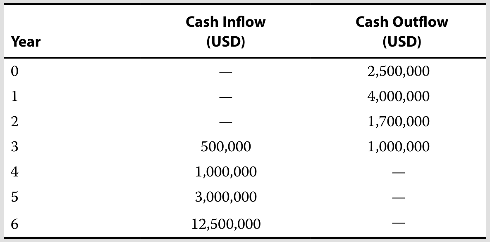
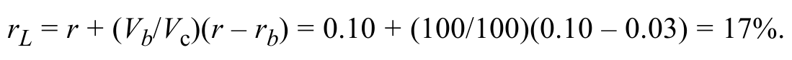
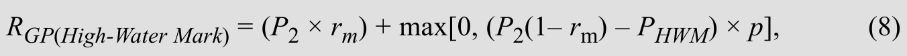
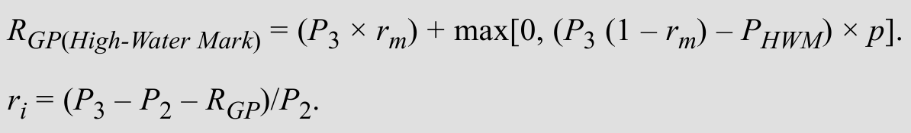
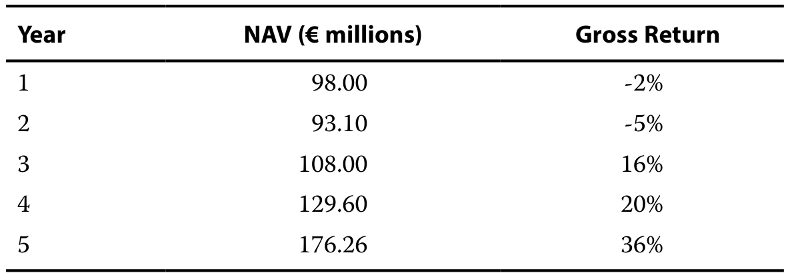

244 条学习条目 · 7 个含习题学习单元 244 exercise and worked-example records · 7 modules with exercises
资料来源：你提供的 2027 CFA Program Curriculum Level I 英文原版 PDF 及其双语 EPUB。英文题目、选项、图表与官方解析按原书保留；中文为学习译文，不是 CFA Institute 发布的官方中文译本。
Source: the user-provided 2027 CFA Program Curriculum Level I PDFs and bilingual EPUBs. Original questions, options, visuals, and official explanations are retained. Chinese text is a study translation, not an official CFA Institute translation.
Each record presents the question, official explanation, supplementary explanation, and related concepts together. Added teaching notes are separate from the official text. Identified source errors are annotated; narrated examples are retained without invented questions.
教材年份 / Curriculum year: 2027 整理日期 / Prepared: 2026-11-07 每条保留原版 PDF 页码，便于回查 / Source PDF page references included
LM 1 · 另类投资的特征、方法与结构 Alternative Investment Features, Methods, and Structures 33 条目 · 原题与解析逐条对应 / Paired source questions and explanations
ALT-LM01-SA01-01模块自测 1 Module self-assessment 1
课前自测 / Pre-test / self-assessment · 原版 PDF 页码 / Source PDF pages: 12
题目与资料 / Question and data
1. 以下哪项最可能属于另类投资？
1. Identify which of the following choices is most likely an alternative investment:
A. 投资于专注传统资产的对冲基金。
A. An investment in a hedge fund focused on traditional assets
B. 在马来西亚证券交易所交易的一家制造企业的股票。
B. Shares in a manufacturing firm traded on the Bursa Malaysia exchange
C. 在芝加哥商品交易所买入的欧元外汇期货。
C. A euro foreign exchange future purchased on the Chicago Mercantile exchange
The correct answer is A. An investment in a hedge fund, even one that purchases traditional exchange-traded assets, is considered an alternative investment. B is incorrect because shares traded on a public exchange, such as the Bursa Malaysia exchange, are considered traditional, not alternative, investments. C is incorrect because a euro foreign exchange future purchased on a public exchange, such as the Chicago Mercantile exchange, is considered a traditional, not an alternative, investment.
Link to this question’s official result: “The correct answer is A. An investment in a hedge fund, even one that purchases traditional exchange-traded assets, is considered an alternative investment. B is incorrect because shares traded on a public exchange, such as the Bursa Malaysia exchange, are considered traditional, not alternative, investments.” The supplementary discussion below explains what alternative investments share—and what they do not.
Reasoning: Alternative investments are not a uniform promise of higher returns. They differ from traditional public equity, bonds, or cash through asset characteristics, structure, or strategy. Illiquidity, infrequent valuation, limited transparency, and specialized management affect risk analysis.
Application: Classify by the vehicle and strategy as well as the underlying assets: a hedge fund holding conventional equities can still be an alternative investment. Assess diversification in relation to the existing portfolio and the investor’s ability to tolerate locked-up capital.
相关知识点 / Related concepts
另类资产的共同点与差异 / What alternative investments share—and what they do not
低相关性可以改善组合分散，但不能把低频估值显示出的平稳收益直接当作低经济风险。
Low correlation can improve diversification, but smooth reported returns from infrequent appraisals do not necessarily imply low economic risk.
ALT-LM01-SA01-02模块自测 2 Module self-assessment 2
课前自测 / Pre-test / self-assessment · 原版 PDF 页码 / Source PDF pages: 12
题目与资料 / Question and data
2. 另类投资的一项优势最可能是：
2. An advantage of investing in alternative investments most likely is:
The correct answer is C. Investors are often attracted to alternative investments seeking greater diversification and/or higher expected returns. A is incorrect because investors usually face longer investment periods, reduced liquidity, and less efficient markets with alternative investments than with more traditional assets. B is incorrect because alternative investments often carry higher fees, including performance and/or incentive fees.
Link to this question’s official result: “The correct answer is C. Investors are often attracted to alternative investments seeking greater diversification and/or higher expected returns. A is incorrect because investors usually face longer investment periods, reduced liquidity, and less efficient markets with alternative investments than with more traditional assets.” The supplementary discussion below explains calculate fund fees in the contractual order.
Reasoning: The key is the contractual base and calculation order, not memorizing “2 and 20.” Management fees may use beginning value, ending value, or committed capital. Performance-fee calculations must follow the stated treatment of management fees.
应用方法：逐项写出期末扣费前价值、管理费、适用门槛、业绩费和投资者净值。Hard hurdle 通常只对超过门槛部分收费；soft hurdle / catch-up 的分配机制不同。High-water mark 避免对已赚过又亏掉的同一收益重复收费；clawback 是特定情况下追回已付报酬。
Application: List gross ending value, management fee, the applicable hurdle, performance fee, and investor net value. A hard hurdle usually charges only above the threshold; a soft hurdle with catch-up distributes gains differently. A high-water mark prevents repeated fees on recovered losses; a clawback can reclaim prior distributions.
相关知识点 / Related concepts
基金收费按条款逐层计算 / Calculate fund fees in the contractual order
Committed capital 是投资者承诺提供的资金，不等于当期已投入资本或基金资产净值。不要把收费基数、收益门槛和最终净回报混成同一个金额。
Committed capital is promised funding, not necessarily invested capital or current NAV. Keep fee bases, hurdle amounts, and investor returns separate.
Investor net return = (Ending value after all applicable fees − Beginning investment) / Beginning investment
关联考点：低相关性可以改善组合分散，但不能把低频估值显示出的平稳收益直接当作低经济风险。
Related concept: Low correlation can improve diversification, but smooth reported returns from infrequent appraisals do not necessarily imply low economic risk.
ALT-LM01-SA01-03模块自测 3 Module self-assessment 3
课前自测 / Pre-test / self-assessment · 原版 PDF 页码 / Source PDF pages: 13
题目与资料 / Question and data
3. 经验有限的投资者最可能通过哪种方式参与另类投资？
3. Investors with limited experience most likely enter into alternative investments through:
The correct answer is B. Investors with limited resources and/or experience generally enter into alternative investments through fund investing, where the investor contributes capital to a fund and the fund identifies, selects, and makes investments on the investor’s behalf. A is incorrect because co-investing is more appropriate for investors who already have some experience investing in funds; in co-investing, the investor invests in assets indirectly through the fund but also possesses rights (known as co-investment rights) to invest directly in the same assets. C is incorrect because direct investing, which occurs when an investor makes a direct investment in an asset without the use of an intermediary, is typically reserved for larger and more sophisticated investors.
Link to this question’s official result: “The correct answer is B. Investors with limited resources and/or experience generally enter into alternative investments through fund investing, where the investor contributes capital to a fund and the fund identifies, selects, and makes investments on the investor’s behalf.” The supplementary discussion below explains fund investing, co-investing, and direct investing.
Reasoning: These methods trade off control, expertise, resources, and fees. Fund investors delegate asset selection and management. Direct investors perform those tasks themselves. Co-investors add direct exposure to selected assets alongside a fund relationship.
Application: Limited expertise and resources favor the delegation benefits of fund investing; a strong internal team seeking control can support direct investing. Co-investment may reduce fees but requires transaction analysis and attention to concentration risk.
相关知识点 / Related concepts
基金、共同投资与直接投资 / Fund investing, co-investing, and direct investing
费用低不等于总成本低：直接投资需要内部人员、尽调和持续管理；控制权多也意味着更多责任。
Lower explicit fees do not imply lower total cost: direct investing requires staff, due diligence, and ongoing oversight. More control also means more responsibility.
ALT-LM01-SA01-04模块自测 4 Module self-assessment 4
课前自测 / Pre-test / self-assessment · 原版 PDF 页码 / Source PDF pages: 13
题目与资料 / Question and data
4. 投资者不通过中介而投资于某项资产，这种方式称为：
4. When an investor invests in an asset without the use of an intermediary, it is called:
The correct answer is C. In direct investing, an investor makes a direct investment in an asset without the use of an intermediary. A is incorrect because in co-investing, an investor invests in assets indirectly through a fund but also possesses rights (known as co-investment rights) to invest directly in the same assets. B is incorrect because for fund investing, an investor contributes capital to a fund and the fund, not the investor, identifies, selects, and makes investments on the investor’s behalf.
Link to this question’s official result: “The correct answer is C. In direct investing, an investor makes a direct investment in an asset without the use of an intermediary. A is incorrect because in co-investing, an investor invests in assets indirectly through a fund but also possesses rights (known as co-investment rights) to invest directly in the same assets.” The supplementary discussion below explains fund investing, co-investing, and direct investing.
Reasoning: These methods trade off control, expertise, resources, and fees. Fund investors delegate asset selection and management. Direct investors perform those tasks themselves. Co-investors add direct exposure to selected assets alongside a fund relationship.
Application: Limited expertise and resources favor the delegation benefits of fund investing; a strong internal team seeking control can support direct investing. Co-investment may reduce fees but requires transaction analysis and attention to concentration risk.
相关知识点 / Related concepts
基金、共同投资与直接投资 / Fund investing, co-investing, and direct investing
费用低不等于总成本低：直接投资需要内部人员、尽调和持续管理；控制权多也意味着更多责任。
Lower explicit fees do not imply lower total cost: direct investing requires staff, due diligence, and ongoing oversight. More control also means more responsibility.
ALT-LM01-SA01-05模块自测 5 Module self-assessment 5
课前自测 / Pre-test / self-assessment · 原版 PDF 页码 / Source PDF pages: 13
题目与资料 / Question and data
5. 关于另类投资的合伙结构，以下哪项表述最准确？
5. Which statement regarding alternative investment partnership structures is most accurate?
A. 基金管理人对出现的任何问题仅承担有限责任。
A. The fund manager has limited liability for anything that goes wrong.
B. 基金管理人是有限合伙人，而投资者是普通合伙人。
B. The fund manager is a limited partner, and investors are general partners.
C. 投资者最初的现金流出可以仅占其对合伙企业总承诺出资额的一小部分。
C. Investors’ upfront cash outflow can be a small portion of their total commitment to the partnership.
The correct answer is C. Limited partners (LPs) are outside investors who own a fractional interest in the partnership based on the amount of their initial investment and the terms set out in the partnership documentation. LPs commit to future investments, and their upfront cash outflow can be a small portion of their total commitment to the fund. A is incorrect because the fund manager is the fund’s general partner (GP) who runs the business and theoretically bears unlimited liability for anything that goes wrong. B is incorrect because the fund manager is the fund’s general partner, not a limited partner, and the investors are the limited partners.
Link to this question’s official result: “The correct answer is C. Limited partners (LPs) are outside investors who own a fractional interest in the partnership based on the amount of their initial investment and the terms set out in the partnership documentation. LPs commit to future investments, and their upfront cash outflow can be a small portion of their total commitment to the fund.” The supplementary discussion below explains partnership roles, commitments, and distributions.
Reasoning: In a limited partnership, the GP manages the fund while LPs provide capital under the partnership agreement. Committed capital need not be paid immediately in full; capital calls draw funds as investments are made.
应用方法：先区分 committed capital、paid-in capital、NAV 与 distribution。Side letter 可对某些投资者调整协议条款；分配 waterfall 决定先返本金、支付优先回报，再如何分配 GP 与 LP 的利润，不能直接按总利润乘 carried interest 就跳过前置条件。
Application: Separate committed capital, paid-in capital, NAV, and distributions. A side letter can modify terms for particular investors. The waterfall determines return of capital, preferred returns, and the allocation of subsequent profits before carried interest can be determined.
相关知识点 / Related concepts
合伙结构、资金承诺与分配 / Partnership roles, commitments, and distributions
European / whole-of-fund 与 deal-by-deal 分配的结算基础不同，可能影响报酬支付的时点和追回需求。
Whole-of-fund and deal-by-deal waterfalls use different aggregation bases, affecting performance-fee timing and possible clawbacks.
ALT-LM01-SA01-06模块自测 6 Module self-assessment 6
课前自测 / Pre-test / self-assessment · 原版 PDF 页码 / Source PDF pages: 14
题目与资料 / Question and data
6. 未达到门槛收益率后，普通合伙人仍最可能获得以下哪项报酬？
6. After failing to meet the hurdle rate, which of the following would a general partner still most likely receive as compensation?
The correct answer is B. Alternative investment funds are usually structured with a management fee typically ranging from 1% to 2% of assets under management (e.g., for hedge funds) or 1% to 2% of committed capital (e.g., for private equity funds). (Committed capital is the total amount of money that the limited partners have committed to the fund’s future investments.) A performance fee (also referred to as an incentive fee, carried interest, or carry) is applied based on excess returns. The partnership agreement usually specifies that the performance fee is earned only after the fund achieves a return known as a “hurdle rate.” The hurdle rate is a minimum rate of return that the general partner must exceed in order to earn the performance fee. A is incorrect because “carried interest” is another name for a performance fee, which is earned only after the fund achieves its hurdle rate. C is incorrect because committed capital is the total amount of money that the limited partners have committed to the fund’s future investments, not a fee to the general partner.
Link to this question’s official result: “The correct answer is B. Alternative investment funds are usually structured with a management fee typically ranging from 1% to 2% of assets under management (e.g., for hedge funds) or 1% to 2% of committed capital (e.g., for private equity funds). (Committed capital is the total amount of money that the limited partners have committed to the fund’s future investments.) A performance fee (also referred to as an incentive fee, carried interest, or carry) is applied based on excess returns.” The supplementary discussion below explains calculate fund fees in the contractual order.
Reasoning: The key is the contractual base and calculation order, not memorizing “2 and 20.” Management fees may use beginning value, ending value, or committed capital. Performance-fee calculations must follow the stated treatment of management fees.
应用方法：逐项写出期末扣费前价值、管理费、适用门槛、业绩费和投资者净值。Hard hurdle 通常只对超过门槛部分收费；soft hurdle / catch-up 的分配机制不同。High-water mark 避免对已赚过又亏掉的同一收益重复收费；clawback 是特定情况下追回已付报酬。
Application: List gross ending value, management fee, the applicable hurdle, performance fee, and investor net value. A hard hurdle usually charges only above the threshold; a soft hurdle with catch-up distributes gains differently. A high-water mark prevents repeated fees on recovered losses; a clawback can reclaim prior distributions.
相关知识点 / Related concepts
基金收费按条款逐层计算 / Calculate fund fees in the contractual order
Committed capital 是投资者承诺提供的资金，不等于当期已投入资本或基金资产净值。不要把收费基数、收益门槛和最终净回报混成同一个金额。
Committed capital is promised funding, not necessarily invested capital or current NAV. Keep fee bases, hurdle amounts, and investor returns separate.
Investor net return = (Ending value after all applicable fees − Beginning investment) / Beginning investment
ALT-LM01-EX01-01已解例题 1 · 风险投资与私募股权 Worked example 1 · Venture Capital vs. Private Equity
正文例题／案例 / Worked example / case · 原版 PDF 页码 / Source PDF pages: 15-16
题目与资料 / Question and data
风险投资与私募股权
Venture Capital vs. Private Equity
官方答案与解析 / Official answer and explanation
Heartfield Digital 是一家成立于 18 个月前、处于早期阶段的数字媒体企业。
Heartfield Digital is an early-stage digital media venture established 18 months ago.
Heartfield 计划将传统音乐和艺术收藏品的相关权利转为数字形式，用于销售和分发。
Heartfield plans to convert conventional music and art collection rights to digital form for sale and distribution.
其创始人正在寻找早期投资者，以开展市场研究、建立合作关系并启动运营。
Its founders are seeking early-stage investors in order to conduct market research, build partnerships, and initiate operations.
相比之下，Arguston Inc. 是一家身处成熟行业、盈利能力正在下降的中型制造企业。
In contrast, Arguston Inc. is a mid-sized manufacturing firm in a mature industry that is experiencing a decline in profitability.
Arguston’s share price has stagnated, and given its high-cost structure and dwindling operating cash flow, Arguston lacks the scale to make necessary technological upgrades to maintain competitiveness.
A prospective private equity investor might consider an investment plan to restructure Arguston’s operations, acquire a smaller competitor, and/or create efficiencies, perhaps by updating the plant and equipment.
数年后，Arguston 可能成为盈利能力更强的独立企业，或成为竞争对手眼中具有吸引力的收购目标。
In several years, Arguston may emerge as a more profitable independent company or as an attractive acquisition target for a competitor.
严格来说，风险投资（VC）属于私募股权的一种。
Technically, venture capital (VC) is a form of private equity.
主要区别是：一般私募股权投资者偏好经营稳定的企业，而风险投资者通常在企业初创阶段进入。
The main difference is that while private equity investors prefer stable companies, VC investors usually come in during the startup phase.
风险投资通常提供给 Heartfield Digital 这类规模较小但增长潜力巨大的企业；范围更广的其他私募股权融资方式则更适合 Arguston 这类成熟企业。
Venture capital is usually given to small companies with huge growth potential, such as Heartfield Digital, while broader types of private equity financing would be more appropriate for a mature firm, such as Arguston.
For private debt, in addition to private loans or bonds, venture debt is extended to early-stage firms with little or no cash flow, while distressed debt (introduced in a separate fixed-income lesson) involves public or private debt of corporate issuers believed to be close to or in bankruptcy that could benefit from investors with capital restructuring skills.
补充解析 / Supplementary explanation
结合本题的官方结论：“Heartfield Digital 是一家成立于 18 个月前、处于早期阶段的数字媒体企业。 Heartfield 计划将传统音乐和艺术收藏品的相关权利转为数字形式，用于销售和分发。 其创始人正在寻找早期投资者，以开展市场研究、建立合作关系并启动运营。” 下列补充说明解释其背后的融资工具要与企业阶段匹配。
Link to this question’s official result: “Heartfield Digital is an early-stage digital media venture established 18 months ago. Heartfield plans to convert conventional music and art collection rights to digital form for sale and distribution. Its founders are seeking early-stage investors in order to conduct market research, build partnerships, and initiate operations.” The supplementary discussion below explains match financing to the company’s stage.
Reasoning: Early-stage firms lack stable cash flows and long operating records, creating technology and commercialization risk. Mature firms are more likely to support debt service. Stage affects control rights, protections, and exit choices.
Application: Locate the business in idea, seed, growth, or pre-IPO stages before comparing common equity, preferred equity, or convertible financing. Mezzanine-stage financing refers to timing; mezzanine financing refers to hybrid capital characteristics.
相关知识点 / Related concepts
融资工具要与企业阶段匹配 / Match financing to the company’s stage
优先股可能通过清算优先权和转换权提供保护与上行参与；这些权利必须以具体合同为依据。
Preferred shares can combine liquidation preference with conversion upside, but the actual protections depend on contract terms.
ALT-LM01-EX02-02已解例题 2 · 印度尼西亚基础设施项目的公私合营 Worked example 2 · Public–Private Partnership for Infrastructure Projects in Indonesia
正文例题／案例 / Worked example / case · 原版 PDF 页码 / Source PDF pages: 16-17
题目与资料 / Question and data
印度尼西亚基础设施项目的公私合营
Public–Private Partnership for Infrastructure Projects in Indonesia
官方答案与解析 / Official answer and explanation
PT Indonesia Infrastructure Finance（IIF，印度尼西亚基础设施金融公司）是印度尼西亚政府于 2010 年设立的一家本国私营公司，旨在加快并改善私人部门对该国基础设施发展的参与。
PT Indonesia Infrastructure Finance (IIF) is a private national company established in 2010 by the government of Indonesia to accelerate and improve private participation in infrastructure development in Indonesia.
IIF 与世界银行、亚洲开发银行及其他机构合作，为商业上可行的基础设施项目提供融资与咨询服务。
Together with the World Bank, the Asian Development Bank, and other institutions, the IIF provides infrastructure financing and advisory services for commercially viable infrastructure projects.
This approach has facilitated development of PPP projects, increased equity investment in Indonesian infrastructure projects, and increased institutional awareness and capacity to implement environmental, health, and safety and social issues.
展望未来，IIF 预计五年内需投入 1,500 亿美元建设发电厂和收费公路。
Looking ahead, the IIF anticipates the need to spend USD150 billion over a five-year period to construct power plants and toll roads.
政府能够负担其中 30%，其余将由私人部门通过公私合营方式融资。
While the government will be able to fund 30% of this cost, the remainder will be financed by the private sector through PPPs.
Natural resources involve either less developed land, which itself is the source of economic value, or naturally occurring standardized products that are harvested, extracted, and/or refined.
开发程度较低的土地包括农地、林地，以及用于勘探矿产或能源等自然资源储量的土地。
Less developed land includes farmland, timberland, or land for exploration for natural resource deposits, such as minerals or energy.
这类土地的回报来源包括预期长期价格上涨和现金流。
Sources of return for these types of less developed land include expected price appreciation over time and cash flows.
For example, farmland generates crop yields or agricultural lease payments, future timber harvests generate timberland income, and mineral or drilling rights to extract and refine natural resources can provide income.
In some cases, these investments may be considered for environmental, social, and governance (ESG) purposes—for example, when promoting sustainable farming practices for agriculture or creating carbon offsets for timberland, as in the following example.
补充解析 / Supplementary explanation
结合本题的官方结论：“PT Indonesia Infrastructure Finance（IIF，印度尼西亚基础设施金融公司）是印度尼西亚政府于 2010 年设立的一家本国私营公司，旨在加快并改善私人部门对该国基础设施发展的参与。 IIF 与世界银行、亚洲开发银行及其他机构合作，为商业上可行的基础设施项目提供融资与咨询服务。” 下列补充说明解释其背后的基础设施：建设风险与运营现金流。
Link to this question’s official result: “PT Indonesia Infrastructure Finance (IIF) is a private national company established in 2010 by the government of Indonesia to accelerate and improve private participation in infrastructure development in Indonesia. Together with the World Bank, the Asian Development Bank, and other institutions, the IIF provides infrastructure financing and advisory services for commercially viable infrastructure projects.” The supplementary discussion below explains infrastructure: construction risk and operating cash flow.
Reasoning: Infrastructure often provides essential services over long horizons, funded by user charges or government payments. Greenfield projects face construction, delay, and unproven-demand risk; brownfield assets have operating histories and a different risk profile.
Application: Identify construction versus operation, then allocate demand, pricing, and maintenance risk. A PPP or concession allocates responsibilities and returns between public and private parties; it does not automatically guarantee every cash flow.
相关知识点 / Related concepts
基础设施：建设风险与运营现金流 / Infrastructure: construction risk and operating cash flow
长寿命资产可能与长期负债匹配，但仍受监管、政治、合同执行和技术变化影响。
Long-lived assets can match long-term liabilities while remaining exposed to regulation, politics, contract enforcement, and technological change.
ALT-LM01-EX03-03已解例题 3 · 利用林地创造碳抵消额度 Worked example 3 · Using Timberland to Create Carbon Offsets
正文例题／案例 / Worked example / case · 原版 PDF 页码 / Source PDF pages: 17
题目与资料 / Question and data
利用林地创造碳抵消额度
Using Timberland to Create Carbon Offsets
官方答案与解析 / Official answer and explanation
希望抵消自身排放的公司向林地所有者付费，请他们不砍伐成片树木。
Companies eager to offset emissions are paying timberland owners not to cut acres of trees.
生长中的树木会吸收大气中的碳。
Growing trees absorb carbon in the atmosphere.
向林地所有者付费以换取停止采伐的公司，会获得碳抵消形式的额度。
Companies that pay timber owners not to harvest trees receive credits in the form of carbon offsets.
Large companies, which inevitably generate emissions in the course of doing business, can fund carbon offsets to demonstrate to their investors, customers, and others (including regulators) that they are serious about reducing pollution and helping the environment.
对于大型和小型林地所有者而言，选择不采伐同样合理。
For large and small owners of timberland, choosing not to harvest makes sense, too.
树木继续生长，未来可获得的木材量增加，同时他们还能获得非木材收入。
Their trees continue to grow, leading to higher future volumes of timber, and they earn non-timber income in the meantime.
在其他情况下，未开发土地还可能具有未来开发为商业、住宅或基础设施用途的潜力。
In other cases, undeveloped land may also have future potential for commercial, residential, or infrastructure development.
大宗商品是标准化、可交易的商品，包括用于商品与服务生产的植物、动物、能源和矿产品。
Standardized, traded goods known as commodities include plant, animal, energy, and mineral products used in goods and services production.
大宗商品本身不产生现金流，而是最终由生产者出售给使用者，用于经济活动。
Commodities do not themselves generate cash flows but, rather, are ultimately sold by commodity producers to commodity consumers for economic use.
Investors seek to benefit from commodity price changes based on their future economic use as well as a lower correlation of returns versus other asset classes over the economic cycle.
由于这种低相关性，大宗商品还可作为逆周期持仓和通胀对冲工具。
With their lower correlation of returns with other asset classes, commodities also can serve as a countercyclical holding and as an inflation hedge.
Link to this question’s official result: “Companies eager to offset emissions are paying timberland owners not to cut acres of trees. Growing trees absorb carbon in the atmosphere. Companies that pay timber owners not to harvest trees receive credits in the form of carbon offsets.” The supplementary discussion below explains farmland and timberland: income and timing choices.
Reasoning: Farmland and timberland combine land value with productive biological or agricultural income, but production cycles differ. Timber can grow in value and offers some flexibility over harvest timing, while crops are more constrained by seasons and storage.
Application: Separate commodity prices, weather or biological risk, land values, costs, and liquidity. Inflation protection and diversification are potential portfolio properties, not guaranteed one-for-one annual inflation tracking or loss protection.
相关知识点 / Related concepts
农地与林地的收入及选择权 / Farmland and timberland: income and timing choices
延后采伐的选择权并非无限：树龄、品质、管理成本及生物风险都会限制等待价值。
Harvest deferral is not unlimited; age, quality, management costs, and biological risks constrain its value.
ALT-LM01-EX04-04已解例题 4 · 日益重要的大宗商品：锂的需求增长 Worked example 4 · Rising Demand for Lithium, an Increasingly Important Commodity
正文例题／案例 / Worked example / case · 原版 PDF 页码 / Source PDF pages: 18
题目与资料 / Question and data
日益重要的大宗商品：锂的需求增长
Rising Demand for Lithium, an Increasingly Important Commodity
官方答案与解析 / Official answer and explanation
随着电动汽车（EV）需求攀升，锂的需求正在快速增长。
Demand for lithium is growing rapidly as demand for electric vehicles (EVs) climbs.
锂受到电池制造商青睐，因为它是密度最低的金属，相对于自身重量，能够储存较多能量。
Lithium is popular with battery manufacturers because, as the least dense metal, it stores a large proportion of energy relative to its weight.
The sales of battery electric and plug-in hybrid electric cars exceeded 2 million for the first time in 2019. China dominates this market, accounting for more than half of all current EV sales worldwide. An industry source has forecast that EV sales will grow from 2.5 million in 2020 to approximately 11 million in 2025 and will exceed 30 million by 2030, garnering approximately 32% of the total market share for new car sales at that time.
锂的需求将相应增加。
Demand for lithium will rise accordingly.
预计锂需求的增长将推动新锂矿的开发，并使全球更多国家扩大锂生产。
The growth in lithium demand is expected to foster new lithium mining and more production in more countries worldwide.
Other real alternative assets include tangible collectible assets, such as fine art, wine, rare coins, watches, and other rare assets, as well as intangible assets, such as patents, and litigation, and so-called digital assets.
“数字资产”是一个统称，涵盖能够以电子方式创建、储存和传输，并附有所有权或使用权的资产。
“Digital assets” is the umbrella term covering assets that can be created, stored, and transmitted electronically and have associated ownership or use rights.
Link to this question’s official result: “Demand for lithium is growing rapidly as demand for electric vehicles (EVs) climbs. Lithium is popular with battery manufacturers because, as the least dense metal, it stores a large proportion of energy relative to its weight. The sales of battery electric and plug-in hybrid electric cars exceeded 2 million for the first time in 2019.” The supplementary discussion below explains commodity futures returns are not just spot-price changes.
Reasoning: Futures exposure differs from physical ownership. Maintaining exposure requires rolling contracts, so returns reflect contract-price movements, the term structure, and collateral income.
Application: In contango, deferred contracts are generally more expensive, so selling the nearby contract and buying a deferred contract can create a negative roll effect. Backwardation tends to reverse that mechanism. A rising spot price alone does not determine the total futures return.
相关知识点 / Related concepts
商品期货回报不只等于现货涨跌 / Commodity futures returns are not just spot-price changes
Spot, roll, and collateral returns represent distinct sources. Convenience yield is the economic benefit of physical availability, not necessarily cash income.
The correct answer is A. In contrast to financial assets, real assets are generally tangible physical assets that generate current or expected future cash flows and/or are considered a store of value. Major categories of real assets include real estate and natural resources, as well as intangibles such as patents. B is incorrect because private equity, considered an alternative investment, is non-publicly traded capital that is invested directly in private companies (or in public companies that are being taken private). It is typically used to invest in firms in the mature life-cycle stage or in decline. C is incorrect because venture capital is ownership capital used for non-public companies in their early life cycle or startup phase.
Link to this question’s official result: “The correct answer is A. In contrast to financial assets, real assets are generally tangible physical assets that generate current or expected future cash flows and/or are considered a store of value. Major categories of real assets include real estate and natural resources, as well as intangibles such as patents.” The supplementary discussion below explains match financing to the company’s stage.
Reasoning: Early-stage firms lack stable cash flows and long operating records, creating technology and commercialization risk. Mature firms are more likely to support debt service. Stage affects control rights, protections, and exit choices.
Application: Locate the business in idea, seed, growth, or pre-IPO stages before comparing common equity, preferred equity, or convertible financing. Mezzanine-stage financing refers to timing; mezzanine financing refers to hybrid capital characteristics.
相关知识点 / Related concepts
融资工具要与企业阶段匹配 / Match financing to the company’s stage
优先股可能通过清算优先权和转换权提供保护与上行参与；这些权利必须以具体合同为依据。
Preferred shares can combine liquidation preference with conversion upside, but the actual protections depend on contract terms.
Private equity managers often use the greater control and flexibility of private versus public ownership to make management and strategy changes including closing, selling, or reorganizing lines of business to increase profitability over a several-year period.
相比之下，风险投资用于处于生命周期早期或初创阶段、具有高增长潜力的非上市公司。
In contrast, venture capital is used for non-public companies with high growth potential in their early life cycle or startup phase.
风险投资实质上是私募股权的一种专门形式；按金额计算，它只占整个私募股权市场的一小部分。
Venture capital is essentially a specialized form of private equity; it represents a small portion of the entire private equity market by value.
Link to this question’s official result: “Private capital is used at different times in a company’s life cycle and in different forms. Most private equity is used in the mature life cycle stage or for firms in decline. Private equity managers often use the greater control and flexibility of private versus public ownership to make management and strategy changes including closing, selling, or reorganizing lines of business to increase profitability over a several-year period.” The supplementary discussion below explains match financing to the company’s stage.
Reasoning: Early-stage firms lack stable cash flows and long operating records, creating technology and commercialization risk. Mature firms are more likely to support debt service. Stage affects control rights, protections, and exit choices.
Application: Locate the business in idea, seed, growth, or pre-IPO stages before comparing common equity, preferred equity, or convertible financing. Mezzanine-stage financing refers to timing; mezzanine financing refers to hybrid capital characteristics.
相关知识点 / Related concepts
融资工具要与企业阶段匹配 / Match financing to the company’s stage
优先股可能通过清算优先权和转换权提供保护与上行参与；这些权利必须以具体合同为依据。
Preferred shares can combine liquidation preference with conversion upside, but the actual protections depend on contract terms.
The correct answer is B. Digital assets continue to evolve and vary in terms of design and application. Digital assets can be thought of as anything that can be stored and transmitted electronically and has associated ownership or use rights. A is incorrect because digital assets include cryptocurrencies, tokens (security and utility), and digital collectables (such as digital art). C is incorrect because digital assets may take many forms (such as digital tokens and virtual currencies) and may use various underlying technologies. They are not limited to specific designs or technology.
Link to this question’s official result: “The correct answer is B. Digital assets continue to evolve and vary in terms of design and application. Digital assets can be thought of as anything that can be stored and transmitted electronically and has associated ownership or use rights.” The supplementary discussion below explains classify digital assets by rights and use.
Reasoning: On-chain existence does not make digital assets economically identical. Cryptocurrencies, stablecoins, CBDCs, security tokens, utility tokens, and NFTs can differ in issuer, rights, use, and backing.
Application: Ask what the holder receives: a means of exchange, a financial claim, access to a service, or a unique digital record. A stable-value target is not a guarantee; reserves, redemption, and design matter. NFT uniqueness does not itself guarantee valuable scarcity.
相关知识点 / Related concepts
数字资产按权利与用途区分 / Classify digital assets by rights and use
正文习题组 / Question set · 原版 PDF 页码 / Source PDF pages: 20
题目与资料 / Question and data
4. 填写正确答案：另类投资的类别包括________、________和________。
4. Determine the correct answers to fill in the blanks: Alternative investment categories include _______________, _________________, and ______________.
官方答案与解析 / Official answer and explanation
另类投资的类别包括私人资本、实物资产与对冲基金。
Alternative investment categories include private capital, real assets, and hedge funds.
Link to this question’s official result: “Alternative investment categories include private capital, real assets, and hedge funds.” The supplementary discussion below explains what alternative investments share—and what they do not.
Reasoning: Alternative investments are not a uniform promise of higher returns. They differ from traditional public equity, bonds, or cash through asset characteristics, structure, or strategy. Illiquidity, infrequent valuation, limited transparency, and specialized management affect risk analysis.
Application: Classify by the vehicle and strategy as well as the underlying assets: a hedge fund holding conventional equities can still be an alternative investment. Assess diversification in relation to the existing portfolio and the investor’s ability to tolerate locked-up capital.
相关知识点 / Related concepts
另类资产的共同点与差异 / What alternative investments share—and what they do not
低相关性可以改善组合分散，但不能把低频估值显示出的平稳收益直接当作低经济风险。
Low correlation can improve diversification, but smooth reported returns from infrequent appraisals do not necessarily imply low economic risk.
ALT-LM01-EX05-05已解例题 5 · 共同投资机会 Worked example 5 · Co-Investment Opportunity
正文例题／案例 / Worked example / case · 原版 PDF 页码 / Source PDF pages: 24
题目与资料 / Question and data
共同投资机会
Co-Investment Opportunity
官方答案与解析 / Official answer and explanation
Moreton Bay Pension Plan 是 Tenderledge LLC Alternatives Fund 的投资者。
Moreton Bay Pension Plan is an investor in Tenderledge LLC Alternatives Fund.
Tenderledge has identified a take-private transaction in Fancy Roofing Co. that requires a USD1.5 billion capital investment.
然而，基金的集中度限制规定，Tenderledge 在任何单项投资中的投入不得超过 10 亿美元。
However, the fund concentration limit allows Tenderledge to invest only up to USD1 billion in any one investment.
Tenderledge 因此向 Moreton Bay Pension Plan 和其他基金投资者提供额外 5 亿美元的共同投资机会，收取较低费用，并免收业绩报酬。
Tenderledge offers the additional USD0.5 billion to Moreton Bay Pension Plan and other investors in the fund as a co-investment on a reduced fee and no carry basis.
在这种情况下，共同投资使 Tenderledge 无须引入另一家基金管理人即可完成投资；共同投资者则以较低管理费和零业绩报酬，增加对 Fancy Roofing Company 的投资敞口。
In this case, the co-investment allows Tenderledge the ability to secure the investment without needing to bring an additional fund manager into the transaction, and the co-investors gain additional exposure to Fancy Roofing Company at a reduced management fee and zero performance fees.
补充解析 / Supplementary explanation
结合本题的官方结论：“Moreton Bay Pension Plan 是 Tenderledge LLC Alternatives Fund 的投资者。 Tenderledge 发现了一项将 Fancy Roofing Co. 私有化的交易机会，需要投入 15 亿美元资本。 然而，基金的集中度限制规定，Tenderledge 在任何单项投资中的投入不得超过 10 亿美元。” 下列补充说明解释其背后的基金、共同投资与直接投资。
Link to this question’s official result: “Moreton Bay Pension Plan is an investor in Tenderledge LLC Alternatives Fund. Tenderledge has identified a take-private transaction in Fancy Roofing Co. that requires a USD1.5 billion capital investment. However, the fund concentration limit allows Tenderledge to invest only up to USD1 billion in any one investment.” The supplementary discussion below explains fund investing, co-investing, and direct investing.
Reasoning: These methods trade off control, expertise, resources, and fees. Fund investors delegate asset selection and management. Direct investors perform those tasks themselves. Co-investors add direct exposure to selected assets alongside a fund relationship.
Application: Limited expertise and resources favor the delegation benefits of fund investing; a strong internal team seeking control can support direct investing. Co-investment may reduce fees but requires transaction analysis and attention to concentration risk.
相关知识点 / Related concepts
基金、共同投资与直接投资 / Fund investing, co-investing, and direct investing
费用低不等于总成本低：直接投资需要内部人员、尽调和持续管理；控制权多也意味着更多责任。
Lower explicit fees do not imply lower total cost: direct investing requires staff, due diligence, and ongoing oversight. More control also means more responsibility.
ALT-LM01-EX06-06已解例题 6 · 直接投资可再生能源 Worked example 6 · Direct Investment in Renewable Energy
正文例题／案例 / Worked example / case · 原版 PDF 页码 / Source PDF pages: 25
题目与资料 / Question and data
直接投资可再生能源
Direct Investment in Renewable Energy
官方答案与解析 / Official answer and explanation
新加坡主权财富基金 GIC 于 2021 年宣布，将直接向总部位于新加坡的能源公司 Arctic Green Energy 投资 2.4 亿美元，成为该公司的股权合作伙伴。
Singapore sovereign wealth fund GIC announced in 2021 that it will directly invest USD240 million in a Singapore-based energy firm, Arctic Green Energy, becoming an equity partner in the firm.
这笔投资将帮助 Arctic Green Energy 扩展全球业务，提高地热能源领域的能力。
The investment will help Arctic Green Energy expand its global operations and increase its capability in geothermal energy.
地热能源源自地下热泉，是一种可再生、具有经济竞争力且可持续的能源，可替代用于供暖和制冷的化石燃料。
Geothermal energy is derived from hot underground springs and is a renewable, economically competitive, and sustainable alternative to using fossil fuels for heating and cooling.
Arctic Green Energy 利用地热资源发电并生产清洁热能。
Arctic Green Energy uses geothermal resources to generate power and produce clean heat.
GIC 表示，可持续投资是其核心长期投资使命之一。
GIC has noted that investing sustainably is one of its core long-term investment mandates.
补充解析 / Supplementary explanation
结合本题的官方结论：“新加坡主权财富基金 GIC 于 2021 年宣布，将直接向总部位于新加坡的能源公司 Arctic Green Energy 投资 2.4 亿美元，成为该公司的股权合作伙伴。 这笔投资将帮助 Arctic Green Energy 扩展全球业务，提高地热能源领域的能力。 地热能源源自地下热泉，是一种可再生、具有经济竞争力且可持续的能源，可替代用于供暖和制冷的化石燃料。” 下列补充说明解释其背后的基金、共同投资与直接投资。
Link to this question’s official result: “Singapore sovereign wealth fund GIC announced in 2021 that it will directly invest USD240 million in a Singapore-based energy firm, Arctic Green Energy, becoming an equity partner in the firm. The investment will help Arctic Green Energy expand its global operations and increase its capability in geothermal energy. Geothermal energy is derived from hot underground springs and is a renewable, economically competitive, and sustainable alternative to using fossil fuels for heating and cooling.” The supplementary discussion below explains fund investing, co-investing, and direct investing.
Reasoning: These methods trade off control, expertise, resources, and fees. Fund investors delegate asset selection and management. Direct investors perform those tasks themselves. Co-investors add direct exposure to selected assets alongside a fund relationship.
Application: Limited expertise and resources favor the delegation benefits of fund investing; a strong internal team seeking control can support direct investing. Co-investment may reduce fees but requires transaction analysis and attention to concentration risk.
相关知识点 / Related concepts
基金、共同投资与直接投资 / Fund investing, co-investing, and direct investing
费用低不等于总成本低：直接投资需要内部人员、尽调和持续管理；控制权多也意味着更多责任。
Lower explicit fees do not imply lower total cost: direct investing requires staff, due diligence, and ongoing oversight. More control also means more responsibility.
In fund investing, the investor contributes capital to a fund and the fund identifies, selects, and makes investments on the investor’s behalf.
B 配对 1。
B. 1 is correct.
共同投资是指投资者通过基金间接投资于资产，同时还拥有直接投资同一资产的权利，称为共同投资权。
In co-investing, the investor invests in assets indirectly through the fund but also possesses rights (known as co-investment rights) to invest directly in the same assets.
C 配对 3。
C. 3 is correct.
直接投资是指投资者不通过中介，直接投资于某项资产（图中标记为“投资 X”）。
In direct investing, an investor makes a direct investment in an asset (labeled “Investment X” in the diagram) without the use of an intermediary.
补充解析 / Supplementary explanation
结合本题的官方结论：“A 配对 2。 基金投资是指投资者向基金出资，由基金代表投资者识别、筛选并实施投资。 B 配对 1。” 下列补充说明解释其背后的基金、共同投资与直接投资。
Link to this question’s official result: “A. 2 is correct. In fund investing, the investor contributes capital to a fund and the fund identifies, selects, and makes investments on the investor’s behalf. B. 1 is correct.” The supplementary discussion below explains fund investing, co-investing, and direct investing.
Reasoning: These methods trade off control, expertise, resources, and fees. Fund investors delegate asset selection and management. Direct investors perform those tasks themselves. Co-investors add direct exposure to selected assets alongside a fund relationship.
Application: Limited expertise and resources favor the delegation benefits of fund investing; a strong internal team seeking control can support direct investing. Co-investment may reduce fees but requires transaction analysis and attention to concentration risk.
相关知识点 / Related concepts
基金、共同投资与直接投资 / Fund investing, co-investing, and direct investing
费用低不等于总成本低：直接投资需要内部人员、尽调和持续管理；控制权多也意味着更多责任。
Lower explicit fees do not imply lower total cost: direct investing requires staff, due diligence, and ongoing oversight. More control also means more responsibility.
2. Determine the correct answers to fill in the blanks:The ________ and ________ nature of many alternative investments and the _______________ required to evaluate and oversee these investments make investors more dependent on manager decisions over longer time periods.
The long-termand illiquid nature of many alternative investments and the specialized knowledge required to evaluate and oversee these investments make investors more dependent on manager decisions over longer time periods.
Link to this question’s official result: “The long-termand illiquid nature of many alternative investments and the specialized knowledge required to evaluate and oversee these investments make investors more dependent on manager decisions over longer time periods.” The supplementary discussion below explains what alternative investments share—and what they do not.
Reasoning: Alternative investments are not a uniform promise of higher returns. They differ from traditional public equity, bonds, or cash through asset characteristics, structure, or strategy. Illiquidity, infrequent valuation, limited transparency, and specialized management affect risk analysis.
Application: Classify by the vehicle and strategy as well as the underlying assets: a hedge fund holding conventional equities can still be an alternative investment. Assess diversification in relation to the existing portfolio and the investor’s ability to tolerate locked-up capital.
相关知识点 / Related concepts
另类资产的共同点与差异 / What alternative investments share—and what they do not
低相关性可以改善组合分散，但不能把低频估值显示出的平稳收益直接当作低经济风险。
Low correlation can improve diversification, but smooth reported returns from infrequent appraisals do not necessarily imply low economic risk.
Link to this question’s official result: “Managers might choose to add co-investors for such reasons as: accelerating investment timing when available funds and expected inflows are insufficient for a specific deal. expanding the scope of available new investments. increasing diversification of an existing pool of fund investments.” The supplementary discussion below explains fund investing, co-investing, and direct investing.
Reasoning: These methods trade off control, expertise, resources, and fees. Fund investors delegate asset selection and management. Direct investors perform those tasks themselves. Co-investors add direct exposure to selected assets alongside a fund relationship.
Application: Limited expertise and resources favor the delegation benefits of fund investing; a strong internal team seeking control can support direct investing. Co-investment may reduce fees but requires transaction analysis and attention to concentration risk.
相关知识点 / Related concepts
基金、共同投资与直接投资 / Fund investing, co-investing, and direct investing
费用低不等于总成本低：直接投资需要内部人员、尽调和持续管理；控制权多也意味着更多责任。
Lower explicit fees do not imply lower total cost: direct investing requires staff, due diligence, and ongoing oversight. More control also means more responsibility.
Reasoning: These methods trade off control, expertise, resources, and fees. Fund investors delegate asset selection and management. Direct investors perform those tasks themselves. Co-investors add direct exposure to selected assets alongside a fund relationship.
Application: Limited expertise and resources favor the delegation benefits of fund investing; a strong internal team seeking control can support direct investing. Co-investment may reduce fees but requires transaction analysis and attention to concentration risk.
相关知识点 / Related concepts
基金、共同投资与直接投资 / Fund investing, co-investing, and direct investing
费用低不等于总成本低：直接投资需要内部人员、尽调和持续管理；控制权多也意味着更多责任。
Lower explicit fees do not imply lower total cost: direct investing requires staff, due diligence, and ongoing oversight. More control also means more responsibility.
正文习题组 / Question set · 原版 PDF 页码 / Source PDF pages: 34
题目与资料 / Question and data
1. 另类投资的报酬结构最可能：
1. Compensation structures for alternative investments most likely are:
A. 比传统投资简单。
A. less complex than those of traditional investments.
B. 与传统投资同样复杂。
B. equally complex as those of traditional investments.
C. 比传统投资复杂。
C. more complex than those of traditional investments.
官方答案与解析 / Official answer and explanation
C 正确。另类投资的流动性不足、复杂性和长期性，需要更复杂的结构来弥合管理人与投资者之间潜在的利益差距。另类投资结构可以明确双方的角色和职责，以解决这些分歧；还会针对双方的收益分配作出安排，尽量减少双方激励的偏离。A 不正确，因为另类投资的报酬结构比传统投资更复杂，而非更简单。B 不正确，因为另类投资的报酬结构比传统投资更复杂，而非同样复杂。
C is correct. The illiquidity, complexity, and long-term nature of alternative investments require more complex structures to bridge potential gaps between manager and investor interests. Alternative investment structures may explicitly address both the roles and responsibilities of investors and managers to address these gaps. In addition, alternative investment structures tailor the distribution of returns between these two parties to minimize the divergence of incentives between manager and investor. A is incorrect because the compensation structures for alternative investments are more complex, not less complex, than those for traditional investments. B is incorrect because the compensation structures for alternative investments are more complex than, not equally complex as, those for traditional investments.
Link to this question’s official result: “C is correct. The illiquidity, complexity, and long-term nature of alternative investments require more complex structures to bridge potential gaps between manager and investor interests. Alternative investment structures may explicitly address both the roles and responsibilities of investors and managers to address these gaps.” The supplementary discussion below explains what alternative investments share—and what they do not.
Reasoning: Alternative investments are not a uniform promise of higher returns. They differ from traditional public equity, bonds, or cash through asset characteristics, structure, or strategy. Illiquidity, infrequent valuation, limited transparency, and specialized management affect risk analysis.
Application: Classify by the vehicle and strategy as well as the underlying assets: a hedge fund holding conventional equities can still be an alternative investment. Assess diversification in relation to the existing portfolio and the investor’s ability to tolerate locked-up capital.
相关知识点 / Related concepts
另类资产的共同点与差异 / What alternative investments share—and what they do not
低相关性可以改善组合分散，但不能把低频估值显示出的平稳收益直接当作低经济风险。
Low correlation can improve diversification, but smooth reported returns from infrequent appraisals do not necessarily imply low economic risk.
2. Identify the following statement as true or false: Limited partners (LPs) are involved in the management of the alternative investment fund in which they invest; they assist the general partner (GP) in the operations and decisions of the fund.
LPs play passive roles and are not involved in the management of the fund (although co-investment rights allow LPs to make additional direct investments in the portfolio companies); the operations and decisions of the fund are controlled solely by the GP.
Link to this question’s official result: “False. LPs play passive roles and are not involved in the management of the fund (although co-investment rights allow LPs to make additional direct investments in the portfolio companies); the operations and decisions of the fund are controlled solely by the GP.” The supplementary discussion below explains partnership roles, commitments, and distributions.
Reasoning: In a limited partnership, the GP manages the fund while LPs provide capital under the partnership agreement. Committed capital need not be paid immediately in full; capital calls draw funds as investments are made.
应用方法：先区分 committed capital、paid-in capital、NAV 与 distribution。Side letter 可对某些投资者调整协议条款；分配 waterfall 决定先返本金、支付优先回报，再如何分配 GP 与 LP 的利润，不能直接按总利润乘 carried interest 就跳过前置条件。
Application: Separate committed capital, paid-in capital, NAV, and distributions. A side letter can modify terms for particular investors. The waterfall determines return of capital, preferred returns, and the allocation of subsequent profits before carried interest can be determined.
相关知识点 / Related concepts
合伙结构、资金承诺与分配 / Partnership roles, commitments, and distributions
European / whole-of-fund 与 deal-by-deal 分配的结算基础不同，可能影响报酬支付的时点和追回需求。
Whole-of-fund and deal-by-deal waterfalls use different aggregation bases, affecting performance-fee timing and possible clawbacks.
Link to this question’s official result: “The correct answer is B, 1.8%, determined as follows: A GP’s rate of return when there is no catch-up clause is calculated as where Using the terms noted results in a rate of return for the GP of 1.8%: A is incorrect because it is calculated using a single-period fund rate of return of 18%, a hard hurdle rate of 10%, and a GP performance fee of 20%. C is incorrect because it is calculated using a single-period fund rate of return of 18%, a hard hurdle rate of 8%, and a GP performance fee of 20%.” The supplementary discussion below explains calculate fund fees in the contractual order.
Reasoning: The key is the contractual base and calculation order, not memorizing “2 and 20.” Management fees may use beginning value, ending value, or committed capital. Performance-fee calculations must follow the stated treatment of management fees.
应用方法：逐项写出期末扣费前价值、管理费、适用门槛、业绩费和投资者净值。Hard hurdle 通常只对超过门槛部分收费；soft hurdle / catch-up 的分配机制不同。High-water mark 避免对已赚过又亏掉的同一收益重复收费；clawback 是特定情况下追回已付报酬。
Application: List gross ending value, management fee, the applicable hurdle, performance fee, and investor net value. A hard hurdle usually charges only above the threshold; a soft hurdle with catch-up distributes gains differently. A high-water mark prevents repeated fees on recovered losses; a clawback can reclaim prior distributions.
相关知识点 / Related concepts
基金收费按条款逐层计算 / Calculate fund fees in the contractual order
Committed capital 是投资者承诺提供的资金，不等于当期已投入资本或基金资产净值。不要把收费基数、收益门槛和最终净回报混成同一个金额。
Committed capital is promised funding, not necessarily invested capital or current NAV. Keep fee bases, hurdle amounts, and investor returns separate.
Investor net return = (Ending value after all applicable fees − Beginning investment) / Beginning investment
4. Determine the correct answers to fill in the blanks: A ____________agrees to manage a fund’s operations under an agreed standard of care and to perform such activities as buying or selling assets, borrowing funds, establishing reserves, or entering into contracts on behalf of the fund.
________规定有限合伙关系的条款，并约束有限合伙企业的行为和决策。
A ____________________ establishes the terms of a limited partnership and governs the actions and decisions of the limited partnership.
A general partner agrees to manage a fund’s operations under an agreed standard of care and to perform such activities as buying or selling assets, borrowing funds, establishing reserves, or entering into contracts on behalf of the fund.
有限合伙协议（LPA）规定有限合伙关系的条款，并约束有限合伙企业的行为和决策。
A limited partnership agreement (LPA) establishes the terms of a limited partnership and governs the actions and decisions of the limited partnership.
Link to this question’s official result: “A general partner agrees to manage a fund’s operations under an agreed standard of care and to perform such activities as buying or selling assets, borrowing funds, establishing reserves, or entering into contracts on behalf of the fund. A limited partnership agreement (LPA) establishes the terms of a limited partnership and governs the actions and decisions of the limited partnership.” The supplementary discussion below explains partnership roles, commitments, and distributions.
Reasoning: In a limited partnership, the GP manages the fund while LPs provide capital under the partnership agreement. Committed capital need not be paid immediately in full; capital calls draw funds as investments are made.
应用方法：先区分 committed capital、paid-in capital、NAV 与 distribution。Side letter 可对某些投资者调整协议条款；分配 waterfall 决定先返本金、支付优先回报，再如何分配 GP 与 LP 的利润，不能直接按总利润乘 carried interest 就跳过前置条件。
Application: Separate committed capital, paid-in capital, NAV, and distributions. A side letter can modify terms for particular investors. The waterfall determines return of capital, preferred returns, and the allocation of subsequent profits before carried interest can be determined.
相关知识点 / Related concepts
合伙结构、资金承诺与分配 / Partnership roles, commitments, and distributions
European / whole-of-fund 与 deal-by-deal 分配的结算基础不同，可能影响报酬支付的时点和追回需求。
Whole-of-fund and deal-by-deal waterfalls use different aggregation bases, affecting performance-fee timing and possible clawbacks.
Reasoning: Alternative investments are not a uniform promise of higher returns. They differ from traditional public equity, bonds, or cash through asset characteristics, structure, or strategy. Illiquidity, infrequent valuation, limited transparency, and specialized management affect risk analysis.
Application: Classify by the vehicle and strategy as well as the underlying assets: a hedge fund holding conventional equities can still be an alternative investment. Assess diversification in relation to the existing portfolio and the investor’s ability to tolerate locked-up capital.
相关知识点 / Related concepts
另类资产的共同点与差异 / What alternative investments share—and what they do not
低相关性可以改善组合分散，但不能把低频估值显示出的平稳收益直接当作低经济风险。
Low correlation can improve diversification, but smooth reported returns from infrequent appraisals do not necessarily imply low economic risk.
ALT-LM01-P01-01章末练习 1 Practice problem 1
章末练习 / Practice problem · 原版 PDF 页码 / Source PDF pages: 37, 39
题目与资料 / Question and data
1. 以下哪份文件为某位特定投资者提供个性化条款？
1. Which of the following documents provides tailored terms for a specific investor?
1. The correct answer is A. In addition to limited partnership agreements (LPAs), a supplemental document known as a side letter also may be negotiated. Side letters are agreements between the general partner and one or more limited partners that exist outside the LPA and whose terms override or modify the original limited partnership agreement terms. A side letter is negotiated to address the unique legal, regulatory, or reporting requirements of a specific investor. B is incorrect because an excusal right gives an investor the right to forgo a capital contribution or to not participate in a particular type of investment. An excusal right is granted when it has been stipulated in a side letter, not independently. C is incorrect because the limited partnership agreement establishes and governs the terms of a limited partnership; its terms apply to all limited partners, not just to a specific investor who requires tailored terms.
Link to this question’s official result: “The correct answer is A. In addition to limited partnership agreements (LPAs), a supplemental document known as a side letter also may be negotiated. Side letters are agreements between the general partner and one or more limited partners that exist outside the LPA and whose terms override or modify the original limited partnership agreement terms.” The supplementary discussion below explains partnership roles, commitments, and distributions.
Reasoning: In a limited partnership, the GP manages the fund while LPs provide capital under the partnership agreement. Committed capital need not be paid immediately in full; capital calls draw funds as investments are made.
应用方法：先区分 committed capital、paid-in capital、NAV 与 distribution。Side letter 可对某些投资者调整协议条款；分配 waterfall 决定先返本金、支付优先回报，再如何分配 GP 与 LP 的利润，不能直接按总利润乘 carried interest 就跳过前置条件。
Application: Separate committed capital, paid-in capital, NAV, and distributions. A side letter can modify terms for particular investors. The waterfall determines return of capital, preferred returns, and the allocation of subsequent profits before carried interest can be determined.
相关知识点 / Related concepts
合伙结构、资金承诺与分配 / Partnership roles, commitments, and distributions
European / whole-of-fund 与 deal-by-deal 分配的结算基础不同，可能影响报酬支付的时点和追回需求。
Whole-of-fund and deal-by-deal waterfalls use different aggregation bases, affecting performance-fee timing and possible clawbacks.
ALT-LM01-P01-02章末练习 2 Practice problem 2
章末练习 / Practice problem · 原版 PDF 页码 / Source PDF pages: 37, 39
题目与资料 / Question and data
2. 以下哪种管理费收取方式，最直接地鼓励私募股权基金管理人有选择地投资，而非一味追求快速投入？
2. Identify the fee approach that most directly encourages private equity fund managers to invest selectively, not just quickly.
管理费：
Management fees:
A. 以承诺资本为基础。
A. based on committed capital
B. 与激励费相结合。
B. combined with an incentive fee
C. 按资产管理规模的固定比例收取。
C. based on a fixed percentage of assets under management
2. The correct answer is A. Private equity funds typically calculate their management fee based on committed capital, which is the total amount that the limited partners have promised to fund future investments, rather than based on assets under management. The committed-capital basis for management fees is an important distinction from hedge funds, whose management fees are typically based on assets under management. Having committed capital as the basis for management fee calculations reduces the incentive for GPs to deploy the committed capital as quickly as possible to grow their fee base and thus allows the GPs to be selective about deploying capital into investment opportunities. B is incorrect because alternative investment funds usually combine a management fee with a performance fee paid when fund returns exceed a specified hurdle rate. Although this combined fee approach is typical for alternative investment funds, it is not what encourages managers to invest selectively, rather than quickly. C is incorrect because typically hedge funds and REITs charge a management fee on assets under management, while private equity funds instead levy management fees on committed capital.
Link to this question’s official result: “The correct answer is A. Private equity funds typically calculate their management fee based on committed capital, which is the total amount that the limited partners have promised to fund future investments, rather than based on assets under management. The committed-capital basis for management fees is an important distinction from hedge funds, whose management fees are typically based on assets under management.” The supplementary discussion below explains calculate fund fees in the contractual order.
Reasoning: The key is the contractual base and calculation order, not memorizing “2 and 20.” Management fees may use beginning value, ending value, or committed capital. Performance-fee calculations must follow the stated treatment of management fees.
应用方法：逐项写出期末扣费前价值、管理费、适用门槛、业绩费和投资者净值。Hard hurdle 通常只对超过门槛部分收费；soft hurdle / catch-up 的分配机制不同。High-water mark 避免对已赚过又亏掉的同一收益重复收费；clawback 是特定情况下追回已付报酬。
Application: List gross ending value, management fee, the applicable hurdle, performance fee, and investor net value. A hard hurdle usually charges only above the threshold; a soft hurdle with catch-up distributes gains differently. A high-water mark prevents repeated fees on recovered losses; a clawback can reclaim prior distributions.
相关知识点 / Related concepts
基金收费按条款逐层计算 / Calculate fund fees in the contractual order
Committed capital 是投资者承诺提供的资金，不等于当期已投入资本或基金资产净值。不要把收费基数、收益门槛和最终净回报混成同一个金额。
Committed capital is promised funding, not necessarily invested capital or current NAV. Keep fee bases, hurdle amounts, and investor returns separate.
Investor net return = (Ending value after all applicable fees − Beginning investment) / Beginning investment
ALT-LM01-P01-03章末练习 3 Practice problem 3
章末练习 / Practice problem · 原版 PDF 页码 / Source PDF pages: 37, 39
题目与资料 / Question and data
3. 哪项业绩报酬调整条款，赋予有限合伙人追回部分普通合伙人业绩报酬的权利？
3. Which performance fee modification grants limited partners the right to reclaim a portion of the general partner’s performance fee?
A. 追赶条款。
A. Catch-up clause
B. 高水位线。
B. High-water mark
C. 回拨条款。
C. Clawback provision
官方答案与解析 / Official answer and explanation
3. C 正确。
3. C is correct.
回拨条款赋予有限合伙人追回部分普通合伙人业绩报酬的权利。
A clawback provision grants limited partners the right to reclaim a portion of the general partner’s performance fee.
普通合伙人在早期成功退出交易、但在基金后期的交易中亏损时，通常会触发回拨条款。
Clawback provisions are usually activated when a GP exits successful deals early on but incurs losses on deals later in the fund’s life.
A 不正确，因为追赶条款允许普通合伙人在基金超过指定软门槛收益率后，加速取得业绩报酬。
A is incorrect because a catch-up clause allows a general partner to accelerate performance fees once a fund exceeds a specified soft hurdle rate.
B 不正确，因为高水位线标明截至某个业绩计算日、扣除费用后的基金历史最高价值；原文称，这并非业绩报酬的调整安排。
B is incorrect because the high-water mark identifies the fund’s peak value as of a performance calculation date net of fees; it is not a performance fee modification.
Link to this question’s official result: “C is correct. A clawback provision grants limited partners the right to reclaim a portion of the general partner’s performance fee. Clawback provisions are usually activated when a GP exits successful deals early on but incurs losses on deals later in the fund’s life.” The supplementary discussion below explains calculate fund fees in the contractual order.
Reasoning: The key is the contractual base and calculation order, not memorizing “2 and 20.” Management fees may use beginning value, ending value, or committed capital. Performance-fee calculations must follow the stated treatment of management fees.
应用方法：逐项写出期末扣费前价值、管理费、适用门槛、业绩费和投资者净值。Hard hurdle 通常只对超过门槛部分收费；soft hurdle / catch-up 的分配机制不同。High-water mark 避免对已赚过又亏掉的同一收益重复收费；clawback 是特定情况下追回已付报酬。
Application: List gross ending value, management fee, the applicable hurdle, performance fee, and investor net value. A hard hurdle usually charges only above the threshold; a soft hurdle with catch-up distributes gains differently. A high-water mark prevents repeated fees on recovered losses; a clawback can reclaim prior distributions.
相关知识点 / Related concepts
基金收费按条款逐层计算 / Calculate fund fees in the contractual order
Committed capital 是投资者承诺提供的资金，不等于当期已投入资本或基金资产净值。不要把收费基数、收益门槛和最终净回报混成同一个金额。
Committed capital is promised funding, not necessarily invested capital or current NAV. Keep fee bases, hurdle amounts, and investor returns separate.
Investor net return = (Ending value after all applicable fees − Beginning investment) / Beginning investment
ALT-LM01-P01-04章末练习 4 Practice problem 4
章末练习 / Practice problem · 原版 PDF 页码 / Source PDF pages: 37, 39
题目与资料 / Question and data
4. 相较于传统投资，以下哪项特征更可能与另类投资相关？
4. Which of the following features is most likely associated with an alternative investment rather than a traditional one?
Investors are often attracted to alternative investments if they are seeking greater diversification and higher expected returns than traditional investments can deliver; alternative investments are often longer-term, illiquid investments in less efficient markets.
B 不正确，因为另类投资通常要求比传统投资更大的资金投入，而非更小。
B is incorrect because alternative investments often require larger capital outlays, not smaller ones than traditional investments.
C 不正确，因为相较传统投资，另类投资通常要求较长的投资期限。
C is incorrect because alternative investments typically require long investment time horizons compared to those of traditional investments.
补充解析 / Supplementary explanation
结合本题的官方结论：“A 正确。 投资者希望获得比传统投资更大的分散化效益和更高的预期收益时，往往会被另类投资吸引；另类投资通常是在效率较低的市场中进行期限较长、流动性不足的投资。 B 不正确，因为另类投资通常要求比传统投资更大的资金投入，而非更小。” 下列补充说明解释其背后的另类资产的共同点与差异。
Link to this question’s official result: “A is correct. Investors are often attracted to alternative investments if they are seeking greater diversification and higher expected returns than traditional investments can deliver; alternative investments are often longer-term, illiquid investments in less efficient markets. B is incorrect because alternative investments often require larger capital outlays, not smaller ones than traditional investments.” The supplementary discussion below explains what alternative investments share—and what they do not.
Reasoning: Alternative investments are not a uniform promise of higher returns. They differ from traditional public equity, bonds, or cash through asset characteristics, structure, or strategy. Illiquidity, infrequent valuation, limited transparency, and specialized management affect risk analysis.
Application: Classify by the vehicle and strategy as well as the underlying assets: a hedge fund holding conventional equities can still be an alternative investment. Assess diversification in relation to the existing portfolio and the investor’s ability to tolerate locked-up capital.
相关知识点 / Related concepts
另类资产的共同点与差异 / What alternative investments share—and what they do not
低相关性可以改善组合分散，但不能把低频估值显示出的平稳收益直接当作低经济风险。
Low correlation can improve diversification, but smooth reported returns from infrequent appraisals do not necessarily imply low economic risk.
ALT-LM01-P01-05章末练习 5 Practice problem 5
章末练习 / Practice problem · 原版 PDF 页码 / Source PDF pages: 37, 40
题目与资料 / Question and data
5. 通过公私合营开发的资产通常涉及：
5. Assets developed through a public–private partnership typically involve:
A. 供公众使用的长寿命固定资产。
A. long-lived fixed assets intended for public use.
B. 用于企业生命周期早期的股权资本。
B. ownership capital used in the early life cycle of a venture.
C. 以私人商业活动为主要现金流来源的商业房地产。
C. commercial real estate where private business activity is the primary cash flow source.
官方答案与解析 / Official answer and explanation
5. A 正确。
5. A is correct.
公私合营（PPP）由政府和私人投资者共同出资，建设供公众使用及／或提供基本服务的长寿命固定资产。
In a public–private partnership (PPP), both governments and private investors are involved in funding and completing long-lived fixed assets intended for public use and/or to provide essential services.
B 不正确，因为向处于生命周期早期的非上市企业提供股权资本，属于风险投资，而非公私合营。
B is incorrect because ownership capital used for non-public companies in the early life cycle of a venture pertains to venture capital, not to public–private partnerships.
C 不正确，因为公私合营通常用于融资和开发基础设施，即供公众使用并提供基本服务的长寿命固定资产，而非供私人商业活动使用的商业房地产。
C is incorrect because typically a public–private partnership is used to fund and develop infrastructure (i.e., long-lived fixed assets intended for public use and to provide essential services), not commercial real estate for private business activity.
补充解析 / Supplementary explanation
结合本题的官方结论：“A 正确。 公私合营（PPP）由政府和私人投资者共同出资，建设供公众使用及／或提供基本服务的长寿命固定资产。 B 不正确，因为向处于生命周期早期的非上市企业提供股权资本，属于风险投资，而非公私合营。” 下列补充说明解释其背后的基础设施：建设风险与运营现金流。
Link to this question’s official result: “A is correct. In a public–private partnership (PPP), both governments and private investors are involved in funding and completing long-lived fixed assets intended for public use and/or to provide essential services. B is incorrect because ownership capital used for non-public companies in the early life cycle of a venture pertains to venture capital, not to public–private partnerships.” The supplementary discussion below explains infrastructure: construction risk and operating cash flow.
Reasoning: Infrastructure often provides essential services over long horizons, funded by user charges or government payments. Greenfield projects face construction, delay, and unproven-demand risk; brownfield assets have operating histories and a different risk profile.
Application: Identify construction versus operation, then allocate demand, pricing, and maintenance risk. A PPP or concession allocates responsibilities and returns between public and private parties; it does not automatically guarantee every cash flow.
相关知识点 / Related concepts
基础设施：建设风险与运营现金流 / Infrastructure: construction risk and operating cash flow
长寿命资产可能与长期负债匹配，但仍受监管、政治、合同执行和技术变化影响。
Long-lived assets can match long-term liabilities while remaining exposed to regulation, politics, contract enforcement, and technological change.
ALT-LM01-P01-06章末练习 6 Practice problem 6
章末练习 / Practice problem · 原版 PDF 页码 / Source PDF pages: 38, 40
Referring to the diagram above, identify the label (A, B, or C) that best corresponds to each of the following financial measures
字母标记：A、B、C。
待配对指标：1. 管理费；2. 净收益；3. 总收益。
原图 / Original · PDF 38 · 300 dpi
官方答案与解析 / Official answer and explanation
6. A 配对 3。
6. A. 3 is correct.
基金投资所产生的收益是总收益。
The returns generated by fund investments are gross returns.
管理人从中扣除费用，将余额，即扣费后的净收益，支付给基金投资者。 B 配对 2。另类基金投资中，管理人向投资者支付净收益，即总收益扣除管理费后的收益。 C 配对 1。管理费和业绩报酬是另类基金管理人为管理基金及其投资而获得的报酬。
From these, management deducts its fees, paying the remainder (net fees) to fund investors. B. 2 is correct. In alternative fund investing, the fund manager pays the net return (gross return less management fees) to investors. C. 1 is correct. Management fees and performance fees are how alternative fund managers are compensated for managing the fund and its investments.
Link to this question’s official result: “A. 3 is correct. The returns generated by fund investments are gross returns. From these, management deducts its fees, paying the remainder (net fees) to fund investors.” The supplementary discussion below explains calculate fund fees in the contractual order.
Reasoning: The key is the contractual base and calculation order, not memorizing “2 and 20.” Management fees may use beginning value, ending value, or committed capital. Performance-fee calculations must follow the stated treatment of management fees.
应用方法：逐项写出期末扣费前价值、管理费、适用门槛、业绩费和投资者净值。Hard hurdle 通常只对超过门槛部分收费；soft hurdle / catch-up 的分配机制不同。High-water mark 避免对已赚过又亏掉的同一收益重复收费；clawback 是特定情况下追回已付报酬。
Application: List gross ending value, management fee, the applicable hurdle, performance fee, and investor net value. A hard hurdle usually charges only above the threshold; a soft hurdle with catch-up distributes gains differently. A high-water mark prevents repeated fees on recovered losses; a clawback can reclaim prior distributions.
相关知识点 / Related concepts
基金收费按条款逐层计算 / Calculate fund fees in the contractual order
Committed capital 是投资者承诺提供的资金，不等于当期已投入资本或基金资产净值。不要把收费基数、收益门槛和最终净回报混成同一个金额。
Committed capital is promised funding, not necessarily invested capital or current NAV. Keep fee bases, hurdle amounts, and investor returns separate.
Investor net return = (Ending value after all applicable fees − Beginning investment) / Beginning investment
ALT-LM01-P01-07章末练习 7 Practice problem 7
章末练习 / Practice problem · 原版 PDF 页码 / Source PDF pages: 38, 40
7. Which of the following options is the most likely ranking of the alternative investment methods—from most desirable to least—for the following pension fund?A well-endowed university pension fund with significant in-house knowledge, skills, and oversight capabilities is seeking alternative investments to diversify its existing asset portfolio and produce higher returns than more traditional investments while retaining as much control as possible.
A. 基金投资、共同投资、直接投资。
A. fund investment, co-investment, direct investment
B. 直接投资、共同投资、基金投资。
B. direct investment, co-investment, fund investment
C. 共同投资、直接投资、基金投资。
C. co-investment, direct investment, fund investment
官方答案与解析 / Official answer and explanation
7. B 正确。
7. B is correct.
该选项按控制权从高到低排列三种另类投资方法。
It shows the three alternative investment methods from most control to least.
直接投资在投资选择、融资方式和时机方面，为投资者提供最大的灵活性与控制权。
Direct investing offers investors maximum flexibility and control when it comes to investment choice, methods of financing, and timing.
共同投资者拥有的控制权多于仅投资基金者，但少于直接投资者。
Co-investors gain more control than fund-only investors but not as much as direct investors.
基金投资者控制权最少，其决策仅限于是否投资该基金。
Fund investors have the least control; their decisions are limited to either investing in the fund or not.
A 不正确，因为它按控制权从少到多排列。
A is incorrect because it ranks the three investment methods from least control to most.
C 不正确，因为它将拥有一定但并非最多控制权的共同投资，排在提供最大控制权与灵活性的直接投资之前。
C is incorrect because it puts co-investment, the alternative investment method with some control but not the most, in front of direct investment, which offers maximum control and flexibility.
Link to this question’s official result: “B is correct. It shows the three alternative investment methods from most control to least. Direct investing offers investors maximum flexibility and control when it comes to investment choice, methods of financing, and timing.” The supplementary discussion below explains fund investing, co-investing, and direct investing.
Reasoning: These methods trade off control, expertise, resources, and fees. Fund investors delegate asset selection and management. Direct investors perform those tasks themselves. Co-investors add direct exposure to selected assets alongside a fund relationship.
Application: Limited expertise and resources favor the delegation benefits of fund investing; a strong internal team seeking control can support direct investing. Co-investment may reduce fees but requires transaction analysis and attention to concentration risk.
相关知识点 / Related concepts
基金、共同投资与直接投资 / Fund investing, co-investing, and direct investing
费用低不等于总成本低：直接投资需要内部人员、尽调和持续管理；控制权多也意味着更多责任。
Lower explicit fees do not imply lower total cost: direct investing requires staff, due diligence, and ongoing oversight. More control also means more responsibility.
ALT-LM01-P01-08章末练习 8 Practice problem 8
章末练习 / Practice problem · 原版 PDF 页码 / Source PDF pages: 38, 40
题目与资料 / Question and data
8. 在以下选项中，指出另类基金投资者采用业绩收费结构向管理人支付报酬的最重要原因。
8. From the following options, identify the most important reason that investors in alternative funds compensate managers using a performance-based fee structure.
其目的是：
To:
A. 惩罚长期业绩欠佳或不断下滑的管理人。
A. penalize managers for poor or declining performance over time
B. 在更长时期内，更好地协调管理人与投资者的激励。
B. better align manager and investor incentives over longer periods
C. 保护投资者，避免就同一段收益向管理人重复支付报酬。
C. protect themselves from paying managers twice for the same returns
Investors in alternative funds usually compensate managers using a performance-based, versus flat, fee structure to better align manager and investor incentives over longer periods.
A 不正确，因为业绩报酬或收费结构虽然可以惩罚业绩下滑的管理人，但这并非采用业绩收费结构的最重要原因。
A is incorrect because while performance fees/fee structures can penalize managers for declining performance, that is not the most important reason for a performance-based fee structure.
C 不正确，因为管理人业绩的计算虽然可能参考基金历史最高价值（高水位线），以避免对同一段收益重复收费，但这并非另类基金投资者采用业绩收费结构的最重要原因。
C is incorrect because although calculation of a manager’s performance may include reference to a fund’s peak value (high-water mark) in order to avoid paying twice for the same returns, this is not the most important reason that investors in alternative funds compensate using a performance-based fee structure.
补充解析 / Supplementary explanation
结合本题的官方结论：“B 正确。 另类基金投资者通常采用与业绩挂钩而非固定收费的结构，向管理人支付报酬，以在更长时期内更好地协调双方激励。 A 不正确，因为业绩报酬或收费结构虽然可以惩罚业绩下滑的管理人，但这并非采用业绩收费结构的最重要原因。” 下列补充说明解释其背后的基金收费按条款逐层计算。
Link to this question’s official result: “B is correct. Investors in alternative funds usually compensate managers using a performance-based, versus flat, fee structure to better align manager and investor incentives over longer periods. A is incorrect because while performance fees/fee structures can penalize managers for declining performance, that is not the most important reason for a performance-based fee structure.” The supplementary discussion below explains calculate fund fees in the contractual order.
Reasoning: The key is the contractual base and calculation order, not memorizing “2 and 20.” Management fees may use beginning value, ending value, or committed capital. Performance-fee calculations must follow the stated treatment of management fees.
应用方法：逐项写出期末扣费前价值、管理费、适用门槛、业绩费和投资者净值。Hard hurdle 通常只对超过门槛部分收费；soft hurdle / catch-up 的分配机制不同。High-water mark 避免对已赚过又亏掉的同一收益重复收费；clawback 是特定情况下追回已付报酬。
Application: List gross ending value, management fee, the applicable hurdle, performance fee, and investor net value. A hard hurdle usually charges only above the threshold; a soft hurdle with catch-up distributes gains differently. A high-water mark prevents repeated fees on recovered losses; a clawback can reclaim prior distributions.
相关知识点 / Related concepts
基金收费按条款逐层计算 / Calculate fund fees in the contractual order
Committed capital 是投资者承诺提供的资金，不等于当期已投入资本或基金资产净值。不要把收费基数、收益门槛和最终净回报混成同一个金额。
Committed capital is promised funding, not necessarily invested capital or current NAV. Keep fee bases, hurdle amounts, and investor returns separate.
Investor net return = (Ending value after all applicable fees − Beginning investment) / Beginning investment
LM 2 · 另类投资的业绩与收益 Alternative Investment Performance and Returns 41 条目 · 原题与解析逐条对应 / Paired source questions and explanations
ALT-LM02-SA01-01模块自测 1 Module self-assessment 1
课前自测 / Pre-test / self-assessment · 原版 PDF 页码 / Source PDF pages: 42
题目与资料 / Question and data
1. 在私募股权投资生命周期的哪个阶段，投资者通常应预期获得正现金流？
1. In which part of the investment life cycle of a private equity investment should investors generally expect a positive cash flow?
A. 资本承诺阶段。
A. Capital commitment
B. 资本投入阶段。
B. Capital deployment
C. 资本分配阶段。
C. Capital distribution
官方答案与解析 / Official answer and explanation
C 正确。
C is correct.
在最初的资本承诺阶段，资本尚未投入，费用和开支便已产生，而资产在这一阶段可能很少或完全不产生收入。
In the initial capital commitment phase, fees and expenses are immediately incurred prior to capital deployment, and assets may generate little or no income during this first phase.
在资本投入阶段，随着资金逐步投入，现金流出通常超过流入。
In the capital deployment phase, cash outflows typically exceed inflows as funds are deployed.
只有在资本分配阶段，所投物业等资产才能产生超额收入，并在出售资产时实现较大的资本利得。
Only in the capital distribution phase can excess income be generated from the invested properties and substantial capital gains be realized upon the sale of assets.
Link to this question’s official result: “C is correct. In the initial capital commitment phase, fees and expenses are immediately incurred prior to capital deployment, and assets may generate little or no income during this first phase. In the capital deployment phase, cash outflows typically exceed inflows as funds are deployed.” The supplementary discussion below explains partnership roles, commitments, and distributions.
Reasoning: In a limited partnership, the GP manages the fund while LPs provide capital under the partnership agreement. Committed capital need not be paid immediately in full; capital calls draw funds as investments are made.
应用方法：先区分 committed capital、paid-in capital、NAV 与 distribution。Side letter 可对某些投资者调整协议条款；分配 waterfall 决定先返本金、支付优先回报，再如何分配 GP 与 LP 的利润，不能直接按总利润乘 carried interest 就跳过前置条件。
Application: Separate committed capital, paid-in capital, NAV, and distributions. A side letter can modify terms for particular investors. The waterfall determines return of capital, preferred returns, and the allocation of subsequent profits before carried interest can be determined.
相关知识点 / Related concepts
合伙结构、资金承诺与分配 / Partnership roles, commitments, and distributions
European / whole-of-fund 与 deal-by-deal 分配的结算基础不同，可能影响报酬支付的时点和追回需求。
Whole-of-fund and deal-by-deal waterfalls use different aggregation bases, affecting performance-fee timing and possible clawbacks.
ALT-LM02-SA01-02模块自测 2 Module self-assessment 2
课前自测 / Pre-test / self-assessment · 原版 PDF 页码 / Source PDF pages: 42
题目与资料 / Question and data
2. 为什么另类投资的业绩衡量更偏好采用内部收益率？
2. Why is IRR preferred for performance measurement for alternative investments?
A. 内部收益率也普遍用于其他资产类别。
A. IRR is commonly used for other asset classes.
B. 内部收益率的计算简单、直观。
B. IRR is easy and intuitive to calculate.
C. 内部收益率考虑了长期另类投资中现金流的发生时间。
C. IRR takes into account the timing of cash flows in long-lived alternative investments.
官方答案与解析 / Official answer and explanation
C 正确。
C is correct.
对具有公开市场报价的其他资产类别，内部收益率很少用于衡量投资业绩。
IRR is seldom used to measure investment performance of other asset classes with publicly quoted market prices.
Although IRR is complicated to calculate and involves assumptions on opportunity costs and reinvestment rates, it is the best metric to evaluate long-lived alternative investments because it takes into account the unique timing of cash flows in the investment life cycle of alternative investments.
Link to this question’s official result: “C is correct. IRR is seldom used to measure investment performance of other asset classes with publicly quoted market prices. Although IRR is complicated to calculate and involves assumptions on opportunity costs and reinvestment rates, it is the best metric to evaluate long-lived alternative investments because it takes into account the unique timing of cash flows in the investment life cycle of alternative investments.” The supplementary discussion below explains private-market performance needs both timing and scale.
Reasoning: Doubling capital in two years differs from doubling it in ten. MOIC measures value relative to invested capital without incorporating timing, while IRR uses the timing of each actual cash flow.
Application: Record contributions as negative and distributions or residual value as positive from the investor’s perspective. For a multiple, include distributions and remaining value as defined. For IRR, retain every capital-call date. Early fees and later realizations can create a J-curve.
相关知识点 / Related concepts
私人市场业绩要同时看时间与金额 / Private-market performance needs both timing and scale
A higher IRR does not necessarily create more total dollars, and a higher MOIC does not necessarily imply a higher annualized return. Use both with cash-flow size and timing.
MOIC = (Cumulative distributions + Residual value) / Invested capital
ALT-LM02-SA01-03模块自测 3 Module self-assessment 3
课前自测 / Pre-test / self-assessment · 原版 PDF 页码 / Source PDF pages: 42-43
题目与资料 / Question and data
3. 关于对冲基金的收费结构，以下哪项表述正确？
3. Which of the following statements regarding hedge fund fee structure is correct?
A. 同一基金所有投资者的定期收益率必须完全相同。
A. The periodic returns of all investors in the same fund must be identical.
B. 对冲基金通常按超过某个门槛的定期收益的一定比例收取业绩报酬。
B. Hedge funds usually charge a performance fee based on a percentage of periodic return above a certain threshold.
C. 同一基金对所有投资者收取的管理费率和业绩报酬比例始终相同。
C. The management and performance fee rates are always the same for all investors in the same fund.
官方答案与解析 / Official answer and explanation
B 正确。
B is correct.
对冲基金通常既收取固定管理费，也按基金定期收益的一定比例收取额外业绩报酬。
A hedge fund usually charges both a flat management fee and an additional performance fee based on a percentage of periodic fund returns.
定期业绩结果可能因投资者身份及其进入基金的时间而异。
Periodic performance results may vary based on which investor has invested and when the investor invested into the fund.
此外，某位投资者若在基金早期投入更多资本，或愿意接受更严格的赎回限制，可能适用显著更低的激励费。
Besides, a particular investor may face significantly lower incentive fees if she invests more capital in a fund at an earlier phase or is willing to accept greater restrictions on redemptions.
Link to this question’s official result: “B is correct. A hedge fund usually charges both a flat management fee and an additional performance fee based on a percentage of periodic fund returns. Periodic performance results may vary based on which investor has invested and when the investor invested into the fund.” The supplementary discussion below explains calculate fund fees in the contractual order.
Reasoning: The key is the contractual base and calculation order, not memorizing “2 and 20.” Management fees may use beginning value, ending value, or committed capital. Performance-fee calculations must follow the stated treatment of management fees.
应用方法：逐项写出期末扣费前价值、管理费、适用门槛、业绩费和投资者净值。Hard hurdle 通常只对超过门槛部分收费；soft hurdle / catch-up 的分配机制不同。High-water mark 避免对已赚过又亏掉的同一收益重复收费；clawback 是特定情况下追回已付报酬。
Application: List gross ending value, management fee, the applicable hurdle, performance fee, and investor net value. A hard hurdle usually charges only above the threshold; a soft hurdle with catch-up distributes gains differently. A high-water mark prevents repeated fees on recovered losses; a clawback can reclaim prior distributions.
相关知识点 / Related concepts
基金收费按条款逐层计算 / Calculate fund fees in the contractual order
Committed capital 是投资者承诺提供的资金，不等于当期已投入资本或基金资产净值。不要把收费基数、收益门槛和最终净回报混成同一个金额。
Committed capital is promised funding, not necessarily invested capital or current NAV. Keep fee bases, hurdle amounts, and investor returns separate.
Investor net return = (Ending value after all applicable fees − Beginning investment) / Beginning investment
ALT-LM02-SA01-04模块自测 4 Module self-assessment 4
课前自测 / Pre-test / self-assessment · 原版 PDF 页码 / Source PDF pages: 43
4. A $100 million hedge fund charges all its investors a 2% management fee and a 20% performance fee if the periodic return, net of management fee, exceeds a 5% hard hurdle rate.
所有费用均以年末价值为基础扣除。
All fees are deducted based on the end-of-year value.
若该基金当年总收益率（扣费前）为 8%，忽略高水位线条款，投资者扣费后的收益率最接近多少？
If the fund makes a gross return (before fees) of 8% for the year, what is the investor’s return, net of fees, closest to (ignoring any high-water mark provisions)?
A. 4.67%。
A. 4.67%
B. 5.67%。
B. 5.67%
C. 5.84%。
C. 5.84%
官方答案与解析 / Official answer and explanation
B 正确。
B is correct.
若对冲基金当年总收益率为 8%，则在扣除任何费用前，资产净值增长至 1.08 亿美元。
If the hedge fund makes 8% gross return for the year, its net asset value has grown to $108 million before any fees are deducted.
Link to this question’s official result: “B is correct. If the hedge fund makes 8% gross return for the year, its net asset value has grown to $108 million before any fees are deducted.” The supplementary discussion below explains calculate fund fees in the contractual order.
Reasoning: The key is the contractual base and calculation order, not memorizing “2 and 20.” Management fees may use beginning value, ending value, or committed capital. Performance-fee calculations must follow the stated treatment of management fees.
应用方法：逐项写出期末扣费前价值、管理费、适用门槛、业绩费和投资者净值。Hard hurdle 通常只对超过门槛部分收费；soft hurdle / catch-up 的分配机制不同。High-water mark 避免对已赚过又亏掉的同一收益重复收费；clawback 是特定情况下追回已付报酬。
Application: List gross ending value, management fee, the applicable hurdle, performance fee, and investor net value. A hard hurdle usually charges only above the threshold; a soft hurdle with catch-up distributes gains differently. A high-water mark prevents repeated fees on recovered losses; a clawback can reclaim prior distributions.
相关知识点 / Related concepts
基金收费按条款逐层计算 / Calculate fund fees in the contractual order
Committed capital 是投资者承诺提供的资金，不等于当期已投入资本或基金资产净值。不要把收费基数、收益门槛和最终净回报混成同一个金额。
Committed capital is promised funding, not necessarily invested capital or current NAV. Keep fee bases, hurdle amounts, and investor returns separate.
Investor net return = (Ending value after all applicable fees − Beginning investment) / Beginning investment
ALT-LM02-SA01-05模块自测 5 Module self-assessment 5
课前自测 / Pre-test / self-assessment · 原版 PDF 页码 / Source PDF pages: 43
Reasoning: The key is the contractual base and calculation order, not memorizing “2 and 20.” Management fees may use beginning value, ending value, or committed capital. Performance-fee calculations must follow the stated treatment of management fees.
应用方法：逐项写出期末扣费前价值、管理费、适用门槛、业绩费和投资者净值。Hard hurdle 通常只对超过门槛部分收费；soft hurdle / catch-up 的分配机制不同。High-water mark 避免对已赚过又亏掉的同一收益重复收费；clawback 是特定情况下追回已付报酬。
Application: List gross ending value, management fee, the applicable hurdle, performance fee, and investor net value. A hard hurdle usually charges only above the threshold; a soft hurdle with catch-up distributes gains differently. A high-water mark prevents repeated fees on recovered losses; a clawback can reclaim prior distributions.
相关知识点 / Related concepts
基金收费按条款逐层计算 / Calculate fund fees in the contractual order
Committed capital 是投资者承诺提供的资金，不等于当期已投入资本或基金资产净值。不要把收费基数、收益门槛和最终净回报混成同一个金额。
Committed capital is promised funding, not necessarily invested capital or current NAV. Keep fee bases, hurdle amounts, and investor returns separate.
Investor net return = (Ending value after all applicable fees − Beginning investment) / Beginning investment
ALT-LM02-EX01-01已解例题 1 · Peterburgh Capital, LLC Worked example 1 · Peterburgh Capital, LLC
正文例题／案例 / Worked example / case · 原版 PDF 页码 / Source PDF pages: 46-47
Peterburgh Capital, LLC, a private equity vehicle, is considering investment in various companies and is expecting the following cash flow pattern from these investments:
表格依次列示年份、现金流入（美元）与现金流出（美元）；具体第 0 年至第 6 年的金额见原表。

原图 / Original · PDF 46 · 300 dpi
与任何内部收益率计算一样，对流出现金流机会成本和流入现金流再投资收益率的假设，都会影响计算结果。
As is true for any IRR calculation, assumptions regarding the opportunity cost of outgoing cash flows and the reinvestment rate for incoming cash flows will affect the results.
Because of this complexity, a shortcut methodology often used by both private equity and real estate managers involves simply citing a multiple of invested capital (MOIC), or money multiple, on total invested capital (which is paid-in capital less management fees and fund expenses). Here, one simply measures the total value of all realized investments and residual asset values (assets that may still be awaiting their ultimate sale) relative to an initial total investment. MOIC is calculated as follows:
Although the MOIC ignores the timing of cash flows, it is easier to calculate, and it is intuitively easier to understand when someone says he received two or three times his initial investment.
然而，实现这一价值所需的时间同样重要。
But how long it takes to realize this value does matter.
若两年内收回初始投入的两倍，表现会很出色；若需十五年才达到同一倍数，吸引力就小得多。
A 2× return on one’s initial investment would be great if the return were collected over two years but far less compelling if it took 15 years to realize.
一般而言，由于私募股权和房地产投资持有期较长，评估时较少强调其对投资组合短期相关性的改善。
In general, because private equity and real estate investments involve longer holding periods, there is less emphasis on evaluating them in terms of shorter-term portfolio correlation benefits.
After a private equity fund has fully drawn in its monetary commitments, interim accounting values for a private equity partnership become less critical for a period of time because no incoming or outgoing cash flows may immediately hinge on such valuations.
在基金生命周期的这一“中间阶段”，会计价值未必能很好反映未来潜在变现价值，因而也未必反映预期收益。
During this “middle period” in the life of a private equity fund, accounting values may not always be particularly reflective of the future potential realizations (and hence the expected returns) of the fund.
It is not that the value of the investments is not actually rising and falling in the face of economic influences; rather, accounting conventions simply leave longer-lived investments marked at their initial cost for some time or make only modest adjustments to carrying value until clearer impairments or realization events take place.
Link to this question’s official result: “Peterburgh Capital, LLC, a private equity vehicle, is considering investment in various companies and is expecting the following cash flow pattern from these investments: As is true for any IRR calculation, assumptions regarding the opportunity cost of outgoing cash flows and the reinvestment rate for incoming cash flows will affect the results.” The supplementary discussion below explains private-market performance needs both timing and scale.
Reasoning: Doubling capital in two years differs from doubling it in ten. MOIC measures value relative to invested capital without incorporating timing, while IRR uses the timing of each actual cash flow.
Application: Record contributions as negative and distributions or residual value as positive from the investor’s perspective. For a multiple, include distributions and remaining value as defined. For IRR, retain every capital-call date. Early fees and later realizations can create a J-curve.
相关知识点 / Related concepts
私人市场业绩要同时看时间与金额 / Private-market performance needs both timing and scale
A higher IRR does not necessarily create more total dollars, and a higher MOIC does not necessarily imply a higher annualized return. Use both with cash-flow size and timing.
MOIC = (Cumulative distributions + Residual value) / Invested capital
ALT-LM02-KC01-01知识检查 1 Knowledge check 1
知识检查 / Knowledge check · 原版 PDF 页码 / Source PDF pages: 47
Himitsu, a private equity firm, makes an initial investment of JPY3.8 billion into ZZZ company in Year 0. Eight years later, it sells its stake in ZZZ for JPY8.5 billion. Additional capital investments were made in Year 2 and in Year 3 for JPY1.2 billion and JPY200 million, respectively.
Reasoning: Doubling capital in two years differs from doubling it in ten. MOIC measures value relative to invested capital without incorporating timing, while IRR uses the timing of each actual cash flow.
Application: Record contributions as negative and distributions or residual value as positive from the investor’s perspective. For a multiple, include distributions and remaining value as defined. For IRR, retain every capital-call date. Early fees and later realizations can create a J-curve.
相关知识点 / Related concepts
私人市场业绩要同时看时间与金额 / Private-market performance needs both timing and scale
A higher IRR does not necessarily create more total dollars, and a higher MOIC does not necessarily imply a higher annualized return. Use both with cash-flow size and timing.
MOIC = (Cumulative distributions + Residual value) / Invested capital
ALT-LM02-EX02-02已解例题 2 · Lupulus Opportunity Fund LLC 的杠杆运用 Worked example 2 · Leverage by Lupulus Opportunity Fund LLC
正文例题／案例 / Worked example / case · 原版 PDF 页码 / Source PDF pages: 48-50
题目与资料 / Question and data
Lupulus Opportunity Fund LLC 的杠杆运用
Leverage by Lupulus Opportunity Fund LLC
官方答案与解析 / Official answer and explanation
Lupulus Opportunity Fund LLC 是一只资本规模为 1 亿美元的对冲基金，通常使用杠杆投资多种股票挂钩票据。
Lupulus Opportunity Fund LLC, a hedge fund that has USD100 million of capital, ordinarily uses leverage to invest in a variety of equity-linked notes.
Scenario 3: If Lupulus’s underlying positions make a gain of 6%, what is the breakeven borrowing rate at which Lupulus is indifferent to adding leverage to the portfolio?
As the previous example shows, the leveraged rate of return will exceed that of an equivalent cash portfolio if the market return on assets exceeds the borrowing rate.
该例假设投资者可以无限制地取得无抵押借款。
This example assumes the investor has unlimited access to borrow freely on an unsecured basis.
能否获得借入资金，是评估杠杆投资风险的重要因素。
The access to borrowed funds or lack thereof is an important factor in evaluating the risk of leveraged investments.
估值
Valuation
另类资产通常流动性不足，使长期业绩评估和与常见资产类别的定期比较面临挑战。
Alternative assets are often characterized by illiquidity, which makes performance appraisal over time challenging and periodic comparison with common asset classes difficult.
会计准则规定，为财务报告目的，投资必须按公允价值记录。
Accounting rules dictate that investments must be recorded at their fair value for financial reporting purposes.
The fair value of an investment is a market-based measure based on observable or derived assumptions to determine a price that market participants would use to exchange an asset or liability (often referred to as the exit price for a seller) in an orderly transaction at a specific time.
公允价值计量所用假设遵循三个层级，如图表 2 所示。
Assumptions used to measure fair value follow a three-level hierarchy, as shown in Exhibit 2:
While common asset classes often rely on Level 1 inputs, the interim valuation of private equity, real estate, and other less frequently traded assets based on Level 3 inputs is more challenging.
如果预计某段时间内没有现金流入或流出，中期会计价值对合伙企业本身可能不那么重要。
Interim accounting values may be less critical for the partnership itself over a period where no incoming or outgoing cash flows are expected.
The lack of new market information over time may thus anchor the value of these long-lived investments at or near initial cost, with adjustments to carrying value when impairments or realization events occur.
The relatively stable accounting valuations of these strategies may give investors a false sense that they are less correlated with and less volatile than other investments, although a more realistic picture may emerge if managers are forced to liquidate a portfolio prematurely.
For Level 3 asset pricing, regardless of the model used by a manager in such circumstances, that model should be independently tested, benchmarked, and calibrated to industry-accepted standards to ensure a consistency of approach.
估值判断可能产生利益冲突，因此对冲基金必须制定内部估值程序，向客户说明，并始终一致地遵循这些程序。
Because of the potential for conflicts of interest when applying estimates of value, hedge funds must develop procedures for in-house valuation, communicate these procedures to clients, and adhere to them consistently.
即使遵循最佳实践，另类资产投资者也应关注只能按模型估值的资产本身的性质。
Notwithstanding best practice, the very nature of assets that can be valued only on a “mark-to-model” basis can and should be a focus for the alternative asset investor.
模型可能反映不完善的理论价值，而非真实清算价值。
A model may reflect an imperfect theoretical valuation and not a true liquidation value.
由于资产流动性不足，估值中很可能包含估计，而非可观察的交易价格。
The illiquid nature of these assets means that estimates, rather than observable transaction prices, may well have factored into any valuation.
因此，收益可能被平滑处理或高估，收益波动率则可能被低估。
As a result, returns may be smoothed or overstated and the volatility of returns, understated.
一般而言，大量持有第 3 层级定价资产的投资载体，都值得更严格的审查和尽职调查。
As a generalized statement, any investment vehicle that is heavily involved with Level 3 priced assets deserves increased scrutiny and due diligence.
费用
Fees
另类投资的费用也不同于通常只收取固定管理费的常见资产类别。
Alternative investment fees also vary from those for common asset classes, which typically involve a flat management fee.
另类投资往往按基金定期收益的一定比例额外收取业绩报酬。
Alternative investments often levy additional performance fees based on a percentage of periodic fund returns.
其业绩评估很难一概而论，因为结果可能因特定投资者何时进入某个载体而存在显著差异。
Performance appraisal for these investments can be difficult to generalize, because results may vary significantly based on which investor has invested when in a particular vehicle.
例如，投资者若在基金早期投入更多资本，或愿意接受更严格的赎回限制，其激励费可能明显更低。
For example, an investor may face significantly lower incentive fees if she invests more capital in a fund at an earlier phase or is willing to accept greater restrictions on redemptions.
Also, an investor entering an alternative fund following a sharp drop in value may incur performance fees if the fund rises, while an earlier investor who experienced the sharp decline in value from its peak may be exempt from such fees for the same period.
下一课将讨论这些复杂收费安排的细节，以及它们对投资收益的影响。
These and other details of these complex alternative investment fee arrangements and their effect on investment return are the subject of the following lesson.
Link to this question’s official result: “Lupulus Opportunity Fund LLC, a hedge fund that has USD100 million of capital, ordinarily uses leverage to invest in a variety of equity-linked notes. Scenario 1: Suppose Lupulus’s underlying positions return 8%. If it could add leverage of USD50 million to the portfolio at a funding cost of 4%, what would have been the leveraged return?” The supplementary discussion below explains valuation lags, models, and measured risk.
Reasoning: Infrequently traded assets often rely on models or appraisals. Delayed valuation can smooth market changes, making reported volatility and cross-asset correlation appear lower without eliminating economic risk.
Application: Identify active-market quotations, other observable inputs, or unobservable model assumptions. Compare valuation timing and market conditions, and do not interpret a smooth appraisal series as automatic evidence of safety.
相关知识点 / Related concepts
估值滞后、模型与风险测量 / Valuation lags, models, and measured risk
估值层级描述输入的可观察性，不能单独作为收益或风险的排名。
The valuation hierarchy describes input observability, not a standalone ranking of return or risk.
Although an alternative investment may charge a higher fee, it is not the absolute fee level but the complexity of the fee arrangement that makes alternative investment appraisal unique compared to other common asset classes.
另类投资通常运用显性杠杆，放大收益与损失。
Alternative investments often involve the use the of explicit leverage, which has the effect of magnified gains and losses.
另类资产又往往流动性不足，无法观察到市场价格，使跨期业绩评估及与常见资产类别的定期比较面临挑战。
Alternative assets are often characterized by illiquidity with unobservable market prices, making performance appraisal over time and periodic comparison with common asset classes challenging.
Link to this question’s official result: “A is correct. Although an alternative investment may charge a higher fee, it is not the absolute fee level but the complexity of the fee arrangement that makes alternative investment appraisal unique compared to other common asset classes. Alternative investments often involve the use the of explicit leverage, which has the effect of magnified gains and losses.” The supplementary discussion below explains calculate fund fees in the contractual order.
Reasoning: The key is the contractual base and calculation order, not memorizing “2 and 20.” Management fees may use beginning value, ending value, or committed capital. Performance-fee calculations must follow the stated treatment of management fees.
应用方法：逐项写出期末扣费前价值、管理费、适用门槛、业绩费和投资者净值。Hard hurdle 通常只对超过门槛部分收费；soft hurdle / catch-up 的分配机制不同。High-water mark 避免对已赚过又亏掉的同一收益重复收费；clawback 是特定情况下追回已付报酬。
Application: List gross ending value, management fee, the applicable hurdle, performance fee, and investor net value. A hard hurdle usually charges only above the threshold; a soft hurdle with catch-up distributes gains differently. A high-water mark prevents repeated fees on recovered losses; a clawback can reclaim prior distributions.
相关知识点 / Related concepts
基金收费按条款逐层计算 / Calculate fund fees in the contractual order
Committed capital 是投资者承诺提供的资金，不等于当期已投入资本或基金资产净值。不要把收费基数、收益门槛和最终净回报混成同一个金额。
Committed capital is promised funding, not necessarily invested capital or current NAV. Keep fee bases, hurdle amounts, and investor returns separate.
Investor net return = (Ending value after all applicable fees − Beginning investment) / Beginning investment
正文习题组 / Question set · 原版 PDF 页码 / Source PDF pages: 51
题目与资料 / Question and data
2. 描述另类投资中的 J 曲线效应。
2. Describe the J-curve effect in alternative investments.
官方答案与解析 / Official answer and explanation
另类投资中的 J 曲线效应，是指资本承诺阶段初期收益为负，随后在资本投入阶段收益加速上升。
The J-curve effect in alternative investments describes the initial negative return in the capital commitment phase followed by an acceleration of returns through the capital deployment phase.
当资本分配给投资者、投资被出售且基金结束时，收益通常趋于平稳。
Returns often level off as capital is distributed to investors, investments are sold, and the fund is closed.
Link to this question’s official result: “The J-curve effect in alternative investments describes the initial negative return in the capital commitment phase followed by an acceleration of returns through the capital deployment phase. Returns often level off as capital is distributed to investors, investments are sold, and the fund is closed.” The supplementary discussion below explains private-market performance needs both timing and scale.
Reasoning: Doubling capital in two years differs from doubling it in ten. MOIC measures value relative to invested capital without incorporating timing, while IRR uses the timing of each actual cash flow.
Application: Record contributions as negative and distributions or residual value as positive from the investor’s perspective. For a multiple, include distributions and remaining value as defined. For IRR, retain every capital-call date. Early fees and later realizations can create a J-curve.
相关知识点 / Related concepts
私人市场业绩要同时看时间与金额 / Private-market performance needs both timing and scale
A higher IRR does not necessarily create more total dollars, and a higher MOIC does not necessarily imply a higher annualized return. Use both with cash-flow size and timing.
MOIC = (Cumulative distributions + Residual value) / Invested capital
3. A private equity closes a fund with a capital commitment of €750 million. It has a capital call of €500 million initially and another €250 million at the end of Year 1. The management fee is 2% per annum. At the end of Year 5, a total of €1.0 billion is distributed to its investors, and the fund is left with €500 million in asset value. The multiple of invested capital (MOIC) after five years is closest to:
A. 1.3 倍。
A. 1.3×.
B. 2.0 倍。
B. 2.0×.
C. 2.2 倍。
C. 2.2×.
官方答案与解析 / Official answer and explanation
官方解析中文补译（根据所提供原版PDF第51页）：
Official solution (supplied original PDF page51; Chinese translated here):
C is correct. Using Equation 1, MOIC = (Realized value of investment + Unrealized value of investment)/Total amount of invested capital, where invested capital equals total paid-in capital less management fees and fund expenses. MOIC is different from the IRR measure because it ignores the timing of cash flows.
实缴资本总额=500+250=750。
Total paid-in capital = 500 + 250 = 750.
5年管理费总额=750×0.02×5=75。
Total management fee for 5 years = 750 × 0.02 × 5 = 75.
The source defines the denominator as capital actually invested. From EUR 750 million paid in, five years of fees on committed capital total EUR 75 million, leaving EUR 675 million invested. The numerator includes EUR 1,000 million distributed plus EUR 500 million residual assets, totaling EUR 1,500 million. Thus 1,500/675≈2.222, choice C.
The 2.0× alternative divides by all EUR 750 million paid in rather than following this source’s invested-capital definition. The 2% fee and capital-call timing are separate inputs. MOIC ignores timing and 2.2× does not directly reveal a five-year IRR. Other sources can use different gross/net multiple conventions, so align the denominator before comparison.
Both realized distributions and unrealized residual value enter investment value. Under this source’s definition, expenses are excluded from invested capital. IRR incorporates amounts and timing, whereas MOIC measures a value multiple.
MOIC (source convention) = (Distributions + Residual value) / (Paid-in capital − Management fees − Fund expenses)
4. If the market return of underlying portfolio positions is expected to be 10% and the fund manager adds 100% explicit leverage to its capital at a borrowing rate of 3%, what is the expected leveraged return?
官方答案与解析 / Official answer and explanation
使用公式 3：
Using Equation 3,

原图 / Original · PDF 51 · 300 dpi
补充解析 / Supplementary explanation
结合本题的官方结论：“使用公式 3：” 下列补充说明解释其背后的杠杆放大净资产收益与损失。
Link to this question’s official result: “Using Equation 3,” The supplementary discussion below explains leverage magnifies equity returns and losses.
Reasoning: Borrowing increases asset exposure while debt principal and interest remain payable. Returns above funding cost accrue to a smaller equity base, but asset losses are also borne by that smaller base.
Application: Separate assets, debt, and equity. Calculate asset profit or loss, subtract financing costs, and divide by initial equity rather than total assets. Margin calls and funding pressure may force liquidation, adding risks beyond the average return.
相关知识点 / Related concepts
杠杆放大净资产收益与损失 / Leverage magnifies equity returns and losses
资产回报率与投资者权益回报率不同；杠杆同时放大收益波动与尾部损失。
Asset return differs from the investor’s equity return. Leverage magnifies volatility and potential tail losses.
Link to this question’s official result: “Level 1 assets: (c) Quoted prices in active markets for identical asset available on measurement date 2. Level 2 assets: (a) Inputs other than quoted market prices are directly or indirectly observable for valuation on measurement date 3. Level 3 assets: (b) Unobservable inputs are used to evaluate fair value for the assets” The supplementary discussion below explains valuation lags, models, and measured risk.
Reasoning: Infrequently traded assets often rely on models or appraisals. Delayed valuation can smooth market changes, making reported volatility and cross-asset correlation appear lower without eliminating economic risk.
Application: Identify active-market quotations, other observable inputs, or unobservable model assumptions. Compare valuation timing and market conditions, and do not interpret a smooth appraisal series as automatic evidence of safety.
相关知识点 / Related concepts
估值滞后、模型与风险测量 / Valuation lags, models, and measured risk
估值层级描述输入的可观察性，不能单独作为收益或风险的排名。
The valuation hierarchy describes input observability, not a standalone ranking of return or risk.
ALT-LM02-EX03-01已解例题 1 Worked example 1
正文例题／案例 / Worked example / case · 原版 PDF 页码 / Source PDF pages: 54
题目与资料 / Question and data
共用资料 / Shared information
Kettleside Timberland LP
Kettleside Timberland LP
Kettleside 是一家林地投资管理机构，初始投资资本为 1 亿美元。
Kettleside is a timberland investment management organization with $100 million of initial investment capital.
它按年末资产管理规模收取 1% 管理费，业绩报酬比例为 20%。
It charges a 1% management fee based on year-end AUM (rm) and a 20% performance fee (p).
第一年 Kettleside 实现 30% 收益。
In its first year, Kettleside generates a 30% return.
假设管理费使用期末估值计算。
Assume management fees are calculated using an end-of-period valuation.
1. 若业绩报酬与管理费独立计算，Kettleside 的总费用是多少？
1. What are Kettleside’s fees if the performance and management fees are calculated independently?
在这种收费结构下，投资者的实际收益率是多少？
What is an investor’s effective return given this fee structure?
Reasoning: The key is the contractual base and calculation order, not memorizing “2 and 20.” Management fees may use beginning value, ending value, or committed capital. Performance-fee calculations must follow the stated treatment of management fees.
应用方法：逐项写出期末扣费前价值、管理费、适用门槛、业绩费和投资者净值。Hard hurdle 通常只对超过门槛部分收费；soft hurdle / catch-up 的分配机制不同。High-water mark 避免对已赚过又亏掉的同一收益重复收费；clawback 是特定情况下追回已付报酬。
Application: List gross ending value, management fee, the applicable hurdle, performance fee, and investor net value. A hard hurdle usually charges only above the threshold; a soft hurdle with catch-up distributes gains differently. A high-water mark prevents repeated fees on recovered losses; a clawback can reclaim prior distributions.
相关知识点 / Related concepts
基金收费按条款逐层计算 / Calculate fund fees in the contractual order
Committed capital 是投资者承诺提供的资金，不等于当期已投入资本或基金资产净值。不要把收费基数、收益门槛和最终净回报混成同一个金额。
Committed capital is promised funding, not necessarily invested capital or current NAV. Keep fee bases, hurdle amounts, and investor returns separate.
Investor net return = (Ending value after all applicable fees − Beginning investment) / Beginning investment
ALT-LM02-EX03-02已解例题 2 Worked example 2
正文例题／案例 / Worked example / case · 原版 PDF 页码 / Source PDF pages: 54-55
题目与资料 / Question and data
共用资料 / Shared information
Kettleside Timberland LP
Kettleside Timberland LP
Kettleside 是一家林地投资管理机构，初始投资资本为 1 亿美元。
Kettleside is a timberland investment management organization with $100 million of initial investment capital.
它按年末资产管理规模收取 1% 管理费，业绩报酬比例为 20%。
It charges a 1% management fee based on year-end AUM (rm) and a 20% performance fee (p).
第一年 Kettleside 实现 30% 收益。
In its first year, Kettleside generates a 30% return.
假设管理费使用期末估值计算。
Assume management fees are calculated using an end-of-period valuation.
2. 若业绩报酬按扣除管理费后的收益计算，Kettleside 的总费用是多少？
2. What are Kettleside’s fees if the performance fee is calculated from the return net of the management fee?
在这种收费结构下，投资者净收益率是多少？
What is an investor’s net return given this fee structure?
官方答案与解析 / Official answer and explanation
若业绩报酬按扣除管理费后的收益计算，则求普通合伙人报酬时，需要将公式 4 调整如下：
In order to solve for GP return where performance fee is calculated net of management fees, we must modify Equation 4 as follows:
前例展示了费用计算方法对投资者收益的影响：按扣除管理费后的净额计算业绩报酬时，投资者收益较高。
The previous example demonstrates how fee calculations affect investor returns, with a higher return when fees are calculated on a net basis.
另类投资数据库与指数通常报告扣除汇总费用后的基金表现。
Alternative investment databases and indexes usually report fund performance net of aggregated fees.
如果收费结构不同，各投资者实际取得的扣费后收益，可能与公布的收益不同。
If fee structures vary, the actual net-of-fee returns earned by various investors may vary from the quoted return.
一种收费结构变化，是使用门槛收益率和高水位线调整业绩报酬。
One fee structure variation involves the modification of performance fees using hurdle rates and high-water marks.
下一例沿用前例数据，讨论二者对投资者收益的影响。
In the next example, we consider the effect of both on investor returns using the same details from the prior example.
Link to this question’s official result: “In order to solve for GP return where performance fee is calculated net of management fees, we must modify Equation 4 as follows: The previous example demonstrates how fee calculations affect investor returns, with a higher return when fees are calculated on a net basis. Alternative investment databases and indexes usually report fund performance net of aggregated fees. If fee structures vary, the actual net-of-fee returns earned by various investors may vary from the quoted return.” The supplementary discussion below explains calculate fund fees in the contractual order.
Reasoning: The key is the contractual base and calculation order, not memorizing “2 and 20.” Management fees may use beginning value, ending value, or committed capital. Performance-fee calculations must follow the stated treatment of management fees.
应用方法：逐项写出期末扣费前价值、管理费、适用门槛、业绩费和投资者净值。Hard hurdle 通常只对超过门槛部分收费；soft hurdle / catch-up 的分配机制不同。High-water mark 避免对已赚过又亏掉的同一收益重复收费；clawback 是特定情况下追回已付报酬。
Application: List gross ending value, management fee, the applicable hurdle, performance fee, and investor net value. A hard hurdle usually charges only above the threshold; a soft hurdle with catch-up distributes gains differently. A high-water mark prevents repeated fees on recovered losses; a clawback can reclaim prior distributions.
相关知识点 / Related concepts
基金收费按条款逐层计算 / Calculate fund fees in the contractual order
Committed capital 是投资者承诺提供的资金，不等于当期已投入资本或基金资产净值。不要把收费基数、收益门槛和最终净回报混成同一个金额。
Committed capital is promised funding, not necessarily invested capital or current NAV. Keep fee bases, hurdle amounts, and investor returns separate.
Investor net return = (Ending value after all applicable fees − Beginning investment) / Beginning investment
ALT-LM02-EX04-01已解例题 1 Worked example 1
正文例题／案例 / Worked example / case · 原版 PDF 页码 / Source PDF pages: 55
As in the prior case, Kettleside Timberland LP has initial capital of $100 million, charging a 1% management fee based on year-end AUM (rm) and a 20% performance fee (p).
1. If Kettleside’s fee agreement specifies a 6% hurdle rate with performance fees based on returns in excess of the hurdle rate, what are Kettleside’s fees assuming the performance fee is calculated net of the management fee?
投资者在该收费结构下的净收益率是多少？
What is an investor’s net return given this fee structure?
To solve for Kettleside’s fees with a hard hurdle rate calculated net of management fees, we make a further adjustment to Equation 4 by incorporating the hurdle rate, rh, as follows:
Link to this question’s official result: “To solve for Kettleside’s fees with a hard hurdle rate calculated net of management fees, we make a further adjustment to Equation 4 by incorporating the hurdle rate, rh, as follows:” The supplementary discussion below explains calculate fund fees in the contractual order.
Reasoning: The key is the contractual base and calculation order, not memorizing “2 and 20.” Management fees may use beginning value, ending value, or committed capital. Performance-fee calculations must follow the stated treatment of management fees.
应用方法：逐项写出期末扣费前价值、管理费、适用门槛、业绩费和投资者净值。Hard hurdle 通常只对超过门槛部分收费；soft hurdle / catch-up 的分配机制不同。High-water mark 避免对已赚过又亏掉的同一收益重复收费；clawback 是特定情况下追回已付报酬。
Application: List gross ending value, management fee, the applicable hurdle, performance fee, and investor net value. A hard hurdle usually charges only above the threshold; a soft hurdle with catch-up distributes gains differently. A high-water mark prevents repeated fees on recovered losses; a clawback can reclaim prior distributions.
相关知识点 / Related concepts
基金收费按条款逐层计算 / Calculate fund fees in the contractual order
Committed capital 是投资者承诺提供的资金，不等于当期已投入资本或基金资产净值。不要把收费基数、收益门槛和最终净回报混成同一个金额。
Committed capital is promised funding, not necessarily invested capital or current NAV. Keep fee bases, hurdle amounts, and investor returns separate.
Investor net return = (Ending value after all applicable fees − Beginning investment) / Beginning investment
ALT-LM02-EX04-02已解例题 2 Worked example 2
正文例题／案例 / Worked example / case · 原版 PDF 页码 / Source PDF pages: 55-56
题目与资料 / Question and data
关联原书案例 / Referenced original case: 原书例题 3 / Example 3
As in the prior case, Kettleside Timberland LP has initial capital of $100 million, charging a 1% management fee based on year-end AUM (rm) and a 20% performance fee (p).
2. 第二年，Kettleside 基金价值降至 1.1 亿美元。
2. In the second year, Kettleside fund value declines to $110 million.
The fee structure is as specified in Question 2 of Example 3 but also includes the use of a high-water mark (PHWM) computed net of fees (note: no hurdle rate).
Kettleside 第二年的总费用是多少？
What are Kettleside’s fees in the second year?
在该收费结构下，投资者第二年的净收益率是多少？
What is an investor’s net return for the second year given this fee structure?
官方答案与解析 / Official answer and explanation
需要再次调整公式 4，加入高水位线 P_HWM 条款，如下：
We must again alter Equation 4 to include the high-water mark (PHWM) provision, as follows:

原图 / Original · PDF 56 · 300 dpi
其中 P_HWM 定义为此前任何一期期末扣费后的最高基金价值。
where PHWM is defined as the maximum fund value at the end of any previous period net of fees.
第二期投资者收益率 rᵢ 可按下式求得：
We may solve for investor return ri in Period 2 as follows:
Link to this question’s official result: “We must again alter Equation 4 to include the high-water mark (PHWM) provision, as follows: where PHWM is defined as the maximum fund value at the end of any previous period net of fees. We may solve for investor return ri in Period 2 as follows:” The supplementary discussion below explains calculate fund fees in the contractual order.
Reasoning: The key is the contractual base and calculation order, not memorizing “2 and 20.” Management fees may use beginning value, ending value, or committed capital. Performance-fee calculations must follow the stated treatment of management fees.
应用方法：逐项写出期末扣费前价值、管理费、适用门槛、业绩费和投资者净值。Hard hurdle 通常只对超过门槛部分收费；soft hurdle / catch-up 的分配机制不同。High-water mark 避免对已赚过又亏掉的同一收益重复收费；clawback 是特定情况下追回已付报酬。
Application: List gross ending value, management fee, the applicable hurdle, performance fee, and investor net value. A hard hurdle usually charges only above the threshold; a soft hurdle with catch-up distributes gains differently. A high-water mark prevents repeated fees on recovered losses; a clawback can reclaim prior distributions.
相关知识点 / Related concepts
基金收费按条款逐层计算 / Calculate fund fees in the contractual order
Committed capital 是投资者承诺提供的资金，不等于当期已投入资本或基金资产净值。不要把收费基数、收益门槛和最终净回报混成同一个金额。
Committed capital is promised funding, not necessarily invested capital or current NAV. Keep fee bases, hurdle amounts, and investor returns separate.
Investor net return = (Ending value after all applicable fees − Beginning investment) / Beginning investment
ALT-LM02-EX04-03已解例题 3 Worked example 3
正文例题／案例 / Worked example / case · 原版 PDF 页码 / Source PDF pages: 55-56
题目与资料 / Question and data
关联原书案例 / Referenced original case: 原书例题 4 / Example 4
As in the prior case, Kettleside Timberland LP has initial capital of $100 million, charging a 1% management fee based on year-end AUM (rm) and a 20% performance fee (p).
3. In the third year, Kettleside’s fund value increases to $128 million. The fee structure is as specified in Questions 1 and 2 of Example 4. What are Kettleside’s fees in the third year? What is an investor’s net return for the third year given this fee structure?
官方答案与解析 / Official answer and explanation
将公式 8 和公式 9 调整为第三期收益，计算如下：
We amend Equation 8 and Equation 9 to reflect returns for the third period and calculate as follows:

原图 / Original · PDF 56 · 300 dpi
注意，高水位线 P_HWM 是此前所有年份扣费后基金价值的最高值。
Note that the high-water mark, PHWM, is the highest value of the fund after fees in all previous years.
Kettleside 的高水位线为第一年期末的 1.2296 亿美元，即 P₁。
In Kettleside’s case, it was $122.96 million, the ending value in the first year, P1.
Link to this question’s official result: “We amend Equation 8 and Equation 9 to reflect returns for the third period and calculate as follows: Note that the high-water mark, PHWM, is the highest value of the fund after fees in all previous years. In Kettleside’s case, it was $122.96 million, the ending value in the first year, P1.” The supplementary discussion below explains calculate fund fees in the contractual order.
Reasoning: The key is the contractual base and calculation order, not memorizing “2 and 20.” Management fees may use beginning value, ending value, or committed capital. Performance-fee calculations must follow the stated treatment of management fees.
应用方法：逐项写出期末扣费前价值、管理费、适用门槛、业绩费和投资者净值。Hard hurdle 通常只对超过门槛部分收费；soft hurdle / catch-up 的分配机制不同。High-water mark 避免对已赚过又亏掉的同一收益重复收费；clawback 是特定情况下追回已付报酬。
Application: List gross ending value, management fee, the applicable hurdle, performance fee, and investor net value. A hard hurdle usually charges only above the threshold; a soft hurdle with catch-up distributes gains differently. A high-water mark prevents repeated fees on recovered losses; a clawback can reclaim prior distributions.
相关知识点 / Related concepts
基金收费按条款逐层计算 / Calculate fund fees in the contractual order
Committed capital 是投资者承诺提供的资金，不等于当期已投入资本或基金资产净值。不要把收费基数、收益门槛和最终净回报混成同一个金额。
Committed capital is promised funding, not necessarily invested capital or current NAV. Keep fee bases, hurdle amounts, and investor returns separate.
Investor net return = (Ending value after all applicable fees − Beginning investment) / Beginning investment
ALT-LM02-EX05-05已解例题 5 · Kettleside Timberland LP 新投资者的高水位线 Worked example 5 · Kettleside Timberland LP High-Water Mark for New Investor
正文例题／案例 / Worked example / case · 原版 PDF 页码 / Source PDF pages: 57
题目与资料 / Question and data
Kettleside Timberland LP 新投资者的高水位线
Kettleside Timberland LP High-Water Mark for New Investor
官方答案与解析 / Official answer and explanation
第 2 年末，Kettleside Timberland LP 的资本为 1.089 亿美元。
At the end of Year 2, Kettleside Timberland LP has capital of $108.9 million.
Consider the Year 3 returns of a new investor assuming the same fund performance and fee structure—namely, a 1% management fee based on year-end AUM (rm), a 20% performance fee (p), and a high-water mark provision.
Note that the new investor in Example 5 realizes no high-water mark reduction in fees as in the prior case and therefore faces a lower periodic return than the investor participating since the fund’s inception.
在其他情况下，收益实现的时点也会显著影响管理人费用和投资者收益，以下回拨条款示例即说明这一点。
In other instances, the timing of returns can have a meaningful impact on manager fees and investor returns, as shown in the following example of a clawback provision.
Link to this question’s official result: “At the end of Year 2, Kettleside Timberland LP has capital of $108.9 million. Consider the Year 3 returns of a new investor assuming the same fund performance and fee structure—namely, a 1% management fee based on year-end AUM (rm), a 20% performance fee (p), and a high-water mark provision. Note that the new investor in Example 5 realizes no high-water mark reduction in fees as in the prior case and therefore faces a lower periodic return than the investor participating since the fund’s inception.” The supplementary discussion below explains calculate fund fees in the contractual order.
Reasoning: The key is the contractual base and calculation order, not memorizing “2 and 20.” Management fees may use beginning value, ending value, or committed capital. Performance-fee calculations must follow the stated treatment of management fees.
应用方法：逐项写出期末扣费前价值、管理费、适用门槛、业绩费和投资者净值。Hard hurdle 通常只对超过门槛部分收费；soft hurdle / catch-up 的分配机制不同。High-water mark 避免对已赚过又亏掉的同一收益重复收费；clawback 是特定情况下追回已付报酬。
Application: List gross ending value, management fee, the applicable hurdle, performance fee, and investor net value. A hard hurdle usually charges only above the threshold; a soft hurdle with catch-up distributes gains differently. A high-water mark prevents repeated fees on recovered losses; a clawback can reclaim prior distributions.
相关知识点 / Related concepts
基金收费按条款逐层计算 / Calculate fund fees in the contractual order
Committed capital 是投资者承诺提供的资金，不等于当期已投入资本或基金资产净值。不要把收费基数、收益门槛和最终净回报混成同一个金额。
Committed capital is promised funding, not necessarily invested capital or current NAV. Keep fee bases, hurdle amounts, and investor returns separate.
Investor net return = (Ending value after all applicable fees − Beginning investment) / Beginning investment
ALT-LM02-EX06-01已解例题 1 Worked example 1
正文例题／案例 / Worked example / case · 原版 PDF 页码 / Source PDF pages: 57-58
题目与资料 / Question and data
共用资料 / Shared information
Tenderledge Opportunity Fund LP——回拨条款
Tenderledge Opportunity Fund LP—Clawback Provision
Tenderledge Opportunity Fund 新投入 2,000 万美元，平均分配为：向 Arguston Inc. 投资 1,000 万美元进行杠杆收购，以及向早期企业 Heartfield Digital 投资 1,000 万美元。一年后，Arguston 出售给战略买家，扣除成本后取得 2,200 万美元。两年后，Heartfield Digital 失败，Tenderledge 无法收回任何初始投资。
Tenderledge Opportunity Fund makes $20 million in new investments, evenly divided with $10 million into Arguston Inc. (a leveraged buyout) and $10 million to Heartfield Digital (an early-stage venture) One year later, Arguston is sold to a strategic buyer for $22 million after costs. Two years later, Heartfield Digital fails and Tenderledge is unable to recoup any of its original investment.
1. If Tenderledge’s fee agreement as general partner (GP) specifies a 20% performance fee of aggregate profits (p) with a clawback provision, which performance fees will Tenderledge accrue and what will it ultimately receive?
Reasoning: The key is the contractual base and calculation order, not memorizing “2 and 20.” Management fees may use beginning value, ending value, or committed capital. Performance-fee calculations must follow the stated treatment of management fees.
应用方法：逐项写出期末扣费前价值、管理费、适用门槛、业绩费和投资者净值。Hard hurdle 通常只对超过门槛部分收费；soft hurdle / catch-up 的分配机制不同。High-water mark 避免对已赚过又亏掉的同一收益重复收费；clawback 是特定情况下追回已付报酬。
Application: List gross ending value, management fee, the applicable hurdle, performance fee, and investor net value. A hard hurdle usually charges only above the threshold; a soft hurdle with catch-up distributes gains differently. A high-water mark prevents repeated fees on recovered losses; a clawback can reclaim prior distributions.
相关知识点 / Related concepts
基金收费按条款逐层计算 / Calculate fund fees in the contractual order
Committed capital 是投资者承诺提供的资金，不等于当期已投入资本或基金资产净值。不要把收费基数、收益门槛和最终净回报混成同一个金额。
Committed capital is promised funding, not necessarily invested capital or current NAV. Keep fee bases, hurdle amounts, and investor returns separate.
Investor net return = (Ending value after all applicable fees − Beginning investment) / Beginning investment
ALT-LM02-KC02-01知识检查 1 Knowledge check 1
知识检查 / Knowledge check · 原版 PDF 页码 / Source PDF pages: 58
题目与资料 / Question and data
共用资料 / Shared information
AWJ Capital 是一只初始投资资本为 1 亿美元的对冲基金。
AWJ Capital is a hedge fund with $100 million of initial investment capital.
它按年末资产管理规模收取 2% 管理费和 20% 激励费。
It charges a 2% management fee based on year-end AUM and a 20% incentive fee.
第一年 AWJ Capital 实现 30% 收益。
In its first year, AWJ Capital has a 30% return.
假设管理费按期末估值计算。
Assume management fees are calculated using end-of-period valuation.
1. 若激励费与管理费独立计算，AWJ 收取的费用是多少？
1. What are the fees earned by AWJ if the incentive and management fees are calculated independently?
在该收费结构下，投资者的实际收益率是多少？
What is an investor’s effective return given this fee structure?
官方答案与解析 / Official answer and explanation
AWJ 的费用：
AWJ fees:
管理费为 260 万美元，激励费为 600 万美元；AWJ Capital 总费用为 860 万美元。
Reasoning: The key is the contractual base and calculation order, not memorizing “2 and 20.” Management fees may use beginning value, ending value, or committed capital. Performance-fee calculations must follow the stated treatment of management fees.
应用方法：逐项写出期末扣费前价值、管理费、适用门槛、业绩费和投资者净值。Hard hurdle 通常只对超过门槛部分收费；soft hurdle / catch-up 的分配机制不同。High-water mark 避免对已赚过又亏掉的同一收益重复收费；clawback 是特定情况下追回已付报酬。
Application: List gross ending value, management fee, the applicable hurdle, performance fee, and investor net value. A hard hurdle usually charges only above the threshold; a soft hurdle with catch-up distributes gains differently. A high-water mark prevents repeated fees on recovered losses; a clawback can reclaim prior distributions.
相关知识点 / Related concepts
基金收费按条款逐层计算 / Calculate fund fees in the contractual order
Committed capital 是投资者承诺提供的资金，不等于当期已投入资本或基金资产净值。不要把收费基数、收益门槛和最终净回报混成同一个金额。
Committed capital is promised funding, not necessarily invested capital or current NAV. Keep fee bases, hurdle amounts, and investor returns separate.
Investor net return = (Ending value after all applicable fees − Beginning investment) / Beginning investment
ALT-LM02-KC02-02知识检查 2 Knowledge check 2
知识检查 / Knowledge check · 原版 PDF 页码 / Source PDF pages: 58-59
题目与资料 / Question and data
共用资料 / Shared information
AWJ Capital 是一只初始投资资本为 1 亿美元的对冲基金。
AWJ Capital is a hedge fund with $100 million of initial investment capital.
它按年末资产管理规模收取 2% 管理费和 20% 激励费。
It charges a 2% management fee based on year-end AUM and a 20% incentive fee.
第一年 AWJ Capital 实现 30% 收益。
In its first year, AWJ Capital has a 30% return.
假设管理费按期末估值计算。
Assume management fees are calculated using end-of-period valuation.
2. 若激励费按扣除管理费后的收益计算，AWJ 收取的费用是多少？
2. What are the fees earned by AWJ assuming that the incentive fee is calculated from the return net of the management fee?
在该收费结构下，投资者的净收益率是多少？
What is an investor’s net return given this fee structure?
官方答案与解析 / Official answer and explanation
管理费为 260 万美元，激励费为 548 万美元；AWJ Capital 总费用为 808 万美元。随后按这些费用计算投资者净收益率。
Reasoning: The key is the contractual base and calculation order, not memorizing “2 and 20.” Management fees may use beginning value, ending value, or committed capital. Performance-fee calculations must follow the stated treatment of management fees.
应用方法：逐项写出期末扣费前价值、管理费、适用门槛、业绩费和投资者净值。Hard hurdle 通常只对超过门槛部分收费；soft hurdle / catch-up 的分配机制不同。High-water mark 避免对已赚过又亏掉的同一收益重复收费；clawback 是特定情况下追回已付报酬。
Application: List gross ending value, management fee, the applicable hurdle, performance fee, and investor net value. A hard hurdle usually charges only above the threshold; a soft hurdle with catch-up distributes gains differently. A high-water mark prevents repeated fees on recovered losses; a clawback can reclaim prior distributions.
相关知识点 / Related concepts
基金收费按条款逐层计算 / Calculate fund fees in the contractual order
Committed capital 是投资者承诺提供的资金，不等于当期已投入资本或基金资产净值。不要把收费基数、收益门槛和最终净回报混成同一个金额。
Committed capital is promised funding, not necessarily invested capital or current NAV. Keep fee bases, hurdle amounts, and investor returns separate.
Investor net return = (Ending value after all applicable fees − Beginning investment) / Beginning investment
ALT-LM02-KC02-03知识检查 3 Knowledge check 3
知识检查 / Knowledge check · 原版 PDF 页码 / Source PDF pages: 58-59
题目与资料 / Question and data
共用资料 / Shared information
AWJ Capital 是一只初始投资资本为 1 亿美元的对冲基金。
AWJ Capital is a hedge fund with $100 million of initial investment capital.
它按年末资产管理规模收取 2% 管理费和 20% 激励费。
It charges a 2% management fee based on year-end AUM and a 20% incentive fee.
第一年 AWJ Capital 实现 30% 收益。
In its first year, AWJ Capital has a 30% return.
假设管理费按期末估值计算。
Assume management fees are calculated using end-of-period valuation.
3. If the fee structure specifies a hurdle rate of 5% and the incentive fee is based on returns in excess of the hurdle rate, what are the fees earned by AWJ assuming the performance fee is calculated net of the management fee?
投资者在该收费结构下的净收益率是多少？
What is an investor’s net return given this fee structure?
官方答案与解析 / Official answer and explanation
管理费为 260 万美元，激励费为 448 万美元；AWJ Capital 总费用为 708 万美元。投资者净收益率为 22.92%。
Reasoning: The key is the contractual base and calculation order, not memorizing “2 and 20.” Management fees may use beginning value, ending value, or committed capital. Performance-fee calculations must follow the stated treatment of management fees.
应用方法：逐项写出期末扣费前价值、管理费、适用门槛、业绩费和投资者净值。Hard hurdle 通常只对超过门槛部分收费；soft hurdle / catch-up 的分配机制不同。High-water mark 避免对已赚过又亏掉的同一收益重复收费；clawback 是特定情况下追回已付报酬。
Application: List gross ending value, management fee, the applicable hurdle, performance fee, and investor net value. A hard hurdle usually charges only above the threshold; a soft hurdle with catch-up distributes gains differently. A high-water mark prevents repeated fees on recovered losses; a clawback can reclaim prior distributions.
相关知识点 / Related concepts
基金收费按条款逐层计算 / Calculate fund fees in the contractual order
Committed capital 是投资者承诺提供的资金，不等于当期已投入资本或基金资产净值。不要把收费基数、收益门槛和最终净回报混成同一个金额。
Committed capital is promised funding, not necessarily invested capital or current NAV. Keep fee bases, hurdle amounts, and investor returns separate.
Investor net return = (Ending value after all applicable fees − Beginning investment) / Beginning investment
ALT-LM02-KC02-04知识检查 4 Knowledge check 4
知识检查 / Knowledge check · 原版 PDF 页码 / Source PDF pages: 58-59
题目与资料 / Question and data
共用资料 / Shared information
AWJ Capital 是一只初始投资资本为 1 亿美元的对冲基金。
AWJ Capital is a hedge fund with $100 million of initial investment capital.
它按年末资产管理规模收取 2% 管理费和 20% 激励费。
It charges a 2% management fee based on year-end AUM and a 20% incentive fee.
第一年 AWJ Capital 实现 30% 收益。
In its first year, AWJ Capital has a 30% return.
假设管理费按期末估值计算。
Assume management fees are calculated using end-of-period valuation.
4. 第二年基金价值降至 1.1 亿美元。
4. In the second year, the fund value declines to $110 million.
收费结构与第 1 问相同，但加入按扣费后净值计算的高水位线。
The fee structure is as specified for Question 1 but also includes the use of a high-water mark (computed net of fees).
AWJ 第二年收取的费用是多少？
What are the fees earned by AWJ in the second year?
在该收费结构下，投资者第二年的净收益率是多少？
What is an investor’s net return for the second year given this fee structure?
Reasoning: The key is the contractual base and calculation order, not memorizing “2 and 20.” Management fees may use beginning value, ending value, or committed capital. Performance-fee calculations must follow the stated treatment of management fees.
应用方法：逐项写出期末扣费前价值、管理费、适用门槛、业绩费和投资者净值。Hard hurdle 通常只对超过门槛部分收费；soft hurdle / catch-up 的分配机制不同。High-water mark 避免对已赚过又亏掉的同一收益重复收费；clawback 是特定情况下追回已付报酬。
Application: List gross ending value, management fee, the applicable hurdle, performance fee, and investor net value. A hard hurdle usually charges only above the threshold; a soft hurdle with catch-up distributes gains differently. A high-water mark prevents repeated fees on recovered losses; a clawback can reclaim prior distributions.
相关知识点 / Related concepts
基金收费按条款逐层计算 / Calculate fund fees in the contractual order
Committed capital 是投资者承诺提供的资金，不等于当期已投入资本或基金资产净值。不要把收费基数、收益门槛和最终净回报混成同一个金额。
Committed capital is promised funding, not necessarily invested capital or current NAV. Keep fee bases, hurdle amounts, and investor returns separate.
Investor net return = (Ending value after all applicable fees − Beginning investment) / Beginning investment
ALT-LM02-KC02-05知识检查 5 Knowledge check 5
知识检查 / Knowledge check · 原版 PDF 页码 / Source PDF pages: 58-59
题目与资料 / Question and data
共用资料 / Shared information
AWJ Capital 是一只初始投资资本为 1 亿美元的对冲基金。
AWJ Capital is a hedge fund with $100 million of initial investment capital.
它按年末资产管理规模收取 2% 管理费和 20% 激励费。
It charges a 2% management fee based on year-end AUM and a 20% incentive fee.
第一年 AWJ Capital 实现 30% 收益。
In its first year, AWJ Capital has a 30% return.
假设管理费按期末估值计算。
Assume management fees are calculated using end-of-period valuation.
5. In the third year, the fund value increases to $128 million. The fee structure is as specified in Questions 1 and 4. What are the fees earned by AWJ in the third year? What is an investor’s net return for the third year given this fee structure?
Reasoning: The key is the contractual base and calculation order, not memorizing “2 and 20.” Management fees may use beginning value, ending value, or committed capital. Performance-fee calculations must follow the stated treatment of management fees.
应用方法：逐项写出期末扣费前价值、管理费、适用门槛、业绩费和投资者净值。Hard hurdle 通常只对超过门槛部分收费；soft hurdle / catch-up 的分配机制不同。High-water mark 避免对已赚过又亏掉的同一收益重复收费；clawback 是特定情况下追回已付报酬。
Application: List gross ending value, management fee, the applicable hurdle, performance fee, and investor net value. A hard hurdle usually charges only above the threshold; a soft hurdle with catch-up distributes gains differently. A high-water mark prevents repeated fees on recovered losses; a clawback can reclaim prior distributions.
相关知识点 / Related concepts
基金收费按条款逐层计算 / Calculate fund fees in the contractual order
Committed capital 是投资者承诺提供的资金，不等于当期已投入资本或基金资产净值。不要把收费基数、收益门槛和最终净回报混成同一个金额。
Committed capital is promised funding, not necessarily invested capital or current NAV. Keep fee bases, hurdle amounts, and investor returns separate.
Investor net return = (Ending value after all applicable fees − Beginning investment) / Beginning investment
ALT-LM02-EX07-01已解例题 1 Worked example 1
正文例题／案例 / Worked example / case · 原版 PDF 页码 / Source PDF pages: 60
题目与资料 / Question and data
共用资料 / Shared information
收益比较：直接投资对冲基金或通过对冲基金中的基金投资
Comparison of Returns: Investment Directly into a Hedge Fund or through a Fund of Hedge Funds
某投资者考虑将 1 亿欧元投入 ABC Hedge Fund（ABC HF），或 XYZ Fund of Funds（XYZ FOF）。
An investor is contemplating investing €100 million in either the ABC Hedge Fund (ABC HF) or the XYZ Fund of Funds (XYZ FOF).
XYZ FOF 采用“1 和 10”的收费结构，将资产管理规模的 10% 投入 ABC HF。
XYZ FOF has a “1 and 10” fee structure and invests 10% of its AUM in ABC HF.
ABC HF 采用标准“2 和 20”收费结构，不设门槛收益率。
ABC HF has a standard “2 and 20” fee structure with no hurdle rate.
管理费按每年年初资产管理规模计算。
Management fees are calculated on an annual basis on AUM at the beginning of the year.
为简化起见，假设管理费和激励费独立计算。
For simplicity, assume that management fees and incentive fees are calculated independently.
ABC HF 当年在扣除两类费用前的收益率为 20%。
ABC HF has a 20% return for the year before management and incentive fees.
1. 计算投资者直接投资 ABC HF 所获得的收益率。
1. Calculate the return to the investor from investing directly in ABC HF.
Reasoning: The key is the contractual base and calculation order, not memorizing “2 and 20.” Management fees may use beginning value, ending value, or committed capital. Performance-fee calculations must follow the stated treatment of management fees.
应用方法：逐项写出期末扣费前价值、管理费、适用门槛、业绩费和投资者净值。Hard hurdle 通常只对超过门槛部分收费；soft hurdle / catch-up 的分配机制不同。High-water mark 避免对已赚过又亏掉的同一收益重复收费；clawback 是特定情况下追回已付报酬。
Application: List gross ending value, management fee, the applicable hurdle, performance fee, and investor net value. A hard hurdle usually charges only above the threshold; a soft hurdle with catch-up distributes gains differently. A high-water mark prevents repeated fees on recovered losses; a clawback can reclaim prior distributions.
相关知识点 / Related concepts
基金收费按条款逐层计算 / Calculate fund fees in the contractual order
Committed capital 是投资者承诺提供的资金，不等于当期已投入资本或基金资产净值。不要把收费基数、收益门槛和最终净回报混成同一个金额。
Committed capital is promised funding, not necessarily invested capital or current NAV. Keep fee bases, hurdle amounts, and investor returns separate.
Investor net return = (Ending value after all applicable fees − Beginning investment) / Beginning investment
ALT-LM02-EX07-02已解例题 2 Worked example 2
正文例题／案例 / Worked example / case · 原版 PDF 页码 / Source PDF pages: 60-61
题目与资料 / Question and data
共用资料 / Shared information
收益比较：直接投资对冲基金或通过对冲基金中的基金投资
Comparison of Returns: Investment Directly into a Hedge Fund or through a Fund of Hedge Funds
某投资者考虑将 1 亿欧元投入 ABC Hedge Fund（ABC HF），或 XYZ Fund of Funds（XYZ FOF）。
An investor is contemplating investing €100 million in either the ABC Hedge Fund (ABC HF) or the XYZ Fund of Funds (XYZ FOF).
XYZ FOF 采用“1 和 10”的收费结构，将资产管理规模的 10% 投入 ABC HF。
XYZ FOF has a “1 and 10” fee structure and invests 10% of its AUM in ABC HF.
ABC HF 采用标准“2 和 20”收费结构，不设门槛收益率。
ABC HF has a standard “2 and 20” fee structure with no hurdle rate.
管理费按每年年初资产管理规模计算。
Management fees are calculated on an annual basis on AUM at the beginning of the year.
为简化起见，假设管理费和激励费独立计算。
For simplicity, assume that management fees and incentive fees are calculated independently.
ABC HF 当年在扣除两类费用前的收益率为 20%。
ABC HF has a 20% return for the year before management and incentive fees.
2. 计算投资者投资 XYZ FOF 所获得的收益率。
2. Calculate the return to the investor from investing in XYZ FOF.
假设 XYZ FOF 组合内其他投资在扣除管理费前，产生与 ABC HF 相同的收益率。
Assume that the other investments in the XYZ FOF portfolio generate the same return before management fees as those of ABC HF.
Reasoning: The key is the contractual base and calculation order, not memorizing “2 and 20.” Management fees may use beginning value, ending value, or committed capital. Performance-fee calculations must follow the stated treatment of management fees.
应用方法：逐项写出期末扣费前价值、管理费、适用门槛、业绩费和投资者净值。Hard hurdle 通常只对超过门槛部分收费；soft hurdle / catch-up 的分配机制不同。High-water mark 避免对已赚过又亏掉的同一收益重复收费；clawback 是特定情况下追回已付报酬。
Application: List gross ending value, management fee, the applicable hurdle, performance fee, and investor net value. A hard hurdle usually charges only above the threshold; a soft hurdle with catch-up distributes gains differently. A high-water mark prevents repeated fees on recovered losses; a clawback can reclaim prior distributions.
相关知识点 / Related concepts
基金收费按条款逐层计算 / Calculate fund fees in the contractual order
Committed capital 是投资者承诺提供的资金，不等于当期已投入资本或基金资产净值。不要把收费基数、收益门槛和最终净回报混成同一个金额。
Committed capital is promised funding, not necessarily invested capital or current NAV. Keep fee bases, hurdle amounts, and investor returns separate.
Investor net return = (Ending value after all applicable fees − Beginning investment) / Beginning investment
ALT-LM02-EX07-03已解例题 3 Worked example 3
正文例题／案例 / Worked example / case · 原版 PDF 页码 / Source PDF pages: 60-61
题目与资料 / Question and data
共用资料 / Shared information
收益比较：直接投资对冲基金或通过对冲基金中的基金投资
Comparison of Returns: Investment Directly into a Hedge Fund or through a Fund of Hedge Funds
某投资者考虑将 1 亿欧元投入 ABC Hedge Fund（ABC HF），或 XYZ Fund of Funds（XYZ FOF）。
An investor is contemplating investing €100 million in either the ABC Hedge Fund (ABC HF) or the XYZ Fund of Funds (XYZ FOF).
XYZ FOF 采用“1 和 10”的收费结构，将资产管理规模的 10% 投入 ABC HF。
XYZ FOF has a “1 and 10” fee structure and invests 10% of its AUM in ABC HF.
ABC HF 采用标准“2 和 20”收费结构，不设门槛收益率。
ABC HF has a standard “2 and 20” fee structure with no hurdle rate.
管理费按每年年初资产管理规模计算。
Management fees are calculated on an annual basis on AUM at the beginning of the year.
为简化起见，假设管理费和激励费独立计算。
For simplicity, assume that management fees and incentive fees are calculated independently.
ABC HF 当年在扣除两类费用前的收益率为 20%。
ABC HF has a 20% return for the year before management and incentive fees.
3. Why would the investor choose to invest in a fund of funds instead of a hedge fund given the effect of the “double fee” demonstrated in the answers to Questions 1 and 2?
This scenario assumes that returns are the same for all underlying hedge funds. In practice, this result will not likely be the case, and XYZ FOF may provide due diligence expertise and potentially valuable diversification. In addition, the underlying hedge fund might be closed to new investors and investing in the FOF may be the only way to access the hedge fund.
Link to this question’s official result: “This scenario assumes that returns are the same for all underlying hedge funds. In practice, this result will not likely be the case, and XYZ FOF may provide due diligence expertise and potentially valuable diversification. In addition, the underlying hedge fund might be closed to new investors and investing in the FOF may be the only way to access the hedge fund.” The supplementary discussion below explains calculate fund fees in the contractual order.
Reasoning: The key is the contractual base and calculation order, not memorizing “2 and 20.” Management fees may use beginning value, ending value, or committed capital. Performance-fee calculations must follow the stated treatment of management fees.
应用方法：逐项写出期末扣费前价值、管理费、适用门槛、业绩费和投资者净值。Hard hurdle 通常只对超过门槛部分收费；soft hurdle / catch-up 的分配机制不同。High-water mark 避免对已赚过又亏掉的同一收益重复收费；clawback 是特定情况下追回已付报酬。
Application: List gross ending value, management fee, the applicable hurdle, performance fee, and investor net value. A hard hurdle usually charges only above the threshold; a soft hurdle with catch-up distributes gains differently. A high-water mark prevents repeated fees on recovered losses; a clawback can reclaim prior distributions.
相关知识点 / Related concepts
基金收费按条款逐层计算 / Calculate fund fees in the contractual order
Committed capital 是投资者承诺提供的资金，不等于当期已投入资本或基金资产净值。不要把收费基数、收益门槛和最终净回报混成同一个金额。
Committed capital is promised funding, not necessarily invested capital or current NAV. Keep fee bases, hurdle amounts, and investor returns separate.
Investor net return = (Ending value after all applicable fees − Beginning investment) / Beginning investment
The fund has a soft hurdle preferred return to investors of 8% per annum and an 80%/20% carried interest incentive split thereafter (with a standard catch-up clause).
第 2 年末，物业以 1.6 亿美元出售。
At the end of Year 2, the property is sold for a total of $160 million.
忽略管理费，向有限合伙人与普通合伙人应如何正确分配？
Ignoring management fees, what are the correct distributions to the LPs and the GP?
官方答案与解析 / Official answer and explanation
在软门槛安排下，只要超过规定门槛，业绩报酬就按全部年度总收益计算。
With a soft hurdle arrangement, the carried interest is calculated on the entire annual gross return as long as the set hurdle is exceeded.
计算利润分配时，需要构建现金流瀑布。
To calculate the distributions of gain, one needs to construct a waterfall of cash flows.
首先，有限合伙人应收回 1 亿美元初始投资。
First, the LPs would be due their $100 million initial investment.
随后，有限合伙人应获得 1,600 万美元，即初始资本按每年 8% 计算的两年优先收益。
Then, they would be due $16 million (8% preferred return on initial capital for two years).
The soft hurdle has been met, and the GP is due the carried interest until 20% of the profits generated is received, or $4 million (2% for two years), which would be paid to the GP next as a catch-up to the achieved hurdle return.
Link to this question’s official result: “With a soft hurdle arrangement, the carried interest is calculated on the entire annual gross return as long as the set hurdle is exceeded. To calculate the distributions of gain, one needs to construct a waterfall of cash flows. First, the LPs would be due their $100 million initial investment.” The supplementary discussion below explains calculate fund fees in the contractual order.
Reasoning: The key is the contractual base and calculation order, not memorizing “2 and 20.” Management fees may use beginning value, ending value, or committed capital. Performance-fee calculations must follow the stated treatment of management fees.
应用方法：逐项写出期末扣费前价值、管理费、适用门槛、业绩费和投资者净值。Hard hurdle 通常只对超过门槛部分收费；soft hurdle / catch-up 的分配机制不同。High-water mark 避免对已赚过又亏掉的同一收益重复收费；clawback 是特定情况下追回已付报酬。
Application: List gross ending value, management fee, the applicable hurdle, performance fee, and investor net value. A hard hurdle usually charges only above the threshold; a soft hurdle with catch-up distributes gains differently. A high-water mark prevents repeated fees on recovered losses; a clawback can reclaim prior distributions.
相关知识点 / Related concepts
基金收费按条款逐层计算 / Calculate fund fees in the contractual order
Committed capital 是投资者承诺提供的资金，不等于当期已投入资本或基金资产净值。不要把收费基数、收益门槛和最终净回报混成同一个金额。
Committed capital is promised funding, not necessarily invested capital or current NAV. Keep fee bases, hurdle amounts, and investor returns separate.
Investor net return = (Ending value after all applicable fees − Beginning investment) / Beginning investment
Following Question 1, how would the distributions to the LPs and GP have been different if the real estate investment fund had a hard hurdle of 8% per annum and no catch-up clause?
Reasoning: The key is the contractual base and calculation order, not memorizing “2 and 20.” Management fees may use beginning value, ending value, or committed capital. Performance-fee calculations must follow the stated treatment of management fees.
应用方法：逐项写出期末扣费前价值、管理费、适用门槛、业绩费和投资者净值。Hard hurdle 通常只对超过门槛部分收费；soft hurdle / catch-up 的分配机制不同。High-water mark 避免对已赚过又亏掉的同一收益重复收费；clawback 是特定情况下追回已付报酬。
Application: List gross ending value, management fee, the applicable hurdle, performance fee, and investor net value. A hard hurdle usually charges only above the threshold; a soft hurdle with catch-up distributes gains differently. A high-water mark prevents repeated fees on recovered losses; a clawback can reclaim prior distributions.
相关知识点 / Related concepts
基金收费按条款逐层计算 / Calculate fund fees in the contractual order
Committed capital 是投资者承诺提供的资金，不等于当期已投入资本或基金资产净值。不要把收费基数、收益门槛和最终净回报混成同一个金额。
Committed capital is promised funding, not necessarily invested capital or current NAV. Keep fee bases, hurdle amounts, and investor returns separate.
Investor net return = (Ending value after all applicable fees − Beginning investment) / Beginning investment
正文习题组 / Question set · 原版 PDF 页码 / Source PDF pages: 62-63
题目与资料 / Question and data
3. 净收益率的计算
3. Calculating Net Return
Capricorn Fund of Funds 向 Alpha Hedge Fund 与 ABC Hedge Fund 各投资 1 亿英镑。Capricorn 采用“1 和 10”的收费结构，管理费与激励费在每年年末独立计算。一年后，扣除各底层基金自身的管理费与激励费，Capricorn 对 Alpha 的投资价值为 8,000 万英镑，对 ABC 的投资价值为 1.4 亿英镑。再扣除 FOF 层面的费用，Capricorn 投资者的年度收益率最接近：
Capricorn Fund of Funds invests GBP100 million in each of Alpha Hedge Fund and ABC Hedge Fund. Capricorn Fund of Funds has a “1 and 10” fee structure. Management fees and incentive fees are calculated independently at the end of each year. After one year, net of their respective management and incentive fees, Capricorn’s investment in Alpha is valued at GBP80 million and Capricorn’s investment in ABC is valued at GBP140 million. The annual return to an investor in Capricorn Fund of Funds, net of fees assessed at the fund-of-funds level, is closest to:
A. 7.9%。
A. 7.9%.
B. 8.0%。
B. 8.0%.
C. 8.1%。
C. 8.1%.
官方答案与解析 / Official answer and explanation
A 正确，投资者净收益率为 7.9%，计算如下：
A is correct, because the net investor return is 7.9%, calculated as follows:
首先，“1 和 10”表示 1% 管理费和 10% 激励费。
First, note that “1 and 10” refers to a 1% management fee and a 10% incentive fee.
Link to this question’s official result: “A is correct, because the net investor return is 7.9%, calculated as follows: First, note that “1 and 10” refers to a 1% management fee and a 10% incentive fee. Investor net return would have become (GBP220 – GBP200 – GBP2.2 – GBP1.78)/GBP200 ≈ 8.0%.” The supplementary discussion below explains calculate fund fees in the contractual order.
Reasoning: The key is the contractual base and calculation order, not memorizing “2 and 20.” Management fees may use beginning value, ending value, or committed capital. Performance-fee calculations must follow the stated treatment of management fees.
应用方法：逐项写出期末扣费前价值、管理费、适用门槛、业绩费和投资者净值。Hard hurdle 通常只对超过门槛部分收费；soft hurdle / catch-up 的分配机制不同。High-water mark 避免对已赚过又亏掉的同一收益重复收费；clawback 是特定情况下追回已付报酬。
Application: List gross ending value, management fee, the applicable hurdle, performance fee, and investor net value. A hard hurdle usually charges only above the threshold; a soft hurdle with catch-up distributes gains differently. A high-water mark prevents repeated fees on recovered losses; a clawback can reclaim prior distributions.
相关知识点 / Related concepts
基金收费按条款逐层计算 / Calculate fund fees in the contractual order
Committed capital 是投资者承诺提供的资金，不等于当期已投入资本或基金资产净值。不要把收费基数、收益门槛和最终净回报混成同一个金额。
Committed capital is promised funding, not necessarily invested capital or current NAV. Keep fee bases, hurdle amounts, and investor returns separate.
Investor net return = (Ending value after all applicable fees − Beginning investment) / Beginning investment
1. IRR (F) is the preferred measure for long-lived alternative investments, because it (B) considers timing of cash flows, but it (C) is more complicated to calculate and (E) requires assumptions on opportunity costs and reinvestment rates.
2. MOIC (G) is commonly used by private equity and real estate investors as a shortcut, because it (D) is easy to calculate and understand, but it (A) ignores timing of cash flows.
Link to this question’s official result: “IRR (F) is the preferred measure for long-lived alternative investments, because it (B) considers timing of cash flows, but it (C) is more complicated to calculate and (E) requires assumptions on opportunity costs and reinvestment rates. 2. MOIC (G) is commonly used by private equity and real estate investors as a shortcut, because it (D) is easy to calculate and understand, but it (A) ignores timing of cash flows.” The supplementary discussion below explains private-market performance needs both timing and scale.
Reasoning: Doubling capital in two years differs from doubling it in ten. MOIC measures value relative to invested capital without incorporating timing, while IRR uses the timing of each actual cash flow.
Application: Record contributions as negative and distributions or residual value as positive from the investor’s perspective. For a multiple, include distributions and remaining value as defined. For IRR, retain every capital-call date. Early fees and later realizations can create a J-curve.
相关知识点 / Related concepts
私人市场业绩要同时看时间与金额 / Private-market performance needs both timing and scale
A higher IRR does not necessarily create more total dollars, and a higher MOIC does not necessarily imply a higher annualized return. Use both with cash-flow size and timing.
MOIC = (Cumulative distributions + Residual value) / Invested capital
A closed-end infrastructure fund with initial capital of €100 million has an either/or fee structure under which the GP can either charge a 1% management fee or accept a higher 25% incentive fee, whichever is higher. All fees are calculated based on end-of-period net asset value. Standard high-water mark provisions apply.
该基金前五年的收益如下：
The fund returns for the first five years are as follows:
表格依次列示年份、资产净值（百万欧元）及总收益率。

原图 / Original · PDF 64 · 300 dpi
请计算普通合伙人在这五年中每年取得的费用。
Please calculate the fees received by the GP for each of the five years.
官方答案与解析 / Official answer and explanation
普通合伙人每年可取得的管理费与激励费如下表：
The management and incentive fees that can be received by the GP in each year are tabulated as follows:
Link to this question’s official result: “The management and incentive fees that can be received by the GP in each year are tabulated as follows:” The supplementary discussion below explains calculate fund fees in the contractual order.
Reasoning: The key is the contractual base and calculation order, not memorizing “2 and 20.” Management fees may use beginning value, ending value, or committed capital. Performance-fee calculations must follow the stated treatment of management fees.
应用方法：逐项写出期末扣费前价值、管理费、适用门槛、业绩费和投资者净值。Hard hurdle 通常只对超过门槛部分收费；soft hurdle / catch-up 的分配机制不同。High-water mark 避免对已赚过又亏掉的同一收益重复收费；clawback 是特定情况下追回已付报酬。
Application: List gross ending value, management fee, the applicable hurdle, performance fee, and investor net value. A hard hurdle usually charges only above the threshold; a soft hurdle with catch-up distributes gains differently. A high-water mark prevents repeated fees on recovered losses; a clawback can reclaim prior distributions.
相关知识点 / Related concepts
基金收费按条款逐层计算 / Calculate fund fees in the contractual order
Committed capital 是投资者承诺提供的资金，不等于当期已投入资本或基金资产净值。不要把收费基数、收益门槛和最终净回报混成同一个金额。
Committed capital is promised funding, not necessarily invested capital or current NAV. Keep fee bases, hurdle amounts, and investor returns separate.
Investor net return = (Ending value after all applicable fees − Beginning investment) / Beginning investment
Survivorship bias refers to the selection bias in the index due to the exclusion of failed funds from a given benchmark. It leads to overly optimistic return expectations. Backfill bias refers to hedge funds including only the most successful funds in an index a few years after inception. The subsequent inclusion or “backfilling” of prior performance data on a selective basis serves to increase average reported returns. Both of these biases result in an upward bias in hedge fund indexes because they may reflect not actual average hedge fund performance but, rather, only the returns of those funds that initially performed best and/or have not failed.
Link to this question’s official result: “C is correct. Both backfill bias and survivorship bias are common in hedge fund indexes. Survivorship bias refers to the selection bias in the index due to the exclusion of failed funds from a given benchmark.” The supplementary discussion below explains selection biases in fund indexes.
Reasoning: Excluding failed or closed funds can overstate history through survivorship bias. Adding successful funds together with their earlier records can create backfill bias by overrepresenting attractive histories.
Application: Classify the data mechanism: deleting failed observations creates survivorship concerns, while selectively adding earlier performance creates backfill concerns. Both may coexist.
相关知识点 / Related concepts
基金指数的选择偏差 / Selection biases in fund indexes
历史指数回报的偏差是样本问题；它与单只基金收费计算不同，也不证明未来一定出现相同收益。
An index-history bias concerns sample construction, differs from individual-fund fee calculations, and does not establish future performance.
ALT-LM02-P01-01章末练习 1 Practice problem 1
章末练习 / Practice problem · 原版 PDF 页码 / Source PDF pages: 66, 69
题目与资料 / Question and data
1. 对冲基金 Rotunda Advisers 的信息如下：
1. The following information applies to Rotunda Advisers, a hedge fund:
上年末资产管理规模为 2.88 亿美元。
$288 million in AUM as of prior year end
管理费率为 2%，以年末资产管理规模为基础。
2% management fee (based on year-end AUM)
激励费率为 20%，计算条件如下：
20% incentive fee calculated:
● 按扣除管理费后的收益计算。
● Net of management fee
● 采用 5% 的软门槛收益率。
● Using a 5% soft hurdle rate
● 采用高水位线，当前为 3.57 亿美元。
● Using a high-water mark (high-water mark is $357 million)
本年度基金总收益率为 25%。
Current-year fund gross return is 25%.
Rotunda 本年度总费用最接近：
The total fee earned by Rotunda in the current year is closest to:
Although the gross return of Rotunda results in a $360 million gross NAV, the deduction of the $7.2 million management fee brings NAV to $352.8 million, which is below the prior high-water mark.
Rotunda earns a management fee of $7.20 million but does not earn an incentive fee because the year-end fund value net of management fee does not exceed the prior high-water mark of $357 million.
既然基金仍低于此前高水位线，门槛收益率在这次费用计算中也基本不产生影响。
Since Rotunda is still also below the prior-year high-water mark, the hurdle rate of return is also basically irrelevant in this fee calculation.
Link to this question’s official result: “A is correct. Although the gross return of Rotunda results in a $360 million gross NAV, the deduction of the $7.2 million management fee brings NAV to $352.8 million, which is below the prior high-water mark. Rotunda earns a management fee of $7.20 million but does not earn an incentive fee because the year-end fund value net of management fee does not exceed the prior high-water mark of $357 million.” The supplementary discussion below explains calculate fund fees in the contractual order.
Reasoning: The key is the contractual base and calculation order, not memorizing “2 and 20.” Management fees may use beginning value, ending value, or committed capital. Performance-fee calculations must follow the stated treatment of management fees.
应用方法：逐项写出期末扣费前价值、管理费、适用门槛、业绩费和投资者净值。Hard hurdle 通常只对超过门槛部分收费；soft hurdle / catch-up 的分配机制不同。High-water mark 避免对已赚过又亏掉的同一收益重复收费；clawback 是特定情况下追回已付报酬。
Application: List gross ending value, management fee, the applicable hurdle, performance fee, and investor net value. A hard hurdle usually charges only above the threshold; a soft hurdle with catch-up distributes gains differently. A high-water mark prevents repeated fees on recovered losses; a clawback can reclaim prior distributions.
相关知识点 / Related concepts
基金收费按条款逐层计算 / Calculate fund fees in the contractual order
Committed capital 是投资者承诺提供的资金，不等于当期已投入资本或基金资产净值。不要把收费基数、收益门槛和最终净回报混成同一个金额。
Committed capital is promised funding, not necessarily invested capital or current NAV. Keep fee bases, hurdle amounts, and investor returns separate.
Investor net return = (Ending value after all applicable fees − Beginning investment) / Beginning investment
ALT-LM02-P01-02章末练习 2 Practice problem 2
章末练习 / Practice problem · 原版 PDF 页码 / Source PDF pages: 66, 69
题目与资料 / Question and data
2. 某对冲基金自有净资本为 5 亿英镑，另按年利率 4.5% 借入 2 亿英镑。
2. A hedge fund with net capital of GBP500 million has borrowed an additional GBP200 million at 4.5% per annum.
基金本年度收益率为 15%。
The current-year return of the fund is 15%.
如果未增加任何杠杆，收益率应是多少？
What would have been the return if the fund had not added any leverage?
Link to this question’s official result: “B is correct. Using Equation 2, Since leverage magnifies return when the borrowing cost is lower than asset returns, the unleveraged asset return must be lower than 15%.” The supplementary discussion below explains leverage magnifies equity returns and losses.
Reasoning: Borrowing increases asset exposure while debt principal and interest remain payable. Returns above funding cost accrue to a smaller equity base, but asset losses are also borne by that smaller base.
Application: Separate assets, debt, and equity. Calculate asset profit or loss, subtract financing costs, and divide by initial equity rather than total assets. Margin calls and funding pressure may force liquidation, adding risks beyond the average return.
相关知识点 / Related concepts
杠杆放大净资产收益与损失 / Leverage magnifies equity returns and losses
资产回报率与投资者权益回报率不同；杠杆同时放大收益波动与尾部损失。
Asset return differs from the investor’s equity return. Leverage magnifies volatility and potential tail losses.
Equity profit = Asset profit − Financing cost
ALT-LM02-P01-03章末练习 3 Practice problem 3
章末练习 / Practice problem · 原版 PDF 页码 / Source PDF pages: 66, 69
题目与资料 / Question and data
3. 私募股权基金采用“按模型估值”的常见问题最可能是：
3. A common problem for the “mark-to-model” valuation of private equity funds is most likely:
A. 违反会计准则。
A. a violation of accounting rules.
B. 低估投资组合风险。
B. an understatement of portfolio risk.
C. 低估投资组合中期收益。
C. an understatement of interim portfolio return.
官方答案与解析 / Official answer and explanation
3. B 正确。
3. B is correct.
会计准则要求为财务报告目的，按公允价值记录投资。
Accounting rules require that investments be recorded at their fair value for financial reporting purposes.
持有流动性不足资产的私募股权，其公允价值估计需要使用一些估值假设，而非可观察的成交价格。
The fair value of private equity that owns illiquid assets requires certain estimates, rather than observable transaction prices, to be factored into valuation.
依赖第 3 层级输入值的模型，可能反映不完善的理论价值，而非真实清算价值。
A model that relies on Level 3 inputs may reflect an imperfect theoretical valuation and not a true liquidation value.
长期缺乏新市场信息，可能使中期估值锚定在初始成本或附近。
The lack of new market information over time may anchor the interim valuation at or near initial cost.
相对稳定的会计估值，可能让投资者误以为资产波动率较低。
The relatively stable accounting valuations may give investors a false sense that they are less volatile.
同时，由于中期收益影响业绩报酬，普通合伙人存在高估中期收益的潜在利益冲突。
At the same time, there is a potential conflict of interest for the GP to overstate interim return because of the implication for carried interest.
因此，收益可能被平滑或高估，收益波动率则可能被低估。
As a result, returns may be smoothed or overstated and the volatility of returns understated.
Link to this question’s official result: “B is correct. Accounting rules require that investments be recorded at their fair value for financial reporting purposes. The fair value of private equity that owns illiquid assets requires certain estimates, rather than observable transaction prices, to be factored into valuation.” The supplementary discussion below explains valuation lags, models, and measured risk.
Reasoning: Infrequently traded assets often rely on models or appraisals. Delayed valuation can smooth market changes, making reported volatility and cross-asset correlation appear lower without eliminating economic risk.
Application: Identify active-market quotations, other observable inputs, or unobservable model assumptions. Compare valuation timing and market conditions, and do not interpret a smooth appraisal series as automatic evidence of safety.
相关知识点 / Related concepts
估值滞后、模型与风险测量 / Valuation lags, models, and measured risk
估值层级描述输入的可观察性，不能单独作为收益或风险的排名。
The valuation hierarchy describes input observability, not a standalone ranking of return or risk.
ALT-LM02-P01-04章末练习 4 Practice problem 4
章末练习 / Practice problem · 原版 PDF 页码 / Source PDF pages: 66-67, 69-70
题目与资料 / Question and data
4. 某商品对冲基金有三位投资者：
4. A commodity hedge fund has three investors:
投资者 A 在第 0 年投入 1 亿欧元。
€100 million from Investor A invested at Year 0,
投资者 B 在第 2 年初投入 1 亿欧元。
€100 million from Investor B invested at the beginning of Year 2, and
投资者 C 在第 3 年初投入 1 亿欧元。
€100 million from Investor C invested at the beginning of Year 3.
基金扣费前总收益率如下：
The gross returns before fees of the fund are as follows:
The management fee is 2% based on end-of-year value.
激励费为超过高水位线部分的 20%，以扣除管理费后的年末价值计算。
The incentive fee is 20% above the high-water mark and is calculated based on end-of-year value net of management fee.
第 4 年末，哪位投资者取得的累计净收益率最高？
Which investor has earned the highest net return after the end of Year 4?
A. 投资者 A。
A. Investor A
B. 投资者 B。
B. Investor B
C. 投资者 C。
C. Investor C
官方答案与解析 / Official answer and explanation
4. C 正确。尽管投资者 C 的投资期最短，仅两年，其累计净收益率却高于另外两位投资者。下表根据“2 和 20”收费结构及每位投资者各年度的高水位线进行计算。每种情况下，激励费均采用公式 8：
4. C is correct. Despite investing for the shortest period of time in the fund (i.e., two years), Investor C has earned the highest net return compared to the other two investors. The following table illustrates the calculations based on the “2 and 20” fee structure and the high-water marks facing each investor in any particular year; in each case, the incentive fee is calculated using Equation 8:
结合本题的官方结论：“C 正确。尽管投资者 C 的投资期最短，仅两年，其累计净收益率却高于另外两位投资者。下表根据“2 和 20”收费结构及每位投资者各年度的高水位线进行计算。” 下列补充说明解释其背后的基金收费按条款逐层计算。
Link to this question’s official result: “C is correct. Despite investing for the shortest period of time in the fund (i.e., two years), Investor C has earned the highest net return compared to the other two investors. The following table illustrates the calculations based on the “2 and 20” fee structure and the high-water marks facing each investor in any particular year; in each case, the incentive fee is calculated using Equation 8:” The supplementary discussion below explains calculate fund fees in the contractual order.
Reasoning: The key is the contractual base and calculation order, not memorizing “2 and 20.” Management fees may use beginning value, ending value, or committed capital. Performance-fee calculations must follow the stated treatment of management fees.
应用方法：逐项写出期末扣费前价值、管理费、适用门槛、业绩费和投资者净值。Hard hurdle 通常只对超过门槛部分收费；soft hurdle / catch-up 的分配机制不同。High-water mark 避免对已赚过又亏掉的同一收益重复收费；clawback 是特定情况下追回已付报酬。
Application: List gross ending value, management fee, the applicable hurdle, performance fee, and investor net value. A hard hurdle usually charges only above the threshold; a soft hurdle with catch-up distributes gains differently. A high-water mark prevents repeated fees on recovered losses; a clawback can reclaim prior distributions.
相关知识点 / Related concepts
基金收费按条款逐层计算 / Calculate fund fees in the contractual order
Committed capital 是投资者承诺提供的资金，不等于当期已投入资本或基金资产净值。不要把收费基数、收益门槛和最终净回报混成同一个金额。
Committed capital is promised funding, not necessarily invested capital or current NAV. Keep fee bases, hurdle amounts, and investor returns separate.
Investor net return = (Ending value after all applicable fees − Beginning investment) / Beginning investment
ALT-LM02-P01-05章末练习 5 Practice problem 5
章末练习 / Practice problem · 原版 PDF 页码 / Source PDF pages: 67, 70-71
题目与资料 / Question and data
共用资料 / Shared information
以下信息适用于第 5–6 题
The following information relates to questions 5-6
Buyout Capital, LLC 是一只私募股权基金，具有以下特征：
Buyout Capital, LLC, is a private equity fund that has the following characteristics:
承诺资本：2 亿美元。
Capital committed: $200 million
优先收益：8% 的软门槛，设完全追赶条款。
Preferred return: 8% soft hurdle, with full catch-up
基金分配：五年后。
Fund distribution: after five years
管理费：无。
Management fee: none
业绩报酬：达到优先收益后按 20% 分配。
Carried interest: 20% above preferred return
瀑布结构：美式（逐笔交易），附回拨条款。
Waterfall structure: American (deal by deal) with clawback
基金进行了五项投资，如下表：
The fund made five investments, tabulated as follows:
Link to this question’s official result: “A is correct. The distribution of profit of each investment is as follows:” The supplementary discussion below explains calculate fund fees in the contractual order.
Reasoning: The key is the contractual base and calculation order, not memorizing “2 and 20.” Management fees may use beginning value, ending value, or committed capital. Performance-fee calculations must follow the stated treatment of management fees.
应用方法：逐项写出期末扣费前价值、管理费、适用门槛、业绩费和投资者净值。Hard hurdle 通常只对超过门槛部分收费；soft hurdle / catch-up 的分配机制不同。High-water mark 避免对已赚过又亏掉的同一收益重复收费；clawback 是特定情况下追回已付报酬。
Application: List gross ending value, management fee, the applicable hurdle, performance fee, and investor net value. A hard hurdle usually charges only above the threshold; a soft hurdle with catch-up distributes gains differently. A high-water mark prevents repeated fees on recovered losses; a clawback can reclaim prior distributions.
相关知识点 / Related concepts
基金收费按条款逐层计算 / Calculate fund fees in the contractual order
Committed capital 是投资者承诺提供的资金，不等于当期已投入资本或基金资产净值。不要把收费基数、收益门槛和最终净回报混成同一个金额。
Committed capital is promised funding, not necessarily invested capital or current NAV. Keep fee bases, hurdle amounts, and investor returns separate.
Investor net return = (Ending value after all applicable fees − Beginning investment) / Beginning investment
ALT-LM02-P01-06章末练习 6 Practice problem 6
章末练习 / Practice problem · 原版 PDF 页码 / Source PDF pages: 67-68, 71
题目与资料 / Question and data
共用资料 / Shared information
以下信息适用于第 5–6 题
The following information relates to questions 5-6
Buyout Capital, LLC 是一只私募股权基金，具有以下特征：
Buyout Capital, LLC, is a private equity fund that has the following characteristics:
承诺资本：2 亿美元。
Capital committed: $200 million
优先收益：8% 的软门槛，设完全追赶条款。
Preferred return: 8% soft hurdle, with full catch-up
基金分配：五年后。
Fund distribution: after five years
管理费：无。
Management fee: none
业绩报酬：达到优先收益后按 20% 分配。
Carried interest: 20% above preferred return
瀑布结构：美式（逐笔交易），附回拨条款。
Waterfall structure: American (deal by deal) with clawback
基金进行了五项投资，如下表：
The fund made five investments, tabulated as follows:
Reasoning: The key is the contractual base and calculation order, not memorizing “2 and 20.” Management fees may use beginning value, ending value, or committed capital. Performance-fee calculations must follow the stated treatment of management fees.
应用方法：逐项写出期末扣费前价值、管理费、适用门槛、业绩费和投资者净值。Hard hurdle 通常只对超过门槛部分收费；soft hurdle / catch-up 的分配机制不同。High-water mark 避免对已赚过又亏掉的同一收益重复收费；clawback 是特定情况下追回已付报酬。
Application: List gross ending value, management fee, the applicable hurdle, performance fee, and investor net value. A hard hurdle usually charges only above the threshold; a soft hurdle with catch-up distributes gains differently. A high-water mark prevents repeated fees on recovered losses; a clawback can reclaim prior distributions.
相关知识点 / Related concepts
基金收费按条款逐层计算 / Calculate fund fees in the contractual order
Committed capital 是投资者承诺提供的资金，不等于当期已投入资本或基金资产净值。不要把收费基数、收益门槛和最终净回报混成同一个金额。
Committed capital is promised funding, not necessarily invested capital or current NAV. Keep fee bases, hurdle amounts, and investor returns separate.
Investor net return = (Ending value after all applicable fees − Beginning investment) / Beginning investment
ALT-LM02-P01-07章末练习 7 Practice problem 7
章末练习 / Practice problem · 原版 PDF 页码 / Source PDF pages: 68, 71
题目与资料 / Question and data
7. 某对冲基金收费结构如下：
7. A hedge fund has the following fee structure:
按年末资产管理规模计算的年度管理费率：2%。
Annual management fee based on year-end AUM: 2%
激励费率：20%。
Incentive fee: 20%
开始收取激励费前的门槛收益率：4%。
Hurdle rate before incentive fee collection starts: 4%
当前高水位线：6.1 亿美元。
Current high-water mark: $610 million
激励费及门槛收益率的判定，均在扣除管理费后进行。
Incentive fees (and hurdle rate considerations) are determined post management fees
The fund has a value of $583.1 million at the beginning of the year. After one year, it has a value of $642 million before fees. Assume performance fees and management fees are calculated independently. The net percentage return to an investor for this year is closest to:
A. 6.72%。
A. 6.72%.
B. 6.80%。
B. 6.80%.
C. 7.24%。
C. 7.24%.
官方答案与解析 / Official answer and explanation
7. C 正确。本年度管理费为 1,284 万美元。由于期末扣费前基金价值 6.42 亿美元超过 6.1 亿美元高水位线，对冲基金可以就超过适用高水位线、同时满足门槛收益要求的利润收取激励费。计算如下：
Reasoning: The key is the contractual base and calculation order, not memorizing “2 and 20.” Management fees may use beginning value, ending value, or committed capital. Performance-fee calculations must follow the stated treatment of management fees.
应用方法：逐项写出期末扣费前价值、管理费、适用门槛、业绩费和投资者净值。Hard hurdle 通常只对超过门槛部分收费；soft hurdle / catch-up 的分配机制不同。High-water mark 避免对已赚过又亏掉的同一收益重复收费；clawback 是特定情况下追回已付报酬。
Application: List gross ending value, management fee, the applicable hurdle, performance fee, and investor net value. A hard hurdle usually charges only above the threshold; a soft hurdle with catch-up distributes gains differently. A high-water mark prevents repeated fees on recovered losses; a clawback can reclaim prior distributions.
相关知识点 / Related concepts
基金收费按条款逐层计算 / Calculate fund fees in the contractual order
Committed capital 是投资者承诺提供的资金，不等于当期已投入资本或基金资产净值。不要把收费基数、收益门槛和最终净回报混成同一个金额。
Committed capital is promised funding, not necessarily invested capital or current NAV. Keep fee bases, hurdle amounts, and investor returns separate.
Investor net return = (Ending value after all applicable fees − Beginning investment) / Beginning investment
LM 3 · 私人资本投资：股权与债务 Investments in Private Capital: Equity and Debt 31 条目 · 原题与解析逐条对应 / Paired source questions and explanations
ALT-LM03-SA01-01模块自测 1 Module self-assessment 1
课前自测 / Pre-test / self-assessment · 原版 PDF 页码 / Source PDF pages: 74-75
题目与资料 / Question and data
1. 一家上市公司的杠杆收购交易完成后，其在市场上交易的股票数量将显著：
1. At the conclusion of a public company’s leveraged buyout, the amount of its market-traded stock is substantially:
A. 减少。
A. reduced.
B. 增加。
B. increased.
C. 不受影响。答案
C. unaffected.
官方答案与解析 / Official answer and explanation
A 正确。
A is correct.
交易完成后，目标公司会成为或继续保持为私人持有的公司。
After the transaction, the target company becomes or remains a privately owned company.
杠杆收购有时被称为“私有化”交易，因为收购一家上市公司之后，目标公司的股权大部分将不再公开交易。
Leveraged buyouts are sometimes called “going-private” transactions because after the acquisition of a publicly traded company, the target company’s equity is substantially no longer publicly traded.
Link to this question’s official result: “A is correct. After the transaction, the target company becomes or remains a privately owned company. Leveraged buyouts are sometimes called “going-private” transactions because after the acquisition of a publicly traded company, the target company’s equity is substantially no longer publicly traded.” The supplementary discussion below explains buyouts, exits, and vintage diversification.
Reasoning: An LBO uses substantial debt, so returns depend on operational improvement, financing, and exit valuation. Better cash flow and debt repayment can increase equity value, while leverage increases pressure during a downturn.
Application: Distinguish an MBO involving existing management from an MBI involving an incoming team. Evaluate exits by buyer and market conditions. Vintage diversification spreads deployment years to reduce concentration in one starting valuation and economic environment.
相关知识点 / Related concepts
收购、退出与年份分散 / Buyouts, exits, and vintage diversification
Financing, interim cash flows, and holding time all affect equity returns at the same exit value. Private ownership alone does not guarantee public-market outperformance.
ALT-LM03-SA01-02模块自测 2 Module self-assessment 2
课前自测 / Pre-test / self-assessment · 原版 PDF 页码 / Source PDF pages: 75
题目与资料 / Question and data
2. 在风险投资的后期阶段，最有可能使用下列哪种融资工具？
2. Which of the following financing tools would most likely be used at the later stage of venture capital investment?
Preferred stock can be deployed as late into a company’s maturity as later-stage venture capital, when preferred stock can offer more protection to venture investors as a company transitions toward an IPO.
A 和 C 不正确，因为这些工具更常见于较早的种子前阶段和种子阶段。
A and C are incorrect because these instruments are more typically used in the earlier pre-seed and seed stages.
补充解析 / Supplementary explanation
结合本题的官方结论：“B 正确。 即使企业已发展至风险投资的后期阶段，也可以采用优先股融资；在企业迈向 IPO 的过程中，优先股能为风险投资者提供更多保护。 A 和 C 不正确，因为这些工具更常见于较早的种子前阶段和种子阶段。” 下列补充说明解释其背后的融资工具要与企业阶段匹配。
Link to this question’s official result: “B is correct. Preferred stock can be deployed as late into a company’s maturity as later-stage venture capital, when preferred stock can offer more protection to venture investors as a company transitions toward an IPO. A and C are incorrect because these instruments are more typically used in the earlier pre-seed and seed stages.” The supplementary discussion below explains match financing to the company’s stage.
Reasoning: Early-stage firms lack stable cash flows and long operating records, creating technology and commercialization risk. Mature firms are more likely to support debt service. Stage affects control rights, protections, and exit choices.
Application: Locate the business in idea, seed, growth, or pre-IPO stages before comparing common equity, preferred equity, or convertible financing. Mezzanine-stage financing refers to timing; mezzanine financing refers to hybrid capital characteristics.
相关知识点 / Related concepts
融资工具要与企业阶段匹配 / Match financing to the company’s stage
优先股可能通过清算优先权和转换权提供保护与上行参与；这些权利必须以具体合同为依据。
Preferred shares can combine liquidation preference with conversion upside, but the actual protections depend on contract terms.
ALT-LM03-SA01-03模块自测 3 Module self-assessment 3
课前自测 / Pre-test / self-assessment · 原版 PDF 页码 / Source PDF pages: 75
题目与资料 / Question and data
3. 下列哪项交易特征与夹层债务有关？
3. Which of the following transaction features is associated with mezzanine debt?
A. 认股权证。
A. Warrants
B. 信贷额度。
B. Lines of credit
C. 固定付款安排。答案
C. Fixed payment schedules
官方答案与解析 / Official answer and explanation
A 正确。夹层债务往往附带认股权证或转换权等特征，使贷款人或投资者能够参与股权收益。B 不正确，因为信贷额度与风险债务相关；企业家可能通过风险债务获得额外融资，同时避免进一步稀释股东所有权。C 不正确，因为固定付款安排与直接贷款相关；与一般银行贷款一样，直接贷款通常按照固定时间表收取款项。
A is correct. Mezzanine debt often comes with additional features, such as warrants or conversion rights. These provide equity participation to lenders/ investors. B is incorrect because lines of credit are associated with venture debt, which entrepreneurs may seek to obtain additional financing without further diluting shareholder ownership. C is incorrect because fixed payment schedules are associated with direct lending, in which, as with typical bank loans, payments are usually received on a fixed schedule.
Link to this question’s official result: “A is correct. Mezzanine debt often comes with additional features, such as warrants or conversion rights. These provide equity participation to lenders/ investors.” The supplementary discussion below explains private debt: priority and additional rights.
Reasoning: Private debt spans different risk tiers. Direct lending, mezzanine, venture debt, and distressed debt differ in borrower stage, collateral, and priority. Mezzanine lenders often receive higher interest or equity participation for weaker priority.
Application: Identify whether the borrower is established, early-stage, or distressed, then examine collateral and features such as warrants. Unitranche combines financing tiers into one facility at a blended cost, rather than automatically matching the cheapest senior-secured rate.
相关知识点 / Related concepts
私人债务的优先级与附加权利 / Private debt: priority and additional rights
Debt 具有合同偿付要求，但并不等于低风险；风险取决于可偿债现金流、担保、优先级及条款。
Contractual repayment does not make debt low-risk by definition. Risk depends on cash flow, collateral, priority, and contractual protections.
ALT-LM03-SA01-04模块自测 4 Module self-assessment 4
课前自测 / Pre-test / self-assessment · 原版 PDF 页码 / Source PDF pages: 75
For a sponsor to be able to borrow and for a lender to be able syndicate the loans, the aggregate LTV ratio cannot be breached, and any deviation from LTV on an individual property level needs to be cured.
随着贷款分期偿还，未偿还本金下降，LTV 随之降低。
As the loan amortizes, its outstanding principal declines, decreasing LTV.
不过，如果房地产价值下跌，发起人就需要补充抵押品，以维持规定的 LTV 水平。
However, if the value of the real estate were to drop, then the sponsor will be required to raise additional collateral to maintain the LTV level.
Link to this question’s official result: “C is correct. LTV plays a significant role in both legs of this transaction. For a sponsor to be able to borrow and for a lender to be able syndicate the loans, the aggregate LTV ratio cannot be breached, and any deviation from LTV on an individual property level needs to be cured.” The supplementary discussion below explains private debt: priority and additional rights.
Reasoning: Private debt spans different risk tiers. Direct lending, mezzanine, venture debt, and distressed debt differ in borrower stage, collateral, and priority. Mezzanine lenders often receive higher interest or equity participation for weaker priority.
Application: Identify whether the borrower is established, early-stage, or distressed, then examine collateral and features such as warrants. Unitranche combines financing tiers into one facility at a blended cost, rather than automatically matching the cheapest senior-secured rate.
相关知识点 / Related concepts
私人债务的优先级与附加权利 / Private debt: priority and additional rights
Debt 具有合同偿付要求，但并不等于低风险；风险取决于可偿债现金流、担保、优先级及条款。
Contractual repayment does not make debt low-risk by definition. Risk depends on cash flow, collateral, priority, and contractual protections.
ALT-LM03-SA01-05模块自测 5 Module self-assessment 5
课前自测 / Pre-test / self-assessment · 原版 PDF 页码 / Source PDF pages: 76
题目与资料 / Question and data
5. 对私人资本领域的以下哪一方而言，实施基金年份分散化是值得采取的策略？
5. Vintage diversification is an advisable policy for implementation by private capital:
A. 基金。
A. funds.
B. 投资者。
B. investors.
C. 资本使用者，例如公司管理层。答案
C. users, such as company managers.
官方答案与解析 / Official answer and explanation
B 正确。基金年份是指基金开始部署资金的年份。将私募股权（PE）和风险投资（VC）投资与同一年份的其他基金比较时，这一点十分重要。由于商业环境和估值环境不断变化，某些年份的基金会因为启动时点而拥有相对优势。因此，投资者应通过投资多个年份的基金实现年份分散化。A 不正确，因为一旦基金开始作出资本投资承诺，其后续交易都归入同一基金年份。C 不正确，因为资本使用的条款和条件更多取决于企业自身状况，而不是提供资金的基金成立于何时。
B is correct. The vintage year, the time when fund deployment begins, is important for comparing PE and VC investments with other funds in the same year. Because of changing business and valuation environments, funds of a certain vintage have a relative advantage based on their start-up timing. That is why investors are encouraged to pursue vintage diversification by investing in multiple vintage years. A is incorrect because once capital commitments from a fund begin, all subsequent transactions are classified as part of the same vintage year. C is incorrect because the terms and conditions of capital use are more a function of the circumstances of their company than of the origin point of their fund source.
Link to this question’s official result: “B is correct. The vintage year, the time when fund deployment begins, is important for comparing PE and VC investments with other funds in the same year. Because of changing business and valuation environments, funds of a certain vintage have a relative advantage based on their start-up timing.” The supplementary discussion below explains what alternative investments share—and what they do not.
Reasoning: Alternative investments are not a uniform promise of higher returns. They differ from traditional public equity, bonds, or cash through asset characteristics, structure, or strategy. Illiquidity, infrequent valuation, limited transparency, and specialized management affect risk analysis.
Application: Classify by the vehicle and strategy as well as the underlying assets: a hedge fund holding conventional equities can still be an alternative investment. Assess diversification in relation to the existing portfolio and the investor’s ability to tolerate locked-up capital.
相关知识点 / Related concepts
另类资产的共同点与差异 / What alternative investments share—and what they do not
低相关性可以改善组合分散，但不能把低频估值显示出的平稳收益直接当作低经济风险。
Low correlation can improve diversification, but smooth reported returns from infrequent appraisals do not necessarily imply low economic risk.
ALT-LM03-SA01-06模块自测 6 Module self-assessment 6
课前自测 / Pre-test / self-assessment · 原版 PDF 页码 / Source PDF pages: 76
题目与资料 / Question and data
6. 私人资本投资潜在的分散化收益，最有可能与以下哪项有关？
6. The potential diversification benefits from private capital investment are most likely related to its:
A. 广泛的退出策略。
A. wide range of exit strategies.
B. 多种收费结构。
B. various types of fee structures.
C. 与公开市场资产收益的相关性较低。答案
C. lower correlation with public asset returns.
官方答案与解析 / Official answer and explanation
C 正确。
C is correct.
对于公开交易股票和债券构成的投资组合，投资私人资本基金可以带来适度的分散化收益。
Investments in private capital funds can add a moderate diversification benefit to a portfolio of publicly traded stocks and bonds.
它们与公开市场指数的相关系数介于 0.63 至 0.83 之间。
Correlations with public market indexes vary from 0.63 to 0.83.
A 不正确，因为不同退出策略可以帮助基金争取最高收益，但未必会降低收益随时间变化的波动性。
A is incorrect because different exit strategies can offer funds the opportunity to maximize returns but do not necessarily reduce the volatility of returns over time.
B 不正确，因为不同收费结构虽然可能更有效地使基金与投资者的利益保持一致，却未必会改变基础投资的风险。
B is incorrect because while different fee structures may more effectively align the interests of funds and their investors, they do not necessarily change the risks of the underlying investments.
Link to this question’s official result: “C is correct. Investments in private capital funds can add a moderate diversification benefit to a portfolio of publicly traded stocks and bonds. Correlations with public market indexes vary from 0.63 to 0.83.” The supplementary discussion below explains what alternative investments share—and what they do not.
Reasoning: Alternative investments are not a uniform promise of higher returns. They differ from traditional public equity, bonds, or cash through asset characteristics, structure, or strategy. Illiquidity, infrequent valuation, limited transparency, and specialized management affect risk analysis.
Application: Classify by the vehicle and strategy as well as the underlying assets: a hedge fund holding conventional equities can still be an alternative investment. Assess diversification in relation to the existing portfolio and the investor’s ability to tolerate locked-up capital.
相关知识点 / Related concepts
另类资产的共同点与差异 / What alternative investments share—and what they do not
低相关性可以改善组合分散，但不能把低频估值显示出的平稳收益直接当作低经济风险。
Low correlation can improve diversification, but smooth reported returns from infrequent appraisals do not necessarily imply low economic risk.
ALT-LM03-EX01-01已解例题 1 · Tenderledge 与 Arguston——收购 Worked example 1 · Tenderledge and Arguston—Buyout
正文例题／案例 / Worked example / case · 原版 PDF 页码 / Source PDF pages: 80
A private equity firm, Tenderledge Opportunity Fund LLC, is evaluating Arguston Inc. Arguston is a mid-sized manufacturing firm operating in a mature industry and has seen both its revenues and earnings drop. Arguston does not have the needed capital to make the necessary long-term investments in technological upgrades to maintain its competitiveness or to recapture and extend its dwindling market share. The company is closely held, but the current owners and its management do not have the financial capacity to make the necessary investments and are willing to be bought out by Tenderledge.
To make the investment in Arguston, Tenderledge would not only provide needed capital but also restructure Arguston’s operations to create efficiencies by reducing unnecessary redundancies and streamlining production, operations, and administration.
它很可能更换管理层，并委派自己的董事会成员。
It would likely replace management and install its own board members.
Tenderledge 很可能削减间接费用并减少员工人数。
Tenderledge is likely to reduce overhead costs and cut employment levels.
Once the restructuring and technological investments bear fruit, Tenderledge may also opt to consider acquiring some of Arguston’s competitors to create additional growth through economies of scale and scope.
最终目标是提高 Arguston 的价值，并以高得多的价格退出投资。
Ultimately, the objective is to increase the value of Arguston and exit from the investment at a much higher price.
A PIPE (private investment in public equity) transaction is a private offering to select investors with fewer disclosures and lower transaction costs that allows the issuer to raise capital more quickly and cost effectively than with other means that may be more regulated, expensive, and lengthy. In a traditional PIPE transaction, either newly issued common stock or shares sold by existing stockholders—or a combination of both—in an already-publicly traded company are made available to certain investors. These investors, typically investment firms, mutual funds, or other institutional investors, enter into a definitive purchase agreement with the issuer and commit to purchase securities at a fixed price. These transactions are common in work-out or rescue situations where there is a material difference in the market price and valuations. A special case of PIPE is capital raised through convertible debt or convertible preferred stock. PIPE transactions are also dilutive to existing shareholders, and the new investors require a discount to market on the purchase price, which can introduce incentive conflicts between existing shareholders and new shareholders.
补充解析 / Supplementary explanation
结合本题的官方结论：“私募股权公司 Tenderledge Opportunity Fund LLC 正在评估 Arguston Inc.。Arguston 是一家处于成熟行业的中型制造企业，其收入和利润均已下降。公司缺乏进行必要的长期技术升级投资所需的资本，因而难以维持竞争力，或挽回并扩大不断萎缩的市场份额。” 下列补充说明解释其背后的收购、退出与年份分散。
Link to this question’s official result: “A private equity firm, Tenderledge Opportunity Fund LLC, is evaluating Arguston Inc. Arguston is a mid-sized manufacturing firm operating in a mature industry and has seen both its revenues and earnings drop. Arguston does not have the needed capital to make the necessary long-term investments in technological upgrades to maintain its competitiveness or to recapture and extend its dwindling market share.” The supplementary discussion below explains buyouts, exits, and vintage diversification.
Reasoning: An LBO uses substantial debt, so returns depend on operational improvement, financing, and exit valuation. Better cash flow and debt repayment can increase equity value, while leverage increases pressure during a downturn.
Application: Distinguish an MBO involving existing management from an MBI involving an incoming team. Evaluate exits by buyer and market conditions. Vintage diversification spreads deployment years to reduce concentration in one starting valuation and economic environment.
相关知识点 / Related concepts
收购、退出与年份分散 / Buyouts, exits, and vintage diversification
Financing, interim cash flows, and holding time all affect equity returns at the same exit value. Private ownership alone does not guarantee public-market outperformance.
ALT-LM03-EX02-02已解例题 2 · Tenderledge 与 Arguston——退出 Worked example 2 · Tenderledge and Arguston—Exit
正文例题／案例 / Worked example / case · 原版 PDF 页码 / Source PDF pages: 82-84
题目与资料 / Question and data
Tenderledge 与 Arguston——退出
Tenderledge and Arguston—Exit
官方答案与解析 / Official answer and explanation
Tenderledge Opportunity Fund LLC 收购了成熟行业中的中型制造企业 Arguston Inc. 之后，对其运营进行了重组，并收购了部分直接竞争对手，以扩大规模经济。
After Tenderledge Opportunity Fund LLC, bought out Arguston Inc., the mid-sized manufacturing firm operating in a mature industry, Tenderledge restructured Arguston’s operations and acquired some of Arguston’s direct competitors to increase its economies of scale.
此外，它还收购了 Arguston 的一家较小型战略供应商，以构建更有战略韧性且更有效率的企业。
Additionally, it acquired one of Arguston’s smaller, strategic suppliers to create a strategically resilient and efficient entity.
To realize the efficiencies from streamlining production, operations, distributions, and administration, Tenderledge is now considering exiting from this investment.
Trade sale may be an alternative Tenderledge considers, particularly because there still are some competitors that may benefit from a strategic alliance with a more cost-efficient peer. Tenderledge has turned to BridgeRock LLC, another private equity firm, which owns one of Arguston’s main competitors, Tetrawolf Inc., about merging the two companies before exiting from the investment by listing the companies on the market.
公开上市
Public Listing
在交易所公开上市，可以通过首次公开募股（IPO）、直接上市或特殊目的收购公司（SPAC）进行。
Public listing on an exchange can take place either as an initial public offering (IPO), a direct listing, or a special purpose acquisition company (SPAC).
IPO 是公开股权市场中最常见的筹资方式，由金融中介机构承销发行。
IPOs are the most common means of raising capital in public equity markets using financial intermediaries to underwrite the offering.
When a private equity firm or company founder takes a company public, the portfolio company sells its shares, including some or all of those held by the private equity firm, to public investors.
将 IPO 作为退出策略有多项好处。
There are several benefits of an IPO as an exit strategy.
An IPO may potentially realize the highest price for the company, may increase the visibility of the company, and would continue to provide an upside for the private equity company because it retains a share in the new public entity.
此外，IPO 成功通常建立在管理层支持和批准的基础上，管理层也较可能留任，因此能提供工作保障。
Moreover, the success of an IPO builds on management support and approval, and it is likely that management will be retained, which provides job security.
There are several disadvantages with an IPO and public listing. Apart from the high transaction fees to investment banks and lawyers, the time to complete the transaction may be long, and it requires onerous disclosure. The public equity market introduces stock market volatility, and the potential lockup period (mandating the private equity firm to retain an equity position for a specified period post-IPO) may limit a quick realization of value. Moreover, not all companies are suitable for an IPO; smaller companies and those operating in out-of-favor industries, ones with unclear strategic priorities and unstable financial position, or those that have limited operating histories may not be ideal candidates for an IPO. A less commonly used approach to exit from a private equity position is direct listing, where the equity of the entity is floated on the public markets directly, without underwriters, reducing the complexity and cost of the transaction.
特殊目的收购公司（SPAC）也是一种公开市场退出方式。
A special purpose acquisition company (SPAC) is a technique also used for a public exit.
Such a “blank check” company exists solely for the purpose of acquiring an unspecified private company within a predetermined period; otherwise, it must return capital to investors.
Companies suitable for an IPO would be appropriate SPAC candidates, but the two strategies have different valuation methods: here a single counterparty sets SPAC terms, which reduces the uncertainty around the valuation.
There are several advantages of an SPAC exit; these transactions provide an extended time for public disclosure on company prospects to build investor interest, flexibility of transaction structure to best suit the company’s context, and association with potentially high-profile and seasoned sponsors and their extensive investor network.
此外，企业估值事先确定且不再变动，从而降低股价定价的波动和不确定性。
Moreover, the valuation of the entity is fixed in advance and does not change, which reduces both the volatility and the uncertainty of share pricing.
最后，与 IPO 相比，SPAC 可以就公司前景提供更多正式的前瞻性指引。
Finally, SPACs are allowed to provide more forward formal guidance on a company’s prospects than is allowed under an IPO.
There are some noteworthy shortcomings of using SPACs for market access and exit. First, SPAC transactions increase the cost of capital because the various capital instruments, such as warrants, have dilutive effects. Second, there is a valuation spread between the value of the SPAC equity and the equity purchased by the SPAC. This can be further complicated by possible dilution effects: The shares and warrants of a SPAC can be issued and then traded separately. Third, there may also be specific deal risk associated with the successful execution of the definite purchase and merger agreement. Fourth, regulatory authorities, such as the US SEC, are reconsidering the classification of SPACs under long established rules that could impose more stringent standards on their operations. Finally, there may be significant trading in the SPAC equity in the months after the purchase transaction is announced that can lead to stockholder overhang, the downward pressure on the share price as large blocks of shares are being sold on the open market.
补充解析 / Supplementary explanation
结合本题的官方结论：“Tenderledge Opportunity Fund LLC 收购了成熟行业中的中型制造企业 Arguston Inc. 之后，对其运营进行了重组，并收购了部分直接竞争对手，以扩大规模经济。 此外，它还收购了 Arguston 的一家较小型战略供应商，以构建更有战略韧性且更有效率的企业。 为兑现精简生产、运营、分销和行政管理所创造的效率收益，Tenderledge 现在正考虑退出这项投资。” 下列补充说明解释其背后的收购、退出与年份分散。
Link to this question’s official result: “After Tenderledge Opportunity Fund LLC, bought out Arguston Inc., the mid-sized manufacturing firm operating in a mature industry, Tenderledge restructured Arguston’s operations and acquired some of Arguston’s direct competitors to increase its economies of scale. Additionally, it acquired one of Arguston’s smaller, strategic suppliers to create a strategically resilient and efficient entity. To realize the efficiencies from streamlining production, operations, distributions, and administration, Tenderledge is now considering exiting from this investment.” The supplementary discussion below explains buyouts, exits, and vintage diversification.
Reasoning: An LBO uses substantial debt, so returns depend on operational improvement, financing, and exit valuation. Better cash flow and debt repayment can increase equity value, while leverage increases pressure during a downturn.
Application: Distinguish an MBO involving existing management from an MBI involving an incoming team. Evaluate exits by buyer and market conditions. Vintage diversification spreads deployment years to reduce concentration in one starting valuation and economic environment.
相关知识点 / Related concepts
收购、退出与年份分散 / Buyouts, exits, and vintage diversification
Financing, interim cash flows, and holding time all affect equity returns at the same exit value. Private ownership alone does not guarantee public-market outperformance.
ALT-LM03-EX03-03已解例题 3 · Tenderledge 与 BridgeRock——SPAC 交易 Worked example 3 · Tenderledge and BridgeRock—SPAC Transaction
正文例题／案例 / Worked example / case · 原版 PDF 页码 / Source PDF pages: 84-85
题目与资料 / Question and data
Tenderledge 与 BridgeRock——SPAC 交易
Tenderledge and BridgeRock—SPAC Transaction
官方答案与解析 / Official answer and explanation
Tenderledge Opportunity Fund LLC 和 BridgeRock 将各自持有的 Arguston Inc. 与 Tetrawolf Inc. 合并后，继续经营合并后的 Aurora Inc.，双方各持有新实体 50% 的股份。
After Tenderledge Opportunity Fund LLC and BridgeRock merged their two companies Arguston Inc. and Tetrawolf Inc., they continued to operate the merged company, Aurora Inc., each holding a 50% share in the merged entity.
由于两家私募股权公司都考虑同时退出投资，因此正在评估不同的退出方案。
As both private equity firms are considering exiting from the investment at the same time, they were evaluating various exit alternatives.
对于私募股权而言，制定退出策略至关重要。
For private equity, having an exit strategy is critical.
Tenderledge 和 BridgeRock 正在评估多种方案。
Tenderledge and BridgeRock are evaluating various alternatives.
Although IPOs and direct listings are popular exit strategies, SPACs have the ability to raise capital as companies such as Aurora enter the public market.
Given the future uncertainty about valuations, the private equity firms chose to go the SPAC route and enter into a merger with a SPAC to bring Aurora to market a few months faster and at a higher price than the companies would have realized had they chosen an IPO or a direct listing.
图表 3：常见私募股权退出策略的优缺点
Exhibit 3: Pros and Cons of Common Private Equity Exit Strategies
Recapitalization via private equity describes the steps a firm takes to increase or introduce leverage to its portfolio company and pay itself a dividend out of the new capital structure.
A recapitalization is not a true exit strategy, because the private equity firm typically maintains control; however, it does allow the private equity investor to extract money from the company to pay its investors and improve its internal rate of return (IRR).
二手出售。
Secondary sale.
该方式是将企业出售给另一家私募股权公司，或一组财务买家。
This approach represents a sale of the company to another private equity firm or group of financial buyers.
随着全球私募股权行业募集资金规模扩大，通过二手出售退出的比例也有所上升。
With the considerable amount of funds raised by global PE, there has been an increase in the proportion of secondary sale exits.
减记或清算。
Write-off/liquidation.
当一项交易进展不佳、投资很可能损失价值时，就会发生减记。
A write-off occurs when a transaction has not gone well, and the investment is likely to lose value.
私募股权公司会下调该项投资的账面价值，或将投资组合公司清算，然后转向其他项目。
The private equity firm then revises the value of its investment downward or liquidates the portfolio company before moving on to other projects.
The exit strategies we have discussed may be pursued individually or in combination with others or may be used for a partial exit strategy, such as divesting a self-contained product or business line.
For example, private equity funds may sell a portion of a portfolio company to a competitor via a trade sale and then complete a secondary sale to another private equity firm for the remaining portion.
企业股份也可以直接分配给私募股权基金的投资者，即有限合伙人（LP），不过这种做法并不常见。
Company shares may also be distributed directly to the investors (LPs) of the private equity fund, although such a move is unusual.
补充解析 / Supplementary explanation
结合本题的官方结论：“Tenderledge Opportunity Fund LLC 和 BridgeRock 将各自持有的 Arguston Inc. 与 Tetrawolf Inc. 合并后，继续经营合并后的 Aurora Inc.，双方各持有新实体 50% 的股份。 由于两家私募股权公司都考虑同时退出投资，因此正在评估不同的退出方案。 对于私募股权而言，制定退出策略至关重要。” 下列补充说明解释其背后的收购、退出与年份分散。
Link to this question’s official result: “After Tenderledge Opportunity Fund LLC and BridgeRock merged their two companies Arguston Inc. and Tetrawolf Inc., they continued to operate the merged company, Aurora Inc., each holding a 50% share in the merged entity. As both private equity firms are considering exiting from the investment at the same time, they were evaluating various exit alternatives. For private equity, having an exit strategy is critical.” The supplementary discussion below explains buyouts, exits, and vintage diversification.
Reasoning: An LBO uses substantial debt, so returns depend on operational improvement, financing, and exit valuation. Better cash flow and debt repayment can increase equity value, while leverage increases pressure during a downturn.
Application: Distinguish an MBO involving existing management from an MBI involving an incoming team. Evaluate exits by buyer and market conditions. Vintage diversification spreads deployment years to reduce concentration in one starting valuation and economic environment.
相关知识点 / Related concepts
收购、退出与年份分散 / Buyouts, exits, and vintage diversification
Financing, interim cash flows, and holding time all affect equity returns at the same exit value. Private ownership alone does not guarantee public-market outperformance.
________________ is the broad term for funding provided to companies that is not sourced from the public markets, with its two primary sub-categories being _________________ and ______________.
Private capital is the broad term for funding provided to companies that is not sourced from the public markets, with its two primary sub-categories being private equity and private debt.
Link to this question’s official result: “Private capital is the broad term for funding provided to companies that is not sourced from the public markets, with its two primary sub-categories being private equity and private debt.” The supplementary discussion below explains match financing to the company’s stage.
Reasoning: Early-stage firms lack stable cash flows and long operating records, creating technology and commercialization risk. Mature firms are more likely to support debt service. Stage affects control rights, protections, and exit choices.
Application: Locate the business in idea, seed, growth, or pre-IPO stages before comparing common equity, preferred equity, or convertible financing. Mezzanine-stage financing refers to timing; mezzanine financing refers to hybrid capital characteristics.
相关知识点 / Related concepts
融资工具要与企业阶段匹配 / Match financing to the company’s stage
优先股可能通过清算优先权和转换权提供保护与上行参与；这些权利必须以具体合同为依据。
Preferred shares can combine liquidation preference with conversion upside, but the actual protections depend on contract terms.
Link to this question’s official result: “True. These are two of the similarities shared by public and private equity.” The supplementary discussion below explains private capital and ownership arrangements.
Reasoning: Private capital describes a financing source or transaction method, not necessarily the absence of publicly traded securities. A PIPE is a privately negotiated equity investment in a public company, distinct from venture funding for a start-up.
Application: Identify listing status and financing needs, then examine ownership, preference, and control rights. Equity creates ownership claims, but a minority holding does not automatically confer operating control.
相关知识点 / Related concepts
私人资本与所有权安排 / Private capital and ownership arrangements
融资来源、证券是否挂牌、股权比例及治理权是独立但相关的分类维度。
Funding source, listing status, ownership percentage, and governance rights are separate but related dimensions.
A PIPE (private investment in public equity) transaction is a private offering to select investors with fewer disclosures and lower transaction costs that allows the issuer to raise capital more quickly and cost effectively than other means that may be more regulated, expensive, and lengthy. These transactions are common in work-out or rescue situations where there is a material difference in the market price and valuations.
Link to this question’s official result: “A PIPE (private investment in public equity) transaction is a private offering to select investors with fewer disclosures and lower transaction costs that allows the issuer to raise capital more quickly and cost effectively than other means that may be more regulated, expensive, and lengthy. These transactions are common in work-out or rescue situations where there is a material difference in the market price and valuations.” The supplementary discussion below explains private capital and ownership arrangements.
Reasoning: Private capital describes a financing source or transaction method, not necessarily the absence of publicly traded securities. A PIPE is a privately negotiated equity investment in a public company, distinct from venture funding for a start-up.
Application: Identify listing status and financing needs, then examine ownership, preference, and control rights. Equity creates ownership claims, but a minority holding does not automatically confer operating control.
相关知识点 / Related concepts
私人资本与所有权安排 / Private capital and ownership arrangements
融资来源、证券是否挂牌、股权比例及治理权是独立但相关的分类维度。
Funding source, listing status, ownership percentage, and governance rights are separate but related dimensions.
As shown in Exhibit 1, the “iii” combination of characteristics is typical of the decline stage, when private equity would have the best fit.
特征组合 i 是企业生命周期中初创阶段的典型表现，此时风险投资最适合。
The “i” combination of characteristics is typical of the start-up stage of the corporate life cycle, when venture capital is most appropriate.
最后，组合 ii 是成长阶段的典型特征，此时两种投资形式的机会存在重叠，因此两者都适用。
Finally, the “ii” combination is typical of the growth stage, when the opportunities for the forms of investment overlap and either type would be suitable.
Link to this question’s official result: “As shown in Exhibit 1, the “iii” combination of characteristics is typical of the decline stage, when private equity would have the best fit. The “i” combination of characteristics is typical of the start-up stage of the corporate life cycle, when venture capital is most appropriate. Finally, the “ii” combination is typical of the growth stage, when the opportunities for the forms of investment overlap and either type would be suitable.” The supplementary discussion below explains match financing to the company’s stage.
Reasoning: Early-stage firms lack stable cash flows and long operating records, creating technology and commercialization risk. Mature firms are more likely to support debt service. Stage affects control rights, protections, and exit choices.
Application: Locate the business in idea, seed, growth, or pre-IPO stages before comparing common equity, preferred equity, or convertible financing. Mezzanine-stage financing refers to timing; mezzanine financing refers to hybrid capital characteristics.
相关知识点 / Related concepts
融资工具要与企业阶段匹配 / Match financing to the company’s stage
优先股可能通过清算优先权和转换权提供保护与上行参与；这些权利必须以具体合同为依据。
Preferred shares can combine liquidation preference with conversion upside, but the actual protections depend on contract terms.
ALT-LM03-EX04-04已解例题 4 · Peterburgh Real Estate Fund, LLC——银团杠杆抵押贷款 Worked example 4 · Peterburgh Real Estate Fund, LLC—Syndicated Leveraged Mortgages
正文例题／案例 / Worked example / case · 原版 PDF 页码 / Source PDF pages: 89
题目与资料 / Question and data
Peterburgh Real Estate Fund, LLC——银团杠杆抵押贷款
Peterburgh Real Estate Fund, LLC—Syndicated Leveraged Mortgages
The Peterburgh Real Estate Fund, LLC, has acquired a portfolio consisting of six commercial properties for a total of GBP100 million. From its investors, the fund secured GBP30 million in equity financing, and it turned to BridgeRock Credit Opportunities LLP, a private debt fund that underwrites commercial mortgages before syndicating them.
In this specific transaction, properties valued at GBP100 million serve as collateral for a total of GBP75 million mortgages, giving an aggregate loan to value (LTV) of 0.75, which provides GBP25 million excess collateral to BridgeRock.
The terms of the mortgage are MRR + 150 bps, with a maturity of 15 years, GBP5 million in annual amortization, and all mortgages being secured by the first lien on the property.
贷款人 BridgeRock 随后将这些抵押贷款出售，或通过银团方式分销给其他银行及机构投资者。
The lender, BridgeRock, then sells or syndicates the mortgages to other banks or institutional investors.
LTV 在该交易的两个环节中均发挥重要作用。
The LTV plays a significant role in both legs of this transaction.
For Peterburgh to be able to borrow and for BridgeRock to be able syndicate the loans, the aggregate LTV ratio cannot be breached, and any deviation from the LTV on an individual property level needs to be cured.
随着 Peterburgh 分期偿还贷款，抵押贷款未偿还本金下降，LTV 也会降低。
As Peterburgh amortizes the loan, the outstanding principal of the mortgages decline, which decreases the LTV value.
然而，如果房地产价值下跌，Peterburgh 就必须补充抵押品，以维持规定的 LTV。
However, if the value of the real estate were to drop, then Peterburgh will be required to raise additional collateral to maintain the LTV.
在私募债务中，夹层债务是指在借款人的资本结构内，受偿顺序低于优先有担保债务、但高于股权的私人信贷。
In private debt, mezzanine debt refers to private credit subordinated to senior secured debt but senior to equity in the borrower’s capital structure.
Mezzanine debt is a pool of additional capital available to borrowers beyond senior secured debt, often used to finance LBOs, recapitalizations, corporate acquisitions, and similar transactions.
由于其受偿顺序通常较低，而且一般没有抵押担保，夹层债务的风险高于优先有担保债务。
Because of its typically junior ranking and its usually unsecured status, mezzanine debt is riskier than senior secured debt.
为补偿更高风险，投资者通常要求更高利率，并可能要求获得参与股权收益的选择权。
To compensate investors for this heightened risk, investors commonly demand higher interest rates and may require options for equity participation.
夹层债务往往附带认股权证或转换权等额外特征。
Mezzanine debt often comes with additional features, such as warrants or conversion rights.
These provide equity participation to lenders/ investors, conveying the option to convert their debt into equity or purchasing the equity of the underlying borrower under certain circumstances.
投资困境债务，通常是购买陷入财务困难的成熟企业债务。
Involvement in distressed debt typically entails buying the debt of mature companies in financial difficulty.
这些企业可能已进入破产程序、已经债务违约，或似乎很可能违约。
These companies may be in bankruptcy, have defaulted on debt, or seem likely to default on debt.
一些投资者会寻找暂时存在现金流问题、但商业计划良好的企业，帮助其生存并最终恢复发展。
Some investors identify companies with a temporary cash flow problem but a good business plan to help the company survive and ultimately flourish.
这些投资者买入企业债务，期待企业及其债务价值一同上升。
These investors buy the company’s debt expecting both the company and its debt to increase in value.
企业扭转型投资者购买债务，则希望更积极地参与困境企业的管理和发展方向，寻求重组并振兴企业。
Turnaround investors buy debt with an aim to be more active in distressed company management and direction, seeking to restructure and revive the company.
Overall, investors concentrating on distressed debt need to develop specialized knowledge related to assessing the likelihood of default and the possible recovery rates because distressed debt is priced to the expected recovery rate, but occasionally recovery rates mistake the underlying risk of the exposures and have long time horizons.
破产程序可能漫长、复杂且耗费大量资金。
Bankruptcy procedures can be lengthy, complex, and capital intensive.
同样，困境债务投资者需要理解企业重组和债务重组的方法。
Similarly, distressed debt investors need to understand how to restructure companies and restructure debt.
部分困境债务基金专注于债务人持有资产融资（DIP 融资），为已经进入破产程序的企业提供经营资金。
Several distressed debt funds focus on debtor-in-possession (DIP) financing, which provides operating funds for firms already in bankruptcy.
Link to this question’s official result: “The Peterburgh Real Estate Fund, LLC, has acquired a portfolio consisting of six commercial properties for a total of GBP100 million. From its investors, the fund secured GBP30 million in equity financing, and it turned to BridgeRock Credit Opportunities LLP, a private debt fund that underwrites commercial mortgages before syndicating them.” The supplementary discussion below explains private debt: priority and additional rights.
Reasoning: Private debt spans different risk tiers. Direct lending, mezzanine, venture debt, and distressed debt differ in borrower stage, collateral, and priority. Mezzanine lenders often receive higher interest or equity participation for weaker priority.
Application: Identify whether the borrower is established, early-stage, or distressed, then examine collateral and features such as warrants. Unitranche combines financing tiers into one facility at a blended cost, rather than automatically matching the cheapest senior-secured rate.
相关知识点 / Related concepts
私人债务的优先级与附加权利 / Private debt: priority and additional rights
Debt 具有合同偿付要求，但并不等于低风险；风险取决于可偿债现金流、担保、优先级及条款。
Contractual repayment does not make debt low-risk by definition. Risk depends on cash flow, collateral, priority, and contractual protections.
Link to this question’s official result: “As shown in Exhibit 4, three private debt categories are featured in the later stages of the corporate life cycle: 1. Direct lending 2. Mezzanine financing 3.” The supplementary discussion below explains private debt: priority and additional rights.
Reasoning: Private debt spans different risk tiers. Direct lending, mezzanine, venture debt, and distressed debt differ in borrower stage, collateral, and priority. Mezzanine lenders often receive higher interest or equity participation for weaker priority.
Application: Identify whether the borrower is established, early-stage, or distressed, then examine collateral and features such as warrants. Unitranche combines financing tiers into one facility at a blended cost, rather than automatically matching the cheapest senior-secured rate.
相关知识点 / Related concepts
私人债务的优先级与附加权利 / Private debt: priority and additional rights
Debt 具有合同偿付要求，但并不等于低风险；风险取决于可偿债现金流、担保、优先级及条款。
Contractual repayment does not make debt low-risk by definition. Risk depends on cash flow, collateral, priority, and contractual protections.
2. Determine the correct answers to fill in the blanks: Similar to mezzanine debt, ________________ may carry additional features that compensate the investor/lender for ___________________________ or for the start-up and early-stage companies that _________________________.
Similar to mezzanine debt, venture debt may carry additional features that compensate the investor/lender for the increased risk of default or for the start-up and early-stage companies that lack substantial assets for debt collateral.
Link to this question’s official result: “Similar to mezzanine debt, venture debt may carry additional features that compensate the investor/lender for the increased risk of default or for the start-up and early-stage companies that lack substantial assets for debt collateral.” The supplementary discussion below explains match financing to the company’s stage.
Reasoning: Early-stage firms lack stable cash flows and long operating records, creating technology and commercialization risk. Mature firms are more likely to support debt service. Stage affects control rights, protections, and exit choices.
Application: Locate the business in idea, seed, growth, or pre-IPO stages before comparing common equity, preferred equity, or convertible financing. Mezzanine-stage financing refers to timing; mezzanine financing refers to hybrid capital characteristics.
相关知识点 / Related concepts
融资工具要与企业阶段匹配 / Match financing to the company’s stage
优先股可能通过清算优先权和转换权提供保护与上行参与；这些权利必须以具体合同为依据。
Preferred shares can combine liquidation preference with conversion upside, but the actual protections depend on contract terms.
正文习题组 / Question set · 原版 PDF 页码 / Source PDF pages: 91
题目与资料 / Question and data
3. 描述单一分层债务的借款成本。
3. Describe the borrowing cost of unitranche debt.
官方答案与解析 / Official answer and explanation
单一分层债务采用混合贷款结构，将不同层级的有担保和无担保债务合并成一笔贷款，并采用单一混合利率。
Unitranche debt consists of a hybrid or blended loan structure combining different tranches of secured and unsecured debt into a single loan with a single, blended interest rate.
由于这种债务兼具有担保及无担保债务的成分，其利率一般介于这两类债务通常要求的利率之间。
Since unitranche debt is a blend of secured and unsecured debt, its interest rate will generally fall in between the interest rates often demanded on secured and unsecured debt.
Link to this question’s official result: “Unitranche debt consists of a hybrid or blended loan structure combining different tranches of secured and unsecured debt into a single loan with a single, blended interest rate. Since unitranche debt is a blend of secured and unsecured debt, its interest rate will generally fall in between the interest rates often demanded on secured and unsecured debt.” The supplementary discussion below explains private debt: priority and additional rights.
Reasoning: Private debt spans different risk tiers. Direct lending, mezzanine, venture debt, and distressed debt differ in borrower stage, collateral, and priority. Mezzanine lenders often receive higher interest or equity participation for weaker priority.
Application: Identify whether the borrower is established, early-stage, or distressed, then examine collateral and features such as warrants. Unitranche combines financing tiers into one facility at a blended cost, rather than automatically matching the cheapest senior-secured rate.
相关知识点 / Related concepts
私人债务的优先级与附加权利 / Private debt: priority and additional rights
Debt 具有合同偿付要求，但并不等于低风险；风险取决于可偿债现金流、担保、优先级及条款。
Contractual repayment does not make debt low-risk by definition. Risk depends on cash flow, collateral, priority, and contractual protections.
正文习题组 / Question set · 原版 PDF 页码 / Source PDF pages: 91
题目与资料 / Question and data
4. 判断下列说法正确还是错误：私募债务收益是基准公开债务收益的函数，因此对其进行建模相当简单。
4. Identify the following statement as true or false: Modeling private debt returns is fairly straightforward because they are a function of a benchmark public debt return.
While private debt and public debt share a reference point in being marked up from a benchmark return, modeling private equity or debt returns is not straightforward, due to a lack of good-quality data, more security-specific risk between assets, and artificially smooth returns.
Link to this question’s official result: “False. While private debt and public debt share a reference point in being marked up from a benchmark return, modeling private equity or debt returns is not straightforward, due to a lack of good-quality data, more security-specific risk between assets, and artificially smooth returns.” The supplementary discussion below explains private debt: priority and additional rights.
Reasoning: Private debt spans different risk tiers. Direct lending, mezzanine, venture debt, and distressed debt differ in borrower stage, collateral, and priority. Mezzanine lenders often receive higher interest or equity participation for weaker priority.
Application: Identify whether the borrower is established, early-stage, or distressed, then examine collateral and features such as warrants. Unitranche combines financing tiers into one facility at a blended cost, rather than automatically matching the cheapest senior-secured rate.
相关知识点 / Related concepts
私人债务的优先级与附加权利 / Private debt: priority and additional rights
Debt 具有合同偿付要求，但并不等于低风险；风险取决于可偿债现金流、担保、优先级及条款。
Contractual repayment does not make debt low-risk by definition. Risk depends on cash flow, collateral, priority, and contractual protections.
Link to this question’s official result: “There are several private debt and equity investment factors that can invalidate such comparisons: Start-up investments carry greater risks than those of established firms. Investments in declining industries are unlikely to sustain gains over the long term. Ongoing performance risk in private investments can’t be easily hedged.” The supplementary discussion below explains private debt: priority and additional rights.
Reasoning: Private debt spans different risk tiers. Direct lending, mezzanine, venture debt, and distressed debt differ in borrower stage, collateral, and priority. Mezzanine lenders often receive higher interest or equity participation for weaker priority.
Application: Identify whether the borrower is established, early-stage, or distressed, then examine collateral and features such as warrants. Unitranche combines financing tiers into one facility at a blended cost, rather than automatically matching the cheapest senior-secured rate.
相关知识点 / Related concepts
私人债务的优先级与附加权利 / Private debt: priority and additional rights
Debt 具有合同偿付要求，但并不等于低风险；风险取决于可偿债现金流、担保、优先级及条款。
Contractual repayment does not make debt low-risk by definition. Risk depends on cash flow, collateral, priority, and contractual protections.
正文习题组 / Question set · 原版 PDF 页码 / Source PDF pages: 94
题目与资料 / Question and data
2. 描述私募股权基金生命周期中的不同阶段。
2. Describe the life cycle segments of a private equity fund.
官方答案与解析 / Official answer and explanation
私募股权基金首次进行投资的年份，称为其基金年份。
The year in which a private equity fund makes its first investments is called its vintage year.
基金运营期通常为 10 至 12 年，往往分为最初的投资期和随后的收获期。
Typically, operations span a 10- to 12-year period, which is often segmented into an initial investment period and a subsequent harvesting period.
投资期一般是前 5 年，在此期间，基金从有限合伙人处提取资本，并投资于不同企业。
The investment period usually is the first five years during which the capital is sourced from the limited partners and invested in various companies.
收获期为剩余年份，基金会寻求退出已有投资，并将资本返还有限合伙人。
The harvesting period is the remaining years of the fund, when the fund looks to exit its existing investments and to return capital to limited partners.
Link to this question’s official result: “The year in which a private equity fund makes its first investments is called its vintage year. Typically, operations span a 10- to 12-year period, which is often segmented into an initial investment period and a subsequent harvesting period. The investment period usually is the first five years during which the capital is sourced from the limited partners and invested in various companies.” The supplementary discussion below explains match financing to the company’s stage.
Reasoning: Early-stage firms lack stable cash flows and long operating records, creating technology and commercialization risk. Mature firms are more likely to support debt service. Stage affects control rights, protections, and exit choices.
Application: Locate the business in idea, seed, growth, or pre-IPO stages before comparing common equity, preferred equity, or convertible financing. Mezzanine-stage financing refers to timing; mezzanine financing refers to hybrid capital characteristics.
相关知识点 / Related concepts
融资工具要与企业阶段匹配 / Match financing to the company’s stage
优先股可能通过清算优先权和转换权提供保护与上行参与；这些权利必须以具体合同为依据。
Preferred shares can combine liquidation preference with conversion upside, but the actual protections depend on contract terms.
Funds starting in a low-valuation, low-risk appetite, economic recovery phase benefit from riding the wave of an economic recovery and have an advantage over other vintages investing the bulk of their capital in a high-valuation environment preceding a market crash or a period of prolonged economic contraction.
Link to this question’s official result: “False. Funds starting in a low-valuation, low-risk appetite, economic recovery phase benefit from riding the wave of an economic recovery and have an advantage over other vintages investing the bulk of their capital in a high-valuation environment preceding a market crash or a period of prolonged economic contraction.” The supplementary discussion below explains buyouts, exits, and vintage diversification.
Reasoning: An LBO uses substantial debt, so returns depend on operational improvement, financing, and exit valuation. Better cash flow and debt repayment can increase equity value, while leverage increases pressure during a downturn.
Application: Distinguish an MBO involving existing management from an MBI involving an incoming team. Evaluate exits by buyer and market conditions. Vintage diversification spreads deployment years to reduce concentration in one starting valuation and economic environment.
相关知识点 / Related concepts
收购、退出与年份分散 / Buyouts, exits, and vintage diversification
Financing, interim cash flows, and holding time all affect equity returns at the same exit value. Private ownership alone does not guarantee public-market outperformance.
正文习题组 / Question set · 原版 PDF 页码 / Source PDF pages: 95
题目与资料 / Question and data
4. 将私人资本投资形式，与其在风险收益连续谱上最有可能处于的位置配对。
4. Match the form of private capital investment with its most likely position on the risk/return continuum.
投资形式：1. 夹层融资；2. 私募股权；3. 优先直接贷款。
待配对的风险收益组合：i. 风险和收益最低；ii. 风险和收益居中；iii. 风险和收益最高。
原图 / Original · PDF 95 · 300 dpi
官方答案与解析 / Official answer and explanation
私募债务和私募股权投资的风险收益路径，与传统股权和债务投资相同。
Investing in private debt and equity mirrors the risk–return pathway for traditional equity and debt investing.
投资者从优先债务转向次级债务、从债务转向股权时，潜在风险和收益都会提高。
As investors select between senior and junior debt and between equity and debt, the potential risks and returns increase.
因此，优先直接贷款的风险和收益最低，私募股权最高，夹层融资则位于两者之间。
Therefore, the lowest risk and return come from senior direct lending, and the highest risk and return are from private equity, while mezzanine financing falls in between the two.
Link to this question’s official result: “Investing in private debt and equity mirrors the risk–return pathway for traditional equity and debt investing. As investors select between senior and junior debt and between equity and debt, the potential risks and returns increase. Therefore, the lowest risk and return come from senior direct lending, and the highest risk and return are from private equity, while mezzanine financing falls in between the two.” The supplementary discussion below explains private debt: priority and additional rights.
Reasoning: Private debt spans different risk tiers. Direct lending, mezzanine, venture debt, and distressed debt differ in borrower stage, collateral, and priority. Mezzanine lenders often receive higher interest or equity participation for weaker priority.
Application: Identify whether the borrower is established, early-stage, or distressed, then examine collateral and features such as warrants. Unitranche combines financing tiers into one facility at a blended cost, rather than automatically matching the cheapest senior-secured rate.
相关知识点 / Related concepts
私人债务的优先级与附加权利 / Private debt: priority and additional rights
Debt 具有合同偿付要求，但并不等于低风险；风险取决于可偿债现金流、担保、优先级及条款。
Contractual repayment does not make debt low-risk by definition. Risk depends on cash flow, collateral, priority, and contractual protections.
ALT-LM03-P01-01章末练习 1 Practice problem 1
章末练习 / Practice problem · 原版 PDF 页码 / Source PDF pages: 96, 98
题目与资料 / Question and data
1. 下列哪类投资者最有可能参与早期阶段融资？
1. Which of the following is most likely to participate in early-stage financing?
A. 创始人。
A. Founders
B. 天使投资者。
B. Angel investors
C. 战略投资者。
C. Strategic investors
官方答案与解析 / Official answer and explanation
1. C 正确。
1. C is correct.
战略投资者通常在早期至后期融资阶段参与。
Strategic investors typically join in at early-stage to later-stage financing.
A 不正确，因为创始人通常属于最早的种子前阶段投资者群体。
A is incorrect because founders are typically part of the investor group at the earliest, pre-seed stage.
B 不正确，因为天使投资者通常在最初阶段参与，即种子前或种子阶段。
B is incorrect because angel investors are typically involved in the beginning stages, either pre-seed or seed.
补充解析 / Supplementary explanation
结合本题的官方结论：“C 正确。 战略投资者通常在早期至后期融资阶段参与。 A 不正确，因为创始人通常属于最早的种子前阶段投资者群体。” 下列补充说明解释其背后的融资工具要与企业阶段匹配。
Link to this question’s official result: “C is correct. Strategic investors typically join in at early-stage to later-stage financing. A is incorrect because founders are typically part of the investor group at the earliest, pre-seed stage.” The supplementary discussion below explains match financing to the company’s stage.
Reasoning: Early-stage firms lack stable cash flows and long operating records, creating technology and commercialization risk. Mature firms are more likely to support debt service. Stage affects control rights, protections, and exit choices.
Application: Locate the business in idea, seed, growth, or pre-IPO stages before comparing common equity, preferred equity, or convertible financing. Mezzanine-stage financing refers to timing; mezzanine financing refers to hybrid capital characteristics.
相关知识点 / Related concepts
融资工具要与企业阶段匹配 / Match financing to the company’s stage
优先股可能通过清算优先权和转换权提供保护与上行参与；这些权利必须以具体合同为依据。
Preferred shares can combine liquidation preference with conversion upside, but the actual protections depend on contract terms.
ALT-LM03-P01-02章末练习 2 Practice problem 2
章末练习 / Practice problem · 原版 PDF 页码 / Source PDF pages: 96, 98
题目与资料 / Question and data
2. 私募股权基金最有可能采用：
2. Private equity funds are most likely to use:
A. 杠杆收购。
A. leveraged buyouts.
B. 基于期权的策略。
B. option-based strategies.
C. 并购套利策略。
C. merger arbitrage strategies.
官方答案与解析 / Official answer and explanation
2. A 正确。
2. A is correct.
许多私募股权交易采用杠杆收购方式，收购上市公司或已经建立的私人公司。
Many private equity transactions involve leveraged buyouts to acquire public companies or established private companies.
B 和 C 不正确，因为这些策略通常由对冲基金等其他类型的另类投资者实施。
B and C are incorrect because these are strategies implemented by other types of alternative investors, such as hedge funds.
补充解析 / Supplementary explanation
结合本题的官方结论：“A 正确。 许多私募股权交易采用杠杆收购方式，收购上市公司或已经建立的私人公司。 B 和 C 不正确，因为这些策略通常由对冲基金等其他类型的另类投资者实施。” 下列补充说明解释其背后的收购、退出与年份分散。
Link to this question’s official result: “A is correct. Many private equity transactions involve leveraged buyouts to acquire public companies or established private companies. B and C are incorrect because these are strategies implemented by other types of alternative investors, such as hedge funds.” The supplementary discussion below explains buyouts, exits, and vintage diversification.
Reasoning: An LBO uses substantial debt, so returns depend on operational improvement, financing, and exit valuation. Better cash flow and debt repayment can increase equity value, while leverage increases pressure during a downturn.
Application: Distinguish an MBO involving existing management from an MBI involving an incoming team. Evaluate exits by buyer and market conditions. Vintage diversification spreads deployment years to reduce concentration in one starting valuation and economic environment.
相关知识点 / Related concepts
收购、退出与年份分散 / Buyouts, exits, and vintage diversification
Financing, interim cash flows, and holding time all affect equity returns at the same exit value. Private ownership alone does not guarantee public-market outperformance.
ALT-LM03-P01-03章末练习 3 Practice problem 3
章末练习 / Practice problem · 原版 PDF 页码 / Source PDF pages: 96, 98
题目与资料 / Question and data
3. 对私募股权基金而言，IPO 与 SPAC 退出策略共有的一项优势是：
3. A shared advantage of IPO and SPAC exit strategies for a private equity fund is their:
IPOs can gain public attention for sponsors by high-profile business launches, and SPACs often have high-profile, seasoned sponsors and their investor networks as participants.
A 不正确，因为快速且简单的执行是向产业买家出售的优势。
A is incorrect because this is an advantage of a trade sale exit strategy.
C 不正确，因为交易结构灵活是 SPAC 特有的优势；IPO 的特征相当固定和明确，例如繁重的披露要求及锁定期。
C is incorrect because it is a benefit specific to SPACs, with IPOs having fairly rigid and defined features, such as onerous disclosure requirements and lock-up periods.
补充解析 / Supplementary explanation
结合本题的官方结论：“B 正确。 IPO 可以通过备受关注的上市活动，为发起人赢得公众注意；SPAC 则往往有知名且经验丰富的发起人及其投资者网络参与。 A 不正确，因为快速且简单的执行是向产业买家出售的优势。” 下列补充说明解释其背后的收购、退出与年份分散。
Link to this question’s official result: “B is correct. IPOs can gain public attention for sponsors by high-profile business launches, and SPACs often have high-profile, seasoned sponsors and their investor networks as participants. A is incorrect because this is an advantage of a trade sale exit strategy.” The supplementary discussion below explains buyouts, exits, and vintage diversification.
Reasoning: An LBO uses substantial debt, so returns depend on operational improvement, financing, and exit valuation. Better cash flow and debt repayment can increase equity value, while leverage increases pressure during a downturn.
Application: Distinguish an MBO involving existing management from an MBI involving an incoming team. Evaluate exits by buyer and market conditions. Vintage diversification spreads deployment years to reduce concentration in one starting valuation and economic environment.
相关知识点 / Related concepts
收购、退出与年份分散 / Buyouts, exits, and vintage diversification
Financing, interim cash flows, and holding time all affect equity returns at the same exit value. Private ownership alone does not guarantee public-market outperformance.
ALT-LM03-P01-04章末练习 4 Practice problem 4
章末练习 / Practice problem · 原版 PDF 页码 / Source PDF pages: 96, 98
题目与资料 / Question and data
4. 以下哪组财务特征最有可能与风险债务交易相关？
4. Which of the following combinations of financial characteristics most likely would be associated with a venture debt transaction?
A. 收入和现金流均为正。
A. Positive revenues and cash flow
B. 收入和现金流均下降。
B. Declining revenues and cash flow
C. 收入较低、现金流为负。
C. Low revenues and negative cash flow
官方答案与解析 / Official answer and explanation
4. C 正确。
4. C is correct.
这些财务特征是企业生命周期中初创阶段的典型表现，此时适合采用风险债务。
These financial characteristics are typical of the start-up stage in the corporate life cycle, when it is suitable to rely on venture debt.
A 不正确，因为这些属于成熟阶段的特征；在这一阶段，直接贷款、夹层融资和杠杆贷款较为常见。
A is incorrect because these are features of the maturity stage, when direct lending, mezzanine financing, and leveraged lending are customary.
B 不正确，因为这些属于成熟阶段的特征；在这一阶段，直接贷款、夹层融资和杠杆贷款较为常见。
B is incorrect because these are features of the maturity stage, when direct lending, mezzanine financing, and leveraged lending are customary.
补充解析 / Supplementary explanation
结合本题的官方结论：“C 正确。 这些财务特征是企业生命周期中初创阶段的典型表现，此时适合采用风险债务。 A 不正确，因为这些属于成熟阶段的特征；在这一阶段，直接贷款、夹层融资和杠杆贷款较为常见。” 下列补充说明解释其背后的私人债务的优先级与附加权利。
Link to this question’s official result: “C is correct. These financial characteristics are typical of the start-up stage in the corporate life cycle, when it is suitable to rely on venture debt. A is incorrect because these are features of the maturity stage, when direct lending, mezzanine financing, and leveraged lending are customary.” The supplementary discussion below explains private debt: priority and additional rights.
Reasoning: Private debt spans different risk tiers. Direct lending, mezzanine, venture debt, and distressed debt differ in borrower stage, collateral, and priority. Mezzanine lenders often receive higher interest or equity participation for weaker priority.
Application: Identify whether the borrower is established, early-stage, or distressed, then examine collateral and features such as warrants. Unitranche combines financing tiers into one facility at a blended cost, rather than automatically matching the cheapest senior-secured rate.
相关知识点 / Related concepts
私人债务的优先级与附加权利 / Private debt: priority and additional rights
Debt 具有合同偿付要求，但并不等于低风险；风险取决于可偿债现金流、担保、优先级及条款。
Contractual repayment does not make debt low-risk by definition. Risk depends on cash flow, collateral, priority, and contractual protections.
ALT-LM03-P01-05章末练习 5 Practice problem 5
章末练习 / Practice problem · 原版 PDF 页码 / Source PDF pages: 96, 98
题目与资料 / Question and data
5. 与直接贷款和困境债务相比，夹层债务最有可能因为以下哪项原因，需要为投资者提供更高利率？
5. In contrast to direct lending and distressed debt, mezzanine debt most likely requires higher interest rates for its investors due to its:
A. 依赖杠杆。
A. reliance on leverage.
B. 在企业债务结构中的整体受偿顺序和地位。
B. overall ranking and status in company debt structure.
C. 需要在较长时期内参与企业管理。
C. need for management involvement over an extended time.
官方答案与解析 / Official answer and explanation
5. B 正确。
5. B is correct.
夹层债务的受偿顺序通常较低，而且一般无抵押担保，因此风险高于优先有担保债务。
Because of its typically junior ranking and its usually unsecured status, mezzanine debt is riskier than senior secured debt.
为补偿较高风险，投资者通常要求更高利率。
To compensate investors for this heightened risk, investors commonly demand higher interest rates.
A 不正确，因为杠杆通常是某种直接贷款形式的特征：公司可以提供杠杆贷款，即贷款投资本身也通过借款融资，借款成本会影响回报。
A is incorrect because leverage is typically a feature of a form of direct lending in which firms may also provide debt in the form of a leveraged loan, a loan that is itself levered with borrowing costs figuring into returns.
C 不正确，因为在可能较长的时期内参与企业运营、并承担不可预测风险，描述的是参与困境债务的企业扭转型投资者所扮演的角色。
C is incorrect because operational involvement over a possibly lengthy time with unpredictable risks describes the role of turnaround investors involved with distressed debt.
Link to this question’s official result: “B is correct. Because of its typically junior ranking and its usually unsecured status, mezzanine debt is riskier than senior secured debt. To compensate investors for this heightened risk, investors commonly demand higher interest rates.” The supplementary discussion below explains private debt: priority and additional rights.
Reasoning: Private debt spans different risk tiers. Direct lending, mezzanine, venture debt, and distressed debt differ in borrower stage, collateral, and priority. Mezzanine lenders often receive higher interest or equity participation for weaker priority.
Application: Identify whether the borrower is established, early-stage, or distressed, then examine collateral and features such as warrants. Unitranche combines financing tiers into one facility at a blended cost, rather than automatically matching the cheapest senior-secured rate.
相关知识点 / Related concepts
私人债务的优先级与附加权利 / Private debt: priority and additional rights
Debt 具有合同偿付要求，但并不等于低风险；风险取决于可偿债现金流、担保、优先级及条款。
Contractual repayment does not make debt low-risk by definition. Risk depends on cash flow, collateral, priority, and contractual protections.
ALT-LM03-P01-06章末练习 6 Practice problem 6
章末练习 / Practice problem · 原版 PDF 页码 / Source PDF pages: 96, 98
题目与资料 / Question and data
6. 在设定投资回报时，私募债务与公开债务共有的特征是：
6. A feature that private debt and public debt share in the setting of their investment returns is their:
A. 与基准利率存在关联。
A. relationship to benchmark interest rates.
B. 需要专业投资知识。
B. need for specialized investment knowledge.
C. 在市场危机中存在获得流动性不足溢价的机会。
C. opportunity for illiquidity premiums in market crises.
官方答案与解析 / Official answer and explanation
6. A 正确。
6. A is correct.
公开债务和私募债务的债务资本回报，通常都会随基准利率环境变化。
For both public debt and private debt, return on debt capital tends to follow and change with the benchmark interest rate environment.
B 不正确，因为私募债务融资需要专业知识，通过考虑债务在企业生命周期中的时点、在资本结构中的位置，以及基础资产质量等因素，为投资者创造价值。
B is incorrect because there is a need for specialized knowledge for private debt financing to add value to the investor through consideration of such factors as the debt’s life cycle timing, its place in the financial structure, and the quality of underlying assets.
C 不正确，因为在 2008 年金融危机等市场动荡时期，传统贷款人不愿承销公开债务，私人贷款基金填补了由此留下的融资缺口，私募债务因此独享了流动性不足溢价的好处。
C is incorrect because in market disruptions, such as the 2008 financial crisis, private debt exclusively benefited from an illiquidity premium when private lending funds filled the financing gap left by traditional lenders because traditional lenders were reluctant to underwrite public debt.
补充解析 / Supplementary explanation
结合本题的官方结论：“A 正确。 公开债务和私募债务的债务资本回报，通常都会随基准利率环境变化。 B 不正确，因为私募债务融资需要专业知识，通过考虑债务在企业生命周期中的时点、在资本结构中的位置，以及基础资产质量等因素，为投资者创造价值。” 下列补充说明解释其背后的另类资产的共同点与差异。
Link to this question’s official result: “A is correct. For both public debt and private debt, return on debt capital tends to follow and change with the benchmark interest rate environment. B is incorrect because there is a need for specialized knowledge for private debt financing to add value to the investor through consideration of such factors as the debt’s life cycle timing, its place in the financial structure, and the quality of underlying assets.” The supplementary discussion below explains what alternative investments share—and what they do not.
Reasoning: Alternative investments are not a uniform promise of higher returns. They differ from traditional public equity, bonds, or cash through asset characteristics, structure, or strategy. Illiquidity, infrequent valuation, limited transparency, and specialized management affect risk analysis.
Application: Classify by the vehicle and strategy as well as the underlying assets: a hedge fund holding conventional equities can still be an alternative investment. Assess diversification in relation to the existing portfolio and the investor’s ability to tolerate locked-up capital.
相关知识点 / Related concepts
另类资产的共同点与差异 / What alternative investments share—and what they do not
低相关性可以改善组合分散，但不能把低频估值显示出的平稳收益直接当作低经济风险。
Low correlation can improve diversification, but smooth reported returns from infrequent appraisals do not necessarily imply low economic risk.
ALT-LM03-P01-07章末练习 7 Practice problem 7
章末练习 / Practice problem · 原版 PDF 页码 / Source PDF pages: 96-98
题目与资料 / Question and data
7. 当投资组合开始纳入直接贷款敞口时，其分散化程度最有可能：
7. The most likely effect on a portfolio’s diversification when exposure to direct lending commences is that it:
A. 下降。
A. decreases.
B. 保持不变。
B. remains the same.
C. 提高。
C. increases.
官方答案与解析 / Official answer and explanation
7. C 正确。
7. C is correct.
私人资本整体上可以对分散化产生积极作用。
Private capital can have overall positive contributions to diversification.
不过应注意，直接贷款可能意味着向单一借款人投入大额资本，从而增加集中度风险，并降低分散化程度。
Note, however, that direct lending can involve a large capital commitment to a single borrower, with increased concentration risk and reduced diversification
Link to this question’s official result: “C is correct. Private capital can have overall positive contributions to diversification. Note, however, that direct lending can involve a large capital commitment to a single borrower, with increased concentration risk and reduced diversification” The supplementary discussion below explains what alternative investments share—and what they do not.
Reasoning: Alternative investments are not a uniform promise of higher returns. They differ from traditional public equity, bonds, or cash through asset characteristics, structure, or strategy. Illiquidity, infrequent valuation, limited transparency, and specialized management affect risk analysis.
Application: Classify by the vehicle and strategy as well as the underlying assets: a hedge fund holding conventional equities can still be an alternative investment. Assess diversification in relation to the existing portfolio and the investor’s ability to tolerate locked-up capital.
相关知识点 / Related concepts
另类资产的共同点与差异 / What alternative investments share—and what they do not
低相关性可以改善组合分散，但不能把低频估值显示出的平稳收益直接当作低经济风险。
Low correlation can improve diversification, but smooth reported returns from infrequent appraisals do not necessarily imply low economic risk.
ALT-LM03-P01-08章末练习 8 Practice problem 8
章末练习 / Practice problem · 原版 PDF 页码 / Source PDF pages: 97-98
题目与资料 / Question and data
8. 基金年份处于商业周期扩张阶段的私募股权基金，往往通过投资以下哪类企业获得超额收益？
8. Private equity funds whose vintage year occurs in the expanding phase of the business cycle tend to earn excess returns by investing in companies that are:
A. 成熟企业。
A. mature.
B. 困境企业。
B. distressed.
C. 早期企业。
C. early stage.
官方答案与解析 / Official answer and explanation
8. C 正确。基金业绩在很大程度上取决于基金年份及当时所处的商业周期阶段。在扩张阶段获得初始资金的基金，往往通过投资早期企业获得超额收益；在收缩阶段获得初始资金的基金，则往往在投资困境企业时表现最好。投资成熟、稳定的企业，业绩可能介于两者之间。
8. C is correct. Fund performance is greatly determined by the vintage year and the coinciding phase of the business cycle. Funds seeded during the expanding phase tend to earn excess returns investing in early-stage companies. Funds seeded during the contracting phase tend to do best with distressed companies. Results may be intermediate with mature, stable companies.
Link to this question’s official result: “C is correct. Fund performance is greatly determined by the vintage year and the coinciding phase of the business cycle. Funds seeded during the expanding phase tend to earn excess returns investing in early-stage companies.” The supplementary discussion below explains match financing to the company’s stage.
Reasoning: Early-stage firms lack stable cash flows and long operating records, creating technology and commercialization risk. Mature firms are more likely to support debt service. Stage affects control rights, protections, and exit choices.
Application: Locate the business in idea, seed, growth, or pre-IPO stages before comparing common equity, preferred equity, or convertible financing. Mezzanine-stage financing refers to timing; mezzanine financing refers to hybrid capital characteristics.
相关知识点 / Related concepts
融资工具要与企业阶段匹配 / Match financing to the company’s stage
优先股可能通过清算优先权和转换权提供保护与上行参与；这些权利必须以具体合同为依据。
Preferred shares can combine liquidation preference with conversion upside, but the actual protections depend on contract terms.
ALT-LM03-P01-09章末练习 9 Practice problem 9
章末练习 / Practice problem · 原版 PDF 页码 / Source PDF pages: 97, 99
题目与资料 / Question and data
9. 对持有公开市场股票和债券的投资组合而言，最有可能提供最大分散化收益的私人资本类别是：
9. The private capital category most likely to offer the highest diversification benefit for portfolios holding public stock and bonds is:
A. 私募债务。
A. private debt.
B. 私募股权。
B. private equity.
C. 风险投资。
C. venture capital.
官方答案与解析 / Official answer and explanation
9. C 正确。
9. C is correct.
关于这些公开资产投资组合相关性的研究显示，风险投资与所有主要市场指数的相关性最低。
Research on the correlations between portfolios holding these public assets shows that venture capital has the lowest correlations across all major market indexes.
这种关系意味着风险投资具有更高的分散化收益。
This relationship implies a higher diversification benefit for venture capital.
Link to this question’s official result: “C is correct. Research on the correlations between portfolios holding these public assets shows that venture capital has the lowest correlations across all major market indexes. This relationship implies a higher diversification benefit for venture capital.” The supplementary discussion below explains match financing to the company’s stage.
Reasoning: Early-stage firms lack stable cash flows and long operating records, creating technology and commercialization risk. Mature firms are more likely to support debt service. Stage affects control rights, protections, and exit choices.
Application: Locate the business in idea, seed, growth, or pre-IPO stages before comparing common equity, preferred equity, or convertible financing. Mezzanine-stage financing refers to timing; mezzanine financing refers to hybrid capital characteristics.
相关知识点 / Related concepts
融资工具要与企业阶段匹配 / Match financing to the company’s stage
优先股可能通过清算优先权和转换权提供保护与上行参与；这些权利必须以具体合同为依据。
Preferred shares can combine liquidation preference with conversion upside, but the actual protections depend on contract terms.
LM 4 · 房地产与基础设施 Real Estate and Infrastructure 41 条目 · 原题与解析逐条对应 / Paired source questions and explanations
ALT-LM04-SA01-01模块自测 1 Module self-assessment 1
课前自测 / Pre-test / self-assessment · 原版 PDF 页码 / Source PDF pages: 102-103
题目与资料 / Question and data
1. 不动产的两大类别是：
1. The two categories of real property are:
A. 住宅房地产与商业房地产。
A. residential and commercial.
B. 私人持有与公开交易。
B. privately held and publicly traded.
C. 个人市场与机构市场。答案
C. individual market and institutional market.
官方答案与解析 / Official answer and explanation
正确答案为 A。不动产分为住宅房地产与商业房地产两大类别。
The correct answer is A. The two categories of real property are residential and commercial.
Link to this question’s official result: “The correct answer is A. The two categories of real property are residential and commercial.” The supplementary discussion below explains real-estate value depends on income and capitalization.
Reasoning: Income-producing property depends on rents and operating costs as well as required returns. Higher NOI supports value, while a higher capitalization rate reduces the value implied by the same income.
应用方法：先分清物业经营层面的 NOI 与扣除融资后归属权益的现金流。Core、value-added 和 opportunistic 的差异涉及稳定程度、改造开发、出租与杠杆风险；公开 REIT 的交易流动性也不意味着底层物业本身能够快速出售。
Application: Distinguish property-level NOI from cash flow after financing. Core, value-added, and opportunistic strategies differ in stability, redevelopment, leasing, and leverage risk. Liquid REIT shares do not make the underlying buildings instantly liquid.
相关知识点 / Related concepts
房地产价值来自收入与资本化条件 / Real-estate value depends on income and capitalization
资本化率是收入相对价值的估值比例，不等同于包含增值和全部现金流的总投资回报率。
The capitalization rate is an income-to-value valuation ratio, not necessarily the total investment return including appreciation and all cash flows.
Property value ≈ Stabilized NOI / Capitalization rate
ALT-LM04-SA01-02模块自测 2 Module self-assessment 2
课前自测 / Pre-test / self-assessment · 原版 PDF 页码 / Source PDF pages: 103
题目与资料 / Question and data
2. 公众投资者持有收益型房地产时，首选的投资工具是：
2. The preferred investment vehicles for public investors to own income-producing real estate are:
The correct answer is C. Real estate investment trusts (REITs) are the preferred investment vehicles for owning income-producing real estate for both private and public investors.
Link to this question’s official result: “The correct answer is C. Real estate investment trusts (REITs) are the preferred investment vehicles for owning income-producing real estate for both private and public investors.” The supplementary discussion below explains leverage magnifies equity returns and losses.
Reasoning: Borrowing increases asset exposure while debt principal and interest remain payable. Returns above funding cost accrue to a smaller equity base, but asset losses are also borne by that smaller base.
Application: Separate assets, debt, and equity. Calculate asset profit or loss, subtract financing costs, and divide by initial equity rather than total assets. Margin calls and funding pressure may force liquidation, adding risks beyond the average return.
相关知识点 / Related concepts
杠杆放大净资产收益与损失 / Leverage magnifies equity returns and losses
资产回报率与投资者权益回报率不同；杠杆同时放大收益波动与尾部损失。
Asset return differs from the investor’s equity return. Leverage magnifies volatility and potential tail losses.
Equity profit = Asset profit − Financing cost
ALT-LM04-SA01-03模块自测 3 Module self-assessment 3
课前自测 / Pre-test / self-assessment · 原版 PDF 页码 / Source PDF pages: 103
题目与资料 / Question and data
3. 下列哪项风险最低？
3. Which of the following entails the least risk?
A. 增值型房地产。
A. Value-add real estate
B. 投资级商业抵押贷款支持证券。
B. Investment-grade commercial mortgage-backed securities
C. 拥有长期租约及众多出租人的住宅房地产。答案
C. Residential real estate with long-term leases and many lessors
The correct answer is B. Of these three, investment-grade commercial mortgage-backed securities (CMBS) entail the least risk, and value-add real estate investments entail the most.
Link to this question’s official result: “The correct answer is B. Of these three, investment-grade commercial mortgage-backed securities (CMBS) entail the least risk, and value-add real estate investments entail the most.” The supplementary discussion below explains leverage magnifies equity returns and losses.
Reasoning: Borrowing increases asset exposure while debt principal and interest remain payable. Returns above funding cost accrue to a smaller equity base, but asset losses are also borne by that smaller base.
Application: Separate assets, debt, and equity. Calculate asset profit or loss, subtract financing costs, and divide by initial equity rather than total assets. Margin calls and funding pressure may force liquidation, adding risks beyond the average return.
相关知识点 / Related concepts
杠杆放大净资产收益与损失 / Leverage magnifies equity returns and losses
资产回报率与投资者权益回报率不同；杠杆同时放大收益波动与尾部损失。
Asset return differs from the investor’s equity return. Leverage magnifies volatility and potential tail losses.
Equity profit = Asset profit − Financing cost
ALT-LM04-SA01-04模块自测 4 Module self-assessment 4
课前自测 / Pre-test / self-assessment · 原版 PDF 页码 / Source PDF pages: 103
题目与资料 / Question and data
4. 下列哪项风险最高？
4. Which of the following entails the most risk?
A. 夹层债务。
A. Mezzanine debt
B. 核心增益型房地产策略。
B. Core-plus real estate strategies
C. 现有物业的重新开发。答案
C. Redevelopment of an existing property
官方答案与解析 / Official answer and explanation
正确答案为 A。在这三项中，夹层债务风险最高，核心增益型策略风险最低。
The correct answer is A. Of these three, mezzanine debt entails the most risk, and core-plus strategies entail the least.
Link to this question’s official result: “The correct answer is A. Of these three, mezzanine debt entails the most risk, and core-plus strategies entail the least.” The supplementary discussion below explains real-estate value depends on income and capitalization.
Reasoning: Income-producing property depends on rents and operating costs as well as required returns. Higher NOI supports value, while a higher capitalization rate reduces the value implied by the same income.
应用方法：先分清物业经营层面的 NOI 与扣除融资后归属权益的现金流。Core、value-added 和 opportunistic 的差异涉及稳定程度、改造开发、出租与杠杆风险；公开 REIT 的交易流动性也不意味着底层物业本身能够快速出售。
Application: Distinguish property-level NOI from cash flow after financing. Core, value-added, and opportunistic strategies differ in stability, redevelopment, leasing, and leverage risk. Liquid REIT shares do not make the underlying buildings instantly liquid.
相关知识点 / Related concepts
房地产价值来自收入与资本化条件 / Real-estate value depends on income and capitalization
资本化率是收入相对价值的估值比例，不等同于包含增值和全部现金流的总投资回报率。
The capitalization rate is an income-to-value valuation ratio, not necessarily the total investment return including appreciation and all cash flows.
Property value ≈ Stabilized NOI / Capitalization rate
ALT-LM04-SA01-05模块自测 5 Module self-assessment 5
课前自测 / Pre-test / self-assessment · 原版 PDF 页码 / Source PDF pages: 103
题目与资料 / Question and data
5. 基础设施资产开发的第一阶段通常称为：
5. The first stage of development of an infrastructure asset is typically called:
The correct answer is B. The first stage of development of an infrastructure asset is typically called greenfield. Greenfield investing involves developing new assets and new infrastructure with the intention either to lease or sell the assets to the government after construction or to hold and operate the assets. Greenfield investors typically invest alongside strategic investors or developers that specialize in developing the underlying assets. The subsequent stages of development of infrastructure assets are typically called secondary stage and brownfield.
Link to this question’s official result: “The correct answer is B. The first stage of development of an infrastructure asset is typically called greenfield. Greenfield investing involves developing new assets and new infrastructure with the intention either to lease or sell the assets to the government after construction or to hold and operate the assets.” The supplementary discussion below explains infrastructure: construction risk and operating cash flow.
Reasoning: Infrastructure often provides essential services over long horizons, funded by user charges or government payments. Greenfield projects face construction, delay, and unproven-demand risk; brownfield assets have operating histories and a different risk profile.
Application: Identify construction versus operation, then allocate demand, pricing, and maintenance risk. A PPP or concession allocates responsibilities and returns between public and private parties; it does not automatically guarantee every cash flow.
相关知识点 / Related concepts
基础设施：建设风险与运营现金流 / Infrastructure: construction risk and operating cash flow
长寿命资产可能与长期负债匹配，但仍受监管、政治、合同执行和技术变化影响。
Long-lived assets can match long-term liabilities while remaining exposed to regulation, politics, contract enforcement, and technological change.
ALT-LM04-SA01-06模块自测 6 Module self-assessment 6
课前自测 / Pre-test / self-assessment · 原版 PDF 页码 / Source PDF pages: 103-104
题目与资料 / Question and data
6. 直接基础设施投资涉及的资产具有以下哪项特征？
6. Direct infrastructure investment involves assets that are:
The correct answer is A. Like real estate, direct investment in existing infrastructure involves acquiring unique, illiquid assets with distinct location, features, and uses. Investors concerned about liquidity and diversification may invest indirectly using publicly traded infrastructure securities.
Link to this question’s official result: “The correct answer is A. Like real estate, direct investment in existing infrastructure involves acquiring unique, illiquid assets with distinct location, features, and uses. Investors concerned about liquidity and diversification may invest indirectly using publicly traded infrastructure securities.” The supplementary discussion below explains what alternative investments share—and what they do not.
Reasoning: Alternative investments are not a uniform promise of higher returns. They differ from traditional public equity, bonds, or cash through asset characteristics, structure, or strategy. Illiquidity, infrequent valuation, limited transparency, and specialized management affect risk analysis.
Application: Classify by the vehicle and strategy as well as the underlying assets: a hedge fund holding conventional equities can still be an alternative investment. Assess diversification in relation to the existing portfolio and the investor’s ability to tolerate locked-up capital.
相关知识点 / Related concepts
另类资产的共同点与差异 / What alternative investments share—and what they do not
低相关性可以改善组合分散，但不能把低频估值显示出的平稳收益直接当作低经济风险。
Low correlation can improve diversification, but smooth reported returns from infrequent appraisals do not necessarily imply low economic risk.
ALT-LM04-SA01-07模块自测 7 Module self-assessment 7
课前自测 / Pre-test / self-assessment · 原版 PDF 页码 / Source PDF pages: 104
题目与资料 / Question and data
7. 以下哪类基础设施投资的预期收益最高？
7. Which of the following types of infrastructure investments has the highest expected return?
The correct answer is A. Greenfield investments offer the highest expected return of the three. They also entail the highest expected risk. Secondary stage offers the lowest expected return and the lowest expected risk.
Link to this question’s official result: “The correct answer is A. Greenfield investments offer the highest expected return of the three. They also entail the highest expected risk.” The supplementary discussion below explains infrastructure: construction risk and operating cash flow.
Reasoning: Infrastructure often provides essential services over long horizons, funded by user charges or government payments. Greenfield projects face construction, delay, and unproven-demand risk; brownfield assets have operating histories and a different risk profile.
Application: Identify construction versus operation, then allocate demand, pricing, and maintenance risk. A PPP or concession allocates responsibilities and returns between public and private parties; it does not automatically guarantee every cash flow.
相关知识点 / Related concepts
基础设施：建设风险与运营现金流 / Infrastructure: construction risk and operating cash flow
长寿命资产可能与长期负债匹配，但仍受监管、政治、合同执行和技术变化影响。
Long-lived assets can match long-term liabilities while remaining exposed to regulation, politics, contract enforcement, and technological change.
ALT-LM04-SA01-08模块自测 8 Module self-assessment 8
课前自测 / Pre-test / self-assessment · 原版 PDF 页码 / Source PDF pages: 104
题目与资料 / Question and data
8. 以下哪类投资者对基础设施资产类别的配置比例通常最大？
8. Which of the following tends to make the largest allocations to the infrastructure asset class?
The correct answer is B. Sovereign wealth funds tend to make the largest allocations to the infrastructure asset class—around 5%–6% of total AUM, according to Preqin.
Link to this question’s official result: “The correct answer is B. Sovereign wealth funds tend to make the largest allocations to the infrastructure asset class—around 5%–6% of total AUM, according to Preqin.” The supplementary discussion below explains infrastructure: construction risk and operating cash flow.
Reasoning: Infrastructure often provides essential services over long horizons, funded by user charges or government payments. Greenfield projects face construction, delay, and unproven-demand risk; brownfield assets have operating histories and a different risk profile.
Application: Identify construction versus operation, then allocate demand, pricing, and maintenance risk. A PPP or concession allocates responsibilities and returns between public and private parties; it does not automatically guarantee every cash flow.
相关知识点 / Related concepts
基础设施：建设风险与运营现金流 / Infrastructure: construction risk and operating cash flow
长寿命资产可能与长期负债匹配，但仍受监管、政治、合同执行和技术变化影响。
Long-lived assets can match long-term liabilities while remaining exposed to regulation, politics, contract enforcement, and technological change.
ALT-LM04-EX01-01已解例题 1 · Luxury Dreams 房地产投资信托 Worked example 1 · Luxury Dreams REIT
正文例题／案例 / Worked example / case · 原版 PDF 页码 / Source PDF pages: 109
Luxury Dreams Real Estate Investment Trust acquires high-quality, income-oriented, high-end real estate around the world and offers investment alternatives for investors looking for long-term, stable, predictable cash flows, price appreciation in the underlying properties from the inclusion of properties, and active management of the properties, at generally lower volatility because of its focus on high-end real estate.
The REIT invests at least 75% of assets in high-end residential properties and up to 25% of assets in privately held, real estate-related securities, mortgage debt, and cash.
Because this REIT is not traded publicly, shares in the trust can be redeemed at the end of each month at a price equal to the prior month’s net asset value (NAV) per share in increments of USD10,000.
每股 NAV 于每月月底确定，并在月末之后 15 个工作日内向持有人公布。
NAV per share is determined at the end of each month and is released to holders within 15 business days after the end of the month.
每名股东每月交易额上限为总 NAV 的 2%，每季度上限为 NAV 的 5%。
Each shareholder is limited to transact 2% of the total NAV per month and 5% of NAV per quarter.
REITs and other private real estate funds are structured as infinite-life, open-end funds and allow investors to contribute or redeem capital throughout the life of the fund in a fashion parallel to mutual fund structures.
开放式基金一般投资于优质市场中出租情况良好、高质量的商业及住宅房地产，这也称为核心型房地产策略。
Open-end funds generally offer exposure to well-leased, high-quality commercial and residential real estate in the best markets, also called core real estate strategies.
投资者期望核心型房地产带来稳定回报，主要来源于物业收入。
Investors expect core real estate to deliver stable returns, primarily from income from the property.
追求更高收益的投资者，也可能愿意承担开发、重新开发、重新定位和招租带来的额外风险。
Investors seeking higher returns may also accept additional risks from development, redevelopment, repositioning, and leasing.
对于这类机会型投资偏好，更常使用有限存续期的封闭式基金。
For such opportunistic investment preferences, finite-life, closed-end funds are more commonly used.
Investors may focus on core-plus real estate strategies, value-add investments that require modest redevelopment or upgrades to lease any vacant space together with possible alternative use of the underlying properties.
为了获得更高收益，投资者可以采用增值型房地产策略，例如对现有资产进行更大规模的重新开发和重新定位。
To earn higher returns, investors may engage in value-add real estate strategies, such as larger-scale redevelopment and repositioning of existing assets.
机会性最强的房地产策略包括重大重新开发、改变资产用途、承接大量空置面积，或押注市场环境显著改善。
The most opportunistic real estate strategies include major redevelopment, repurposing of assets, taking on large vacancies, or speculating on significant improvement in market conditions.
Link to this question’s official result: “Luxury Dreams Real Estate Investment Trust acquires high-quality, income-oriented, high-end real estate around the world and offers investment alternatives for investors looking for long-term, stable, predictable cash flows, price appreciation in the underlying properties from the inclusion of properties, and active management of the properties, at generally lower volatility because of its focus on high-end real estate.” The supplementary discussion below explains real-estate value depends on income and capitalization.
Reasoning: Income-producing property depends on rents and operating costs as well as required returns. Higher NOI supports value, while a higher capitalization rate reduces the value implied by the same income.
应用方法：先分清物业经营层面的 NOI 与扣除融资后归属权益的现金流。Core、value-added 和 opportunistic 的差异涉及稳定程度、改造开发、出租与杠杆风险；公开 REIT 的交易流动性也不意味着底层物业本身能够快速出售。
Application: Distinguish property-level NOI from cash flow after financing. Core, value-added, and opportunistic strategies differ in stability, redevelopment, leasing, and leverage risk. Liquid REIT shares do not make the underlying buildings instantly liquid.
相关知识点 / Related concepts
房地产价值来自收入与资本化条件 / Real-estate value depends on income and capitalization
资本化率是收入相对价值的估值比例，不等同于包含增值和全部现金流的总投资回报率。
The capitalization rate is an income-to-value valuation ratio, not necessarily the total investment return including appreciation and all cash flows.
Property value ≈ Stabilized NOI / Capitalization rate
正文习题组 / Question set · 原版 PDF 页码 / Source PDF pages: 109
题目与资料 / Question and data
1. 判断正误：房地产鲜明而独特的特征，使管理房地产投资组合比管理上市公司债券组合更简单。
1. True or false: The distinct and unique features of real estate make managing a real estate portfolio less complex than managing a portfolio of listed corporate bonds.
官方答案与解析 / Official answer and explanation
错误。
False.
选择、估值、收购、管理和出售房地产投资组合，通常比管理上市公司债务组合更复杂。
Selecting, valuing, acquiring, managing, and divesting a real estate portfolio is often more complicated than managing a portfolio made up of listed corporate debt.
房地产独有的异质性需要专业技能；其市场通常较为分散，物业价值由当地供需状况决定。
The heterogeneity unique to real estate demands specialized skills, and real estate markets are typically fragmented, with the local demand and supply conditions determining the value of the property.
Link to this question’s official result: “False. Selecting, valuing, acquiring, managing, and divesting a real estate portfolio is often more complicated than managing a portfolio made up of listed corporate debt. The heterogeneity unique to real estate demands specialized skills, and real estate markets are typically fragmented, with the local demand and supply conditions determining the value of the property.” The supplementary discussion below explains real-estate value depends on income and capitalization.
Reasoning: Income-producing property depends on rents and operating costs as well as required returns. Higher NOI supports value, while a higher capitalization rate reduces the value implied by the same income.
应用方法：先分清物业经营层面的 NOI 与扣除融资后归属权益的现金流。Core、value-added 和 opportunistic 的差异涉及稳定程度、改造开发、出租与杠杆风险；公开 REIT 的交易流动性也不意味着底层物业本身能够快速出售。
Application: Distinguish property-level NOI from cash flow after financing. Core, value-added, and opportunistic strategies differ in stability, redevelopment, leasing, and leverage risk. Liquid REIT shares do not make the underlying buildings instantly liquid.
相关知识点 / Related concepts
房地产价值来自收入与资本化条件 / Real-estate value depends on income and capitalization
资本化率是收入相对价值的估值比例，不等同于包含增值和全部现金流的总投资回报率。
The capitalization rate is an income-to-value valuation ratio, not necessarily the total investment return including appreciation and all cash flows.
Property value ≈ Stabilized NOI / Capitalization rate
正文习题组 / Question set · 原版 PDF 页码 / Source PDF pages: 110
题目与资料 / Question and data
2. 房地产市场最大的板块是：
2. The largest sector of the real estate market is:
A. 住宅房地产。
A. residential real estate.
B. 房地产投资信托。
B. real estate investment trusts.
C. 公开交易的抵押贷款支持证券。答案
C. publicly traded mortgage-backed securities.
官方答案与解析 / Official answer and explanation
正确答案为 A。无论按价值还是规模衡量，住宅房地产都是远远最大的市场板块。Savills World Research 在 2018 年 7 月估计，住宅房地产占全球房地产价值的 75% 以上。
The correct answer is A. Residential real estate is by far the largest market sector by value and size. Savills World Research estimated in July 2018 that residential real estate accounted for more than 75% of global real estate values.
补充解析 / Supplementary explanation
结合本题的官方结论：“正确答案为 A。无论按价值还是规模衡量，住宅房地产都是远远最大的市场板块。Savills World Research 在 2018 年 7 月估计，住宅房地产占全球房地产价值的 75% 以上。” 下列补充说明解释其背后的杠杆放大净资产收益与损失。
Link to this question’s official result: “The correct answer is A. Residential real estate is by far the largest market sector by value and size. Savills World Research estimated in July 2018 that residential real estate accounted for more than 75% of global real estate values.” The supplementary discussion below explains leverage magnifies equity returns and losses.
Reasoning: Borrowing increases asset exposure while debt principal and interest remain payable. Returns above funding cost accrue to a smaller equity base, but asset losses are also borne by that smaller base.
Application: Separate assets, debt, and equity. Calculate asset profit or loss, subtract financing costs, and divide by initial equity rather than total assets. Margin calls and funding pressure may force liquidation, adding risks beyond the average return.
相关知识点 / Related concepts
杠杆放大净资产收益与损失 / Leverage magnifies equity returns and losses
资产回报率与投资者权益回报率不同；杠杆同时放大收益波动与尾部损失。
Asset return differs from the investor’s equity return. Leverage magnifies volatility and potential tail losses.
The business strategy for equity REITs is to maximize property occupancy rates and rents while minimizing ongoing operating and maintenance expenses to maximize cash income and dividends.
Link to this question’s official result: “The business strategy for equity REITs is to maximize property occupancy rates and rents while minimizing ongoing operating and maintenance expenses to maximize cash income and dividends.” The supplementary discussion below explains real-estate value depends on income and capitalization.
Reasoning: Income-producing property depends on rents and operating costs as well as required returns. Higher NOI supports value, while a higher capitalization rate reduces the value implied by the same income.
应用方法：先分清物业经营层面的 NOI 与扣除融资后归属权益的现金流。Core、value-added 和 opportunistic 的差异涉及稳定程度、改造开发、出租与杠杆风险；公开 REIT 的交易流动性也不意味着底层物业本身能够快速出售。
Application: Distinguish property-level NOI from cash flow after financing. Core, value-added, and opportunistic strategies differ in stability, redevelopment, leasing, and leverage risk. Liquid REIT shares do not make the underlying buildings instantly liquid.
相关知识点 / Related concepts
房地产价值来自收入与资本化条件 / Real-estate value depends on income and capitalization
资本化率是收入相对价值的估值比例，不等同于包含增值和全部现金流的总投资回报率。
The capitalization rate is an income-to-value valuation ratio, not necessarily the total investment return including appreciation and all cash flows.
Property value ≈ Stabilized NOI / Capitalization rate
正文习题组 / Question set · 原版 PDF 页码 / Source PDF pages: 110
题目与资料 / Question and data
4. 当转让给新业主的物业产权不附带任何融资留置权，例如未偿还抵押贷款时，该所有权被视为：
4. When a property title that is transferred to a new owner is unencumbered by any financing liens, such as from outstanding mortgages, the new ownership is considered:
The correct answer is B. “Free and clear” refers to the lack of any financing liens on a purchased property. If a direct private investor purchases a property and receives a title that is unencumbered by any financing liens, that ownership is considered free and clear.
Link to this question’s official result: “The correct answer is B. “Free and clear” refers to the lack of any financing liens on a purchased property. If a direct private investor purchases a property and receives a title that is unencumbered by any financing liens, that ownership is considered free and clear.” The supplementary discussion below explains leverage magnifies equity returns and losses.
Reasoning: Borrowing increases asset exposure while debt principal and interest remain payable. Returns above funding cost accrue to a smaller equity base, but asset losses are also borne by that smaller base.
Application: Separate assets, debt, and equity. Calculate asset profit or loss, subtract financing costs, and divide by initial equity rather than total assets. Margin calls and funding pressure may force liquidation, adding risks beyond the average return.
相关知识点 / Related concepts
杠杆放大净资产收益与损失 / Leverage magnifies equity returns and losses
资产回报率与投资者权益回报率不同；杠杆同时放大收益波动与尾部损失。
Asset return differs from the investor’s equity return. Leverage magnifies volatility and potential tail losses.
Equity profit = Asset profit − Financing cost
ALT-LM04-EX02-02已解例题 2 · Peterburgh Real Estate Fund, LLC——LTV 的变化 Worked example 2 · Peterburgh Real Estate Fund, LLC—Change to LTV
正文例题／案例 / Worked example / case · 原版 PDF 页码 / Source PDF pages: 112-113
The Peterburgh Real Estate Fund, LLC, has acquired a portfolio consisting of six commercial properties for a total of GBP100 million and secured GBP75 million in mortgages from BridgeRock Credit Opportunities LLP, a private debt fund that syndicated them.
The terms of the mortgage are MRR + 150 bps, with a maturity of 15 years, GBP5 million in annual amortization, and all mortgages being secured by the first lien on the property.
贷款协议规定贷款价值比（LTV）应保持在 0.75。
The loan agreements stipulated that the loan to value (LTV) should remain at 0.75.
But after one year, the economic environment worsened substantively and the assessed value of some of the commercial properties owned by Peterburgh declined by GBP8 million to GBP92 million, breaching the LTV of 0.75.
More specifically, the outstanding mortgage balance was reduced through amortization by GBP5 million to GBP70 million and the value of the property is GBP92 million, which gives an LTV of 0.76.
BridgeRock and the other members of the syndicate would now require that Peterburgh fix the breach by adding GBP1.3 million in collateral to bring the LTV down to 0.75.
房地产债务和股权投资者的回报，在很大程度上取决于业主或其代理人能否成功经营基础物业。
Returns to both debt and equity investors in real estate depend to a large extent on the ability of the owners or their agents to successfully operate the underlying properties.
物业价值会随全球、全国和地方状况变化。
Property values vary with global, national, and local conditions.
如果租约约定定期提高租金，或允许经常按照市场水平重新确定租金，房地产通常可以提供通胀保护。
Real estate tends to provide inflation protection if leases provide regular contractual rent step-ups or can be frequently marked to market.
研究表明，对冲通胀的能力会因地理位置、市场细分领域和时间区间而有显著差异。
Research suggests that inflation-hedging ability varies significantly by geographic location, market segment, and time period.
In particular, the inflation-hedging potential of real estate may be more difficult to detect if the high-inflation period of the late 1970s and early 1980s is excluded from the period of study.
除这些宏观和微观条件外，当前利率水平也会影响估值、收益和风险。
In addition to these macro and micro conditions, the prevailing level of interest rates influence valuation, returns, and risk.
Link to this question’s official result: “The Peterburgh Real Estate Fund, LLC, has acquired a portfolio consisting of six commercial properties for a total of GBP100 million and secured GBP75 million in mortgages from BridgeRock Credit Opportunities LLP, a private debt fund that syndicated them. The terms of the mortgage are MRR + 150 bps, with a maturity of 15 years, GBP5 million in annual amortization, and all mortgages being secured by the first lien on the property. The loan agreements stipulated that the loan to value (LTV) should remain at 0.75.” The supplementary discussion below explains real-estate value depends on income and capitalization.
Reasoning: Income-producing property depends on rents and operating costs as well as required returns. Higher NOI supports value, while a higher capitalization rate reduces the value implied by the same income.
应用方法：先分清物业经营层面的 NOI 与扣除融资后归属权益的现金流。Core、value-added 和 opportunistic 的差异涉及稳定程度、改造开发、出租与杠杆风险；公开 REIT 的交易流动性也不意味着底层物业本身能够快速出售。
Application: Distinguish property-level NOI from cash flow after financing. Core, value-added, and opportunistic strategies differ in stability, redevelopment, leasing, and leverage risk. Liquid REIT shares do not make the underlying buildings instantly liquid.
相关知识点 / Related concepts
房地产价值来自收入与资本化条件 / Real-estate value depends on income and capitalization
资本化率是收入相对价值的估值比例，不等同于包含增值和全部现金流的总投资回报率。
The capitalization rate is an income-to-value valuation ratio, not necessarily the total investment return including appreciation and all cash flows.
Property value ≈ Stabilized NOI / Capitalization rate
Real estate historically has low correlations with other asset classes, and adding real estate to an investment portfolio provides diversification benefits at relatively lower levels of risk.
Link to this question’s official result: “False. Real estate historically has low correlations with other asset classes, and adding real estate to an investment portfolio provides diversification benefits at relatively lower levels of risk.” The supplementary discussion below explains what alternative investments share—and what they do not.
Reasoning: Alternative investments are not a uniform promise of higher returns. They differ from traditional public equity, bonds, or cash through asset characteristics, structure, or strategy. Illiquidity, infrequent valuation, limited transparency, and specialized management affect risk analysis.
Application: Classify by the vehicle and strategy as well as the underlying assets: a hedge fund holding conventional equities can still be an alternative investment. Assess diversification in relation to the existing portfolio and the investor’s ability to tolerate locked-up capital.
相关知识点 / Related concepts
另类资产的共同点与差异 / What alternative investments share—and what they do not
低相关性可以改善组合分散，但不能把低频估值显示出的平稳收益直接当作低经济风险。
Low correlation can improve diversification, but smooth reported returns from infrequent appraisals do not necessarily imply low economic risk.
Link to this question’s official result: “income generation, potential price appreciation” The supplementary discussion below explains real-estate value depends on income and capitalization.
Reasoning: Income-producing property depends on rents and operating costs as well as required returns. Higher NOI supports value, while a higher capitalization rate reduces the value implied by the same income.
应用方法：先分清物业经营层面的 NOI 与扣除融资后归属权益的现金流。Core、value-added 和 opportunistic 的差异涉及稳定程度、改造开发、出租与杠杆风险；公开 REIT 的交易流动性也不意味着底层物业本身能够快速出售。
Application: Distinguish property-level NOI from cash flow after financing. Core, value-added, and opportunistic strategies differ in stability, redevelopment, leasing, and leverage risk. Liquid REIT shares do not make the underlying buildings instantly liquid.
相关知识点 / Related concepts
房地产价值来自收入与资本化条件 / Real-estate value depends on income and capitalization
资本化率是收入相对价值的估值比例，不等同于包含增值和全部现金流的总投资回报率。
The capitalization rate is an income-to-value valuation ratio, not necessarily the total investment return including appreciation and all cash flows.
Property value ≈ Stabilized NOI / Capitalization rate
Real estate investments can be similar to bond investments in that they are stable, predictable, lower-risk cash flows from leases that are similar to bond coupon payments
Link to this question’s official result: “Real estate investments can be similar to bond investments in that they are stable, predictable, lower-risk cash flows from leases that are similar to bond coupon payments” The supplementary discussion below explains real-estate value depends on income and capitalization.
Reasoning: Income-producing property depends on rents and operating costs as well as required returns. Higher NOI supports value, while a higher capitalization rate reduces the value implied by the same income.
应用方法：先分清物业经营层面的 NOI 与扣除融资后归属权益的现金流。Core、value-added 和 opportunistic 的差异涉及稳定程度、改造开发、出租与杠杆风险；公开 REIT 的交易流动性也不意味着底层物业本身能够快速出售。
Application: Distinguish property-level NOI from cash flow after financing. Core, value-added, and opportunistic strategies differ in stability, redevelopment, leasing, and leverage risk. Liquid REIT shares do not make the underlying buildings instantly liquid.
相关知识点 / Related concepts
房地产价值来自收入与资本化条件 / Real-estate value depends on income and capitalization
资本化率是收入相对价值的估值比例，不等同于包含增值和全部现金流的总投资回报率。
The capitalization rate is an income-to-value valuation ratio, not necessarily the total investment return including appreciation and all cash flows.
Property value ≈ Stabilized NOI / Capitalization rate
正文习题组 / Question set · 原版 PDF 页码 / Source PDF pages: 114
题目与资料 / Question and data
4. 房地产投资在哪些方面类似股权投资？
4. In what ways are real estate investments similar to equity investments?
官方答案与解析 / Official answer and explanation
房地产投资可以通过房地产资产价格升值实现投机性收益，因此具有与股权投资相似的特征。
Real estate investments can be similar to equity investments in that they are speculative returns that can be realized from price appreciation of the real estate asset
1. 《多资产投资组合中的上市房地产：欧洲视角》（Listed Real Estate in A Multi-Asset Portfolio: A European Perspective），第 2 页，Oxford Economics、EPRA，2019 年 9 月。
1 Listed Real Estate in A Multi-Asset Portfolio: A European Perspective, pg. 2, Oxford Economics , EPRA September 2019.
补充解析 / Supplementary explanation
结合本题的官方结论：“房地产投资可以通过房地产资产价格升值实现投机性收益，因此具有与股权投资相似的特征。 1. 《多资产投资组合中的上市房地产：欧洲视角》（Listed Real Estate in A Multi-Asset Portfolio: A European Perspective），第 2 页，Oxford Economics、EPRA，2019 年 9 月。” 下列补充说明解释其背后的房地产价值来自收入与资本化条件。
Link to this question’s official result: “Real estate investments can be similar to equity investments in that they are speculative returns that can be realized from price appreciation of the real estate asset 1 Listed Real Estate in A Multi-Asset Portfolio: A European Perspective, pg. 2, Oxford Economics , EPRA September 2019.” The supplementary discussion below explains real-estate value depends on income and capitalization.
Reasoning: Income-producing property depends on rents and operating costs as well as required returns. Higher NOI supports value, while a higher capitalization rate reduces the value implied by the same income.
应用方法：先分清物业经营层面的 NOI 与扣除融资后归属权益的现金流。Core、value-added 和 opportunistic 的差异涉及稳定程度、改造开发、出租与杠杆风险；公开 REIT 的交易流动性也不意味着底层物业本身能够快速出售。
Application: Distinguish property-level NOI from cash flow after financing. Core, value-added, and opportunistic strategies differ in stability, redevelopment, leasing, and leverage risk. Liquid REIT shares do not make the underlying buildings instantly liquid.
相关知识点 / Related concepts
房地产价值来自收入与资本化条件 / Real-estate value depends on income and capitalization
资本化率是收入相对价值的估值比例，不等同于包含增值和全部现金流的总投资回报率。
The capitalization rate is an income-to-value valuation ratio, not necessarily the total investment return including appreciation and all cash flows.
Property value ≈ Stabilized NOI / Capitalization rate
ALT-LM04-EX03-03已解例题 3 · Clarkswood 基础设施基金（有限合伙） Worked example 3 · Clarkswood Infrastructure Fund LP
正文例题／案例 / Worked example / case · 原版 PDF 页码 / Source PDF pages: 117-119
题目与资料 / Question and data
Clarkswood 基础设施基金（有限合伙）
Clarkswood Infrastructure Fund LP
官方答案与解析 / Official answer and explanation
Clarkswood Infrastructure Fund LP 将资产投资于发达及发展中国家基础设施所有者或运营商发行的股权、类股权证券和债务。
Clarkswood Infrastructure Fund LP invests its assets in equity and equity-like securities and debt issued by issuers that own or operate infrastructure assets in developed and developing countries.
基础设施构成基本服务、设施和机构的基础，国家的增长与发展直接依赖这些基础。
Infrastructure lays the foundation of basic services, facilities, and institutions on which the growth and development of a nation and country directly depend.
More specifically, in several developed countries, such as the United States, the United Kingdom, and Australia, many infrastructure assets have been privatized as national, state, and local governments spend less on building, investing, maintaining, and operating infrastructure.
私人部门因此介入，为基础设施提供股权融资。
The private sector has stepped in to provide equity financing to fund infrastructure.
For instance, the fund invests in an operator of Australian toll roads listed on the Australian Stock Exchange, as well as the operator of the Auckland Airport (New Zealand’s largest airport), also listed on a stock exchange.
It also invests in several corporations that provide infrastructure services in both the developing world and the developed world, including China and India, that see significant demand for infrastructure products and services and seek private sector investments.
The fund invests up to 50% of its assets in US assets, up to 30% in infrastructure assets located in OECD (Organisation for Economic Co-operation and Development) countries, up to 30% in assets in non-OECD countries, and no more than 10% in any country with no more than 5% in any infrastructure provider.
基础设施开发阶段
Stages of Infrastructure Development
基础设施投资也可以根据基础资产的开发阶段分类，通常区分为绿地投资、成熟运营阶段投资和棕地投资。
Infrastructure investments can also be categorized by the underlying assets’ stage of development. Typically, we distinguish among greenfield investments, secondary-stage investments, and brownfield investments.
绿地投资是开发新资产和新基础设施，属于机会型投资。
Greenfield investments, developing new assets and new infrastructure, are opportunistic investments.
目标可以是在建成后将资产出租或出售给政府，也可以继续持有并运营。
The intent may be to lease or sell the assets to the government after construction or to hold and operate the assets.
If they are held, it can be over the long term or for a shorter period until operational maturity, with subsequent sale to new investors, thus ensuring capital appreciation to reflect the construction and commissioning risk.
绿地投资者通常与专门开发相关基础资产的战略投资者或开发商共同投资。
Greenfield investors typically invest alongside strategic investors or developers that specialize in developing the underlying assets.
The greenfield investment life cycle common among public–private partnerships is called the build-operate-transfer (BOT) life cycle and is shown in Exhibit 7. The build phase is often characterized by an initial longer approval and construction phase with negative cash flows. The subsequent operate phase is governed by a concession agreement in which the private investor generates income based on pre-agreed parameters. In the final transfer phase, the investment is transferred to a government entity based on pre-determined parameters, sold to a third party, or decommissioned.
图表 7：绿地基础设施建设—运营—移交模式示意图
Exhibit 7: Illustrative Build-Operate-Transfer Model for Greenfield Infrastructure
棕地投资是扩建现有设施，可能涉及公共资产私有化，或对已完工的绿地项目进行出售后回租。
Brownfield investments expand existing facilities and may involve privatization of public assets or a sale leaseback of completed greenfield projects.
其特点是投资期较短、能够立即产生现金流，而且已有运营记录。
They are characterized by a shorter investment period with immediate cash flows and an operating history.
Typically, some of the assets’ financial and operating history is available, and so brownfield investments may be sought after by both strategic investors specializing in operating the assets and—particularly with privatizations—financial investors focused on long-term, stable returns.
成熟运营阶段投资，是投资于现有基础设施或已全面运营的资产，在投资期内无须进一步投资或开发。
Secondary-stage investments invest in existing infrastructure facilities or fully operational assets that do not require further investment or development over the investment horizon.
这些资产能够立即产生现金流，并在整个投资期提供预期回报。
These assets generate immediate cash flow and returns expected over the investment period.
有些资产由于持续需要额外资本和开发，永远不会进入这一阶段。
Some assets never reach this stage because they continuously require additional capital and development.
基础设施投资形式
Forms of Infrastructure Investment
与房地产投资一样，基础设施投资也有多种形式。
As with real estate investments, infrastructure investments come in a variety of forms.
形式选择会影响流动性、现金流和收入来源。
The choice affects liquidity, cash flow, and income streams.
基础设施投资可以直接进行，也可以间接进行。
Infrastructure investments can be direct or indirect.
绝大多数投资者专注于股权投资，也有部分投资者关注纯债务，即基础设施债券，以及可转换债务。
The vast majority of investors focus on equity investments, with some interest in pure debt (infrastructure bonds) and convertible debt.
直接投资基础设施资产，可以获得控制权，并有机会获取全部价值。
Direct investment in the underlying infrastructure provides control and the opportunity to capture full value.
但这需要大额投资，而且在管理和运营资产期间，会产生集中度风险和流动性风险。
It requires a large investment and results in both concentration and liquidity risks while the assets are managed and operated.
Because of this risk and the typical long-term horizon, direct infrastructure investment usually takes place with a group or consortium of strategic investors that share the financial risk and/or assume a specific role in building, operating, or managing the assets.
Such strategic partners, such as large pension funds or sovereign wealth funds, are frequent direct investors because they are better placed to manage certain risks to limit individual concentration risk.
这些基金经常按照特定授权投资基础设施项目，并明确优先满足国内基础设施需求。
Frequently these funds invest under specific mandates in infrastructure projects and specifically prioritize domestic infrastructure needs.
补充解析 / Supplementary explanation
结合本题的官方结论：“Clarkswood Infrastructure Fund LP 将资产投资于发达及发展中国家基础设施所有者或运营商发行的股权、类股权证券和债务。 基础设施构成基本服务、设施和机构的基础，国家的增长与发展直接依赖这些基础。 具体而言，在美国、英国和澳大利亚等若干发达国家，随着中央、州及地方政府减少基础设施建设、投资、维护和运营支出，许多基础设施资产已被私有化。” 下列补充说明解释其背后的基础设施：建设风险与运营现金流。
Link to this question’s official result: “Clarkswood Infrastructure Fund LP invests its assets in equity and equity-like securities and debt issued by issuers that own or operate infrastructure assets in developed and developing countries. Infrastructure lays the foundation of basic services, facilities, and institutions on which the growth and development of a nation and country directly depend.” The supplementary discussion below explains infrastructure: construction risk and operating cash flow.
Reasoning: Infrastructure often provides essential services over long horizons, funded by user charges or government payments. Greenfield projects face construction, delay, and unproven-demand risk; brownfield assets have operating histories and a different risk profile.
Application: Identify construction versus operation, then allocate demand, pricing, and maintenance risk. A PPP or concession allocates responsibilities and returns between public and private parties; it does not automatically guarantee every cash flow.
相关知识点 / Related concepts
基础设施：建设风险与运营现金流 / Infrastructure: construction risk and operating cash flow
长寿命资产可能与长期负债匹配，但仍受监管、政治、合同执行和技术变化影响。
Long-lived assets can match long-term liabilities while remaining exposed to regulation, politics, contract enforcement, and technological change.
ALT-LM04-EX04-04已解例题 4 · 公私合作伙伴关系：Iguá Saneamento S.A. Worked example 4 · Public–Private Partnership, Iguá Saneamento S.A.
正文例题／案例 / Worked example / case · 原版 PDF 页码 / Source PDF pages: 119
In March 2021, the Canada Pension Plan Investment Board paid CAD270 million (BRL1,178 million) for a 45% stake in Iguá Saneamento S.A. (Iguá), a water and sewage service company operating 18 concessions and contracts across five Brazilian states. The company serves more than 6 million people, provides sanitation services, and is the third-largest Brazilian private water and sewage treatment service provider.
该交易的目的，是支持 Iguá 的增长目标，并维持支持业务运营所需的资金。Iguá 正考虑在巴西收购更多供水和卫生服务特许经营权，包括在那里建立公私合作伙伴关系。其他机构投资者包括 Alberta Investment Management Corporation（39%）、BNDES Participações S.A.（11%）和 IG4 Capital Group（11%）。
The objective of the transaction is to support Iguá’s growth objectives and to maintain operating funds to support its operations. Iguá is considering acquiring additional water and sanitation concessions in Brazil, including the formation of public–private partnerships there. Other institutional investors include Alberta Investment Management Corporation (39%), BNDES Participações S.A. (11%), and IG4 Capital Group (11%).
• Indirect investments include infrastructure funds (similar in structure to private equity funds and either closed end or open end), infrastructure ETFs, and holding equity in publicly traded infrastructure providers, or master limited partnerships (MLPs). Investors concerned about liquidity and diversification may choose publicly traded infrastructure securities. Publicly traded infrastructure securities benefit from liquidity, reasonable fees, transparent governance, observable market prices, and transparent pricing, in addition to diversification among underlying assets. An investor should be aware, however, that publicly traded infrastructure securities represent a small segment of infrastructure investment: S&P Dow Jones Indices reported a total global market cap of USD2.23 trillion as of 31 December 2021.2 Publicly traded infrastructure investments also tend to be clustered in certain asset categories.
Master limited partnerships (MLPs) trade on exchanges, are pass-through entities like REITs, and share the income pass-through structure taxation rules that minimize double taxation for investors.
MLPs are most commonly used in energy transportation, processing, or storage; generate relatively stable cash flows from fee-based income; and distribute larger parts of their free cash flow to their investors.
基础设施项目的债务融资可以是私募债务，也可以是公开交易债务。
Debt financing for infrastructure projects can be both private debt and publicly traded debt.
融资条款通常较灵活，以适应没有现金流的阶段，以及较长的开发或投资期限。
Normally, the terms are flexible to accommodate periods of zero cash flow and long development or investment horizons.
Publicly issued debt, such as the Airport Authority of Hong Kong perpetual bonds and Indonesian Infrastructure Fund US dollar bonds highlighted in earlier fixed-income modules are other approaches to financing infrastructure projects.
2 S&P Dow Jones Indices, “Approaches to Benchmarking Listed Infrastructure” (June 2022, p. 3). www.spglobal.com/spdji/en/documents/research/research-approaches-to-benchmarking-listed-infrastructure.pdf.
Link to this question’s official result: “In March 2021, the Canada Pension Plan Investment Board paid CAD270 million (BRL1,178 million) for a 45% stake in Iguá Saneamento S.A. (Iguá), a water and sewage service company operating 18 concessions and contracts across five Brazilian states. The company serves more than 6 million people, provides sanitation services, and is the third-largest Brazilian private water and sewage treatment service provider. The objective of the transaction is to support Iguá’s growth objectives and to maintain operating funds to support its operations.” The supplementary discussion below explains infrastructure: construction risk and operating cash flow.
Reasoning: Infrastructure often provides essential services over long horizons, funded by user charges or government payments. Greenfield projects face construction, delay, and unproven-demand risk; brownfield assets have operating histories and a different risk profile.
Application: Identify construction versus operation, then allocate demand, pricing, and maintenance risk. A PPP or concession allocates responsibilities and returns between public and private parties; it does not automatically guarantee every cash flow.
相关知识点 / Related concepts
基础设施：建设风险与运营现金流 / Infrastructure: construction risk and operating cash flow
长寿命资产可能与长期负债匹配，但仍受监管、政治、合同执行和技术变化影响。
Long-lived assets can match long-term liabilities while remaining exposed to regulation, politics, contract enforcement, and technological change.
The correct answer is C. Rather than leases or rentals from commercial or residential tenants, infrastructure cash flows arise from contractual payments, such as: availability payments (payments are received to make the facility available), usage-based payments (e.g., tolls and fees for using the facilities), and “take-or-pay” arrangements (which obligate buyers to pay a minimum purchase price to sellers for a pre-agreed volume).
Link to this question’s official result: “The correct answer is C. Rather than leases or rentals from commercial or residential tenants, infrastructure cash flows arise from contractual payments, such as: availability payments (payments are received to make the facility available), usage-based payments (e.g., tolls and fees for using the facilities), and “take-or-pay” arrangements (which obligate buyers to pay a minimum purchase price to sellers for a pre-agreed volume).” The supplementary discussion below explains infrastructure: construction risk and operating cash flow.
Reasoning: Infrastructure often provides essential services over long horizons, funded by user charges or government payments. Greenfield projects face construction, delay, and unproven-demand risk; brownfield assets have operating histories and a different risk profile.
Application: Identify construction versus operation, then allocate demand, pricing, and maintenance risk. A PPP or concession allocates responsibilities and returns between public and private parties; it does not automatically guarantee every cash flow.
相关知识点 / Related concepts
基础设施：建设风险与运营现金流 / Infrastructure: construction risk and operating cash flow
长寿命资产可能与长期负债匹配，但仍受监管、政治、合同执行和技术变化影响。
Long-lived assets can match long-term liabilities while remaining exposed to regulation, politics, contract enforcement, and technological change.
The correct answer is A. Most infrastructure assets are financed, owned, and operated by governments, and a substantive proportion of these investments comes from public sources in the developing world. However, increasingly infrastructure is being financed privately through public–private partnerships by local, regional, and national governments. Infrastructure investments are also made in partnership with development finance institutions, which are specialized financial intermediaries that provide risk capital for economic development projects on a non-commercial basis.
Link to this question’s official result: “The correct answer is A. Most infrastructure assets are financed, owned, and operated by governments, and a substantive proportion of these investments comes from public sources in the developing world. However, increasingly infrastructure is being financed privately through public–private partnerships by local, regional, and national governments.” The supplementary discussion below explains infrastructure: construction risk and operating cash flow.
Reasoning: Infrastructure often provides essential services over long horizons, funded by user charges or government payments. Greenfield projects face construction, delay, and unproven-demand risk; brownfield assets have operating histories and a different risk profile.
Application: Identify construction versus operation, then allocate demand, pricing, and maintenance risk. A PPP or concession allocates responsibilities and returns between public and private parties; it does not automatically guarantee every cash flow.
相关知识点 / Related concepts
基础设施：建设风险与运营现金流 / Infrastructure: construction risk and operating cash flow
长寿命资产可能与长期负债匹配，但仍受监管、政治、合同执行和技术变化影响。
Long-lived assets can match long-term liabilities while remaining exposed to regulation, politics, contract enforcement, and technological change.
正文习题组 / Question set · 原版 PDF 页码 / Source PDF pages: 120
题目与资料 / Question and data
3. 以下哪项关于基础设施投资的说法正确？
3. Which of these statements about infrastructure investing is true?
基础设施投资：
Infrastructure investments:
A. 可以产生现金收入。
A. can generate cash income.
B. 旨在非营利运营。
B. are intended to be non-profit.
C. 不会产生资本升值。答案
C. do not have capital appreciation.
官方答案与解析 / Official answer and explanation
正确答案为 A。对新基础设施的建设和开发进行投资，目的在于通过收入或资本升值产生现金回报。
The correct answer is A. Investments in construction and development of new infrastructure are made with expectations to generate cash either from income or from capital appreciation.
Link to this question’s official result: “The correct answer is A. Investments in construction and development of new infrastructure are made with expectations to generate cash either from income or from capital appreciation.” The supplementary discussion below explains infrastructure: construction risk and operating cash flow.
Reasoning: Infrastructure often provides essential services over long horizons, funded by user charges or government payments. Greenfield projects face construction, delay, and unproven-demand risk; brownfield assets have operating histories and a different risk profile.
Application: Identify construction versus operation, then allocate demand, pricing, and maintenance risk. A PPP or concession allocates responsibilities and returns between public and private parties; it does not automatically guarantee every cash flow.
相关知识点 / Related concepts
基础设施：建设风险与运营现金流 / Infrastructure: construction risk and operating cash flow
长寿命资产可能与长期负债匹配，但仍受监管、政治、合同执行和技术变化影响。
Long-lived assets can match long-term liabilities while remaining exposed to regulation, politics, contract enforcement, and technological change.
The correct answer is B. Direct investment in infrastructure requires a large investment and results in both concentration and liquidity risks while the assets are managed and operated. Because of these risks and the typical long-term horizon, direct infrastructure investment usually takes place with a group or consortium of strategic investors that share the financial risk and/or assume a specific role in building, operating, or managing the assets.
Link to this question’s official result: “The correct answer is B. Direct investment in infrastructure requires a large investment and results in both concentration and liquidity risks while the assets are managed and operated. Because of these risks and the typical long-term horizon, direct infrastructure investment usually takes place with a group or consortium of strategic investors that share the financial risk and/or assume a specific role in building, operating, or managing the assets.” The supplementary discussion below explains infrastructure: construction risk and operating cash flow.
Reasoning: Infrastructure often provides essential services over long horizons, funded by user charges or government payments. Greenfield projects face construction, delay, and unproven-demand risk; brownfield assets have operating histories and a different risk profile.
Application: Identify construction versus operation, then allocate demand, pricing, and maintenance risk. A PPP or concession allocates responsibilities and returns between public and private parties; it does not automatically guarantee every cash flow.
相关知识点 / Related concepts
基础设施：建设风险与运营现金流 / Infrastructure: construction risk and operating cash flow
长寿命资产可能与长期负债匹配，但仍受监管、政治、合同执行和技术变化影响。
Long-lived assets can match long-term liabilities while remaining exposed to regulation, politics, contract enforcement, and technological change.
True. In developing market economies, where infrastructure investments are needed to underpin economic, social, and societal growth and benefit from increased wealth created by the economy, risks are considerable but the returns—over long time horizons—are also considerable.
Link to this question’s official result: “True. In developing market economies, where infrastructure investments are needed to underpin economic, social, and societal growth and benefit from increased wealth created by the economy, risks are considerable but the returns—over long time horizons—are also considerable.” The supplementary discussion below explains infrastructure: construction risk and operating cash flow.
Reasoning: Infrastructure often provides essential services over long horizons, funded by user charges or government payments. Greenfield projects face construction, delay, and unproven-demand risk; brownfield assets have operating histories and a different risk profile.
Application: Identify construction versus operation, then allocate demand, pricing, and maintenance risk. A PPP or concession allocates responsibilities and returns between public and private parties; it does not automatically guarantee every cash flow.
相关知识点 / Related concepts
基础设施：建设风险与运营现金流 / Infrastructure: construction risk and operating cash flow
长寿命资产可能与长期负债匹配，但仍受监管、政治、合同执行和技术变化影响。
Long-lived assets can match long-term liabilities while remaining exposed to regulation, politics, contract enforcement, and technological change.
Link to this question’s official result: “The correct answer is C. Demand-based infrastructure investments have the highest expected risk of the three. Social infrastructure has the lowest.” The supplementary discussion below explains infrastructure: construction risk and operating cash flow.
Reasoning: Infrastructure often provides essential services over long horizons, funded by user charges or government payments. Greenfield projects face construction, delay, and unproven-demand risk; brownfield assets have operating histories and a different risk profile.
Application: Identify construction versus operation, then allocate demand, pricing, and maintenance risk. A PPP or concession allocates responsibilities and returns between public and private parties; it does not automatically guarantee every cash flow.
相关知识点 / Related concepts
基础设施：建设风险与运营现金流 / Infrastructure: construction risk and operating cash flow
长寿命资产可能与长期负债匹配，但仍受监管、政治、合同执行和技术变化影响。
Long-lived assets can match long-term liabilities while remaining exposed to regulation, politics, contract enforcement, and technological change.
The correct answer is C. Greenfield projects without guarantees of demand upon completion—for example, variable electricity prices, uncertain traffic on roads and through ports—have a high weighting to capital appreciation. Greenfield assets with limited construction and demand risk have a mix of yield and capital appreciation. Brownfield assets with mitigated risks (e.g., fully constructed with contracted/regulated revenues) that are located in the most stable OECD countries have a high weighting to current yield.
Link to this question’s official result: “The correct answer is C. Greenfield projects without guarantees of demand upon completion—for example, variable electricity prices, uncertain traffic on roads and through ports—have a high weighting to capital appreciation. Greenfield assets with limited construction and demand risk have a mix of yield and capital appreciation.” The supplementary discussion below explains infrastructure: construction risk and operating cash flow.
Reasoning: Infrastructure often provides essential services over long horizons, funded by user charges or government payments. Greenfield projects face construction, delay, and unproven-demand risk; brownfield assets have operating histories and a different risk profile.
Application: Identify construction versus operation, then allocate demand, pricing, and maintenance risk. A PPP or concession allocates responsibilities and returns between public and private parties; it does not automatically guarantee every cash flow.
相关知识点 / Related concepts
基础设施：建设风险与运营现金流 / Infrastructure: construction risk and operating cash flow
长寿命资产可能与长期负债匹配，但仍受监管、政治、合同执行和技术变化影响。
Long-lived assets can match long-term liabilities while remaining exposed to regulation, politics, contract enforcement, and technological change.
正文习题组 / Question set · 原版 PDF 页码 / Source PDF pages: 124
题目与资料 / Question and data
4. 以下哪项关于基础设施投资的说法正确？
4. Which of the following is true regarding infrastructure investments?
A. 基础设施投资通常产生波动较大的现金回报。
A. Infrastructure investments typically generate volatile cash returns.
B. 基础设施投资通常支持需求缺乏弹性的服务，并且或受益于较高的进入壁垒。
B. Infrastructure investments typically support services that face inelastic demand and/or benefit from high barriers to entry.
C. 公开市场基础设施收益与市场收益的相关性较低，但私人基础设施收益与市场收益的相关性较高。答案
C. While public infrastructure returns have low correlation with market returns, private infrastructure returns have high correlation with market returns.
The correct answer is B. Because infrastructure investments typically support services that face inelastic demand and/or benefit from high barriers to entry, generate steady cash returns, and have a longer life cycle, equity investments in infrastructure offer lower correlation to public market equities and the broader economy. It is notable that public and private infrastructure returns exhibit low correlations.
Link to this question’s official result: “The correct answer is B. Because infrastructure investments typically support services that face inelastic demand and/or benefit from high barriers to entry, generate steady cash returns, and have a longer life cycle, equity investments in infrastructure offer lower correlation to public market equities and the broader economy. It is notable that public and private infrastructure returns exhibit low correlations.” The supplementary discussion below explains infrastructure: construction risk and operating cash flow.
Reasoning: Infrastructure often provides essential services over long horizons, funded by user charges or government payments. Greenfield projects face construction, delay, and unproven-demand risk; brownfield assets have operating histories and a different risk profile.
Application: Identify construction versus operation, then allocate demand, pricing, and maintenance risk. A PPP or concession allocates responsibilities and returns between public and private parties; it does not automatically guarantee every cash flow.
相关知识点 / Related concepts
基础设施：建设风险与运营现金流 / Infrastructure: construction risk and operating cash flow
长寿命资产可能与长期负债匹配，但仍受监管、政治、合同执行和技术变化影响。
Long-lived assets can match long-term liabilities while remaining exposed to regulation, politics, contract enforcement, and technological change.
ALT-LM04-P01-01章末练习 1 Practice problem 1
章末练习 / Practice problem · 原版 PDF 页码 / Source PDF pages: 125, 127
题目与资料 / Question and data
1. 如果一家 REIT 同时投资于以下哪两类，则被视为混合型 REIT？
1. A REIT is considered to be “hybrid” if it invests in both:
1. The correct answer is A. There are three main forms of REIT: (1) equity REITs that invest in properties outright or through partnerships and joint ventures, (2) mortgage REITs that underwrite loans to real estate (mortgages) or invest in MBS, and (3) hybrid REITs that invest in both of these types.
Link to this question’s official result: “The correct answer is A. There are three main forms of REIT: (1) equity REITs that invest in properties outright or through partnerships and joint ventures, (2) mortgage REITs that underwrite loans to real estate (mortgages) or invest in MBS, and (3) hybrid REITs that invest in both of these types.” The supplementary discussion below explains leverage magnifies equity returns and losses.
Reasoning: Borrowing increases asset exposure while debt principal and interest remain payable. Returns above funding cost accrue to a smaller equity base, but asset losses are also borne by that smaller base.
Application: Separate assets, debt, and equity. Calculate asset profit or loss, subtract financing costs, and divide by initial equity rather than total assets. Margin calls and funding pressure may force liquidation, adding risks beyond the average return.
相关知识点 / Related concepts
杠杆放大净资产收益与损失 / Leverage magnifies equity returns and losses
资产回报率与投资者权益回报率不同；杠杆同时放大收益波动与尾部损失。
Asset return differs from the investor’s equity return. Leverage magnifies volatility and potential tail losses.
Equity profit = Asset profit − Financing cost
关联考点：资本化率是收入相对价值的估值比例，不等同于包含增值和全部现金流的总投资回报率。
Related concept: The capitalization rate is an income-to-value valuation ratio, not necessarily the total investment return including appreciation and all cash flows.
ALT-LM04-P01-02章末练习 2 Practice problem 2
章末练习 / Practice problem · 原版 PDF 页码 / Source PDF pages: 125, 127
题目与资料 / Question and data
2. 直接私人房地产投资者可以通过以下哪项降低应税收入？
2. A direct private real estate investor can reduce taxable income using:
2. The correct answer is C. Direct private real estate owners can reduce their taxable income using non-cash property depreciation expenses and tax-deducible interest expenses.
Link to this question’s official result: “The correct answer is C. Direct private real estate owners can reduce their taxable income using non-cash property depreciation expenses and tax-deducible interest expenses.” The supplementary discussion below explains real-estate value depends on income and capitalization.
Reasoning: Income-producing property depends on rents and operating costs as well as required returns. Higher NOI supports value, while a higher capitalization rate reduces the value implied by the same income.
应用方法：先分清物业经营层面的 NOI 与扣除融资后归属权益的现金流。Core、value-added 和 opportunistic 的差异涉及稳定程度、改造开发、出租与杠杆风险；公开 REIT 的交易流动性也不意味着底层物业本身能够快速出售。
Application: Distinguish property-level NOI from cash flow after financing. Core, value-added, and opportunistic strategies differ in stability, redevelopment, leasing, and leverage risk. Liquid REIT shares do not make the underlying buildings instantly liquid.
相关知识点 / Related concepts
房地产价值来自收入与资本化条件 / Real-estate value depends on income and capitalization
资本化率是收入相对价值的估值比例，不等同于包含增值和全部现金流的总投资回报率。
The capitalization rate is an income-to-value valuation ratio, not necessarily the total investment return including appreciation and all cash flows.
Property value ≈ Stabilized NOI / Capitalization rate
ALT-LM04-P01-03章末练习 3 Practice problem 3
章末练习 / Practice problem · 原版 PDF 页码 / Source PDF pages: 125, 127
题目与资料 / Question and data
3. REIT 结构最主要的吸引力，在于消除：
3. The main appeal of the REIT structure is the elimination of:
3. The correct answer is B. The main appeal of the REIT structure is the elimination of double corporate taxation. Corporations pay taxes on their income, from which they make dividend distributions to their owners from after-tax earnings. The shareholders, in turn, are taxed at their personal tax rate. Equity REITs, like other public companies, must report earnings per share based on net income as defined by generally accepted accounting principles or International Financial Reporting Standards.
Link to this question’s official result: “The correct answer is B. The main appeal of the REIT structure is the elimination of double corporate taxation. Corporations pay taxes on their income, from which they make dividend distributions to their owners from after-tax earnings.” The supplementary discussion below explains real-estate value depends on income and capitalization.
Reasoning: Income-producing property depends on rents and operating costs as well as required returns. Higher NOI supports value, while a higher capitalization rate reduces the value implied by the same income.
应用方法：先分清物业经营层面的 NOI 与扣除融资后归属权益的现金流。Core、value-added 和 opportunistic 的差异涉及稳定程度、改造开发、出租与杠杆风险；公开 REIT 的交易流动性也不意味着底层物业本身能够快速出售。
Application: Distinguish property-level NOI from cash flow after financing. Core, value-added, and opportunistic strategies differ in stability, redevelopment, leasing, and leverage risk. Liquid REIT shares do not make the underlying buildings instantly liquid.
相关知识点 / Related concepts
房地产价值来自收入与资本化条件 / Real-estate value depends on income and capitalization
资本化率是收入相对价值的估值比例，不等同于包含增值和全部现金流的总投资回报率。
The capitalization rate is an income-to-value valuation ratio, not necessarily the total investment return including appreciation and all cash flows.
Property value ≈ Stabilized NOI / Capitalization rate
ALT-LM04-P01-04章末练习 4 Practice problem 4
章末练习 / Practice problem · 原版 PDF 页码 / Source PDF pages: 125, 127
题目与资料 / Question and data
4. REIT 的一项优势是：
4. An advantage of REITs is:
A. 非现金折旧费用低。
A. low non-cash depreciation expenses.
B. 比私人房地产市场更透明。
B. more transparency than private real estate markets.
C. 与私人房地产相比，其与公开股权市场的相关性更低。
C. lower correlation with the public equity markets compared to private real estate.
4. The correct answer is B. An advantage of REITs is more transparency than private real estate markets. As an asset-intensive business, REITs can have high non-cash depreciation expenses. REITs have higher correlation with the public equity markets compared to private real estate, and this is a disadvantage of REITs.
Link to this question’s official result: “The correct answer is B. An advantage of REITs is more transparency than private real estate markets. As an asset-intensive business, REITs can have high non-cash depreciation expenses.” The supplementary discussion below explains real-estate value depends on income and capitalization.
Reasoning: Income-producing property depends on rents and operating costs as well as required returns. Higher NOI supports value, while a higher capitalization rate reduces the value implied by the same income.
应用方法：先分清物业经营层面的 NOI 与扣除融资后归属权益的现金流。Core、value-added 和 opportunistic 的差异涉及稳定程度、改造开发、出租与杠杆风险；公开 REIT 的交易流动性也不意味着底层物业本身能够快速出售。
Application: Distinguish property-level NOI from cash flow after financing. Core, value-added, and opportunistic strategies differ in stability, redevelopment, leasing, and leverage risk. Liquid REIT shares do not make the underlying buildings instantly liquid.
相关知识点 / Related concepts
房地产价值来自收入与资本化条件 / Real-estate value depends on income and capitalization
资本化率是收入相对价值的估值比例，不等同于包含增值和全部现金流的总投资回报率。
The capitalization rate is an income-to-value valuation ratio, not necessarily the total investment return including appreciation and all cash flows.
Property value ≈ Stabilized NOI / Capitalization rate
ALT-LM04-P01-05章末练习 5 Practice problem 5
章末练习 / Practice problem · 原版 PDF 页码 / Source PDF pages: 125, 127
题目与资料 / Question and data
5. 以下哪项通常不是房地产投资的特点？
5. Which of the following tends not to characterize real estate investments?
5. The correct answer is C. Real estate has historically low correlations with other asset classes, and adding real estate to an investment portfolio provides diversification benefits at relatively lower levels of risk. Many commercial real estate companies offer multiple-year leases with fixed rents; hence, the income earned from these leases is typically both predictable and stable. Moreover, real estate tends to provide inflation protection because the lease payments are regularly adjusted.
Link to this question’s official result: “The correct answer is C. Real estate has historically low correlations with other asset classes, and adding real estate to an investment portfolio provides diversification benefits at relatively lower levels of risk. Many commercial real estate companies offer multiple-year leases with fixed rents; hence, the income earned from these leases is typically both predictable and stable.” The supplementary discussion below explains what alternative investments share—and what they do not.
Reasoning: Alternative investments are not a uniform promise of higher returns. They differ from traditional public equity, bonds, or cash through asset characteristics, structure, or strategy. Illiquidity, infrequent valuation, limited transparency, and specialized management affect risk analysis.
Application: Classify by the vehicle and strategy as well as the underlying assets: a hedge fund holding conventional equities can still be an alternative investment. Assess diversification in relation to the existing portfolio and the investor’s ability to tolerate locked-up capital.
相关知识点 / Related concepts
另类资产的共同点与差异 / What alternative investments share—and what they do not
低相关性可以改善组合分散，但不能把低频估值显示出的平稳收益直接当作低经济风险。
Low correlation can improve diversification, but smooth reported returns from infrequent appraisals do not necessarily imply low economic risk.
ALT-LM04-P01-06章末练习 6 Practice problem 6
章末练习 / Practice problem · 原版 PDF 页码 / Source PDF pages: 125, 127
6. Akasaka Investment Company established a portfolio of warehouse properties with a total market value of THB3.60 billion. It secured mortgage financing of THB2.61 billion. The terms of the mortgage required Akasaka to maintain a loan-to-value ratio of 0.725. After 18 months, the portfolio value had dropped to THB3.23 billion and the mortgage liability was THB2.35 billion. By how much must Akasaka reduce its mortgage liability to return its LTV back to the required level?
A. 600 万泰铢。
A. THB6.00 million
B. 825 万泰铢。
B. THB8.25 million
C. 919 万泰铢。
C. THB9.19 million
官方答案与解析 / Official answer and explanation
6. 正确答案为 B。
6. The correct answer is B.
补充解析 / Supplementary explanation
结合本题的官方结论：“正确答案为 B。” 下列补充说明解释其背后的杠杆放大净资产收益与损失。
Link to this question’s official result: “The correct answer is B.” The supplementary discussion below explains leverage magnifies equity returns and losses.
Reasoning: Borrowing increases asset exposure while debt principal and interest remain payable. Returns above funding cost accrue to a smaller equity base, but asset losses are also borne by that smaller base.
Application: Separate assets, debt, and equity. Calculate asset profit or loss, subtract financing costs, and divide by initial equity rather than total assets. Margin calls and funding pressure may force liquidation, adding risks beyond the average return.
相关知识点 / Related concepts
杠杆放大净资产收益与损失 / Leverage magnifies equity returns and losses
资产回报率与投资者权益回报率不同；杠杆同时放大收益波动与尾部损失。
Asset return differs from the investor’s equity return. Leverage magnifies volatility and potential tail losses.
Equity profit = Asset profit − Financing cost
ALT-LM04-P01-07章末练习 7 Practice problem 7
章末练习 / Practice problem · 原版 PDF 页码 / Source PDF pages: 126-127
题目与资料 / Question and data
7. 与估价师不同，股权投资者往往更重视：
7. Unlike appraisers, equity investors tend to place heavy emphasis on:
7. The correct answer is B. Equity investors in public real estate discount future cash flows, while appraisers of private real estate place heavy emphasis on current market conditions and recent trends.
Link to this question’s official result: “The correct answer is B. Equity investors in public real estate discount future cash flows, while appraisers of private real estate place heavy emphasis on current market conditions and recent trends.” The supplementary discussion below explains valuation lags, models, and measured risk.
Reasoning: Infrequently traded assets often rely on models or appraisals. Delayed valuation can smooth market changes, making reported volatility and cross-asset correlation appear lower without eliminating economic risk.
Application: Identify active-market quotations, other observable inputs, or unobservable model assumptions. Compare valuation timing and market conditions, and do not interpret a smooth appraisal series as automatic evidence of safety.
相关知识点 / Related concepts
估值滞后、模型与风险测量 / Valuation lags, models, and measured risk
估值层级描述输入的可观察性，不能单独作为收益或风险的排名。
The valuation hierarchy describes input observability, not a standalone ranking of return or risk.
ALT-LM04-P01-08章末练习 8 Practice problem 8
章末练习 / Practice problem · 原版 PDF 页码 / Source PDF pages: 126-127
题目与资料 / Question and data
8. 根据基础资产性质，基础设施投资可以分为：
8. Infrastructure investments can be categorized based on the nature of their underlying assets as:
8. The correct answer is A. To categorize infrastructure investments, investors frequently rely on the underlying assets, with the broadest categorization distinguishing between economic and social infrastructure assets.
Link to this question’s official result: “The correct answer is A. To categorize infrastructure investments, investors frequently rely on the underlying assets, with the broadest categorization distinguishing between economic and social infrastructure assets.” The supplementary discussion below explains infrastructure: construction risk and operating cash flow.
Reasoning: Infrastructure often provides essential services over long horizons, funded by user charges or government payments. Greenfield projects face construction, delay, and unproven-demand risk; brownfield assets have operating histories and a different risk profile.
Application: Identify construction versus operation, then allocate demand, pricing, and maintenance risk. A PPP or concession allocates responsibilities and returns between public and private parties; it does not automatically guarantee every cash flow.
相关知识点 / Related concepts
基础设施：建设风险与运营现金流 / Infrastructure: construction risk and operating cash flow
长寿命资产可能与长期负债匹配，但仍受监管、政治、合同执行和技术变化影响。
Long-lived assets can match long-term liabilities while remaining exposed to regulation, politics, contract enforcement, and technological change.
ALT-LM04-P01-09章末练习 9 Practice problem 9
章末练习 / Practice problem · 原版 PDF 页码 / Source PDF pages: 126, 128
题目与资料 / Question and data
9. 以下哪项最有可能吸引追求长期稳定回报的投资者？
9. Which of these would most likely appeal to an investor who wants long-term, stable returns?
9. The correct answer is B. With brownfield investments, typically some of the financial and operating history is available. Therefore, brownfield investments may be sought after by both strategic investors specializing in operating the assets and—particularly with privatizations—financial investors focused on long-term, stable returns.
Link to this question’s official result: “The correct answer is B. With brownfield investments, typically some of the financial and operating history is available. Therefore, brownfield investments may be sought after by both strategic investors specializing in operating the assets and—particularly with privatizations—financial investors focused on long-term, stable returns.” The supplementary discussion below explains infrastructure: construction risk and operating cash flow.
Reasoning: Infrastructure often provides essential services over long horizons, funded by user charges or government payments. Greenfield projects face construction, delay, and unproven-demand risk; brownfield assets have operating histories and a different risk profile.
Application: Identify construction versus operation, then allocate demand, pricing, and maintenance risk. A PPP or concession allocates responsibilities and returns between public and private parties; it does not automatically guarantee every cash flow.
相关知识点 / Related concepts
基础设施：建设风险与运营现金流 / Infrastructure: construction risk and operating cash flow
长寿命资产可能与长期负债匹配，但仍受监管、政治、合同执行和技术变化影响。
Long-lived assets can match long-term liabilities while remaining exposed to regulation, politics, contract enforcement, and technological change.
ALT-LM04-P01-10章末练习 10 Practice problem 10
章末练习 / Practice problem · 原版 PDF 页码 / Source PDF pages: 126, 128
题目与资料 / Question and data
10. 以下哪项关于基础设施投资的说法正确？
10. Which of the following is true regarding infrastructure investments?
A. 无法通过公开交易证券投资。
A. They cannot be made using publicly traded securities.
B. 主有限合伙企业可尽量减少投资者的双重征税。
B. Master limited partnerships minimize double taxation for investors.
C. 大型养老金基金因偏好短期投资，常成为直接投资财团成员。
C. Large pension funds are frequent members of direct investment consortiums because of their preference for a short-term horizon.
10. The correct answer is B. Master limited partnerships trade on exchanges, are pass-through entities like REITs, and may also share with REITs taxation rules that minimize double taxation for investors. Investors concerned about liquidity and diversification may choose publicly traded infrastructure securities. Because of the concentration and liquidity risks and the typical long-term horizon, direct infrastructure investment usually takes place with a group or consortium of strategic investors that share the financial risk and/or assume a specific role in building, operating, or managing the assets. Such strategic partners, such as large pension funds or sovereign wealth funds, are frequent direct investors because they are better placed to manage certain risks to limit individual concentration risk.
Link to this question’s official result: “The correct answer is B. Master limited partnerships trade on exchanges, are pass-through entities like REITs, and may also share with REITs taxation rules that minimize double taxation for investors. Investors concerned about liquidity and diversification may choose publicly traded infrastructure securities.” The supplementary discussion below explains infrastructure: construction risk and operating cash flow.
Reasoning: Infrastructure often provides essential services over long horizons, funded by user charges or government payments. Greenfield projects face construction, delay, and unproven-demand risk; brownfield assets have operating histories and a different risk profile.
Application: Identify construction versus operation, then allocate demand, pricing, and maintenance risk. A PPP or concession allocates responsibilities and returns between public and private parties; it does not automatically guarantee every cash flow.
相关知识点 / Related concepts
基础设施：建设风险与运营现金流 / Infrastructure: construction risk and operating cash flow
长寿命资产可能与长期负债匹配，但仍受监管、政治、合同执行和技术变化影响。
Long-lived assets can match long-term liabilities while remaining exposed to regulation, politics, contract enforcement, and technological change.
ALT-LM04-P01-11章末练习 11 Practice problem 11
章末练习 / Practice problem · 原版 PDF 页码 / Source PDF pages: 126, 128
题目与资料 / Question and data
11. 以下哪类基础设施投资的预期风险最低？
11. Which of the following types of infrastructure investments entails the lowest expected risk?
11. The correct answer is C. In the three groupings of the infrastructure development cycle—greenfield, operational secondary stage, and brownfield—the operational secondary-stage assets with an existing track record of generating steady, bond-like cash flows possess the lowest risk and offer the lowest return to the investors. Brownfield investments, redevelopment of existing infrastructure, are incrementally riskier, and greenfield projects are the riskiest.
Link to this question’s official result: “The correct answer is C. In the three groupings of the infrastructure development cycle—greenfield, operational secondary stage, and brownfield—the operational secondary-stage assets with an existing track record of generating steady, bond-like cash flows possess the lowest risk and offer the lowest return to the investors. Brownfield investments, redevelopment of existing infrastructure, are incrementally riskier, and greenfield projects are the riskiest.” The supplementary discussion below explains infrastructure: construction risk and operating cash flow.
Reasoning: Infrastructure often provides essential services over long horizons, funded by user charges or government payments. Greenfield projects face construction, delay, and unproven-demand risk; brownfield assets have operating histories and a different risk profile.
Application: Identify construction versus operation, then allocate demand, pricing, and maintenance risk. A PPP or concession allocates responsibilities and returns between public and private parties; it does not automatically guarantee every cash flow.
相关知识点 / Related concepts
基础设施：建设风险与运营现金流 / Infrastructure: construction risk and operating cash flow
长寿命资产可能与长期负债匹配，但仍受监管、政治、合同执行和技术变化影响。
Long-lived assets can match long-term liabilities while remaining exposed to regulation, politics, contract enforcement, and technological change.
ALT-LM04-P01-12章末练习 12 Practice problem 12
章末练习 / Practice problem · 原版 PDF 页码 / Source PDF pages: 126, 128
题目与资料 / Question and data
12. 以下哪项投资的收益中，当前收益所占比重最高？
12. Which of the following has the highest weighting to current yield?
A. 建设风险和需求风险有限的绿地资产。
A. Greenfield assets with limited construction and demand risk
B. 已完全建成且收入受合同保障的棕地资产。
B. Fully constructed brownfield assets with contracted revenues
C. 完工后需求没有保障的绿地资产。
C. Greenfield assets without guarantees of demand upon completion
12. The correct answer is B. Brownfield assets with mitigated risks (e.g., fully constructed with contracted/regulated revenues) that are located in the most stable OECD countries have a high weighting to current yield. Greenfield assets with limited construction and demand risk have a mix of yield and capital appreciation. Greenfield projects without guarantees of demand upon completion—e.g., variable electricity prices, uncertain traffic on roads and through ports—have a high weighting to capital appreciation.
Link to this question’s official result: “The correct answer is B. Brownfield assets with mitigated risks (e.g., fully constructed with contracted/regulated revenues) that are located in the most stable OECD countries have a high weighting to current yield. Greenfield assets with limited construction and demand risk have a mix of yield and capital appreciation.” The supplementary discussion below explains infrastructure: construction risk and operating cash flow.
Reasoning: Infrastructure often provides essential services over long horizons, funded by user charges or government payments. Greenfield projects face construction, delay, and unproven-demand risk; brownfield assets have operating histories and a different risk profile.
Application: Identify construction versus operation, then allocate demand, pricing, and maintenance risk. A PPP or concession allocates responsibilities and returns between public and private parties; it does not automatically guarantee every cash flow.
相关知识点 / Related concepts
基础设施：建设风险与运营现金流 / Infrastructure: construction risk and operating cash flow
长寿命资产可能与长期负债匹配，但仍受监管、政治、合同执行和技术变化影响。
Long-lived assets can match long-term liabilities while remaining exposed to regulation, politics, contract enforcement, and technological change.
ALT-LM04-P01-13章末练习 13 Practice problem 13
章末练习 / Practice problem · 原版 PDF 页码 / Source PDF pages: 126, 128
题目与资料 / Question and data
13. 与类似固定收益工具相比，基础设施债务：
13. Compared with similar fixed-income instruments, infrastructure debt:
13. The correct answer is A. Given the stable underlying nature of cash flows, infrastructure debt tends to experience lower default rates and higher recovery than similar fixed-income instruments, and it is less subject to fluctuation over the economic cycle.
Link to this question’s official result: “The correct answer is A. Given the stable underlying nature of cash flows, infrastructure debt tends to experience lower default rates and higher recovery than similar fixed-income instruments, and it is less subject to fluctuation over the economic cycle.” The supplementary discussion below explains infrastructure: construction risk and operating cash flow.
Reasoning: Infrastructure often provides essential services over long horizons, funded by user charges or government payments. Greenfield projects face construction, delay, and unproven-demand risk; brownfield assets have operating histories and a different risk profile.
Application: Identify construction versus operation, then allocate demand, pricing, and maintenance risk. A PPP or concession allocates responsibilities and returns between public and private parties; it does not automatically guarantee every cash flow.
相关知识点 / Related concepts
基础设施：建设风险与运营现金流 / Infrastructure: construction risk and operating cash flow
长寿命资产可能与长期负债匹配，但仍受监管、政治、合同执行和技术变化影响。
Long-lived assets can match long-term liabilities while remaining exposed to regulation, politics, contract enforcement, and technological change.
课前自测 / Pre-test / self-assessment · 原版 PDF 页码 / Source PDF pages: 130
题目与资料 / Question and data
1. 下列哪项资产特征是农地投资与房地产投资共同具有的？
1. Which of the following asset characteristics is shared by both farmland and real estate investments?
A. 两者均为流动性良好的投资。
A. Both are liquid investments.
B. 两者均为流动性较差的投资。
B. Both are illiquid investments.
C. 实物改良都是两者投资价值的主要关注点。
C. Physical improvements are a primary focus of the investment value for both.
官方答案与解析 / Official answer and explanation
B 正确。
B is correct.
农地和房地产共同具有流动性较差的特征：希望出售投资时，寻找买方的成本较高。
Farmland and real estate share a feature of illiquidity: It is costly to find a buyer when sale of the investment is desired.
A 错误，因为两者均为流动性较差的投资。
A is incorrect given that both are illiquid investments.
C 错误，因为实物改良只是房地产投资价值的重点，而不是农地投资价值的重点。
C is incorrect because physical improvements are a focus of value only for real estate investments, not for farmland investments.
补充解析 / Supplementary explanation
结合本题的官方结论：“B 正确。 农地和房地产共同具有流动性较差的特征：希望出售投资时，寻找买方的成本较高。 A 错误，因为两者均为流动性较差的投资。” 下列补充说明解释其背后的农地与林地的收入及选择权。
Link to this question’s official result: “B is correct. Farmland and real estate share a feature of illiquidity: It is costly to find a buyer when sale of the investment is desired. A is incorrect given that both are illiquid investments.” The supplementary discussion below explains farmland and timberland: income and timing choices.
Reasoning: Farmland and timberland combine land value with productive biological or agricultural income, but production cycles differ. Timber can grow in value and offers some flexibility over harvest timing, while crops are more constrained by seasons and storage.
Application: Separate commodity prices, weather or biological risk, land values, costs, and liquidity. Inflation protection and diversification are potential portfolio properties, not guaranteed one-for-one annual inflation tracking or loss protection.
相关知识点 / Related concepts
农地与林地的收入及选择权 / Farmland and timberland: income and timing choices
延后采伐的选择权并非无限：树龄、品质、管理成本及生物风险都会限制等待价值。
Harvest deferral is not unlimited; age, quality, management costs, and biological risks constrain its value.
ALT-LM05-SA01-02模块自测 2 Module self-assessment 2
课前自测 / Pre-test / self-assessment · 原版 PDF 页码 / Source PDF pages: 131
题目与资料 / Question and data
2. 下列哪种自然资源投资最不可能采用房地产投资信托基金（REIT）的所有权结构？
2. Which of the following natural resource investments is least likely to use the real estate investment trust (REIT) ownership structure?
A. 农地。
A. Farmland
B. 未开发土地。
B. Raw land
C. 林地。
C. Timberland
官方答案与解析 / Official answer and explanation
B 正确。
B is correct.
未开发土地通常通过直接持有或合伙结构取得。
Raw land is typically acquired through direct ownership or a partnership structure.
Also, raw land has no inherent income stream and returns accrue purely from price appreciation, making the income pass-through REIT structure less relevant.
A 和 C 均错误，因为农地和林地投资除采用其他所有权形式外，也可以纳入 REIT 结构。
Both A and C are incorrect because both farmland and timberland investments are included in REIT structures, as well as other ownership forms.
Link to this question’s official result: “B is correct. Raw land is typically acquired through direct ownership or a partnership structure. Also, raw land has no inherent income stream and returns accrue purely from price appreciation, making the income pass-through REIT structure less relevant.” The supplementary discussion below explains farmland and timberland: income and timing choices.
Reasoning: Farmland and timberland combine land value with productive biological or agricultural income, but production cycles differ. Timber can grow in value and offers some flexibility over harvest timing, while crops are more constrained by seasons and storage.
Application: Separate commodity prices, weather or biological risk, land values, costs, and liquidity. Inflation protection and diversification are potential portfolio properties, not guaranteed one-for-one annual inflation tracking or loss protection.
相关知识点 / Related concepts
农地与林地的收入及选择权 / Farmland and timberland: income and timing choices
延后采伐的选择权并非无限：树龄、品质、管理成本及生物风险都会限制等待价值。
Harvest deferral is not unlimited; age, quality, management costs, and biological risks constrain its value.
ALT-LM05-SA01-03模块自测 3 Module self-assessment 3
课前自测 / Pre-test / self-assessment · 原版 PDF 页码 / Source PDF pages: 131
题目与资料 / Question and data
3. 哪类投资者可能更倾向于通过交易所交易产品投资大宗商品？
3. Which type of investor is likely to prefer investing in commodities using exchange-traded products?
A. 希望通过证券经纪账户简化交易的投资者。
A. Those seeking simplified trading through a brokerage account
B. 希望参与动态大宗商品交易策略的投资者。
B. Those seeking to gain access to dynamic commodity trading strategies
C. 希望获得某一特定商品行业专业知识的投资者。
C. Those seeking expertise in a specific commodity sector
官方答案与解析 / Official answer and explanation
A 正确。
A is correct.
交易所交易产品使投资者能够通过证券经纪账户，利用简单的交易所交易工具获得大宗商品敞口。
Exchange-traded products allow investors to gain commodity exposure through a simple exchange-traded instrument that can be accessed via a brokerage account.
B 错误，因为它描述的是选择使用商品交易顾问服务的投资者。
B is incorrect because it describes investors who choose to use commodity trading advisors.
C 错误，因为这类投资者会选择具有专业知识的专门商品基金。
C is incorrect because this type of investor will choose a specialized commodity fund for its expertise.
补充解析 / Supplementary explanation
结合本题的官方结论：“A 正确。 交易所交易产品使投资者能够通过证券经纪账户，利用简单的交易所交易工具获得大宗商品敞口。 B 错误，因为它描述的是选择使用商品交易顾问服务的投资者。” 下列补充说明解释其背后的商品期货回报不只等于现货涨跌。
Link to this question’s official result: “A is correct. Exchange-traded products allow investors to gain commodity exposure through a simple exchange-traded instrument that can be accessed via a brokerage account. B is incorrect because it describes investors who choose to use commodity trading advisors.” The supplementary discussion below explains commodity futures returns are not just spot-price changes.
Reasoning: Futures exposure differs from physical ownership. Maintaining exposure requires rolling contracts, so returns reflect contract-price movements, the term structure, and collateral income.
Application: In contango, deferred contracts are generally more expensive, so selling the nearby contract and buying a deferred contract can create a negative roll effect. Backwardation tends to reverse that mechanism. A rising spot price alone does not determine the total futures return.
相关知识点 / Related concepts
商品期货回报不只等于现货涨跌 / Commodity futures returns are not just spot-price changes
Spot, roll, and collateral returns represent distinct sources. Convenience yield is the economic benefit of physical availability, not necessarily cash income.
ALT-LM05-SA01-04模块自测 4 Module self-assessment 4
课前自测 / Pre-test / self-assessment · 原版 PDF 页码 / Source PDF pages: 131
题目与资料 / Question and data
4. 相对于持有以同一商品为标的的衍生品合约，下列哪项描述了持有实物商品的非现金利益？
4. Which of the following describes a non-cash benefit of holding a physical commodity rather than a derivative contract on the same commodity?
In market environments in which physical inventories of a commodity become low, investors in that commodity will prefer to hold the physical asset rather than a derivative contract with the asset as an underlying.
这种偏好造成的现货价格溢价称为便利收益。
The premium on the spot price resulting from this preference is called the convenience yield.
A 和 C 均错误，因为利息和仓储反映的是持有实物商品的相关成本。
A and C are both incorrect because interest and storage reflect costs associated with owning the physical commodity.
Link to this question’s official result: “B is correct. In market environments in which physical inventories of a commodity become low, investors in that commodity will prefer to hold the physical asset rather than a derivative contract with the asset as an underlying. The premium on the spot price resulting from this preference is called the convenience yield.” The supplementary discussion below explains commodity futures returns are not just spot-price changes.
Reasoning: Futures exposure differs from physical ownership. Maintaining exposure requires rolling contracts, so returns reflect contract-price movements, the term structure, and collateral income.
Application: In contango, deferred contracts are generally more expensive, so selling the nearby contract and buying a deferred contract can create a negative roll effect. Backwardation tends to reverse that mechanism. A rising spot price alone does not determine the total futures return.
相关知识点 / Related concepts
商品期货回报不只等于现货涨跌 / Commodity futures returns are not just spot-price changes
Spot, roll, and collateral returns represent distinct sources. Convenience yield is the economic benefit of physical availability, not necessarily cash income.
ALT-LM05-SA01-05模块自测 5 Module self-assessment 5
课前自测 / Pre-test / self-assessment · 原版 PDF 页码 / Source PDF pages: 131
题目与资料 / Question and data
5. 下列哪项陈述最准确地反映大宗商品供求的基本特征？
5. Which of the following statements most correctly reflects commodity supply and demand fundamentals?
A. 大宗商品供给与大宗商品需求以相同速度调整。
A. Supply of commodities adjusts equally to demand for commodities.
B. 大宗商品供给的调整速度快于大宗商品需求。
B. Supply of commodities adjusts more rapidly than does demand for commodities.
C. 大宗商品供给的调整速度慢于大宗商品需求。
C. Supply of commodities adjusts more slowly than does demand for commodities.
官方答案与解析 / Official answer and explanation
C 正确。
C is correct.
由于生产周期较长，大宗商品供给对需求的调整较慢；例如，农作物需要经历一个生长周期。
Commodity supply adjusts slowly to demand because of long production times; for example, agricultural crops require a growing cycle.
Link to this question’s official result: “C is correct. Commodity supply adjusts slowly to demand because of long production times; for example, agricultural crops require a growing cycle.” The supplementary discussion below explains commodity futures returns are not just spot-price changes.
Reasoning: Futures exposure differs from physical ownership. Maintaining exposure requires rolling contracts, so returns reflect contract-price movements, the term structure, and collateral income.
Application: In contango, deferred contracts are generally more expensive, so selling the nearby contract and buying a deferred contract can create a negative roll effect. Backwardation tends to reverse that mechanism. A rising spot price alone does not determine the total futures return.
相关知识点 / Related concepts
商品期货回报不只等于现货涨跌 / Commodity futures returns are not just spot-price changes
Spot, roll, and collateral returns represent distinct sources. Convenience yield is the economic benefit of physical availability, not necessarily cash income.
ALT-LM05-SA01-06模块自测 6 Module self-assessment 6
课前自测 / Pre-test / self-assessment · 原版 PDF 页码 / Source PDF pages: 132
题目与资料 / Question and data
6. 将农地或林地纳入传统资产投资组合时，最适合用下列哪项指标评估其投资组合分散化潜力？
6. Which of the following measures is best used to assess the potential for portfolio diversification when adding farmland or timberland to a portfolio of traditional assets?
A. 其他资产类别的收益率。
A. Returns of other asset classes
B. 其他资产类别的波动率。
B. Volatility of other asset classes
C. 与其他资产类别之间的相关性。
C. Correlation between other asset classes
官方答案与解析 / Official answer and explanation
C 正确。
C is correct.
资产类别之间的相关性最能反映投资组合分散化的潜力。
Correlation between asset classes best reflects the potential for portfolio diversification.
An asset class that exhibits lower (i.e., closer to zero) correlation with traditional asset classes (such as stocks and bonds) has better diversification potential compared to an asset class exhibiting higher (i.e., closer to one) correlation.
A 和 B 错误，因为收益率和波动率只反映该资产类别本身的回报与风险，没有考虑其表现相对于其他资产类别的关系。
A and B are incorrect because returns and volatility strictly reflect reward and risk for the asset class without consideration as to how the asset class performs compared to other asset classes.
Link to this question’s official result: “C is correct. Correlation between asset classes best reflects the potential for portfolio diversification. An asset class that exhibits lower (i.e., closer to zero) correlation with traditional asset classes (such as stocks and bonds) has better diversification potential compared to an asset class exhibiting higher (i.e., closer to one) correlation.” The supplementary discussion below explains what alternative investments share—and what they do not.
Reasoning: Alternative investments are not a uniform promise of higher returns. They differ from traditional public equity, bonds, or cash through asset characteristics, structure, or strategy. Illiquidity, infrequent valuation, limited transparency, and specialized management affect risk analysis.
Application: Classify by the vehicle and strategy as well as the underlying assets: a hedge fund holding conventional equities can still be an alternative investment. Assess diversification in relation to the existing portfolio and the investor’s ability to tolerate locked-up capital.
相关知识点 / Related concepts
另类资产的共同点与差异 / What alternative investments share—and what they do not
低相关性可以改善组合分散，但不能把低频估值显示出的平稳收益直接当作低经济风险。
Low correlation can improve diversification, but smooth reported returns from infrequent appraisals do not necessarily imply low economic risk.
The three primary return drivers of investing in timberland are (1) the biological growth of the timber to be harvested in the future, (2) the price of lumber, and (3) changes in the price of the land.
Link to this question’s official result: “The three primary return drivers of investing in timberland are (1) the biological growth of the timber to be harvested in the future, (2) the price of lumber, and (3) changes in the price of the land.” The supplementary discussion below explains farmland and timberland: income and timing choices.
Reasoning: Farmland and timberland combine land value with productive biological or agricultural income, but production cycles differ. Timber can grow in value and offers some flexibility over harvest timing, while crops are more constrained by seasons and storage.
Application: Separate commodity prices, weather or biological risk, land values, costs, and liquidity. Inflation protection and diversification are potential portfolio properties, not guaranteed one-for-one annual inflation tracking or loss protection.
相关知识点 / Related concepts
农地与林地的收入及选择权 / Farmland and timberland: income and timing choices
延后采伐的选择权并非无限：树龄、品质、管理成本及生物风险都会限制等待价值。
Harvest deferral is not unlimited; age, quality, management costs, and biological risks constrain its value.
正文习题组 / Question set · 原版 PDF 页码 / Source PDF pages: 137
题目与资料 / Question and data
2. 下列哪项陈述最准确地描述了林地投资管理机构？
2. Which of the following statements provides the most accurate description of timberland investment management organizations?
A. TIMO 运用其森林投资专业知识，代表机构投资者分析并收购合适的林地资产。
A. TIMOs are entities that use their forest investment expertise to analyze and acquire suitable timberland holdings on behalf of institutional investors.
B. TIMO 是向个人投资者募集资金、用于购买林地的投资基金。
B. TIMOs are investment funds that raise money from individual investors to buy timberland.
C. TIMO 只协助机构投资者直接持有林地。
C. TIMOs are entities that only facilitate direct ownership of timberland by institutional investors.
官方答案与解析 / Official answer and explanation
A 正确。
A is the correct response.
林地需要资产领域的专门知识，TIMO 运用其专业知识，为机构投资者直接或间接分析并收购林地资产。
Timberland requires asset-specific expertise, and TIMOs use their expertise to analyze and acquire timberland holdings either directly or indirectly for institutional investors.
B 错误，因为 TIMO 不是投资基金。
B is incorrect because TIMOs are not investment funds.
C 错误，因为机构投资者也可将 TIMO 与间接林地投资结合使用。
C is incorrect because TIMOs can be used by institutional investors in conjunction with indirect investing in timberland.
补充解析 / Supplementary explanation
结合本题的官方结论：“A 正确。 林地需要资产领域的专门知识，TIMO 运用其专业知识，为机构投资者直接或间接分析并收购林地资产。 B 错误，因为 TIMO 不是投资基金。” 下列补充说明解释其背后的农地与林地的收入及选择权。
Link to this question’s official result: “A is the correct response. Timberland requires asset-specific expertise, and TIMOs use their expertise to analyze and acquire timberland holdings either directly or indirectly for institutional investors. B is incorrect because TIMOs are not investment funds.” The supplementary discussion below explains farmland and timberland: income and timing choices.
Reasoning: Farmland and timberland combine land value with productive biological or agricultural income, but production cycles differ. Timber can grow in value and offers some flexibility over harvest timing, while crops are more constrained by seasons and storage.
Application: Separate commodity prices, weather or biological risk, land values, costs, and liquidity. Inflation protection and diversification are potential portfolio properties, not guaranteed one-for-one annual inflation tracking or loss protection.
相关知识点 / Related concepts
农地与林地的收入及选择权 / Farmland and timberland: income and timing choices
延后采伐的选择权并非无限：树龄、品质、管理成本及生物风险都会限制等待价值。
Harvest deferral is not unlimited; age, quality, management costs, and biological risks constrain its value.
Similarities between timberland and real estate include the fact that both asset classes involve investing in unique assets with distinct geography and the fact that both asset classes have a high degree of illiquidity.
两类资产的重要差异在于，其价值反映土地实物改良的程度不同。
An important difference between the two asset classes is the degree to which value reflects physical improvements to the land.
具体而言，房地产投资重视实际和潜在的改良，而林地投资并非如此。
Specifically, real estate investing values actual and potential improvements while timberland investing does not.
Link to this question’s official result: “Similarities between timberland and real estate include the fact that both asset classes involve investing in unique assets with distinct geography and the fact that both asset classes have a high degree of illiquidity. An important difference between the two asset classes is the degree to which value reflects physical improvements to the land. Specifically, real estate investing values actual and potential improvements while timberland investing does not.” The supplementary discussion below explains farmland and timberland: income and timing choices.
Reasoning: Farmland and timberland combine land value with productive biological or agricultural income, but production cycles differ. Timber can grow in value and offers some flexibility over harvest timing, while crops are more constrained by seasons and storage.
Application: Separate commodity prices, weather or biological risk, land values, costs, and liquidity. Inflation protection and diversification are potential portfolio properties, not guaranteed one-for-one annual inflation tracking or loss protection.
相关知识点 / Related concepts
农地与林地的收入及选择权 / Farmland and timberland: income and timing choices
延后采伐的选择权并非无限：树龄、品质、管理成本及生物风险都会限制等待价值。
Harvest deferral is not unlimited; age, quality, management costs, and biological risks constrain its value.
Link to this question’s official result: “Timberland provides flexibility in the timing of harvesting trees. Unlike timberland, farm products must be harvested when ripe, with little flexibility in production.” The supplementary discussion below explains farmland and timberland: income and timing choices.
Reasoning: Farmland and timberland combine land value with productive biological or agricultural income, but production cycles differ. Timber can grow in value and offers some flexibility over harvest timing, while crops are more constrained by seasons and storage.
Application: Separate commodity prices, weather or biological risk, land values, costs, and liquidity. Inflation protection and diversification are potential portfolio properties, not guaranteed one-for-one annual inflation tracking or loss protection.
相关知识点 / Related concepts
农地与林地的收入及选择权 / Farmland and timberland: income and timing choices
延后采伐的选择权并非无限：树龄、品质、管理成本及生物风险都会限制等待价值。
Harvest deferral is not unlimited; age, quality, management costs, and biological risks constrain its value.
ALT-LM05-EX01-01已解例题 1 · 原油从现货升水转为期货升水 Worked example 1 · Crude Oil Going from Backwardation to Contango
正文例题／案例 / Worked example / case · 原版 PDF 页码 / Source PDF pages: 141-142
In April 2020, the price of crude oil futures on the New York Mercantile Exchange (NYMEX) fell below zero for the first time ever; sellers paid buyers to take on an exposure to oil. This situation is highly unusual and was caused by the lockdowns in the wake of the COVID-19 pandemic that eroded the demand for oil. Producers could not cut crude oil production quickly enough, and storage facilities were overflowing with oil. This caused oil inventories to skyrocket. Exhibit 3 shows the NYMEX oil futures price from January to June 2020.
The sudden disappearance of the demand for oil impacted the shape of the oil futures curve, the series of oil futures contract prices with different forward settlement dates.
Prior to the outbreak of the COVID-19 pandemic in January 2020, the US oil markets had the lowest inventory levels in over a year and expected a continued healthy demand from a vibrant economy.
Because of low inventory levels, the oil futures curve was in backwardation at the beginning of January 2020 because the benefit of holding oil outright exceeded the cost of carry of having oil in inventory (see Exhibit 4).
As lockdowns continued into mid-2020, US oil market inventory approached near all-time high levels but demand remained muted. Carry costs then outweighed any benefit of storing oil for production purposes (and there was hardly any open storage capacity available), and the oil futures curve was in contango at the beginning of May 2020 (see Exhibit 5).
Link to this question’s official result: “In April 2020, the price of crude oil futures on the New York Mercantile Exchange (NYMEX) fell below zero for the first time ever; sellers paid buyers to take on an exposure to oil. This situation is highly unusual and was caused by the lockdowns in the wake of the COVID-19 pandemic that eroded the demand for oil. Producers could not cut crude oil production quickly enough, and storage facilities were overflowing with oil.” The supplementary discussion below explains commodity futures returns are not just spot-price changes.
Reasoning: Futures exposure differs from physical ownership. Maintaining exposure requires rolling contracts, so returns reflect contract-price movements, the term structure, and collateral income.
Application: In contango, deferred contracts are generally more expensive, so selling the nearby contract and buying a deferred contract can create a negative roll effect. Backwardation tends to reverse that mechanism. A rising spot price alone does not determine the total futures return.
相关知识点 / Related concepts
商品期货回报不只等于现货涨跌 / Commodity futures returns are not just spot-price changes
Spot, roll, and collateral returns represent distinct sources. Convenience yield is the economic benefit of physical availability, not necessarily cash income.
A difference between the two is that commodity investments, which typically rely on derivative contracts, do not generate cash flows while farmland investment generates cash flows through the income generated from harvesting the agricultural crops.
Link to this question’s official result: “A similarity between the two is that both forms of investment rely on changes in the price of underlying. A difference between the two is that commodity investments, which typically rely on derivative contracts, do not generate cash flows while farmland investment generates cash flows through the income generated from harvesting the agricultural crops.” The supplementary discussion below explains farmland and timberland: income and timing choices.
Reasoning: Farmland and timberland combine land value with productive biological or agricultural income, but production cycles differ. Timber can grow in value and offers some flexibility over harvest timing, while crops are more constrained by seasons and storage.
Application: Separate commodity prices, weather or biological risk, land values, costs, and liquidity. Inflation protection and diversification are potential portfolio properties, not guaranteed one-for-one annual inflation tracking or loss protection.
相关知识点 / Related concepts
农地与林地的收入及选择权 / Farmland and timberland: income and timing choices
延后采伐的选择权并非无限：树龄、品质、管理成本及生物风险都会限制等待价值。
Harvest deferral is not unlimited; age, quality, management costs, and biological risks constrain its value.
正文习题组 / Question set · 原版 PDF 页码 / Source PDF pages: 143
题目与资料 / Question and data
2. 对于希望通过商品交易顾问（CTA）获得商品敞口的投资者，下列哪项陈述最正确？
2. Which of the following statements is most correct about investors seeking commodity exposure through a commodity trading adviser (CTA)?
A. 该投资者希望直接投资大宗商品。
A. The investor is seeking to make direct investment in commodities.
B. 该投资者希望从大宗商品产生的收入流中获益。
B. The investor is seeking to benefit from an income stream from commodities.
C. 该投资者希望从商品期货合约的特定方向性趋势中获利。
C. The investor is seeking to profit from specific directional trends in commodity futures contracts.
官方答案与解析 / Official answer and explanation
C 正确。
C is correct.
商品交易顾问利用商品衍生品合约设计交易策略，重点预测即将出现的牛市或熊市趋势。
Commodity trading advisers devise trading strategies using derivative contracts on commodities that are focused on predicting upcoming bull or bear trends.
A 错误，因为 CTA 不提供实物商品交易方面的建议。
A is incorrect because CTAs do not advise on physical commodity transactions.
B 错误，原因类似：要从大多数商品获得收入流，需要直接或间接持有生产这些商品的土地。
B is incorrect for a similar reason, because the income stream from most commodities would require direct or indirect land ownership, which produces commodities.
补充解析 / Supplementary explanation
结合本题的官方结论：“C 正确。 商品交易顾问利用商品衍生品合约设计交易策略，重点预测即将出现的牛市或熊市趋势。 A 错误，因为 CTA 不提供实物商品交易方面的建议。” 下列补充说明解释其背后的商品期货回报不只等于现货涨跌。
Link to this question’s official result: “C is correct. Commodity trading advisers devise trading strategies using derivative contracts on commodities that are focused on predicting upcoming bull or bear trends. A is incorrect because CTAs do not advise on physical commodity transactions.” The supplementary discussion below explains commodity futures returns are not just spot-price changes.
Reasoning: Futures exposure differs from physical ownership. Maintaining exposure requires rolling contracts, so returns reflect contract-price movements, the term structure, and collateral income.
Application: In contango, deferred contracts are generally more expensive, so selling the nearby contract and buying a deferred contract can create a negative roll effect. Backwardation tends to reverse that mechanism. A rising spot price alone does not determine the total futures return.
相关知识点 / Related concepts
商品期货回报不只等于现货涨跌 / Commodity futures returns are not just spot-price changes
Spot, roll, and collateral returns represent distinct sources. Convenience yield is the economic benefit of physical availability, not necessarily cash income.
正文习题组 / Question set · 原版 PDF 页码 / Source PDF pages: 143
题目与资料 / Question and data
3. 讨论持有成本与直接持有商品的利益之间的关系，如何影响该商品远期价格与现货价格的关系。
3. Discuss how the relationship between costs of carry and benefits of owning a commodity outright affect the relationship between the forward price and spot price of the commodity.
官方答案与解析 / Official answer and explanation
从持有标的商品的成本与利益出发，可以使用下列简单框架表示远期价格与现货价格的关系：
A simple framework for expressing the relationship between forward price and spot price in terms of costs and benefits of owning the underlying commodity is as follows:
式中依次为远期价格、现货价格、持有成本及持有利益。
原图 / Original · PDF 143 · 300 dpi
因此，如果持有成本超过持有利益，该商品的远期价格就高于现货价格。
Thus, if costs of carry exceed benefits of ownership, then forward price is greater than spot price for the commodity.
相反，如果利益超过成本，远期价格就低于现货价格。
In contrast, forward price is less than spot price if benefits exceed costs.
Link to this question’s official result: “A simple framework for expressing the relationship between forward price and spot price in terms of costs and benefits of owning the underlying commodity is as follows: Thus, if costs of carry exceed benefits of ownership, then forward price is greater than spot price for the commodity. In contrast, forward price is less than spot price if benefits exceed costs.” The supplementary discussion below explains commodity futures returns are not just spot-price changes.
Reasoning: Futures exposure differs from physical ownership. Maintaining exposure requires rolling contracts, so returns reflect contract-price movements, the term structure, and collateral income.
Application: In contango, deferred contracts are generally more expensive, so selling the nearby contract and buying a deferred contract can create a negative roll effect. Backwardation tends to reverse that mechanism. A rising spot price alone does not determine the total futures return.
相关知识点 / Related concepts
商品期货回报不只等于现货涨跌 / Commodity futures returns are not just spot-price changes
Spot, roll, and collateral returns represent distinct sources. Convenience yield is the economic benefit of physical availability, not necessarily cash income.
This preference will cause price for the physical asset to be bid higher, and if this non-cash benefit of owning the physical commodity (also known as convenience yield) exceeds costs of ownership of the commodity (such as interest and storage), then the spot price of the commodity exceeds its forward price.
Link to this question’s official result: “Backwardation reflects a downward-sloping term structure of prices for a commodity. In the near term, backwardation implies forward price below spot price. Low inventories of a commodity cause investors to prefer to hold the physical commodity over derivative contracts (i.e., forwards).” The supplementary discussion below explains commodity futures returns are not just spot-price changes.
Reasoning: Futures exposure differs from physical ownership. Maintaining exposure requires rolling contracts, so returns reflect contract-price movements, the term structure, and collateral income.
Application: In contango, deferred contracts are generally more expensive, so selling the nearby contract and buying a deferred contract can create a negative roll effect. Backwardation tends to reverse that mechanism. A rising spot price alone does not determine the total futures return.
相关知识点 / Related concepts
商品期货回报不只等于现货涨跌 / Commodity futures returns are not just spot-price changes
Spot, roll, and collateral returns represent distinct sources. Convenience yield is the economic benefit of physical availability, not necessarily cash income.
正文习题组 / Question set · 原版 PDF 页码 / Source PDF pages: 148
题目与资料 / Question and data
1. 比较大宗商品与农地、林地投资在定价方面的差异。
1. Contrast the pricing of commodities with the pricing of farmland/ timberland investments.
官方答案与解析 / Official answer and explanation
大宗商品在公开交易所定价，其价格反映最新信息。
Commodities are priced on public exchanges, and their pricing reflects the latest information.
农地、林地等土地投资只有在实际交易发生时才成交，因此定价不频繁，并依赖不够精确的估计。
Land investments, such as farmland and timberland, are traded only when actual transactions occur; thus pricing is infrequent and relies on imprecise estimates.
Link to this question’s official result: “Commodities are priced on public exchanges, and their pricing reflects the latest information. Land investments, such as farmland and timberland, are traded only when actual transactions occur; thus pricing is infrequent and relies on imprecise estimates.” The supplementary discussion below explains farmland and timberland: income and timing choices.
Reasoning: Farmland and timberland combine land value with productive biological or agricultural income, but production cycles differ. Timber can grow in value and offers some flexibility over harvest timing, while crops are more constrained by seasons and storage.
Application: Separate commodity prices, weather or biological risk, land values, costs, and liquidity. Inflation protection and diversification are potential portfolio properties, not guaranteed one-for-one annual inflation tracking or loss protection.
相关知识点 / Related concepts
农地与林地的收入及选择权 / Farmland and timberland: income and timing choices
延后采伐的选择权并非无限：树龄、品质、管理成本及生物风险都会限制等待价值。
Harvest deferral is not unlimited; age, quality, management costs, and biological risks constrain its value.
正文习题组 / Question set · 原版 PDF 页码 / Source PDF pages: 148-149
题目与资料 / Question and data
2. 解释为何大宗商品供给对商品需求变化的调整通常较慢。
2. Explain why commodity supply is usually slow to adjust to changes in demand for the commodity.
官方答案与解析 / Official answer and explanation
商品供给对商品需求变化的调整较慢，是因为改变产量需要较长的准备时间，生产者无法迅速调整供给。
Commodity supply adjusts slowly to changes in commodity demand because producers are unable to alter supply quickly due to the need for extended lead times to affect production levels.
例如，对某一种农作物的需求上升后，至少需要经过一个生长周期，才能增加供给。
For example, increased demand for a specific agricultural crop requires at least one growing cycle to produce more supply.
Link to this question’s official result: “Commodity supply adjusts slowly to changes in commodity demand because producers are unable to alter supply quickly due to the need for extended lead times to affect production levels. For example, increased demand for a specific agricultural crop requires at least one growing cycle to produce more supply.” The supplementary discussion below explains commodity futures returns are not just spot-price changes.
Reasoning: Futures exposure differs from physical ownership. Maintaining exposure requires rolling contracts, so returns reflect contract-price movements, the term structure, and collateral income.
Application: In contango, deferred contracts are generally more expensive, so selling the nearby contract and buying a deferred contract can create a negative roll effect. Backwardation tends to reverse that mechanism. A rising spot price alone does not determine the total futures return.
相关知识点 / Related concepts
商品期货回报不只等于现货涨跌 / Commodity futures returns are not just spot-price changes
Spot, roll, and collateral returns represent distinct sources. Convenience yield is the economic benefit of physical availability, not necessarily cash income.
One possible rationale is that consumer price inflation reflects many additional products beyond commodities (such as housing), which dampens the effect of commodity prices on inflation.
Another possible rationale is that statistical techniques used to compute consumer price inflation cause smoothing in the data while commodity prices reflect real-time changes on public exchanges.
Link to this question’s official result: “One possible rationale is that consumer price inflation reflects many additional products beyond commodities (such as housing), which dampens the effect of commodity prices on inflation. Another possible rationale is that statistical techniques used to compute consumer price inflation cause smoothing in the data while commodity prices reflect real-time changes on public exchanges.” The supplementary discussion below explains commodity futures returns are not just spot-price changes.
Reasoning: Futures exposure differs from physical ownership. Maintaining exposure requires rolling contracts, so returns reflect contract-price movements, the term structure, and collateral income.
Application: In contango, deferred contracts are generally more expensive, so selling the nearby contract and buying a deferred contract can create a negative roll effect. Backwardation tends to reverse that mechanism. A rising spot price alone does not determine the total futures return.
相关知识点 / Related concepts
商品期货回报不只等于现货涨跌 / Commodity futures returns are not just spot-price changes
Spot, roll, and collateral returns represent distinct sources. Convenience yield is the economic benefit of physical availability, not necessarily cash income.
Link to this question’s official result: “Commodities clearly perform well in periods of rising inflation and clearly exhibit negative performance as inflation declines. Global stocks and bonds do not exhibit such clear differences in performance related to inflation. Both global stocks and bonds perform best during periods of stable inflation.” The supplementary discussion below explains commodity futures returns are not just spot-price changes.
Reasoning: Futures exposure differs from physical ownership. Maintaining exposure requires rolling contracts, so returns reflect contract-price movements, the term structure, and collateral income.
Application: In contango, deferred contracts are generally more expensive, so selling the nearby contract and buying a deferred contract can create a negative roll effect. Backwardation tends to reverse that mechanism. A rising spot price alone does not determine the total futures return.
相关知识点 / Related concepts
商品期货回报不只等于现货涨跌 / Commodity futures returns are not just spot-price changes
Spot, roll, and collateral returns represent distinct sources. Convenience yield is the economic benefit of physical availability, not necessarily cash income.
ALT-LM05-P01-01章末练习 1 Practice problem 1
章末练习 / Practice problem · 原版 PDF 页码 / Source PDF pages: 150, 152
题目与资料 / Question and data
1. 下列哪项潜在价值驱动因素并非同时适用于未开发土地和农地投资？
1. Which of the following possible value drivers does not apply to both raw land and farmland investments?
A. 租赁收入。
A. Lease revenue
B. 销售农产品。
B. Sale of agricultural products
C. 物业价格上涨。
C. Price appreciation of property
官方答案与解析 / Official answer and explanation
1. B 正确。
1. B is correct.
未开发土地的价值仅来自租赁收入及价格上涨。
Raw land’s value is derived solely from lease revenue and price appreciation.
相比之下，农地还可通过生产和销售农产品创造价值。
Farmland, in contrast, also generates value from the production and sale of agricultural products.
Link to this question’s official result: “B is correct. Raw land’s value is derived solely from lease revenue and price appreciation. Farmland, in contrast, also generates value from the production and sale of agricultural products.” The supplementary discussion below explains farmland and timberland: income and timing choices.
Reasoning: Farmland and timberland combine land value with productive biological or agricultural income, but production cycles differ. Timber can grow in value and offers some flexibility over harvest timing, while crops are more constrained by seasons and storage.
Application: Separate commodity prices, weather or biological risk, land values, costs, and liquidity. Inflation protection and diversification are potential portfolio properties, not guaranteed one-for-one annual inflation tracking or loss protection.
相关知识点 / Related concepts
农地与林地的收入及选择权 / Farmland and timberland: income and timing choices
延后采伐的选择权并非无限：树龄、品质、管理成本及生物风险都会限制等待价值。
Harvest deferral is not unlimited; age, quality, management costs, and biological risks constrain its value.
ALT-LM05-P01-02章末练习 2 Practice problem 2
章末练习 / Practice problem · 原版 PDF 页码 / Source PDF pages: 150, 152
题目与资料 / Question and data
2. 下列哪项最准确地描述了农地与林地投资的一项重大差异？
2. Which of the following most correctly describes a significant difference between farmland and timberland investment?
A. 林地因树木能够吸收碳而具有环境效益，农地则没有。
A. Timberland provides environmental benefits because of the ability of trees to absorb carbon, while farmland does not.
B. 农地提供人类生存必需的资源，林地则没有。
B. Farmland provides a resource necessary for human existence, while timberland does not.
C. 农地通常由家庭持有，林地通常由机构投资者持有。
C. Farmland is commonly family owned, while timberland is commonly owned by institutional investors.
官方答案与解析 / Official answer and explanation
2. C 正确。
2. C is correct.
林地地块通常包含数千英亩或更大面积，而农地往往以几十或几百英亩的较小地块持有。
Timberland tracts typically consist of thousands (or more) of acres of land, while farmland is quite frequently owned in smaller tracts of tens or hundreds of acres.
因此，农地更适合家庭持有，林地则更常由机构持有。
As such, farmland is much more suited to family ownership, while timberland is more commonly owned by institutions.
A 错误，因为树木（林地）和作物（农地）均可产生碳抵消作用。
A is incorrect because carbon offset is capable in both trees (i.e., timberland) and crops (i.e., farmland).
B 错误，因为林地所产木材提供住宅建设所需的原材料，而住房是人类的基本需求。
B is incorrect because the lumber from timberland provides the raw material for housing, which is a basic human need.
Link to this question’s official result: “C is correct. Timberland tracts typically consist of thousands (or more) of acres of land, while farmland is quite frequently owned in smaller tracts of tens or hundreds of acres. As such, farmland is much more suited to family ownership, while timberland is more commonly owned by institutions.” The supplementary discussion below explains farmland and timberland: income and timing choices.
Reasoning: Farmland and timberland combine land value with productive biological or agricultural income, but production cycles differ. Timber can grow in value and offers some flexibility over harvest timing, while crops are more constrained by seasons and storage.
Application: Separate commodity prices, weather or biological risk, land values, costs, and liquidity. Inflation protection and diversification are potential portfolio properties, not guaranteed one-for-one annual inflation tracking or loss protection.
相关知识点 / Related concepts
农地与林地的收入及选择权 / Farmland and timberland: income and timing choices
延后采伐的选择权并非无限：树龄、品质、管理成本及生物风险都会限制等待价值。
Harvest deferral is not unlimited; age, quality, management costs, and biological risks constrain its value.
ALT-LM05-P01-03章末练习 3 Practice problem 3
章末练习 / Practice problem · 原版 PDF 页码 / Source PDF pages: 150, 152
题目与资料 / Question and data
3. 与通过期货合约取得农作物敞口相比，下列哪项最能反映机构持有实物农地的优势？
3. Which of the following best reflects an advantage of institutional ownership of physical farmland as opposed to buying exposure to crops through futures contracts?
A. 实物农地的流动性。
A. Liquidity of physical farmland
B. 农地的价格透明度。
B. Price transparency of farmland
C. 能够灵活取得更多种类农产品的价格敞口。
C. Flexibility to gain price exposure to a wider variety of agricultural products
官方答案与解析 / Official answer and explanation
3. C 正确。
3. C is correct.
只有小麦、玉米等很少几种常见作物存在期货合约。
Futures contracts are available on a very limited number of common crops (i.e., wheat, corn, etc.).
持有实物农地可以种植未在期货交易所交易的作物，从而获得范围更广的农产品价格敞口。
Ownership of physical farmland opens up the possibilities of growing crops not traded on futures exchanges, thus providing a larger universe of agricultural product price exposures.
A 和 B 错误，因为期货合约的流动性和价格透明度高于实物农地，后者并不在公开交易所交易。
A and B are incorrect because futures contracts provide greater liquidity and price transparency than available in physical farmland, which is not traded on public exchanges.
Link to this question’s official result: “C is correct. Futures contracts are available on a very limited number of common crops (i.e., wheat, corn, etc.). Ownership of physical farmland opens up the possibilities of growing crops not traded on futures exchanges, thus providing a larger universe of agricultural product price exposures.” The supplementary discussion below explains farmland and timberland: income and timing choices.
Reasoning: Farmland and timberland combine land value with productive biological or agricultural income, but production cycles differ. Timber can grow in value and offers some flexibility over harvest timing, while crops are more constrained by seasons and storage.
Application: Separate commodity prices, weather or biological risk, land values, costs, and liquidity. Inflation protection and diversification are potential portfolio properties, not guaranteed one-for-one annual inflation tracking or loss protection.
相关知识点 / Related concepts
农地与林地的收入及选择权 / Farmland and timberland: income and timing choices
延后采伐的选择权并非无限：树龄、品质、管理成本及生物风险都会限制等待价值。
Harvest deferral is not unlimited; age, quality, management costs, and biological risks constrain its value.
ALT-LM05-P01-04章末练习 4 Practice problem 4
章末练习 / Practice problem · 原版 PDF 页码 / Source PDF pages: 150, 152
题目与资料 / Question and data
4. 下列哪项最符合商品市场处于现货升水的情况？
4. Which of the following is most consistent with backwardation in a commodity market?
A. 便利收益为负。
A. The convenience yield is negative.
B. 持有实物商品的利益超过持有成本。
B. The benefit of holding the physical commodity exceeds the cost of carry.
C. 远期价格高于现货价格。
C. The forward price is above the spot price.
官方答案与解析 / Official answer and explanation
4. B 正确。
4. B is correct.
商品市场处于现货升水意味着远期价格低于现货价格。
Backwardation in a commodity market implies that forward prices are lower than spot prices.
只有持有实物商品的总利益超过总成本时，才可能出现这种情况。
This can occur only if the total benefits of physical ownership of the commodity exceed the total costs.
A 错误，因为便利收益不能为负。
A is incorrect because convenience yield cannot be negative.
C 错误，因为该陈述描述的是期货升水市场。
C is incorrect because this statement implies a contango market.
Link to this question’s official result: “B is correct. Backwardation in a commodity market implies that forward prices are lower than spot prices. This can occur only if the total benefits of physical ownership of the commodity exceed the total costs.” The supplementary discussion below explains commodity futures returns are not just spot-price changes.
Reasoning: Futures exposure differs from physical ownership. Maintaining exposure requires rolling contracts, so returns reflect contract-price movements, the term structure, and collateral income.
Application: In contango, deferred contracts are generally more expensive, so selling the nearby contract and buying a deferred contract can create a negative roll effect. Backwardation tends to reverse that mechanism. A rising spot price alone does not determine the total futures return.
相关知识点 / Related concepts
商品期货回报不只等于现货涨跌 / Commodity futures returns are not just spot-price changes
Spot, roll, and collateral returns represent distinct sources. Convenience yield is the economic benefit of physical availability, not necessarily cash income.
ALT-LM05-P01-05章末练习 5 Practice problem 5
章末练习 / Practice problem · 原版 PDF 页码 / Source PDF pages: 150, 152
题目与资料 / Question and data
5. 在商品库存较低的时期，最可能出现下列哪种期货市场价格状态？
5. Which of the following futures market price conditions would be most expected in a period of low commodity inventories?
A. 现货升水。
A. Backwardation
B. 价格下跌。
B. Falling prices
C. 期货升水。
C. Contango
官方答案与解析 / Official answer and explanation
5. A 正确。
5. A is correct.
某种商品库存较低，会使市场参与者更有动力持有实物商品，而不是衍生品合约。
Low inventories of a specific commodity create incentives for market participants to own the physical commodity rather than a derivative contract.
这种动机会相对于远期价格推高现货价格，并可能导致现货价格高于远期价格，即现货升水。
This incentive drives up spot prices relative to forward prices and can lead to spot prices being greater than forward prices (i.e., backwardation).
B 错误，因为商品库存较低意味着稀缺，更可能推动商品价格上涨。
B is incorrect because low inventories of a commodity indicate scarcity and would be more likely to contribute to a rising price for the commodity.
C 错误，因为期货升水与现货升水是相反的市场状态。
C is incorrect because a contango market is the opposite of a market in backwardation.
Link to this question’s official result: “A is correct. Low inventories of a specific commodity create incentives for market participants to own the physical commodity rather than a derivative contract. This incentive drives up spot prices relative to forward prices and can lead to spot prices being greater than forward prices (i.e., backwardation).” The supplementary discussion below explains commodity futures returns are not just spot-price changes.
Reasoning: Futures exposure differs from physical ownership. Maintaining exposure requires rolling contracts, so returns reflect contract-price movements, the term structure, and collateral income.
Application: In contango, deferred contracts are generally more expensive, so selling the nearby contract and buying a deferred contract can create a negative roll effect. Backwardation tends to reverse that mechanism. A rising spot price alone does not determine the total futures return.
相关知识点 / Related concepts
商品期货回报不只等于现货涨跌 / Commodity futures returns are not just spot-price changes
Spot, roll, and collateral returns represent distinct sources. Convenience yield is the economic benefit of physical availability, not necessarily cash income.
ALT-LM05-P01-06章末练习 6 Practice problem 6
章末练习 / Practice problem · 原版 PDF 页码 / Source PDF pages: 150-152
题目与资料 / Question and data
6. 与持有实物商品相比，以下哪项不是利用衍生工具获得商品敞口的好处？
6. Which of the following characteristics is not a benefit of derivative instruments (compared to ownership of the physical commodity) as a means of gaining commodity exposure?
A. 价格透明度。
A. Price transparency
B. 非现金利益。
B. Non-cash benefits
C. 流动性。
C. Liquidity
官方答案与解析 / Official answer and explanation
6. B 正确。
6. B is correct.
非现金利益指便利收益，它使投资者更倾向于持有实物商品，而非衍生品合约。
Non-cash benefits refer to the convenience yield, which causes a preference for owning the physical commodity rather than a derivative contract.
A 错误，因为衍生品提供价格透明度，而实物商品市场的透明度低得多。
A is incorrect in that derivatives provide price transparency while the market for physical commodities is much less transparent.
C 错误，因为衍生品在有组织的交易所频繁交易，增强了流动性；实物商品市场则交易不频繁，流动性较差。
C is incorrect in that the more frequent trading of derivatives on organized exchanges enhances liquidity while physical commodity markets are characterized by infrequent trading and thus poor liquidity.
补充解析 / Supplementary explanation
结合本题的官方结论：“B 正确。 非现金利益指便利收益，它使投资者更倾向于持有实物商品，而非衍生品合约。 A 错误，因为衍生品提供价格透明度，而实物商品市场的透明度低得多。” 下列补充说明解释其背后的商品期货回报不只等于现货涨跌。
Link to this question’s official result: “B is correct. Non-cash benefits refer to the convenience yield, which causes a preference for owning the physical commodity rather than a derivative contract. A is incorrect in that derivatives provide price transparency while the market for physical commodities is much less transparent.” The supplementary discussion below explains commodity futures returns are not just spot-price changes.
Reasoning: Futures exposure differs from physical ownership. Maintaining exposure requires rolling contracts, so returns reflect contract-price movements, the term structure, and collateral income.
Application: In contango, deferred contracts are generally more expensive, so selling the nearby contract and buying a deferred contract can create a negative roll effect. Backwardation tends to reverse that mechanism. A rising spot price alone does not determine the total futures return.
相关知识点 / Related concepts
商品期货回报不只等于现货涨跌 / Commodity futures returns are not just spot-price changes
Spot, roll, and collateral returns represent distinct sources. Convenience yield is the economic benefit of physical availability, not necessarily cash income.
ALT-LM05-P01-07章末练习 7 Practice problem 7
章末练习 / Practice problem · 原版 PDF 页码 / Source PDF pages: 151-152
题目与资料 / Question and data
7. 下列哪项最准确地解释了为何商品投资被认为能够对冲通胀？
7. Which of the following statements most correctly describes why commodity investments are thought to provide a hedge against inflation?
A. 商品投资收益由商品价格变化驱动，而通胀在一定程度上反映这些变化。
A. The returns on commodity investing are driven by commodity price changes, and inflation partially reflects these changes.
B. 通胀率上升后，商品价格才会上涨。
B. Commodity prices increase after inflation rates increase.
C. 较高的通胀预期导致商品价格上涨。
C. Expectations of higher inflation cause commodity prices to increase.
Commodity prices are a significant portion of consumer prices because commodities include aspects of everyday life, such as food and energy, and thus consumer price inflation will incorporate the effects of commodity price changes.
通过投资大宗商品，投资者至少能够部分对冲商品价格上涨所伴随的通胀。
By investing in commodities, an investor is, at least partially, hedged against the inflation that occurs with rising commodity prices.
B 错误，因为通胀与商品价格并非同步变动，而是通胀率变化滞后于商品价格变化。
B is incorrect because inflation and commodity prices do not move together, but instead, changes in the inflation rate lag behind changes in commodity prices.
C 错误，因为在这里，商品价格上涨发生在通胀变化之前。
C is incorrect because in this case, commodity price increases occur before inflation changes.
Link to this question’s official result: “A is correct. Commodity prices are a significant portion of consumer prices because commodities include aspects of everyday life, such as food and energy, and thus consumer price inflation will incorporate the effects of commodity price changes. By investing in commodities, an investor is, at least partially, hedged against the inflation that occurs with rising commodity prices.” The supplementary discussion below explains commodity futures returns are not just spot-price changes.
Reasoning: Futures exposure differs from physical ownership. Maintaining exposure requires rolling contracts, so returns reflect contract-price movements, the term structure, and collateral income.
Application: In contango, deferred contracts are generally more expensive, so selling the nearby contract and buying a deferred contract can create a negative roll effect. Backwardation tends to reverse that mechanism. A rising spot price alone does not determine the total futures return.
相关知识点 / Related concepts
商品期货回报不只等于现货涨跌 / Commodity futures returns are not just spot-price changes
Spot, roll, and collateral returns represent distinct sources. Convenience yield is the economic benefit of physical availability, not necessarily cash income.
ALT-LM05-P01-08章末练习 8 Practice problem 8
章末练习 / Practice problem · 原版 PDF 页码 / Source PDF pages: 151, 153
题目与资料 / Question and data
8. 下列关于商品投资的陈述，哪项最正确？
8. Which of the following statements is most correct about commodity investments?
A. 预计商品投资在通胀环境中表现更差。
A. Commodity investments are expected to perform worse in inflationary environments.
B. 商品投资由于杠杆较高而具有较高风险。
B. Commodity investments exhibit high risk because of high leverage.
C. 商品投资风险较高，因此其投资组合分散化作用较弱。
C. Commodity investments provide weak portfolio diversification because of their high risk.
官方答案与解析 / Official answer and explanation
8. B 正确。
8. B is correct.
商品投资通常通过衍生品合约进行，而衍生品是高杠杆金融工具。
Commodity investments are typically entered into through derivative contracts, which are highly leveraged financial instruments.
因此，观察到的收益率波动很大。
As a result, observed returns are highly volatile.
A 错误，因为预计商品投资在通胀环境中表现更好。
A is incorrect because commodity investments are expected to perform better during inflationary environments.
C 错误，因为商品投资与传统资产往往具有较低相关性，因此通常被用作投资组合的分散化工具。
C is incorrect because commodity investments tend to exhibit low correlations with traditional assets and thus are typically used as portfolio diversifiers.
Link to this question’s official result: “B is correct. Commodity investments are typically entered into through derivative contracts, which are highly leveraged financial instruments. As a result, observed returns are highly volatile.” The supplementary discussion below explains what alternative investments share—and what they do not.
Reasoning: Alternative investments are not a uniform promise of higher returns. They differ from traditional public equity, bonds, or cash through asset characteristics, structure, or strategy. Illiquidity, infrequent valuation, limited transparency, and specialized management affect risk analysis.
Application: Classify by the vehicle and strategy as well as the underlying assets: a hedge fund holding conventional equities can still be an alternative investment. Assess diversification in relation to the existing portfolio and the investor’s ability to tolerate locked-up capital.
相关知识点 / Related concepts
另类资产的共同点与差异 / What alternative investments share—and what they do not
低相关性可以改善组合分散，但不能把低频估值显示出的平稳收益直接当作低经济风险。
Low correlation can improve diversification, but smooth reported returns from infrequent appraisals do not necessarily imply low economic risk.
ALT-LM05-P01-09章末练习 9 Practice problem 9
章末练习 / Practice problem · 原版 PDF 页码 / Source PDF pages: 151, 153
9. Which of the following statements is most correct if you observe that the correlation between farmland and inflation is significantly lower than the correlation between commodities and inflation (and that both correlations are positive)?
A. 预计大宗商品比农地能提供更好的通胀对冲。
A. Commodities are expected to provide a better inflation hedge than farmland.
B. 预计农地比大宗商品能提供更好的通胀对冲。
B. Farmland is expected to provide a better inflation hedge than commodities.
C. 相关性的差异无法为评估某一资产类别能否对冲通胀提供有用信息。
C. Differences in correlation do not provide any information that is useful in assessing whether an asset class is an inflation hedge.
官方答案与解析 / Official answer and explanation
9. A 正确。
9. A is correct.
有效的对冲工具应与被对冲的风险敞口具有较高相关性。
An effective hedge exhibits relatively high correlation relative to the risk exposure being hedged.
因此，商品与通胀的相关性更高，意味着与农地相比，商品能够更好地对冲通胀。
Thus, the higher correlation between commodities and inflation implies that commodities provide a better hedge against inflation compared to farmland.
Link to this question’s official result: “A is correct. An effective hedge exhibits relatively high correlation relative to the risk exposure being hedged. Thus, the higher correlation between commodities and inflation implies that commodities provide a better hedge against inflation compared to farmland.” The supplementary discussion below explains farmland and timberland: income and timing choices.
Reasoning: Farmland and timberland combine land value with productive biological or agricultural income, but production cycles differ. Timber can grow in value and offers some flexibility over harvest timing, while crops are more constrained by seasons and storage.
Application: Separate commodity prices, weather or biological risk, land values, costs, and liquidity. Inflation protection and diversification are potential portfolio properties, not guaranteed one-for-one annual inflation tracking or loss protection.
相关知识点 / Related concepts
农地与林地的收入及选择权 / Farmland and timberland: income and timing choices
延后采伐的选择权并非无限：树龄、品质、管理成本及生物风险都会限制等待价值。
Harvest deferral is not unlimited; age, quality, management costs, and biological risks constrain its value.
A hedge fund is a pooled investment vehicle that uses complex trading (using leverage, short selling, using derivatives, etc.) and risk management techniques to enhance performance for a private group of accredited investors.
A 错误。
A is incorrect.
受到监管、向公众提供并可每日交易的投资产品是共同基金，而非对冲基金。
Mutual funds, not hedge funds, are regulated investment products offered to the public and available for daily trading.
B 错误。
B is incorrect.
交易所交易基金（ETF）通常以某一指数或行业、板块为基准，并通常跟踪特定行业或指数。
Exchange-traded funds (ETFs) are normally benchmarked to an index or industry/sector and typically track a specific industry or index.
对冲基金则以对冲基金指数为基准，或按绝对收益衡量业绩。
Hedge funds are benchmarked to either a hedge fund index or performance measured in absolute returns.
补充解析 / Supplementary explanation
结合本题的官方结论：“C 正确。 对冲基金是一种集合投资工具，采用复杂交易方式，例如杠杆、卖空和衍生品，以及风险管理技术，为私人范围内的合格投资者群体提高投资表现。 A 错误。” 下列补充说明解释其背后的杠杆放大净资产收益与损失。
Link to this question’s official result: “C is correct. A hedge fund is a pooled investment vehicle that uses complex trading (using leverage, short selling, using derivatives, etc.) and risk management techniques to enhance performance for a private group of accredited investors. A is incorrect.” The supplementary discussion below explains leverage magnifies equity returns and losses.
Reasoning: Borrowing increases asset exposure while debt principal and interest remain payable. Returns above funding cost accrue to a smaller equity base, but asset losses are also borne by that smaller base.
Application: Separate assets, debt, and equity. Calculate asset profit or loss, subtract financing costs, and divide by initial equity rather than total assets. Margin calls and funding pressure may force liquidation, adding risks beyond the average return.
相关知识点 / Related concepts
杠杆放大净资产收益与损失 / Leverage magnifies equity returns and losses
资产回报率与投资者权益回报率不同；杠杆同时放大收益波动与尾部损失。
Asset return differs from the investor’s equity return. Leverage magnifies volatility and potential tail losses.
Equity profit = Asset profit − Financing cost
ALT-LM06-SA01-02模块自测 2 Module self-assessment 2
课前自测 / Pre-test / self-assessment · 原版 PDF 页码 / Source PDF pages: 157
题目与资料 / Question and data
2. 下列关于相对价值策略的陈述，哪项最不准确？
2. Which of the following statements about relative value strategies is least accurate?
A. 相对价值策略依据证券之间的短期关系，力求从价格或收益差异中获利。
A. Relative value strategies seek to profit from a price or return discrepancy between securities based on a short-term relationship.
B. 相对价值基金的结构本身旨在尽量降低净市场风险和信用风险。
B. Relative value funds are inherently structured to minimize net market risk and credit risks.
C. 相对价值策略的投资全部局限于单一资产类别或板块，利用具有足够价差的资产，在价格回归均衡的过程中套利。
C. The investments made under a relative value strategy are all within a single asset class or sector, using assets with a sufficient price differential to arbitrage their movements to equilibrium prices.
官方答案与解析 / Official answer and explanation
C 正确，因为它是最不准确的陈述。
C is correct because it is the least accurate statement.
相对价值策略往往涉及不同资产类别的投资。
Relative value strategies often involve investments in different asset classes.
A 和 B 均正确。
A and B are true.
补充解析 / Supplementary explanation
结合本题的官方结论：“C 正确，因为它是最不准确的陈述。 相对价值策略往往涉及不同资产类别的投资。 A 和 B 均正确。” 下列补充说明解释其背后的对冲基金按收益来源分类。
Link to this question’s official result: “C is correct because it is the least accurate statement. Relative value strategies often involve investments in different asset classes. A and B are true.” The supplementary discussion below explains classify hedge funds by their source of return.
Application: Identify the variable driving profit: completion of a merger, spread convergence, trend continuation, or broad market direction. Market neutrality requires control of the relevant exposure; merely holding both longs and shorts is insufficient.
相关知识点 / Related concepts
对冲基金按收益来源分类 / Classify hedge funds by their source of return
Net exposure 与 gross exposure 不同。净敞口很小的组合，仍可能有很大的总头寸、融资需求和基差风险。
Net and gross exposure differ. A low-net-exposure portfolio can still have large gross positions, financing needs, and basis risk.
ALT-LM06-SA01-03模块自测 3 Module self-assessment 3
课前自测 / Pre-test / self-assessment · 原版 PDF 页码 / Source PDF pages: 157
题目与资料 / Question and data
3. 下列关于对冲基金的陈述，哪项最不准确？
3. Which of the following statements is least accurate about hedge funds?
A. 并购套利策略通常假设收购方为目标公司支付的价格过高。
A. Merger arbitrage strategies generally assume that an acquirer will be overpaying for the target.
B. 事件驱动型对冲基金在稳定的市场环境中表现出色，因为资产价格的小幅偏离会迅速收敛至均衡。
B. Event-driven hedge funds flourish in a stable market environment, where minor deviations in asset prices quickly converge to equilibrium.
C. 积极股东策略预期通过管理人更有效地推动被投资企业的公司政策或战略方向，实现更高收益。
C. An activist strategy expects to realize higher returns due to the manager being more effective in driving the corporate policies or strategic direction of the investment.
官方答案与解析 / Official answer and explanation
B 正确，因为它是最不准确的陈述。
B is correct because it is the least accurate statement.
事件驱动型对冲基金在经济强劲、企业活动活跃、市场上涨的环境中更为有利。
Event-driven hedge funds thrive in a rising market environment with a high level of corporate activity in a strong economy.
这些时期会加快并购活动。
These are the times that accelerate merger and acquisition activity.
Link to this question’s official result: “B is correct because it is the least accurate statement. Event-driven hedge funds thrive in a rising market environment with a high level of corporate activity in a strong economy. These are the times that accelerate merger and acquisition activity.” The supplementary discussion below explains classify hedge funds by their source of return.
Application: Identify the variable driving profit: completion of a merger, spread convergence, trend continuation, or broad market direction. Market neutrality requires control of the relevant exposure; merely holding both longs and shorts is insufficient.
相关知识点 / Related concepts
对冲基金按收益来源分类 / Classify hedge funds by their source of return
Net exposure 与 gross exposure 不同。净敞口很小的组合，仍可能有很大的总头寸、融资需求和基差风险。
Net and gross exposure differ. A low-net-exposure portfolio can still have large gross positions, financing needs, and basis risk.
ALT-LM06-SA01-04模块自测 4 Module self-assessment 4
课前自测 / Pre-test / self-assessment · 原版 PDF 页码 / Source PDF pages: 157
题目与资料 / Question and data
4. 下列哪项不是对冲基金的特征？
4. Which of the following is not a characteristic of hedge funds?
A. 对冲基金大多流动性较差，可交易机会有限。
A. Hedge funds are mostly illiquid, with little trading possibilities.
B. 对冲基金管理人使用杠杆，但整体风险较低。
B. Hedge fund managers use leverage; however, the overall risk is lower.
C. 对冲基金属于不同的资产类别，具有独特的风险回报特征。
C. Hedge funds are a different asset class, with a distinct risk/reward profile.
D. 管理人要求较高报酬，在投资选择上拥有较大的自主权。
D. Managers demand higher remuneration and have more discretionary freedom in the choice of investments.
官方答案与解析 / Official answer and explanation
C 正确。
C is correct.
对冲基金投资传统资产类别，但采用特定的投资策略。
Hedge funds invest in traditional asset classes but use a specific investment strategy.
Link to this question’s official result: “C is correct. Hedge funds invest in traditional asset classes but use a specific investment strategy. They are not a distinct asset class.” The supplementary discussion below explains what alternative investments share—and what they do not.
Reasoning: Alternative investments are not a uniform promise of higher returns. They differ from traditional public equity, bonds, or cash through asset characteristics, structure, or strategy. Illiquidity, infrequent valuation, limited transparency, and specialized management affect risk analysis.
Application: Classify by the vehicle and strategy as well as the underlying assets: a hedge fund holding conventional equities can still be an alternative investment. Assess diversification in relation to the existing portfolio and the investor’s ability to tolerate locked-up capital.
相关知识点 / Related concepts
另类资产的共同点与差异 / What alternative investments share—and what they do not
低相关性可以改善组合分散，但不能把低频估值显示出的平稳收益直接当作低经济风险。
Low correlation can improve diversification, but smooth reported returns from infrequent appraisals do not necessarily imply low economic risk.
ALT-LM06-SA01-05模块自测 5 Module self-assessment 5
课前自测 / Pre-test / self-assessment · 原版 PDF 页码 / Source PDF pages: 157-158
题目与资料 / Question and data
5. 1 月，新成立的对冲基金 HedgeAway 以 1 亿美元初始资金开始运营。
5. In January, HedgeAway, a new hedge fund, started operations with an initial amount of USD100 million.
The fund charges a management fee of 1.6% based on end-of-year value and a performance fee of 18% on gross returns payable on the excess over a hurdle rate of 8% after fees.
年末基金管理资产规模（AUM）为 1.2 亿美元。
The fund ended the year with assets under management (AUM) of USD120 million.
Reasoning: The key is the contractual base and calculation order, not memorizing “2 and 20.” Management fees may use beginning value, ending value, or committed capital. Performance-fee calculations must follow the stated treatment of management fees.
应用方法：逐项写出期末扣费前价值、管理费、适用门槛、业绩费和投资者净值。Hard hurdle 通常只对超过门槛部分收费；soft hurdle / catch-up 的分配机制不同。High-water mark 避免对已赚过又亏掉的同一收益重复收费；clawback 是特定情况下追回已付报酬。
Application: List gross ending value, management fee, the applicable hurdle, performance fee, and investor net value. A hard hurdle usually charges only above the threshold; a soft hurdle with catch-up distributes gains differently. A high-water mark prevents repeated fees on recovered losses; a clawback can reclaim prior distributions.
相关知识点 / Related concepts
基金收费按条款逐层计算 / Calculate fund fees in the contractual order
Committed capital 是投资者承诺提供的资金，不等于当期已投入资本或基金资产净值。不要把收费基数、收益门槛和最终净回报混成同一个金额。
Committed capital is promised funding, not necessarily invested capital or current NAV. Keep fee bases, hurdle amounts, and investor returns separate.
Investor net return = (Ending value after all applicable fees − Beginning investment) / Beginning investment
ALT-LM06-EX01-01已解例题 1 · Tenderledge Investments LLC——股票策略 Worked example 1 · Tenderledge Investments LLC—Equity Strategies
正文例题／案例 / Worked example / case · 原版 PDF 页码 / Source PDF pages: 161
Tenderledge Investments, a fund-of-funds hedge fund, is benchmarking the performance of various equity strategies as measured by monthly hedge fund returns over a 10-year period, shown in the following tables.
The market index, measured by the S&P 500 Index, outperformed each strategy both in absolute terms as measured by the average monthly returns and in relative terms as measured by the coefficient of variation of returns.
此外，对策略间相关性的分析显示，基本面价值和成长策略与市场指数之间具有较高相关性。
Moreover, analyzing the correlations between these strategies shows that fundamental value and growth have exhibited high correlation with the market index.
Market-neutral funds have the lowest positive correlation with the market index, reflecting the fact that these strategies intend to generate returns without taking on market-level exposure. As expected, the short-bias funds have a negative correlation with the other strategies. Note that over short time frames, short-bias strategies are negatively correlated with the market index–based strategies. However, in the long term, similar correlations may not hold.
Link to this question’s official result: “Tenderledge Investments, a fund-of-funds hedge fund, is benchmarking the performance of various equity strategies as measured by monthly hedge fund returns over a 10-year period, shown in the following tables. The market index, measured by the S&P 500 Index, outperformed each strategy both in absolute terms as measured by the average monthly returns and in relative terms as measured by the coefficient of variation of returns.” The supplementary discussion below explains classify hedge funds by their source of return.
Application: Identify the variable driving profit: completion of a merger, spread convergence, trend continuation, or broad market direction. Market neutrality requires control of the relevant exposure; merely holding both longs and shorts is insufficient.
相关知识点 / Related concepts
对冲基金按收益来源分类 / Classify hedge funds by their source of return
Net exposure 与 gross exposure 不同。净敞口很小的组合，仍可能有很大的总头寸、融资需求和基差风险。
Net and gross exposure differ. A low-net-exposure portfolio can still have large gross positions, financing needs, and basis risk.
ALT-LM06-EX02-02已解例题 2 · 卡尔·伊坎与赫兹的积极股东行动 Worked example 2 · Activism of Carl Icahn and Hertz
正文例题／案例 / Worked example / case · 原版 PDF 页码 / Source PDF pages: 163
Carl Icahn, an activist hedge fund manager, has been financially successful in several cases where he took a controlling interest in companies to direct their operations for an increase in enterprise value.
汽车租赁公司赫兹（Hertz）是一个值得关注的例子。
Hertz, a car rental company, is an interesting example.
伊坎于 2014 年开始投资赫兹，至 2020 年持有超过 5,500 万股普通股，约占 39%。
In 2014, Icahn started investing in Hertz and in 2020 held more than 55 million, or 39%, of its common shares.
2020 年 5 月，受新冠疫情及全球旅游业崩溃影响，赫兹申请破产保护。
During May 2020, Hertz sought bankruptcy protection because of the impact of COVID-19 and the collapse of the global travel industry.
申请前，伊坎的持仓价值约为 23 亿美元。
Before Hertz filed for bankruptcy protection, Icahn’s holdings were worth around USD2.3 billion.
赫兹申请破产保护后，他出售股份，亏损约 20 亿美元，尽管几周前他才增持 1,100 万股。
After Hertz filed, he sold his shares at a loss of USD2 billion, even though he acquired 11 million shares only a few weeks earlier.
Originally, Icahn acquired his stake in Hertz starting in 2014 based on his notion that Hertz had a strong brand and operational foundation but was lacking discipline and management.
到该年年底，他已建立超过 11 亿美元的持仓。
And Icahn accumulated a more than USD1.1 billion position in the company by the end of that year.
伊坎进入时，赫兹正从多年运营、战略和财务问题中恢复，这些问题侵蚀了公司的财务实力。
When Icahn entered Hertz, the company was emerging from years of operational, strategic, and financial problems that eroded its financial strength.
伊坎安排新的董事及管理层，在随后几年加强财务和运营纪律。
Icahn put new board members and a new management in place, which in the ensuing years instilled fiscal and operational discipline.
公司重述此前年度盈利，完成各类企业级系统整合，并建立合格的管理团队。
The company restated previous years’ earnings, finished the integration of various enterprise-wide systems, and secured a qualified management team.
同时，汽车租赁行业受到两项战略转变冲击：消费者更加偏好 SUV，以及网约车应用兴起。
At the same time, the car rental industry was impacted by two strategic shifts: One was the increased preference for SUVs, and the other was the emergence of ride-hailing apps.
虽然公司收入增加、盈利日趋稳定，但整顿公司的成本削弱了其财务和流动性状况。
While the company showed higher revenue and increasingly consistent profits, the cost of restoring the company eroded its financial and liquidity position.
赫兹于 2021 年 7 月结束破产程序后，伊坎一直密切关注该公司。
After Hertz came out of bankruptcy proceedings in July 2021, Icahn has been closely following the company.
Link to this question’s official result: “Carl Icahn, an activist hedge fund manager, has been financially successful in several cases where he took a controlling interest in companies to direct their operations for an increase in enterprise value. Hertz, a car rental company, is an interesting example. In 2014, Icahn started investing in Hertz and in 2020 held more than 55 million, or 39%, of its common shares.” The supplementary discussion below explains what alternative investments share—and what they do not.
Reasoning: Alternative investments are not a uniform promise of higher returns. They differ from traditional public equity, bonds, or cash through asset characteristics, structure, or strategy. Illiquidity, infrequent valuation, limited transparency, and specialized management affect risk analysis.
Application: Classify by the vehicle and strategy as well as the underlying assets: a hedge fund holding conventional equities can still be an alternative investment. Assess diversification in relation to the existing portfolio and the investor’s ability to tolerate locked-up capital.
相关知识点 / Related concepts
另类资产的共同点与差异 / What alternative investments share—and what they do not
低相关性可以改善组合分散，但不能把低频估值显示出的平稳收益直接当作低经济风险。
Low correlation can improve diversification, but smooth reported returns from infrequent appraisals do not necessarily imply low economic risk.
Hedge funds normally invest in public securities (including debt, equity, and derivatives), while private equity funds invest directly in private operating companies, which are not marketable securities, nor do private equity firms apply leverage to their fund.
Link to this question’s official result: “B is false. Hedge funds normally invest in public securities (including debt, equity, and derivatives), while private equity funds invest directly in private operating companies, which are not marketable securities, nor do private equity firms apply leverage to their fund.” The supplementary discussion below explains hedge funds, etfs, and separate accounts.
Reasoning: Structure determines the investment vehicle, transparency, control, fees, and withdrawal constraints. Exchange-traded ETFs differ from private fund partnerships, while a separate account holds assets under an individual investor’s mandate.
Application: Compare eligibility, trading or redemption, disclosure, and customization separately. A master-feeder pools investors through feeders into a common investment portfolio, potentially serving different investor or tax arrangements without eliminating investment risk.
相关知识点 / Related concepts
对冲基金、ETF与独立账户结构 / Hedge funds, ETFs, and separate accounts
载体的流动性与底层资产流动性不同；结构差异也不保证某一载体总是回报更高。
Vehicle liquidity differs from underlying-asset liquidity, and structural differences do not guarantee superior returns.
2. Both hedge funds and private equity invest in equity shares of public or private enterprises. However, there are many differences between them. The following statements lists some of their differences. Choose the statement that is false.
A. 私募股权基金进行长期投资，对冲基金的股票投资期限较短。
A. Private equity funds invest for the long term, while hedge funds invest in equities for the shorter term.
B. 典型对冲基金以交易为导向，会进行多项相互抵消的交易；私募股权基金则对少数公司进行稳定的长期投资。
B. Typical hedge funds are transaction oriented; they make several offsetting trades. Private equity funds make stable, long-term investments in few companies.
C. 投资者通常在开始投资对冲基金时投入资金；私募股权基金则在起初承诺出资，之后按要求逐步缴款。
C. An investor normally funds the hedge fund at the start of the investment, while private equity funds are committed at the start and funded over time, upon demand.
D. 私募股权可定期赎回，对冲基金则要求较长期的承诺。
D. Private equity is redeemable on a periodic basis, while hedge funds require a longer-term commitment.
官方答案与解析 / Official answer and explanation
D 是正确答案，因为该陈述错误。
D is the correct answer choice because the statement is false.
对冲基金可定期赎回，而私募股权基金要求较长期的承诺。
Hedge funds are redeemable on a periodic basis, and private equity funds require a longer-term commitment.
Link to this question’s official result: “D is the correct answer choice because the statement is false. Hedge funds are redeemable on a periodic basis, and private equity funds require a longer-term commitment. The other statements are correct.” The supplementary discussion below explains hedge funds, etfs, and separate accounts.
Reasoning: Structure determines the investment vehicle, transparency, control, fees, and withdrawal constraints. Exchange-traded ETFs differ from private fund partnerships, while a separate account holds assets under an individual investor’s mandate.
Application: Compare eligibility, trading or redemption, disclosure, and customization separately. A master-feeder pools investors through feeders into a common investment portfolio, potentially serving different investor or tax arrangements without eliminating investment risk.
相关知识点 / Related concepts
对冲基金、ETF与独立账户结构 / Hedge funds, ETFs, and separate accounts
载体的流动性与底层资产流动性不同；结构差异也不保证某一载体总是回报更高。
Vehicle liquidity differs from underlying-asset liquidity, and structural differences do not guarantee superior returns.
正文习题组 / Question set · 原版 PDF 页码 / Source PDF pages: 167
题目与资料 / Question and data
3. 比较对冲基金与共同基金：请选择错误陈述。
3. Hedge funds versus mutual funds: Choose the false statement.
A. 共同基金向所有投资者开放，通常流动性较高，对赎回的限制较少。
A. Mutual funds are open to any investor and are generally more liquid instruments with minimal constraints on redemptions.
B. 对冲基金费用通常可由投资者协商，而共同基金对所有投资者采用相同费率。
B. Hedge fund fees are typically negotiable by an investor, while mutual funds operate with the same fees for all investors.
C. 与共同基金相比，对冲基金在可交易品种方面受到更多限制。
C. Hedge funds are more restricted in what they can trade compared to mutual funds.
官方答案与解析 / Official answer and explanation
C 错误。对冲基金在可交易证券方面受到的限制少于共同基金，其披露和透明度要求也较少。A 和 B 正确。
C is the false statement. Hedge funds are less restricted than mutual funds as to the securities they can trade. They are also subject to less disclosure and transparency requirements. A and B are true statements.
补充解析 / Supplementary explanation
结合本题的官方结论：“C 错误。对冲基金在可交易证券方面受到的限制少于共同基金，其披露和透明度要求也较少。A 和 B 正确。” 下列补充说明解释其背后的基金赎回条款与投资结构。
Link to this question’s official result: “C is the false statement. Hedge funds are less restricted than mutual funds as to the securities they can trade. They are also subject to less disclosure and transparency requirements.” The supplementary discussion below explains redemption terms and investment structure.
Reasoning: Investor liquidity depends on fund terms, not just whether underlying assets trade today. Lockups, notice periods, and gates restrict timing or size of withdrawals to help manage illiquid holdings and concentrated redemptions.
Application: Compare the selection and diversification services of a fund of funds with its additional fee layer. For net returns, first obtain underlying-fund values after their fees, then apply the top-level contractual fees.
相关知识点 / Related concepts
基金赎回条款与投资结构 / Redemption terms and investment structure
Link to this question’s official result: “D is correct. All the statements are true.” The supplementary discussion below explains hedge funds, etfs, and separate accounts.
Reasoning: Structure determines the investment vehicle, transparency, control, fees, and withdrawal constraints. Exchange-traded ETFs differ from private fund partnerships, while a separate account holds assets under an individual investor’s mandate.
Application: Compare eligibility, trading or redemption, disclosure, and customization separately. A master-feeder pools investors through feeders into a common investment portfolio, potentially serving different investor or tax arrangements without eliminating investment risk.
相关知识点 / Related concepts
对冲基金、ETF与独立账户结构 / Hedge funds, ETFs, and separate accounts
载体的流动性与底层资产流动性不同；结构差异也不保证某一载体总是回报更高。
Vehicle liquidity differs from underlying-asset liquidity, and structural differences do not guarantee superior returns.
正文习题组 / Question set · 原版 PDF 页码 / Source PDF pages: 168
题目与资料 / Question and data
5. 选出正确的陈述：
5. Select the statements that are true:
A. 股票收益的主要驱动因素是增长预期、股息和留存收益。
A. The primary drivers of returns from stocks are growth projections, dividends, and retained earnings.
B. 债券收益的主要驱动因素是利率、信用风险和票息支付。
B. The primary drivers of returns from a bond are interest rates, credit risk, and coupon payments.
C. 对冲基金收益的主要驱动因素是市场波动和市场无效率。
C. The primary drivers of return from hedge funds are market volatility and market inefficiency.
官方答案与解析 / Official answer and explanation
A、B 和 C 均正确。
A, B, and C are all true.
补充解析 / Supplementary explanation
结合本题的官方结论：“A、B 和 C 均正确。” 下列补充说明解释其背后的另类资产的共同点与差异。
Link to this question’s official result: “A, B, and C are all true.” The supplementary discussion below explains what alternative investments share—and what they do not.
Reasoning: Alternative investments are not a uniform promise of higher returns. They differ from traditional public equity, bonds, or cash through asset characteristics, structure, or strategy. Illiquidity, infrequent valuation, limited transparency, and specialized management affect risk analysis.
Application: Classify by the vehicle and strategy as well as the underlying assets: a hedge fund holding conventional equities can still be an alternative investment. Assess diversification in relation to the existing portfolio and the investor’s ability to tolerate locked-up capital.
相关知识点 / Related concepts
另类资产的共同点与差异 / What alternative investments share—and what they do not
低相关性可以改善组合分散，但不能把低频估值显示出的平稳收益直接当作低经济风险。
Low correlation can improve diversification, but smooth reported returns from infrequent appraisals do not necessarily imply low economic risk.
ALT-LM06-EX03-03已解例题 3 · Tenderledge Investments LLC——策略比较 Worked example 3 · Tenderledge Investments LLC—Comparing strategies
正文例题／案例 / Worked example / case · 原版 PDF 页码 / Source PDF pages: 171-172
Tenderledge Investments, a fund-of-funds hedge fund, is benchmarking the performance of various hedge fund strategies as measured by the annual strategy returns over a 10-year period.
在考察不同策略之间的相关性时，与基金中的基金收益相关性最高的是基本面成长策略，最低的是偏空基金。
Focusing on the correlation between various hedge fund strategies, the highest correlation between fund-of-funds returns is with fundamental growth, and the lowest is with short-bias funds.
越来越多的 ETF 等交易所交易产品，力求复制对冲基金的投资风格，而不直接投资对冲基金本身。
An increasing number of exchange-traded products, such as ETFs, seek to replicate hedge fund investment styles without directly investing in hedge funds themselves.
图表 4 显示了这些投资在流动性谱系中的位置。
Exhibit 4 shows where these investments are on the liquidity spectrum.
图表 4：不同投资选择的流动性谱系
Exhibit 4: Liquidity Spectrum of Various Investment Alternatives
These funds can deliver returns similar to many popular hedge fund strategies, such as long/short equity, market neutral, and event driven, through indexing or active management using liquid assets.
实质上，对冲基金复制 ETF 力求产生与实际对冲基金收益高度相关的回报。
Effectively, hedge fund replication ETFs seek to generate returns with high correlations with actual hedge fund returns.
它们依靠量化工具，模拟广泛的对冲基金收益或某一特定风格的收益。
By relying on quantitative tools, they imitate a broad spectrum of hedge fund returns or a specific style return.
However, the returns from these strategies often fall short compared to pure hedge fund strategies because these instruments are publicly traded, are subject to a much heavier regulatory burden, do not impose restrictions on redemptions, and cannot use leverage to the same level.
Yet, these investments benefit from greater liquidity, lower fees, and increased transparency than comparable hedge fund or fund-of-funds strategies and seek to match the monthly returns of hedge fund indexes, as in the following example.
Link to this question’s official result: “Tenderledge Investments, a fund-of-funds hedge fund, is benchmarking the performance of various hedge fund strategies as measured by the annual strategy returns over a 10-year period. Focusing on the correlation between various hedge fund strategies, the highest correlation between fund-of-funds returns is with fundamental growth, and the lowest is with short-bias funds. An increasing number of exchange-traded products, such as ETFs, seek to replicate hedge fund investment styles without directly investing in hedge funds themselves.” The supplementary discussion below explains classify hedge funds by their source of return.
Application: Identify the variable driving profit: completion of a merger, spread convergence, trend continuation, or broad market direction. Market neutrality requires control of the relevant exposure; merely holding both longs and shorts is insufficient.
相关知识点 / Related concepts
对冲基金按收益来源分类 / Classify hedge funds by their source of return
Net exposure 与 gross exposure 不同。净敞口很小的组合，仍可能有很大的总头寸、融资需求和基差风险。
Net and gross exposure differ. A low-net-exposure portfolio can still have large gross positions, financing needs, and basis risk.
ALT-LM06-EX04-04已解例题 4 · Tenderledge Investments LLC——创建对冲基金 ETF Worked example 4 · Tenderledge Investments LLC—Creating a Hedge Fund ETF
正文例题／案例 / Worked example / case · 原版 PDF 页码 / Source PDF pages: 172
题目与资料 / Question and data
Tenderledge Investments LLC——创建对冲基金 ETF
Tenderledge Investments LLC—Creating a Hedge Fund ETF
Tenderledge is in the process of developing a hedge fund ETF that would track, before fees and expenses, the performance of a fund-of-hedge-funds strategy index.
The strategy index seeks to replicate the risk-adjusted return characteristics of fund of hedge funds and underlying multiple hedge fund investment styles— more specifically, long/short equity, market neutral, event driven, fixed-income arbitrage, and distressed situations.
Although Tenderledge is a fund of hedge funds, the ETF will not invest in any hedge funds but, rather, incorporates Tenderledge’s experience and knowledge in selecting hedge fund investments for the incorporation of its flagship fund of funds.
Tenderledge will use quantitative tools to select traded debt and equity instruments, as well as certain derivatives, to replicate the performance of these five hedge fund strategies.
This ETF intends to achieve portfolio diversification by tracking the performance of the hedge fund universe and the five styles it seeks to replicate, generating returns with high correlation with these strategies over the long-term.
Moreover, by combining these distinct strategies, the ETF will reduce its exposures to traditional sources of risk, such as interest rate volatility and equity market risk factors, such as beta.
Link to this question’s official result: “Tenderledge is in the process of developing a hedge fund ETF that would track, before fees and expenses, the performance of a fund-of-hedge-funds strategy index. The strategy index seeks to replicate the risk-adjusted return characteristics of fund of hedge funds and underlying multiple hedge fund investment styles— more specifically, long/short equity, market neutral, event driven, fixed-income arbitrage, and distressed situations.” The supplementary discussion below explains hedge funds, etfs, and separate accounts.
Reasoning: Structure determines the investment vehicle, transparency, control, fees, and withdrawal constraints. Exchange-traded ETFs differ from private fund partnerships, while a separate account holds assets under an individual investor’s mandate.
Application: Compare eligibility, trading or redemption, disclosure, and customization separately. A master-feeder pools investors through feeders into a common investment portfolio, potentially serving different investor or tax arrangements without eliminating investment risk.
相关知识点 / Related concepts
对冲基金、ETF与独立账户结构 / Hedge funds, ETFs, and separate accounts
载体的流动性与底层资产流动性不同；结构差异也不保证某一载体总是回报更高。
Vehicle liquidity differs from underlying-asset liquidity, and structural differences do not guarantee superior returns.
正文习题组 / Question set · 原版 PDF 页码 / Source PDF pages: 173
题目与资料 / Question and data
1. 选出关于主基金—联接基金结构优势的正确陈述。
1. Choose the correct statements regarding benefits of a master feeder structure.
A. 该结构使应税司法管辖区的投资者能够投资离岸对冲基金，而不承担任何税务义务。
A. It allows investors in taxable jurisdictions to invest in an offshore hedge fund without any tax liability.
B. 汇集离岸与境内基金资金，可以产生规模经济。
B. Pooling funds from offshore and onshore funds creates economies of scale.
C. 该结构使对冲基金能够较容易地接受全球投资者资金。
C. This structure allows hedge funds to accept funding from global investors with relative ease.
D. 这种结构能够避开许多地区性的监管要求。
D. Many regional regulatory requirements can be avoided by such a structure.
官方答案与解析 / Official answer and explanation
B、C 和 D 正确。
B, C, and D are correct.
A 错误，因为应税司法管辖区的投资者不会仅因投资离岸基金而免除纳税义务。
A is incorrect because investors in taxable jurisdictions do not avoid taxes by investing in offshore funds.
补充解析 / Supplementary explanation
结合本题的官方结论：“B、C 和 D 正确。 A 错误，因为应税司法管辖区的投资者不会仅因投资离岸基金而免除纳税义务。” 下列补充说明解释其背后的对冲基金、ETF与独立账户结构。
Link to this question’s official result: “B, C, and D are correct. A is incorrect because investors in taxable jurisdictions do not avoid taxes by investing in offshore funds.” The supplementary discussion below explains hedge funds, etfs, and separate accounts.
Reasoning: Structure determines the investment vehicle, transparency, control, fees, and withdrawal constraints. Exchange-traded ETFs differ from private fund partnerships, while a separate account holds assets under an individual investor’s mandate.
Application: Compare eligibility, trading or redemption, disclosure, and customization separately. A master-feeder pools investors through feeders into a common investment portfolio, potentially serving different investor or tax arrangements without eliminating investment risk.
相关知识点 / Related concepts
对冲基金、ETF与独立账户结构 / Hedge funds, ETFs, and separate accounts
载体的流动性与底层资产流动性不同；结构差异也不保证某一载体总是回报更高。
Vehicle liquidity differs from underlying-asset liquidity, and structural differences do not guarantee superior returns.
正文习题组 / Question set · 原版 PDF 页码 / Source PDF pages: 173
题目与资料 / Question and data
2. 下列关于 SMA 的陈述，哪项最不准确？
2. Which of the following statements about SMAs is least accurate?
A. SMA 高度可定制，因此是具有特定投资授权的高净值投资者偏好的选择。
A. SMAs are a preferred choice of high-net-worth investors with specific investment mandates because they are highly customizable.
B. 与其他基金结构相比，SMA 为投资者提供更高透明度。
B. SMAs provide better transparency for the investor than other fund structures.
C. SMA 的收费结构比共同基金更简单。
C. SMAs are characterized by simpler fee structures compared to mutual funds.
D. 由于管理人并未亲自投入资金，而且监管要求较宽松，SMA 可能存在利益冲突。
D. The potential for conflicts of interest exists for SMAs since managers are not personally invested in the funds and the regulation requirements are light.
官方答案与解析 / Official answer and explanation
C 正确，因为它是最不准确的陈述。
C is correct because it is the least accurate statement.
共同基金费用在招募说明书中明确披露。
Mutual fund fees are clearly disclosed in the fund prospectus.
SMA 费用则针对每个账户与管理人协商，需要谨慎设计，以确保能够激励管理人。
The SMA fees are negotiated with the manager for each account and require sufficient care to structure in a way to incentivize the manager.
A、B 和 D 均准确。
A, B, and D are accurate statements.
补充解析 / Supplementary explanation
结合本题的官方结论：“C 正确，因为它是最不准确的陈述。 共同基金费用在招募说明书中明确披露。 SMA 费用则针对每个账户与管理人协商，需要谨慎设计，以确保能够激励管理人。” 下列补充说明解释其背后的基金收费按条款逐层计算。
Link to this question’s official result: “C is correct because it is the least accurate statement. Mutual fund fees are clearly disclosed in the fund prospectus. The SMA fees are negotiated with the manager for each account and require sufficient care to structure in a way to incentivize the manager.” The supplementary discussion below explains calculate fund fees in the contractual order.
Reasoning: The key is the contractual base and calculation order, not memorizing “2 and 20.” Management fees may use beginning value, ending value, or committed capital. Performance-fee calculations must follow the stated treatment of management fees.
应用方法：逐项写出期末扣费前价值、管理费、适用门槛、业绩费和投资者净值。Hard hurdle 通常只对超过门槛部分收费；soft hurdle / catch-up 的分配机制不同。High-water mark 避免对已赚过又亏掉的同一收益重复收费；clawback 是特定情况下追回已付报酬。
Application: List gross ending value, management fee, the applicable hurdle, performance fee, and investor net value. A hard hurdle usually charges only above the threshold; a soft hurdle with catch-up distributes gains differently. A high-water mark prevents repeated fees on recovered losses; a clawback can reclaim prior distributions.
相关知识点 / Related concepts
基金收费按条款逐层计算 / Calculate fund fees in the contractual order
Committed capital 是投资者承诺提供的资金，不等于当期已投入资本或基金资产净值。不要把收费基数、收益门槛和最终净回报混成同一个金额。
Committed capital is promised funding, not necessarily invested capital or current NAV. Keep fee bases, hurdle amounts, and investor returns separate.
Investor net return = (Ending value after all applicable fees − Beginning investment) / Beginning investment
正文习题组 / Question set · 原版 PDF 页码 / Source PDF pages: 173-174
题目与资料 / Question and data
3. 下列哪项最不可能是有助于决定具体基金结构的投资者目标？
3. Which of the following is least likely an investor objective that would help inform the choice of a specific fund structure?
A. 通过有效税务规划减少税负损耗，提高收益。
A. Reduce tax leakage and enhance returns by efficient tax planning
B. 确保投资者对公司及策略拥有适当程度的控制权。
B. Ensure an appropriate amount of investor control on companies and strategies
C. 使投资净收益最大化。
C. Maximize the net returns on the investments
D. 减少监管和合规要求。
D. Reduce the regulatory and compliance requirements
官方答案与解析 / Official answer and explanation
C 正确，因为它最不可能是选择结构时的投资者目标。
C is correct because it is the least likely investor objective.
投资管理人的目标是使收益最大化，而结构的目标是确保其他选项，即 A、B 和 D 所列问题得到妥善处理。
The objective of the investment manager is to maximize the returns, while the objective of the structure is to ensure that the other options (Choices A, B, and D) are taken care of.
补充解析 / Supplementary explanation
结合本题的官方结论：“C 正确，因为它最不可能是选择结构时的投资者目标。 投资管理人的目标是使收益最大化，而结构的目标是确保其他选项，即 A、B 和 D 所列问题得到妥善处理。” 下列补充说明解释其背后的另类资产的共同点与差异。
Link to this question’s official result: “C is correct because it is the least likely investor objective. The objective of the investment manager is to maximize the returns, while the objective of the structure is to ensure that the other options (Choices A, B, and D) are taken care of.” The supplementary discussion below explains what alternative investments share—and what they do not.
Reasoning: Alternative investments are not a uniform promise of higher returns. They differ from traditional public equity, bonds, or cash through asset characteristics, structure, or strategy. Illiquidity, infrequent valuation, limited transparency, and specialized management affect risk analysis.
Application: Classify by the vehicle and strategy as well as the underlying assets: a hedge fund holding conventional equities can still be an alternative investment. Assess diversification in relation to the existing portfolio and the investor’s ability to tolerate locked-up capital.
相关知识点 / Related concepts
另类资产的共同点与差异 / What alternative investments share—and what they do not
低相关性可以改善组合分散，但不能把低频估值显示出的平稳收益直接当作低经济风险。
Low correlation can improve diversification, but smooth reported returns from infrequent appraisals do not necessarily imply low economic risk.
Choice B: An SMA structure allows a customizable portfolio, with investor-specific investment mandates, better transparency, efficient capital allocation, and higher liquidity, over which the investor can exercise enhanced control while keeping fees lower. However, SMAs are operationally more complex and also demand greater governance oversight. That is why these accounts are more appropriate for larger investors.
Choice C: Funds of funds allow smaller investors to make investments in hedge funds for which the minimum investment and research requirements would otherwise be overly burdensome.
由于管理人投资于多只不同的对冲基金，这类产品的波动率通常较低。
Volatility is generally low in these offerings because the fund-of-funds manager invests in many different hedge funds.
Link to this question’s official result: “Choice A: Managed futures funds are also known as commodity trading advisers because they historically focused on commodity futures. However, CTAs may include investments in a variety of futures, including commodities, equities, fixed income, and foreign exchange. Choice B: An SMA structure allows a customizable portfolio, with investor-specific investment mandates, better transparency, efficient capital allocation, and higher liquidity, over which the investor can exercise enhanced control while keeping fees lower.” The supplementary discussion below explains redemption terms and investment structure.
Reasoning: Investor liquidity depends on fund terms, not just whether underlying assets trade today. Lockups, notice periods, and gates restrict timing or size of withdrawals to help manage illiquid holdings and concentrated redemptions.
Application: Compare the selection and diversification services of a fund of funds with its additional fee layer. For net returns, first obtain underlying-fund values after their fees, then apply the top-level contractual fees.
相关知识点 / Related concepts
基金赎回条款与投资结构 / Redemption terms and investment structure
Long/short equity hedge funds are the most likely type of funds to seek out trades with high idiosyncratic risk, so their performance is driven primarily by stock selection and less by other factors, such as sector and market exposures.
B 错误，因为纯多头共同基金更可能从市场风险和行业风险获得收益，而较少强调不可分散的证券特定风险。
B is incorrect because long-only mutual funds are more likely to seek returns from market risk and sector risks with less emphasis on undiversifiable, security-specific risks.
A 错误，因为股票指数基金并不主动寻找特异性风险，只是力求复制指数表现。
A is incorrect because equity index funds do not seek out idiosyncratic risk and simply try to mimic the performance of an index.
补充解析 / Supplementary explanation
结合本题的官方结论：“C 正确。 股票多空对冲基金最可能寻找特异性风险较高的交易，使业绩主要由选股驱动，而较少由行业和市场敞口等其他因素驱动。 B 错误，因为纯多头共同基金更可能从市场风险和行业风险获得收益，而较少强调不可分散的证券特定风险。” 下列补充说明解释其背后的对冲基金按收益来源分类。
Link to this question’s official result: “C is correct. Long/short equity hedge funds are the most likely type of funds to seek out trades with high idiosyncratic risk, so their performance is driven primarily by stock selection and less by other factors, such as sector and market exposures. B is incorrect because long-only mutual funds are more likely to seek returns from market risk and sector risks with less emphasis on undiversifiable, security-specific risks.” The supplementary discussion below explains classify hedge funds by their source of return.
Application: Identify the variable driving profit: completion of a merger, spread convergence, trend continuation, or broad market direction. Market neutrality requires control of the relevant exposure; merely holding both longs and shorts is insufficient.
相关知识点 / Related concepts
对冲基金按收益来源分类 / Classify hedge funds by their source of return
Net exposure 与 gross exposure 不同。净敞口很小的组合，仍可能有很大的总头寸、融资需求和基差风险。
Net and gross exposure differ. A low-net-exposure portfolio can still have large gross positions, financing needs, and basis risk.
正文习题组 / Question set · 原版 PDF 页码 / Source PDF pages: 181
题目与资料 / Question and data
2. 对冲基金没有向公众报告业绩的义务。
2. Hedge funds are not obligated to report their performance to the public.
不过，许多基金仍会报告，以吸引更多投资者。
Many do, however, to attract additional investors.
对冲基金基准和指数使用这些报告数据编制。
Hedge fund benchmarks and indexes are created using the reported data.
评估此类基准和指数表现时，下列哪项最不可能是投资者需要注意的偏差？
Which of the following is least likely a bias that hedge fund investors should be aware of when evaluating the performance of hedge fund benchmarks and indexes?
A. 幸存者偏差：不成功及已清算的基金被移出指数，使其不佳表现未被指数计入。
A. Survivorship bias: Unsuccessful and liquidated hedge funds are removed from an index, resulting in their underperformance not being accounted for in the index.
B. 自行报告偏差：基金可以选择不报告业绩，只有报告业绩的基金才被纳入指数。
B. Self-reporting bias: Hedge funds have the freedom to not report their performance, and only the ones that report are included in an index.
C. 社会偏差：社会层面对基金的看法，使被认为表现良好的基金纳入指数。
C. Societal bias: This relates to the perception of hedge funds at a societal level, where hedge funds that are perceived to be high performing are included in the index.
官方答案与解析 / Official answer and explanation
C 正确。
C is correct.
社会偏差并不是评估对冲基金表现时需要关注的偏差之一。
Societal bias is not one of the biases that hedge fund investors need to be aware of when evaluating hedge fund performance.
A 和 B 都是会扭曲对冲基金基准及指数表现的偏差。
A and B are biases that distort the performance of hedge fund benchmarks and indexes.
补充解析 / Supplementary explanation
结合本题的官方结论：“C 正确。 社会偏差并不是评估对冲基金表现时需要关注的偏差之一。 A 和 B 都是会扭曲对冲基金基准及指数表现的偏差。” 下列补充说明解释其背后的基金指数的选择偏差。
Link to this question’s official result: “C is correct. Societal bias is not one of the biases that hedge fund investors need to be aware of when evaluating hedge fund performance. A and B are biases that distort the performance of hedge fund benchmarks and indexes.” The supplementary discussion below explains selection biases in fund indexes.
Reasoning: Excluding failed or closed funds can overstate history through survivorship bias. Adding successful funds together with their earlier records can create backfill bias by overrepresenting attractive histories.
Application: Classify the data mechanism: deleting failed observations creates survivorship concerns, while selectively adding earlier performance creates backfill concerns. Both may coexist.
相关知识点 / Related concepts
基金指数的选择偏差 / Selection biases in fund indexes
历史指数回报的偏差是样本问题；它与单只基金收费计算不同，也不证明未来一定出现相同收益。
An index-history bias concerns sample construction, differs from individual-fund fee calculations, and does not establish future performance.
3. An investor wants to invest in a diversified hedge fund that minimizes the return correlation with the traditional asset classes but would prefer the fund to be more liquid and transparent while minimizing the leverage obtained by borrowing or shorting.
该投资者最适合选择哪类对冲基金？
What would be the most appropriate hedge fund the investor can choose?
A. 基本面价值。
A. Fundamental value
B. 管理期货。
B. Managed futures
C. 多策略。
C. Multi-strategy
D. 基金中的基金。
D. Fund of funds
官方答案与解析 / Official answer and explanation
B 正确。
B is correct.
管理期货历史上与传统资产的相关性较低，并投资于流动性较高的商品和外汇市场中的活跃期货合约。
Managed futures have, historically, exhibited low correlation with traditional assets and invest in active futures in liquid commodities and foreign exchange markets.
它们还可以在不依赖借款或卖空的情况下增加敞口。
They are also able to increase exposure without resorting to borrowing or shorting.
Link to this question’s official result: “B is correct. Managed futures have, historically, exhibited low correlation with traditional assets and invest in active futures in liquid commodities and foreign exchange markets. They are also able to increase exposure without resorting to borrowing or shorting.” The supplementary discussion below explains what alternative investments share—and what they do not.
Reasoning: Alternative investments are not a uniform promise of higher returns. They differ from traditional public equity, bonds, or cash through asset characteristics, structure, or strategy. Illiquidity, infrequent valuation, limited transparency, and specialized management affect risk analysis.
Application: Classify by the vehicle and strategy as well as the underlying assets: a hedge fund holding conventional equities can still be an alternative investment. Assess diversification in relation to the existing portfolio and the investor’s ability to tolerate locked-up capital.
相关知识点 / Related concepts
另类资产的共同点与差异 / What alternative investments share—and what they do not
低相关性可以改善组合分散，但不能把低频估值显示出的平稳收益直接当作低经济风险。
Low correlation can improve diversification, but smooth reported returns from infrequent appraisals do not necessarily imply low economic risk.
Related concept: Net and gross exposure differ. A low-net-exposure portfolio can still have large gross positions, financing needs, and basis risk.
ALT-LM06-P01-01章末练习 1 Practice problem 1
章末练习 / Practice problem · 原版 PDF 页码 / Source PDF pages: 183, 185
题目与资料 / Question and data
1. 选出关于对冲基金的错误陈述：
1. Choose the false statement about hedge funds:
A. 传统基金管理人主要收取管理费，而对冲基金管理人同时收取管理费和基于业绩的激励费。
A. While traditional fund managers charge mainly a management fee, hedge fund managers charge both a management fee and a performance-based incentive fee.
B. 由于初始锁定期和具体赎回条款的限制，在对冲基金清算前赎回资金十分困难。
B. Redemption of funds from a hedge fund prior to its liquidation is very hard, due to the initial lockup period and specific terms of redemption.
C. 个人零售投资者不能投资对冲基金，只有机构投资者才可以。
C. Individual retail investors cannot invest in hedge funds, and only institutional investors can.
官方答案与解析 / Official answer and explanation
1. C 正确，因为该陈述错误。
1. C is correct because it is a false statement.
符合资格的零售投资者可以投资各类对冲基金。
Accredited retail investors can invest in various types of hedge funds.
A 和 B 正确。
A and B are true.
补充解析 / Supplementary explanation
结合本题的官方结论：“C 正确，因为该陈述错误。 符合资格的零售投资者可以投资各类对冲基金。 A 和 B 正确。” 下列补充说明解释其背后的基金收费按条款逐层计算。
Link to this question’s official result: “C is correct because it is a false statement. Accredited retail investors can invest in various types of hedge funds. A and B are true.” The supplementary discussion below explains calculate fund fees in the contractual order.
Reasoning: The key is the contractual base and calculation order, not memorizing “2 and 20.” Management fees may use beginning value, ending value, or committed capital. Performance-fee calculations must follow the stated treatment of management fees.
应用方法：逐项写出期末扣费前价值、管理费、适用门槛、业绩费和投资者净值。Hard hurdle 通常只对超过门槛部分收费；soft hurdle / catch-up 的分配机制不同。High-water mark 避免对已赚过又亏掉的同一收益重复收费；clawback 是特定情况下追回已付报酬。
Application: List gross ending value, management fee, the applicable hurdle, performance fee, and investor net value. A hard hurdle usually charges only above the threshold; a soft hurdle with catch-up distributes gains differently. A high-water mark prevents repeated fees on recovered losses; a clawback can reclaim prior distributions.
相关知识点 / Related concepts
基金收费按条款逐层计算 / Calculate fund fees in the contractual order
Committed capital 是投资者承诺提供的资金，不等于当期已投入资本或基金资产净值。不要把收费基数、收益门槛和最终净回报混成同一个金额。
Committed capital is promised funding, not necessarily invested capital or current NAV. Keep fee bases, hurdle amounts, and investor returns separate.
Investor net return = (Ending value after all applicable fees − Beginning investment) / Beginning investment
ALT-LM06-P01-02章末练习 2 Practice problem 2
章末练习 / Practice problem · 原版 PDF 页码 / Source PDF pages: 183, 185
题目与资料 / Question and data
2. 一名基本面多空对冲基金管理人正在评估具体证券，以建立投资组合头寸。
2. A fundamental long/short hedge fund manager is evaluating specific securities to build a portfolio’s positions.
下列哪项策略是其最不可能采用的？
Which of the following is the strategy the manager would least likely adopt?
A. 买入相对于当前价格具有上涨潜力的证券。
A. Long securities that have an upside potential relative to current price
B. 卖空受到对公司不利的宏观趋势影响的行业。
B. Short sectors with macro trends negatively impacting the company
C. 买入大幅折价交易的证券，预期其在破产情形下估值提高。
C. Long securities that trade at a significant discount, expecting an increased valuation in case of a bankruptcy
官方答案与解析 / Official answer and explanation
2. C 正确。
2. C is correct.
参与潜在破产情形是事件驱动型管理人的特征，而非基本面多空管理人的特征。
Participating in a potential bankruptcy situation would be characteristic of an event-driven hedge fund manager and not a fundamental long/short manager.
A 错误，因为基本面多空管理人会买入预计具有较高增长和资本增值的证券。
A is incorrect because a fundamental long/short manager would invest in securities expected to exhibit high growth and capital appreciation.
B 错误，因为基本面多空管理人会卖空预计负增长行业中的证券。
B is incorrect because a fundamental long/short manager would short securities in sectors that project negative growth.
补充解析 / Supplementary explanation
结合本题的官方结论：“C 正确。 参与潜在破产情形是事件驱动型管理人的特征，而非基本面多空管理人的特征。 A 错误，因为基本面多空管理人会买入预计具有较高增长和资本增值的证券。” 下列补充说明解释其背后的对冲基金按收益来源分类。
Link to this question’s official result: “C is correct. Participating in a potential bankruptcy situation would be characteristic of an event-driven hedge fund manager and not a fundamental long/short manager. A is incorrect because a fundamental long/short manager would invest in securities expected to exhibit high growth and capital appreciation.” The supplementary discussion below explains classify hedge funds by their source of return.
Application: Identify the variable driving profit: completion of a merger, spread convergence, trend continuation, or broad market direction. Market neutrality requires control of the relevant exposure; merely holding both longs and shorts is insufficient.
相关知识点 / Related concepts
对冲基金按收益来源分类 / Classify hedge funds by their source of return
Net exposure 与 gross exposure 不同。净敞口很小的组合，仍可能有很大的总头寸、融资需求和基差风险。
Net and gross exposure differ. A low-net-exposure portfolio can still have large gross positions, financing needs, and basis risk.
ALT-LM06-P01-03章末练习 3 Practice problem 3
章末练习 / Practice problem · 原版 PDF 页码 / Source PDF pages: 183, 185
题目与资料 / Question and data
3. 一名机构对冲基金投资者希望获得高度定制、费用可协商的产品，下列哪种结构最可能适合？
3. Which of the following fund structures is most likely to be suitable for an institutional hedge fund investor that seeks a highly customizable offering with negotiable fees?
A. 独立管理的对冲基金账户。
A. Separately managed hedge funds
B. 集合对冲基金，即主基金—联接基金。
B. Commingled hedge funds (master feeder funds)
C. 共同基金。
C. Mutual funds
D. 基金中的基金。
D. Funds of funds
官方答案与解析 / Official answer and explanation
3. A 正确。
3. A is correct.
对冲基金 SMA 可以针对单一投资者定制组合，并协商费用。
A hedge fund SMA can be tailored to a single investor seeking a tailored portfolio with negotiated fees.
其他结构通常不提供定制或费用协商。
The other fund structures do not generally offer customization or negotiable fees.
补充解析 / Supplementary explanation
结合本题的官方结论：“A 正确。 对冲基金 SMA 可以针对单一投资者定制组合，并协商费用。 其他结构通常不提供定制或费用协商。” 下列补充说明解释其背后的对冲基金、ETF与独立账户结构。
Link to this question’s official result: “A is correct. A hedge fund SMA can be tailored to a single investor seeking a tailored portfolio with negotiated fees. The other fund structures do not generally offer customization or negotiable fees.” The supplementary discussion below explains hedge funds, etfs, and separate accounts.
Reasoning: Structure determines the investment vehicle, transparency, control, fees, and withdrawal constraints. Exchange-traded ETFs differ from private fund partnerships, while a separate account holds assets under an individual investor’s mandate.
Application: Compare eligibility, trading or redemption, disclosure, and customization separately. A master-feeder pools investors through feeders into a common investment portfolio, potentially serving different investor or tax arrangements without eliminating investment risk.
相关知识点 / Related concepts
对冲基金、ETF与独立账户结构 / Hedge funds, ETFs, and separate accounts
载体的流动性与底层资产流动性不同；结构差异也不保证某一载体总是回报更高。
Vehicle liquidity differs from underlying-asset liquidity, and structural differences do not guarantee superior returns.
ALT-LM06-P01-04章末练习 4 Practice problem 4
章末练习 / Practice problem · 原版 PDF 页码 / Source PDF pages: 183, 185
题目与资料 / Question and data
4. 下列哪一方负责对冲基金中的基金的投资组合管理？
4. Which of the following parties is responsible for the portfolio management of a fund of hedge funds?
A. 合格投资者。
A. Accredited investor
B. 普通合伙人。
B. General partner
C. 有限合伙人。
C. Limited partner
官方答案与解析 / Official answer and explanation
4. B 正确。
4. B is correct.
普通合伙人负责为基金中的基金选择底层对冲基金。
The general partner is responsible for choosing the hedge funds in a fund of hedge funds.
A 和 C 错误，因为两者指的是基金的客户或投资者。
A and C are incorrect because they refer to customers or investors in the fund.
补充解析 / Supplementary explanation
结合本题的官方结论：“B 正确。 普通合伙人负责为基金中的基金选择底层对冲基金。 A 和 C 错误，因为两者指的是基金的客户或投资者。” 下列补充说明解释其背后的另类资产的共同点与差异。
Link to this question’s official result: “B is correct. The general partner is responsible for choosing the hedge funds in a fund of hedge funds. A and C are incorrect because they refer to customers or investors in the fund.” The supplementary discussion below explains what alternative investments share—and what they do not.
Reasoning: Alternative investments are not a uniform promise of higher returns. They differ from traditional public equity, bonds, or cash through asset characteristics, structure, or strategy. Illiquidity, infrequent valuation, limited transparency, and specialized management affect risk analysis.
Application: Classify by the vehicle and strategy as well as the underlying assets: a hedge fund holding conventional equities can still be an alternative investment. Assess diversification in relation to the existing portfolio and the investor’s ability to tolerate locked-up capital.
相关知识点 / Related concepts
另类资产的共同点与差异 / What alternative investments share—and what they do not
低相关性可以改善组合分散，但不能把低频估值显示出的平稳收益直接当作低经济风险。
Low correlation can improve diversification, but smooth reported returns from infrequent appraisals do not necessarily imply low economic risk.
ALT-LM06-P01-05章末练习 5 Practice problem 5
章末练习 / Practice problem · 原版 PDF 页码 / Source PDF pages: 183, 185
题目与资料 / Question and data
5. 下列哪项最能解释为何表现较差的对冲基金不太可能被加入指数？
5. Which of the following best explains why it is unlikely a poor-performing hedge fund would be added to an index?
A. 幸存者偏差。
A. Survivorship bias
B. 回填偏差。
B. Backfill bias
C. 选择偏差。
C. Selection bias
官方答案与解析 / Official answer and explanation
5. C 正确。
5. C is correct.
选择偏差是指基准纳入标准只覆盖表现良好、因而愿意报告业绩以吸引新投资者的基金。
Selection bias refers to when the benchmark inclusion criteria cover only those funds that have good performance and hence report their performance to attract new investors.
A 错误：幸存者偏差是指基准不再纳入已停止运营的基金，这些基金很可能因表现不佳而退出，因此指数不能完整代表对冲基金整体。
A is incorrect; survivorship bias is when the benchmark stops including funds that have ceased operations, most likely due to poor performance, and hence does not fully represent the hedge fund universe.
B 错误：回填偏差是在某基金纳入指数后，指数追溯计入其此前的历史表现。
B is incorrect; backfill bias occurs when an index retroactively includes the performance of a fund before it is added to the index.
补充解析 / Supplementary explanation
结合本题的官方结论：“C 正确。 选择偏差是指基准纳入标准只覆盖表现良好、因而愿意报告业绩以吸引新投资者的基金。 A 错误：幸存者偏差是指基准不再纳入已停止运营的基金，这些基金很可能因表现不佳而退出，因此指数不能完整代表对冲基金整体。” 下列补充说明解释其背后的基金指数的选择偏差。
Link to this question’s official result: “C is correct. Selection bias refers to when the benchmark inclusion criteria cover only those funds that have good performance and hence report their performance to attract new investors. A is incorrect; survivorship bias is when the benchmark stops including funds that have ceased operations, most likely due to poor performance, and hence does not fully represent the hedge fund universe.” The supplementary discussion below explains selection biases in fund indexes.
Reasoning: Excluding failed or closed funds can overstate history through survivorship bias. Adding successful funds together with their earlier records can create backfill bias by overrepresenting attractive histories.
Application: Classify the data mechanism: deleting failed observations creates survivorship concerns, while selectively adding earlier performance creates backfill concerns. Both may coexist.
相关知识点 / Related concepts
基金指数的选择偏差 / Selection biases in fund indexes
历史指数回报的偏差是样本问题；它与单只基金收费计算不同，也不证明未来一定出现相同收益。
An index-history bias concerns sample construction, differs from individual-fund fee calculations, and does not establish future performance.
ALT-LM06-P01-06章末练习 6 Practice problem 6
章末练习 / Practice problem · 原版 PDF 页码 / Source PDF pages: 184-185
题目与资料 / Question and data
6. 识别未来并购、破产或分拆机会，并力求从定价无效率中获利的策略，称为：
6. The strategy that identifies opportunities for future merger, bankruptcy, or spin-offs and seeks profit from pricing inefficiencies is known as:
A. 事件驱动。
A. event driven.
B. 相对价值。
B. relative value.
C. 机会型。
C. opportunistic.
官方答案与解析 / Official answer and explanation
6. A 正确。
6. A is correct.
事件驱动策略包括并购、破产和分拆。
Event-driven strategies include mergers, bankruptcies, and spin-offs.
相对价值策略（选项 B）依据证券之间的短期关系，力求从价格或收益差异中获利。
Relative value strategies (Choice B) seek to profit from a price or return discrepancy between securities based on a short-term relationship.
机会型策略（选项 C）包括管理期货和宏观策略。
Opportunistic strategies (Choice C) use managed futures and macro strategies.
Link to this question’s official result: “A is correct. Event-driven strategies include mergers, bankruptcies, and spin-offs. Relative value strategies (Choice B) seek to profit from a price or return discrepancy between securities based on a short-term relationship.” The supplementary discussion below explains classify hedge funds by their source of return.
Application: Identify the variable driving profit: completion of a merger, spread convergence, trend continuation, or broad market direction. Market neutrality requires control of the relevant exposure; merely holding both longs and shorts is insufficient.
相关知识点 / Related concepts
对冲基金按收益来源分类 / Classify hedge funds by their source of return
Net exposure 与 gross exposure 不同。净敞口很小的组合，仍可能有很大的总头寸、融资需求和基差风险。
Net and gross exposure differ. A low-net-exposure portfolio can still have large gross positions, financing needs, and basis risk.
ALT-LM06-P01-07章末练习 7 Practice problem 7
章末练习 / Practice problem · 原版 PDF 页码 / Source PDF pages: 184-185
题目与资料 / Question and data
7. 一名投资管理人在研究汽车行业时，发现通用汽车（GM）股票相对于福特估值偏高。
7. A money manager was reviewing the automobile sector and identified that the stock of General Motors (GM) is relatively overvalued compared to Ford.
她买入 100 股福特股票，同时卖空 150 股通用汽车股票。
A money manager purchases 100 shares of Ford and shorts 150 shares of GM.
结果证明她的判断正确。
It turned out that the manager’s perception was right.
季度末，她平掉两个头寸，两边均获利。
At the end of the quarter, she unwinds both positions, making a profit on both positions.
这种策略称为什么？
What is this strategy called?
A. 股票多空。
A. Equity long/short
B. 事件驱动。
B. Event driven
C. 相对价值。
C. Relative value
官方答案与解析 / Official answer and explanation
7. A 正确。
7. A is correct.
股票多空策略买入被低估的股票，并卖空被高估的股票。
Equity long/short strategies purchase undervalued stocks and sell short overvalued stocks.
事件驱动管理人（选项 B）参与并购和分拆等事件。
Event-driven managers (Choice B) participate in such events as mergers and spin-offs.
相对价值管理人（选项 C）则力求在相关证券之间进行价值套利。
Relative value managers (Choice C) seek to arbitrage values between related securities.
Link to this question’s official result: “A is correct. Equity long/short strategies purchase undervalued stocks and sell short overvalued stocks. Event-driven managers (Choice B) participate in such events as mergers and spin-offs.” The supplementary discussion below explains classify hedge funds by their source of return.
Application: Identify the variable driving profit: completion of a merger, spread convergence, trend continuation, or broad market direction. Market neutrality requires control of the relevant exposure; merely holding both longs and shorts is insufficient.
相关知识点 / Related concepts
对冲基金按收益来源分类 / Classify hedge funds by their source of return
Net exposure 与 gross exposure 不同。净敞口很小的组合，仍可能有很大的总头寸、融资需求和基差风险。
Net and gross exposure differ. A low-net-exposure portfolio can still have large gross positions, financing needs, and basis risk.
LM 7 · 数字资产概论 Introduction to Digital Assets 42 条目 · 原题与解析逐条对应 / Paired source questions and explanations
ALT-LM07-SA01-01模块自测 1 Module self-assessment 1
课前自测 / Pre-test / self-assessment · 原版 PDF 页码 / Source PDF pages: 189
题目与资料 / Question and data
1. 分布式账本技术网络中的共识协议是指：
1. The consensus protocol on a distributed ledger technology network refers to:
A. 规定如何对区块链网络生成的数字资产进行估值的标准化方法。
A. the standardized approach that governs how digital assets generated from a blockchain network should be valued.
B. 嵌入电子交易记录、通过编码按预设条件自动执行的程序。
B. programs embedded in electronic transaction records that are coded to self-execute according to predetermined conditions.
C. 规定区块如何通过密码学方式连接到链上，从而在分布式账本网络中成为不可篡改记录的一套规则。
C. the set of rules governing how blocks are cryptographically linked to the chain to become immutable on the distributed ledger network.
The correct answer is C. When transactions enter a node of the distributed ledger, they are bundled into “blocks” and cryptographically “chained” together to facilitate verification of the prior history. How blocks are chained together is determined by the consensus protocol, a set of rules governing how blocks can join the chain and become the immutable “truth.” The consensus protocols are designed to resist attempts at malicious manipulation up to a certain level of security.
Link to this question’s official result: “The correct answer is C. When transactions enter a node of the distributed ledger, they are bundled into “blocks” and cryptographically “chained” together to facilitate verification of the prior history. How blocks are chained together is determined by the consensus protocol, a set of rules governing how blocks can join the chain and become the immutable “truth.” The consensus protocols are designed to resist attempts at malicious manipulation up to a certain level of security.” The supplementary discussion below explains distributed ledgers and consensus.
Reasoning: Blockchain integrity comes from transaction validation, consensus, and linked records, not from a guarantee that a token has stable value. Ledger technology and investment return are separate issues: verifiable records do not eliminate asset-price risk.
Application: Compare the resources, incentives, and attack costs underlying proof of work and proof of stake. Then distinguish permissioned and permissionless participation and examine key custody, smart-contract, and network risks.
Consensus determines acceptance of valid records; custody determines control over keys needed to access or transfer assets. A public ledger does not make a lost private key recoverable.
ALT-LM07-SA01-02模块自测 2 Module self-assessment 2
课前自测 / Pre-test / self-assessment · 原版 PDF 页码 / Source PDF pages: 189
题目与资料 / Question and data
2. 加密货币是一种常见的数字资产形式，其特点是：
2. Cryptocurrencies are a common form of digital asset that:
A. 只能通过区块链网络上的工作量证明机制进行挖矿。
A. can be mined only through “proof of work” on blockchain networks.
B. 同时以实物形式和电子记录形式存在，所有者拥有使用、买入或卖出的权利。
B. exist both in physical forms and electronic records with rights to use, buy, or sell by owners.
C. 可用于转移或储存价值，使交易双方无需中介即可高效完成交易。
C. can be used to transfer or store value, which allows time-efficient transactions between parties without the need for an intermediary.
The correct answer is C. Cryptocurrencies are used to transfer or store value, which allows near-real-time transactions between parties without the need for an intermediary. As electronic mediums of exchange, cryptocurrencies lack physical form and exist only as electronic records on distributed ledgers. Depending on the particular consensus protocols used, cryptocurrencies can be generated either by “proof of work” or “proof of stake” by miners or validators on networks.
Link to this question’s official result: “The correct answer is C. Cryptocurrencies are used to transfer or store value, which allows near-real-time transactions between parties without the need for an intermediary. As electronic mediums of exchange, cryptocurrencies lack physical form and exist only as electronic records on distributed ledgers.” The supplementary discussion below explains distributed ledgers and consensus.
Reasoning: Blockchain integrity comes from transaction validation, consensus, and linked records, not from a guarantee that a token has stable value. Ledger technology and investment return are separate issues: verifiable records do not eliminate asset-price risk.
Application: Compare the resources, incentives, and attack costs underlying proof of work and proof of stake. Then distinguish permissioned and permissionless participation and examine key custody, smart-contract, and network risks.
Consensus determines acceptance of valid records; custody determines control over keys needed to access or transfer assets. A public ledger does not make a lost private key recoverable.
Related concept: Fungible units are interchangeable; non-fungible records are distinct. Use the problem’s definitions and the specific rights conferred.
ALT-LM07-SA01-03模块自测 3 Module self-assessment 3
课前自测 / Pre-test / self-assessment · 原版 PDF 页码 / Source PDF pages: 189-190
题目与资料 / Question and data
3. 数字资产与传统金融证券的区别在于：
3. Digital assets differ from traditional financial securities in that:
A. 数字资产受到更广泛的法律保护框架保障。
A. digital assets are subject to a broader legal protection framework.
B. 数字资产并非根据其预期未来现金流进行估值。
B. digital assets are not valued based on their expected future cash flow.
C. 数字资产的交易记录需要由中心化中介处理。
C. transaction records of digital assets require a centralized intermediary.
The correct answer is B. Most digital assets do not have a fundamental value based on underlying assets or on the potential cash flow or earnings they are expected to generate. To date, the legal and regulatory frameworks for digital assets are still evolving, and there is generally less legal protection compared to traditional financial securities. Digital asset transactions are recorded on a distributed ledger, and no centralized intermediary is required in the process.
Link to this question’s official result: “The correct answer is B. Most digital assets do not have a fundamental value based on underlying assets or on the potential cash flow or earnings they are expected to generate. To date, the legal and regulatory frameworks for digital assets are still evolving, and there is generally less legal protection compared to traditional financial securities.” The supplementary discussion below explains classify digital assets by rights and use.
Reasoning: On-chain existence does not make digital assets economically identical. Cryptocurrencies, stablecoins, CBDCs, security tokens, utility tokens, and NFTs can differ in issuer, rights, use, and backing.
Application: Ask what the holder receives: a means of exchange, a financial claim, access to a service, or a unique digital record. A stable-value target is not a guarantee; reserves, redemption, and design matter. NFT uniqueness does not itself guarantee valuable scarcity.
相关知识点 / Related concepts
数字资产按权利与用途区分 / Classify digital assets by rights and use
The correct answer is B. A stablecoin is designed to maintain a stable value by pegging its value to another asset and is collateralized by a basket of assets, typically a fiat currency, precious metals, or other cryptocurrencies.
Link to this question’s official result: “The correct answer is B. A stablecoin is designed to maintain a stable value by pegging its value to another asset and is collateralized by a basket of assets, typically a fiat currency, precious metals, or other cryptocurrencies.” The supplementary discussion below explains classify digital assets by rights and use.
Reasoning: On-chain existence does not make digital assets economically identical. Cryptocurrencies, stablecoins, CBDCs, security tokens, utility tokens, and NFTs can differ in issuer, rights, use, and backing.
Application: Ask what the holder receives: a means of exchange, a financial claim, access to a service, or a unique digital record. A stable-value target is not a guarantee; reserves, redemption, and design matter. NFT uniqueness does not itself guarantee valuable scarcity.
相关知识点 / Related concepts
数字资产按权利与用途区分 / Classify digital assets by rights and use
The correct answer is A. Investors interested in an indirect investment in digital assets can trade cryptocurrency futures on established exchanges, such as the Chicago Mercantile Exchange. However, the purchase of Bitcoins and buying new tokens through an initial coin offering are direct forms of investment.
Link to this question’s official result: “The correct answer is A. Investors interested in an indirect investment in digital assets can trade cryptocurrency futures on established exchanges, such as the Chicago Mercantile Exchange. However, the purchase of Bitcoins and buying new tokens through an initial coin offering are direct forms of investment.” The supplementary discussion below explains classify digital assets by rights and use.
Reasoning: On-chain existence does not make digital assets economically identical. Cryptocurrencies, stablecoins, CBDCs, security tokens, utility tokens, and NFTs can differ in issuer, rights, use, and backing.
Application: Ask what the holder receives: a means of exchange, a financial claim, access to a service, or a unique digital record. A stable-value target is not a guarantee; reserves, redemption, and design matter. NFT uniqueness does not itself guarantee valuable scarcity.
相关知识点 / Related concepts
数字资产按权利与用途区分 / Classify digital assets by rights and use
Link to this question’s official result: “The correct answer is A. A cryptocurrency ETF seeks to replicate digital asset investment returns by cash and cryptocurrency derivatives.” The supplementary discussion below explains classify digital assets by rights and use.
Reasoning: On-chain existence does not make digital assets economically identical. Cryptocurrencies, stablecoins, CBDCs, security tokens, utility tokens, and NFTs can differ in issuer, rights, use, and backing.
Application: Ask what the holder receives: a means of exchange, a financial claim, access to a service, or a unique digital record. A stable-value target is not a guarantee; reserves, redemption, and design matter. NFT uniqueness does not itself guarantee valuable scarcity.
相关知识点 / Related concepts
数字资产按权利与用途区分 / Classify digital assets by rights and use
The correct answer is B. Despite no future cash flow generation, Bitcoin as an alternative investment has been characterized by high return, high volatility, and low correlations with traditional asset classes.
Link to this question’s official result: “The correct answer is B. Despite no future cash flow generation, Bitcoin as an alternative investment has been characterized by high return, high volatility, and low correlations with traditional asset classes.” The supplementary discussion below explains what alternative investments share—and what they do not.
Reasoning: Alternative investments are not a uniform promise of higher returns. They differ from traditional public equity, bonds, or cash through asset characteristics, structure, or strategy. Illiquidity, infrequent valuation, limited transparency, and specialized management affect risk analysis.
Application: Classify by the vehicle and strategy as well as the underlying assets: a hedge fund holding conventional equities can still be an alternative investment. Assess diversification in relation to the existing portfolio and the investor’s ability to tolerate locked-up capital.
相关知识点 / Related concepts
另类资产的共同点与差异 / What alternative investments share—and what they do not
低相关性可以改善组合分散，但不能把低频估值显示出的平稳收益直接当作低经济风险。
Low correlation can improve diversification, but smooth reported returns from infrequent appraisals do not necessarily imply low economic risk.
ALT-LM07-SA01-08模块自测 8 Module self-assessment 8
课前自测 / Pre-test / self-assessment · 原版 PDF 页码 / Source PDF pages: 191
8. Early investors in cryptocurrencies have enjoyed significant price appreciation but many later-stage investors suffered huge losses most likely because:
A. 区块链技术有利于早期投资者。
A. blockchain technology favors early-stage investors.
B. 加密货币价格存在大幅波动。
B. there are substantial price fluctuations in cryptocurrencies.
C. 加密货币对机构投资者的吸引力有所提高。
C. cryptocurrencies have increased their appeal to institutional investors.
The correct answer is B. Because cryptocurrencies are a relatively new innovation, their market is subject to rapid price swings, changes, and uncertainty. Their prices have been extremely volatile over the years, and price drawdowns were often much more substantial than for traditional asset classes. As a result, later-stage investors may suffer huge losses depending on their points of entry and exit.
Link to this question’s official result: “The correct answer is B. Because cryptocurrencies are a relatively new innovation, their market is subject to rapid price swings, changes, and uncertainty. Their prices have been extremely volatile over the years, and price drawdowns were often much more substantial than for traditional asset classes.” The supplementary discussion below explains classify digital assets by rights and use.
Reasoning: On-chain existence does not make digital assets economically identical. Cryptocurrencies, stablecoins, CBDCs, security tokens, utility tokens, and NFTs can differ in issuer, rights, use, and backing.
Application: Ask what the holder receives: a means of exchange, a financial claim, access to a service, or a unique digital record. A stable-value target is not a guarantee; reserves, redemption, and design matter. NFT uniqueness does not itself guarantee valuable scarcity.
相关知识点 / Related concepts
数字资产按权利与用途区分 / Classify digital assets by rights and use
The correct answer is B. Distributed ledger technology provides greater accuracy, transparency, and security in record keeping; enables faster transfer of ownership; and enables peer-to-peer interactions. A DLT network relies on certain consensus mechanisms in which all nodes that are connected on the network agree on new transactions and ledger updates. Once verified by all the nodes of the network, the transaction ledger is immutable and is kept by each of the nodes. However, the transaction validation process requires material computational power of all the miners on the network, especially in the case of proof-of-work consensus protocol.
Link to this question’s official result: “The correct answer is B. Distributed ledger technology provides greater accuracy, transparency, and security in record keeping; enables faster transfer of ownership; and enables peer-to-peer interactions. A DLT network relies on certain consensus mechanisms in which all nodes that are connected on the network agree on new transactions and ledger updates.” The supplementary discussion below explains smart contracts and decentralized applications.
Reasoning: Smart contracts encode executable rules for on-chain exchange, lending, and other applications. Automation still depends on code, input data, and network mechanisms; it does not remove operational or credit risk.
Application: Separate the ledger, smart contracts executing on it, and user-facing applications. DeFi describes financial arrangements, while a dApp describes an application form. Determine whether a component records transactions, executes rules, or provides access.
相关知识点 / Related concepts
智能合约与去中心化应用 / Smart contracts and decentralized applications
代码漏洞、预言机输入、治理与密钥管理都可能影响最终结果。
Code errors, oracle inputs, governance, and key management can affect outcomes.
正文习题组 / Question set · 原版 PDF 页码 / Source PDF pages: 197
题目与资料 / Question and data
2. 判断以下陈述是否正确：加密货币的价格可能波动较大，是因为可发行的货币总量存在有限上限。
2. Identify the following statement as true or false: Prices of cryptocurrencies can be volatile because there are finite limits on the total amount of currencies that may be issued.
官方答案与解析 / Official answer and explanation
错误。
False.
加密货币的价格波动较大，是因为人们对于如何为其估值尚无共识。
Prices of cryptocurrencies have been volatile because there is no consensus on how to value cryptocurrencies.
这些货币背后似乎缺乏明确的基本面，也是导致其波动的原因之一。
The apparent lack of clear fundamentals underlying these currencies has contributed to their volatility.
Link to this question’s official result: “False. Prices of cryptocurrencies have been volatile because there is no consensus on how to value cryptocurrencies. The apparent lack of clear fundamentals underlying these currencies has contributed to their volatility.” The supplementary discussion below explains digital-asset price and institutional risks.
Reasoning: Limited supply does not guarantee stability. Changing demand against supply that cannot readily expand can produce large price adjustments; uncertain valuation anchors, liquidity, and sentiment can add volatility.
Application: Identify supply-demand mechanisms, trading and custody risk, fraud, and regulatory uncertainty separately. Blockchain use alone does not validate an investment arrangement, and scarcity is not a substitute for analyzing rights or cash flows.
相关知识点 / Related concepts
数字资产的价格与制度风险 / Digital-asset price and institutional risks
价格波动、网络安全和法律地位是不同风险来源；原题考查哪一种，就沿相应机制推理。
Price volatility, network security, and legal status are distinct risk sources and should be analyzed through their respective mechanisms.
Related concept: Fungible units are interchangeable; non-fungible records are distinct. Use the problem’s definitions and the specific rights conferred.
The correct answer is C. This proof-of-stake protocol requires selected participants on a blockchain network, the validators, to pledge digital assets to vouch for the block’s validity. This stake signals to the network that a validator is available to verify the veracity of a transaction and propose a block. Other validators who stake a digital asset to the network must then attest to the validity of proposed block. Validators benefit from both proposing and attesting to the validity of blocks that have been proposed by other participants in a similar staking process in the form of new digital assets.
Link to this question’s official result: “The correct answer is C. This proof-of-stake protocol requires selected participants on a blockchain network, the validators, to pledge digital assets to vouch for the block’s validity. This stake signals to the network that a validator is available to verify the veracity of a transaction and propose a block.” The supplementary discussion below explains distributed ledgers and consensus.
Reasoning: Blockchain integrity comes from transaction validation, consensus, and linked records, not from a guarantee that a token has stable value. Ledger technology and investment return are separate issues: verifiable records do not eliminate asset-price risk.
Application: Compare the resources, incentives, and attack costs underlying proof of work and proof of stake. Then distinguish permissioned and permissionless participation and examine key custody, smart-contract, and network risks.
Consensus determines acceptance of valid records; custody determines control over keys needed to access or transfer assets. A public ledger does not make a lost private key recoverable.
Reasoning: On-chain existence does not make digital assets economically identical. Cryptocurrencies, stablecoins, CBDCs, security tokens, utility tokens, and NFTs can differ in issuer, rights, use, and backing.
Application: Ask what the holder receives: a means of exchange, a financial claim, access to a service, or a unique digital record. A stable-value target is not a guarantee; reserves, redemption, and design matter. NFT uniqueness does not itself guarantee valuable scarcity.
相关知识点 / Related concepts
数字资产按权利与用途区分 / Classify digital assets by rights and use
Fungible units are interchangeable; non-fungible records are distinct. Use the problem’s definitions and the specific rights conferred.
ALT-LM07-EX01-01已解例题 1 · 特斯拉接受比特币与狗狗币支付 Worked example 1 · Tesla’s Acceptance of Bitcoin and Dogecoin
正文例题／案例 / Worked example / case · 原版 PDF 页码 / Source PDF pages: 200-201
题目与资料 / Question and data
特斯拉接受比特币与狗狗币支付
Tesla’s Acceptance of Bitcoin and Dogecoin
官方答案与解析 / Official answer and explanation
电动汽车制造商特斯拉公司的首席执行官及主要股东埃隆·马斯克，一直是加密货币和代币的高调支持者。
A high-profile supporter of cryptocurrencies and tokens has been Elon Musk, the CEO and major shareholder of Tesla Inc., the electric vehicle automaker.
In February 2021, Tesla announced in a public filing that it has invested USD1.5 billion in Bitcoin to diversify its cash balance (of over USD19 billion at the end of 2020).
公司还表示，在适用法律允许的情况下，将开始接受比特币支付购车款，初期范围有限。
It also indicated it would start accepting Bitcoin as a payment method for its vehicles subject to applicable laws and on a limited basis initially.
但在2021年5月，公司宣布暂停以比特币购车，理由是担心比特币挖矿和交易不断增加对化石燃料的使用。
But in May 2021, the company announced that it had suspended vehicle purchases using Bitcoin, citing concerns about increasing use of fossil fuels for Bitcoin mining and transactions.
In July 2021, Musk indicated that Tesla would most likely restart accepting Bitcoin as payments once it had conducted due diligence on the amount of renewable energy used in Bitcoin mining.
It resumed accepting Bitcoin; in January 2022, Musk announced that Tesla would start accepting Dogecoin as a payment method for selected brand merchandise.
原文称，狗狗币是特斯拉接受某些符合狗狗币支付条件的产品在线付款时所使用的唯一加密货币。
It is now the only cryptocurrency that Tesla accepts for online payment for certain Dogecoin-eligible products.
Legal and regulatory standards for traditional financial instruments and assets and trading in these are well developed and are often comparable across national borders; this is not the case with digital assets.
专门适用于数字资产的设立、交易及法律标准的完整规则仍在制定之中。
Comprehensive rules that are specific to digital assets—their formation, trading, and legal standards—are still being developed.
框架不清晰、含糊不明，使数字资产处于不利地位。
The unclear, ambiguous framework puts digital assets at a disadvantage.
美国监管机构将某些数字货币视为商品，其他监管机构则将其视为非金融资产。
US regulators consider certain digital currencies as commodities, and other regulators consider them a non-financial asset.
缺少全面、清晰的法律认可与保护，使数字资产的价值具有很强的投机性。
With no comprehensive and clear legal recognition—and protection—for digital assets, their value is highly speculative.
此外，数字货币交易所在通常并未按照传统金融交易所的标准受到监管。
Finally, the various exchanges at which digital currencies are traded are typically not regulated as a traditional financial exchange.
Therefore, certain market behaviors, such as price manipulation and outright fraud, that are considered to be illegal activities on traditional financial transactions are not necessarily prohibited on a digital exchange.
图表5展示了数字资产与传统金融资产之间的差异。
Exhibit 5 shows differences between digital and traditional financial assets.
图表5：数字资产与传统金融资产的比较
Exhibit 5: Digital Assets vs. Traditional Financial Assets
Link to this question’s official result: “A high-profile supporter of cryptocurrencies and tokens has been Elon Musk, the CEO and major shareholder of Tesla Inc., the electric vehicle automaker. In February 2021, Tesla announced in a public filing that it has invested USD1.5 billion in Bitcoin to diversify its cash balance (of over USD19 billion at the end of 2020). It also indicated it would start accepting Bitcoin as a payment method for its vehicles subject to applicable laws and on a limited basis initially.” The supplementary discussion below explains classify digital assets by rights and use.
Reasoning: On-chain existence does not make digital assets economically identical. Cryptocurrencies, stablecoins, CBDCs, security tokens, utility tokens, and NFTs can differ in issuer, rights, use, and backing.
Application: Ask what the holder receives: a means of exchange, a financial claim, access to a service, or a unique digital record. A stable-value target is not a guarantee; reserves, redemption, and design matter. NFT uniqueness does not itself guarantee valuable scarcity.
相关知识点 / Related concepts
数字资产按权利与用途区分 / Classify digital assets by rights and use
Stablecoins are designed to track the value of real-world conventional fiat currencies and to provide immediate access to liquidity for traders to redeem their digital stablecoins at par with the value of fiat currencies.
部分稳定币由金融资产提供抵押支持，例如一篮子法定货币、黄金、国债及其他流动性高或低的资产。
Some of these stablecoins are collateralized by financial assets, such as a basket of fiat currencies, gold, Treasuries, and other liquid or illiquid assets.
Two of the largest stablecoins in terms of collateral, Tether and USD Coins, use this approach and can either be traded freely on the open market or be redeemed for their dollar value from the issuers.
Another popular stablecoin, Terra, was often called an “algorithmic stablecoin.” It was backed not by collateral of financial and physical assets but through an algorithm that sought to keep its value stable.
例如，TerraUSD 是 Terra 体系中与美元“算法挂钩”的稳定币，其挂钩并非依靠美元储备中的标的抵押资产价值。
For instance, TerraUSD was Terra’s stablecoin pegged to the US dollar “algorithmically” instead of the value of the underlying collateral in US dollar reserves.
Terra 发行人 Terraform Labs 开发的计算机算法，使用该公司同样发行的治理代币 Luna 来维持 Terra 的价值稳定。
The computer algorithm developed by the issuer of Terra, Terraform Labs, used Luna, a governance token also issued by Terraform Labs, to maintain the stability of Terra’s value.
Terra 与 Luna 之间的关系被设计成：Terra 持有人始终可以将其兑换为价值稳定的新铸造 Luna 代币。
The relationship between Terra and Luna was designed so that the holders of Terra could always redeem it for a stable value of newly minted Luna coins.
如果 Terra 与 Luna 的价格关系偏离均衡，就可以发行新的 Luna，或销毁已有 Luna，以维持二者的价值关系和算法挂钩。
If the pricing relationship between Terra and Luna was not in equilibrium, new Luna coins could be issued or existing Luna coins would be destroyed to maintain the value relationship and this algorithmic peg between Terra and Luna.
通过金融套利及 Terra 与 Luna 之间的交易，Terra 的价值稳定性得以维持。
Through financial arbitrage, the stability of Terra’s value by trading between Terra and Luna would be held.
实质上，Terra 仅由 Luna 提供支持，两者都以美元计价。
Effectively, Terra was simply backed by Luna, both bearing a US dollar value.
2022年5月，这种关系受到考验。
In May 2022, this relationship was tested.
5月9日，Luna 价格首先开始下跌，对 Terra 的挂钩机制形成压力。
On 9 May, the price of Luna first began to slide, putting pressure on the Terra’s peg.
许多 Terra 持有人争相赎回，导致新发行 Luna 的供应量突然激增：仅一周内，Luna 数量就从3.5亿枚增至6.5万亿枚。
Many Terra owners rushed to redeem their coins, leading to a sudden surge in supply of newly issued Luna: In just one week, the number of Luna increased from 350 million coins to 6.5 trillion.
结果，Luna 价格崩溃，Terra 的价格也随之崩溃。
Consequently, the price of Luna collapsed, as did that of Terra.
TerraUSD 最终于2022年5月9日与美元脱钩。虽然 Terra 的联合创始人试图以 TerraClassicUSD 这一新形式使其重生，但该稳定币已失去可信度。随着吸引力下降，它实际上已陷入停摆。
TerraUSD was finally depegged from the US dollar on 9 May 2022. Though Terra’s co-founder tried to revive Terra in a reincarnated form of TerraClassicUSD, the stablecoin had since lost its credibility. With its appeal diminished, the coin was practically defunct.
Terra 的崩溃引发了市场对其最大竞争稳定币 Tether 和 USD Coin 抵押支持的严重担忧，因为这些稳定币的储备透明度有限。
The collapse of Terra sparked serious concern over the collateral backing of its largest stablecoin counterparts, Tether and USD Coins, because of the limited transparency of their reserves.
紧张的持有人随后发起大规模挤兑和赎回。
A massive run and redemption by nervous holders of these stablecoins soon followed.
While the “securitized” stablecoins, such as Tether, may have survived market turbulence, other “algorithmic” stablecoins may not when their technical flaws are exploited.
同样，资产支持型代币的价值取决于标的资产及相关代币价格。
Likewise, the value of asset-backed tokens depends on both the underlying assets and the prices of the relevant tokens.
Link to this question’s official result: “Stablecoins are designed to track the value of real-world conventional fiat currencies and to provide immediate access to liquidity for traders to redeem their digital stablecoins at par with the value of fiat currencies. Some of these stablecoins are collateralized by financial assets, such as a basket of fiat currencies, gold, Treasuries, and other liquid or illiquid assets.” The supplementary discussion below explains classify digital assets by rights and use.
Reasoning: On-chain existence does not make digital assets economically identical. Cryptocurrencies, stablecoins, CBDCs, security tokens, utility tokens, and NFTs can differ in issuer, rights, use, and backing.
Application: Ask what the holder receives: a means of exchange, a financial claim, access to a service, or a unique digital record. A stable-value target is not a guarantee; reserves, redemption, and design matter. NFT uniqueness does not itself guarantee valuable scarcity.
相关知识点 / Related concepts
数字资产按权利与用途区分 / Classify digital assets by rights and use
But what started as a joke soon gained popularity among fervent followers as a cult symbol, especially after social media endorsements by some high-profile business figures.
2021年5月高峰时，狗狗币市值跃升至800多亿美元。
At its peak in May 2021, Dogecoin’s market value had jumped to over USD80 billion.
然而，由于其价值似乎难以合理解释，投资者和投机者纷纷抛售，狗狗币价格及市值暴跌。
However, the price and market cap of Dogecoins plummeted as investors and speculators dumped these coins because their value seemed hardly justifiable.
Link to this question’s official result: “The original and probably most popular meme coin is Dogecoin, which is based on the popular “doge” internet meme. Dogecoin, featuring a Shiba Inu dog on its logo, was originally founded in 2013 as a mockery of the popularity of cryptocurrencies, mainly Bitcoin. Even the name “dog” was misspelled as “doge” as part of a light-hearted parody.” The supplementary discussion below explains classify digital assets by rights and use.
Reasoning: On-chain existence does not make digital assets economically identical. Cryptocurrencies, stablecoins, CBDCs, security tokens, utility tokens, and NFTs can differ in issuer, rights, use, and backing.
Application: Ask what the holder receives: a means of exchange, a financial claim, access to a service, or a unique digital record. A stable-value target is not a guarantee; reserves, redemption, and design matter. NFT uniqueness does not itself guarantee valuable scarcity.
相关知识点 / Related concepts
数字资产按权利与用途区分 / Classify digital assets by rights and use
The correct answer is A. Unlike financial assets, most digital assets do not have an inherent value based on underlying assets or on the expected cash flow that can be generated. In other words, digital assets do not have a fundamental economic value. Their prices depend solely on the expected asset appreciation due to the perceived scarcity value and the potential ability to transfer value in the future; however, that value reflects market expectations at the time the transaction takes place.
Link to this question’s official result: “The correct answer is A. Unlike financial assets, most digital assets do not have an inherent value based on underlying assets or on the expected cash flow that can be generated. In other words, digital assets do not have a fundamental economic value.” The supplementary discussion below explains classify digital assets by rights and use.
Reasoning: On-chain existence does not make digital assets economically identical. Cryptocurrencies, stablecoins, CBDCs, security tokens, utility tokens, and NFTs can differ in issuer, rights, use, and backing.
Application: Ask what the holder receives: a means of exchange, a financial claim, access to a service, or a unique digital record. A stable-value target is not a guarantee; reserves, redemption, and design matter. NFT uniqueness does not itself guarantee valuable scarcity.
相关知识点 / Related concepts
数字资产按权利与用途区分 / Classify digital assets by rights and use
正文习题组 / Question set · 原版 PDF 页码 / Source PDF pages: 204
题目与资料 / Question and data
2. 判断以下陈述是否正确：适用于证券和商品的法律保护规定通常同样适用于数字资产。
2. Identify the following statement as true or false: The legal protection regulations on securities and commodities are generally applicable to digital assets.
Whereas legal and regulatory standards for traditional financial instruments are well developed, legally tested, and proven; widely and uniformly enforceable; and often comparable across different jurisdictions and legal systems, comprehensive rules that are specific to digital assets—their formation, trading, and legal standards—are being developed.
此外，交易数字货币的各类数字交易所，通常不像传统金融市场那样受到严格监管。
Additionally, the various digital exchanges on which digital currencies are traded are typically not as heavily regulated as traditional financial markets.
因此，价格操纵及明显欺诈等某些不规范市场行为，在数字交易所中并非总是被禁止。
Consequently, certain irregular market behaviors, such as price manipulation and outright fraud, are not always prohibited on a digital exchange.
Link to this question’s official result: “False. Whereas legal and regulatory standards for traditional financial instruments are well developed, legally tested, and proven; widely and uniformly enforceable; and often comparable across different jurisdictions and legal systems, comprehensive rules that are specific to digital assets—their formation, trading, and legal standards—are being developed. Additionally, the various digital exchanges on which digital currencies are traded are typically not as heavily regulated as traditional financial markets.” The supplementary discussion below explains classify digital assets by rights and use.
Reasoning: On-chain existence does not make digital assets economically identical. Cryptocurrencies, stablecoins, CBDCs, security tokens, utility tokens, and NFTs can differ in issuer, rights, use, and backing.
Application: Ask what the holder receives: a means of exchange, a financial claim, access to a service, or a unique digital record. A stable-value target is not a guarantee; reserves, redemption, and design matter. NFT uniqueness does not itself guarantee valuable scarcity.
相关知识点 / Related concepts
数字资产按权利与用途区分 / Classify digital assets by rights and use
The correct answer is C. The ownership and exchange of digital assets on permissionless networks are generally recorded on a distributed (i.e., decentralized) digital ledger using cryptography and enhanced algorithms without the use of any central intermediary.
Link to this question’s official result: “The correct answer is C. The ownership and exchange of digital assets on permissionless networks are generally recorded on a distributed (i.e., decentralized) digital ledger using cryptography and enhanced algorithms without the use of any central intermediary.” The supplementary discussion below explains classify digital assets by rights and use.
Reasoning: On-chain existence does not make digital assets economically identical. Cryptocurrencies, stablecoins, CBDCs, security tokens, utility tokens, and NFTs can differ in issuer, rights, use, and backing.
Application: Ask what the holder receives: a means of exchange, a financial claim, access to a service, or a unique digital record. A stable-value target is not a guarantee; reserves, redemption, and design matter. NFT uniqueness does not itself guarantee valuable scarcity.
相关知识点 / Related concepts
数字资产按权利与用途区分 / Classify digital assets by rights and use
The traditional type of stablecoin, or “securitized stablecoin,” is backed by physical collateral of fiat currencies, precious metals, or other financial assets as reserves for every stablecoin issued.
每枚稳定币可以在公开市场自由交易，也可以通过变现抵押品，向发行人赎回相应的美元价值。
Each coin can be traded freely on the open market or redeemed for its dollar value from the issuer by liquidating the collateral.
A special example of the stablecoin is the asset-backed token, which maintains price parity with some target asset—for example, the US dollar or gold—through tokenization.
另一种独特的稳定币被称为“智能稳定币”或“算法稳定币”，因为这种加密货币没有实物资产的支持。
Another unique type of stablecoin is called a “smart stablecoin” or an “algorithmic stablecoin,” because there is no backing of physical assets for the cryptocurrency.
相反，其价值由另一种加密货币或代币支持，并通过“算法”与美元挂钩，而不是使用实际的美元储备。
Rather, its value is backed by another cryptocurrency or token and is linked to the US dollar “algorithmically” instead of using actual dollar reserves.
Link to this question’s official result: “The traditional type of stablecoin, or “securitized stablecoin,” is backed by physical collateral of fiat currencies, precious metals, or other financial assets as reserves for every stablecoin issued. Each coin can be traded freely on the open market or redeemed for its dollar value from the issuer by liquidating the collateral. A special example of the stablecoin is the asset-backed token, which maintains price parity with some target asset—for example, the US dollar or gold—through tokenization.” The supplementary discussion below explains classify digital assets by rights and use.
Reasoning: On-chain existence does not make digital assets economically identical. Cryptocurrencies, stablecoins, CBDCs, security tokens, utility tokens, and NFTs can differ in issuer, rights, use, and backing.
Application: Ask what the holder receives: a means of exchange, a financial claim, access to a service, or a unique digital record. A stable-value target is not a guarantee; reserves, redemption, and design matter. NFT uniqueness does not itself guarantee valuable scarcity.
相关知识点 / Related concepts
数字资产按权利与用途区分 / Classify digital assets by rights and use
Fungible units are interchangeable; non-fungible records are distinct. Use the problem’s definitions and the specific rights conferred.
ALT-LM07-EX04-04已解例题 4 · 加密货币的拉高出货骗局 Worked example 4 · Pump and Dump Schemes of Cryptocurrencies
正文例题／案例 / Worked example / case · 原版 PDF 页码 / Source PDF pages: 206
题目与资料 / Question and data
加密货币的拉高出货骗局
Pump and Dump Schemes of Cryptocurrencies
官方答案与解析 / Official answer and explanation
在典型的拉高出货骗局中，某项资产的早期投资者会大力吹捧该资产，鼓动他人买入，从而推高价格。
In a typical pump and dump scheme, earlier investors of an asset talk it up to encourage others to buy, pushing the price up.
当价格足够高时，骗局组织者迅速获利，并在市场抛售资产，让不知情的投资者承受往往十分严重的交易损失。
When the price is high enough, the scheme orchestrators quickly realize profits and dump the asset in the market, leaving unknowing investors with often steep trading losses.
由于加密货币周围的炒作气氛，以及数字资产不受监管的性质，拉高出货骗局十分普遍。
Given the hype around cryptocurrencies and the unregulated nature of the digital assets, pump and dump schemes are widespread.
EthereumMax (EMAX) is a digital token created on the Ethereum blockchain in May 2021, but it has no other connection to Ethereum. Touted as a “culture coin” that “bridges the gap between community-driven coins and foundational coins,” it was endorsed and heavily promoted by pop celebrities and famous sports stars just a month after it came into being. The price of EMAX rose sharply, with frenzied buying likely fueled by receiving heavy social media exposure. Its ascent was rapid, but its descent was faster: After one month, it had lost almost all its value and the interest in trading in it disappeared. It was then alleged that EMAX was a classic example of the typical pump and dump scheme. Subsequent legal action against the celebrities endorsing and “pumping” EMAX with false and misleading statements alleged that this scheme allowed EMAX executives to dump their holdings of EMAX for substantial profit while leaving other investors with worthless tokens.
Link to this question’s official result: “In a typical pump and dump scheme, earlier investors of an asset talk it up to encourage others to buy, pushing the price up. When the price is high enough, the scheme orchestrators quickly realize profits and dump the asset in the market, leaving unknowing investors with often steep trading losses. Given the hype around cryptocurrencies and the unregulated nature of the digital assets, pump and dump schemes are widespread.” The supplementary discussion below explains classify digital assets by rights and use.
Reasoning: On-chain existence does not make digital assets economically identical. Cryptocurrencies, stablecoins, CBDCs, security tokens, utility tokens, and NFTs can differ in issuer, rights, use, and backing.
Application: Ask what the holder receives: a means of exchange, a financial claim, access to a service, or a unique digital record. A stable-value target is not a guarantee; reserves, redemption, and design matter. NFT uniqueness does not itself guarantee valuable scarcity.
相关知识点 / Related concepts
数字资产按权利与用途区分 / Classify digital assets by rights and use
As a centralized exchange for spot cryptocurrency and stablecoins, as well as futures, FTX became one of the largest such exchanges. It also provided custodial and transaction services. In 2021, it had 1.2 million users and generated over USD 1 billion in revenue. Like many digital currency exchanges, FTX issues an exchange token (FTT), a form of utility token used on its platform by market participants. As FTT may be borrowed or lent—and grants holders a discount on FTX trading fees—it represents some value (shown in Exhibit 7).
FTX 通过连续多轮风险资本投资获得资金，曾向风险投资公司及一家大型养老金基金募集4亿美元。
FTX has been funded by several successive rounds of venture capital (VC) investments, raising USD 400 million from VC firms and a major pension fund.
2022年1月，FTX 的估值为316亿美元。
In January 2022, FTX was valued at USD 31.6 billion.
在数字货币交易所中，FTX 曾被视为相对稳定且值得信赖的选择。
FTX was considered to be a relatively stable and trusted alternative among digital currency exchanges.
2022年，加密货币价格下跌与利率上升，对 FTX 及其他加密货币市场参与者造成流动性压力。
In 2022, declining cryptocurrency prices and rising interest rates created liquidity pressures for FTX and other cryptocurrency market participants.
This growing liquidity stress was compounded by reports that FTX and Alameda Research, a quantitative trading firm controlled by FTX’s founder, held significant collateral assets in illiquid investments, including FTX-related assets.
2022 年 11 月 2 日，CoinDesk 的文章提及 FTX 与 Alameda Research 之间的密切联系，并指出，在 Alameda Research 总额为 146 亿美元的资产负债表中，超过三分之一为直接持有的 FTT，或以 FTT 为基础的抵押品。
On 2 November 2022, a Coindesk article cited close ties between FTX and Alameda Research and noted that Alameda Research held over a third of its USD 14.6 billion balance sheet either directly in FTT or as FTT-based collateral.
This revelation prompted an FTT selloff by investors and customer withdrawals, with the FTT price falling from over USD 25 to around USD 1 in just over a week, as Exhibit 7 shows.
2022 年 11 月 11 日，FTX 申请破产。
On 11 November 2022, FTX filed for bankruptcy.
图表7：FTT 数字代币价格（美元），2022年1月至11月
Exhibit 7: FTT Digital Token Price (USD), January–November 2022
Link to this question’s official result: “FTX, a Bahamas-based cryptocurrency exchange that also owns FTX.US (available to US investors), grew rapidly after its founding in 2019. As a centralized exchange for spot cryptocurrency and stablecoins, as well as futures, FTX became one of the largest such exchanges. It also provided custodial and transaction services.” The supplementary discussion below explains classify digital assets by rights and use.
Reasoning: On-chain existence does not make digital assets economically identical. Cryptocurrencies, stablecoins, CBDCs, security tokens, utility tokens, and NFTs can differ in issuer, rights, use, and backing.
Application: Ask what the holder receives: a means of exchange, a financial claim, access to a service, or a unique digital record. A stable-value target is not a guarantee; reserves, redemption, and design matter. NFT uniqueness does not itself guarantee valuable scarcity.
相关知识点 / Related concepts
数字资产按权利与用途区分 / Classify digital assets by rights and use
A Ponzi scheme is an investment scam that typically involves the distribution of high returns to existing investors not from any real investment but from funds contributed by new investors.
其变体是金字塔式庞氏骗局，每一层骗局参与者通过承诺通常并不存在的高收益投资机会，吸引新的投资者。
A variant of the Ponzi scheme is the pyramid Ponzi scheme, in which each level of schemers lures new investors in by promising high returns from investment opportunities that are usually fabricated.
新资金随后被用于向上一层支付“回报”。
The new funds then go in to pay back the “returns” one level up.
实质上，处于顶层的早期投资者获得的“回报”，由不同层级新投资者投入的现金支付。
In effect, the “returns” earned by the earlier investors at the top are paid for by the cash contribution from the different levels of new investors.
Launched in January 2020, Forsage ran a decentralized blockchain platform that purportedly enabled online businesses to transact through smart contracts based on Ethereum, Tron, and Binance networks.
But in August 2022, the US Securities and Exchange Commission (SEC) laid charges against 11 individuals, including the four founders based in Russia, Georgia, and Indonesia and certain US promoters, for investment fraud.
The SEC alleged that Forsage operated a typical fraudulent crypto pyramid and Ponzi scheme that raised more than USD300 million from retail investors worldwide, helped by heavy endorsement and marketing by promoters on social media.
Link to this question’s official result: “A Ponzi scheme is an investment scam that typically involves the distribution of high returns to existing investors not from any real investment but from funds contributed by new investors. A variant of the Ponzi scheme is the pyramid Ponzi scheme, in which each level of schemers lures new investors in by promising high returns from investment opportunities that are usually fabricated. The new funds then go in to pay back the “returns” one level up.” The supplementary discussion below explains digital-asset price and institutional risks.
Reasoning: Limited supply does not guarantee stability. Changing demand against supply that cannot readily expand can produce large price adjustments; uncertain valuation anchors, liquidity, and sentiment can add volatility.
Application: Identify supply-demand mechanisms, trading and custody risk, fraud, and regulatory uncertainty separately. Blockchain use alone does not validate an investment arrangement, and scarcity is not a substitute for analyzing rights or cash flows.
相关知识点 / Related concepts
数字资产的价格与制度风险 / Digital-asset price and institutional risks
价格波动、网络安全和法律地位是不同风险来源；原题考查哪一种，就沿相应机制推理。
Price volatility, network security, and legal status are distinct risk sources and should be analyzed through their respective mechanisms.
ALT-LM07-EX07-07已解例题 7 · 加密货币巨鲸 Worked example 7 · Cryptocurrency Whales
正文例题／案例 / Worked example / case · 原版 PDF 页码 / Source PDF pages: 208-209
It was reported in mid-2022 that big investors on the Ethereum blockchain were accumulating the newly created meme coin, Shiba Inu (SHIB), a close competitor to Dogecoin.
According to Whalestats, the crypto whale-watching platform, by August 2022, 41% of SHIB were “burned” (sent to “dead wallets” and effectively taken out of circulation).
A glimpse into the trading volume might offer a hint about the effect on price action in a thin trading market environment, when the average daily trading volume was less than 10% of the total SHIB tokens.
图表 8 展示 SHIB 的价格与交易量数据。
Exhibit 8 shows data on SHIB’s price and trading volume.
图表 8：柴犬币的价格走势与交易量
Exhibit 8: Price Action and Trading Volume in Shiba Inu
Link to this question’s official result: “It was reported in mid-2022 that big investors on the Ethereum blockchain were accumulating the newly created meme coin, Shiba Inu (SHIB), a close competitor to Dogecoin. According to Whalestats, the crypto whale-watching platform, by August 2022, 41% of SHIB were “burned” (sent to “dead wallets” and effectively taken out of circulation). However, the next top 10 SHIB holders were estimated to be holding around 21%–23% of the total tokens (or 36%–39% of total coins in circulation).” The supplementary discussion below explains classify digital assets by rights and use.
Reasoning: On-chain existence does not make digital assets economically identical. Cryptocurrencies, stablecoins, CBDCs, security tokens, utility tokens, and NFTs can differ in issuer, rights, use, and backing.
Application: Ask what the holder receives: a means of exchange, a financial claim, access to a service, or a unique digital record. A stable-value target is not a guarantee; reserves, redemption, and design matter. NFT uniqueness does not itself guarantee valuable scarcity.
相关知识点 / Related concepts
数字资产按权利与用途区分 / Classify digital assets by rights and use
Centralized exchanges are privately held. They provide trading platforms for cryptocurrencies and offer volume, liquidity, and price transparency. Trading is electronic and direct, without any intermediating broker or dealer, and is hosted on private servers, exposing the centralized exchanges and their clients to security vulnerabilities. Should the exchange's servers be attacked, the entire system may be compromised, halting trade, and leaking vital user information. Depending on jurisdiction, some centralized exchanges are regulated as financial exchanges or other types of financial intermediaries.
Decentralized exchanges emulate blockchain’s decentralized protocol. Decentralized exchanges lack a centralized control mechanism and operate on a distributed platform without central coordination or control. The benefit is that should one of the computers on the network be attacked, the exchange remains operational since there are numerous other computers that continue to operate on the network. That is why decentralized exchanges are substantially less susceptible to computer hacks. Decentralized exchanges are difficult to regulate because no single individual, organization, or group controls the system. Therefore those trading on decentralized exchanges are generally free of any regulatory scrutiny, allowing for potentially illegal activity.
Link to this question’s official result: “Centralized exchanges are privately held. They provide trading platforms for cryptocurrencies and offer volume, liquidity, and price transparency. Trading is electronic and direct, without any intermediating broker or dealer, and is hosted on private servers, exposing the centralized exchanges and their clients to security vulnerabilities.” The supplementary discussion below explains classify digital assets by rights and use.
Reasoning: On-chain existence does not make digital assets economically identical. Cryptocurrencies, stablecoins, CBDCs, security tokens, utility tokens, and NFTs can differ in issuer, rights, use, and backing.
Application: Ask what the holder receives: a means of exchange, a financial claim, access to a service, or a unique digital record. A stable-value target is not a guarantee; reserves, redemption, and design matter. NFT uniqueness does not itself guarantee valuable scarcity.
相关知识点 / Related concepts
数字资产按权利与用途区分 / Classify digital assets by rights and use
Reasoning: On-chain existence does not make digital assets economically identical. Cryptocurrencies, stablecoins, CBDCs, security tokens, utility tokens, and NFTs can differ in issuer, rights, use, and backing.
Application: Ask what the holder receives: a means of exchange, a financial claim, access to a service, or a unique digital record. A stable-value target is not a guarantee; reserves, redemption, and design matter. NFT uniqueness does not itself guarantee valuable scarcity.
相关知识点 / Related concepts
数字资产按权利与用途区分 / Classify digital assets by rights and use
The correct answer is C. There are several risks with direct investment in cryptocurrencies, including the risk for fraud, such as scam ICOs, pump and dump schemes, market manipulation, theft, and schemes that seek to gain access to credentials needed to access cryptocurrency wallet information. However, transactions in digital assets such as cryptocurrencies and tokens are verified and authenticated by cryptographical algorithms and consensus protocols. Once a transaction is entered between the parties, it becomes validated on the blockchain and creates a permanent record of the transaction. Therefore, the DLT technology makes it very unlikely to fail validating asset transfers.
Link to this question’s official result: “The correct answer is C. There are several risks with direct investment in cryptocurrencies, including the risk for fraud, such as scam ICOs, pump and dump schemes, market manipulation, theft, and schemes that seek to gain access to credentials needed to access cryptocurrency wallet information. However, transactions in digital assets such as cryptocurrencies and tokens are verified and authenticated by cryptographical algorithms and consensus protocols.” The supplementary discussion below explains classify digital assets by rights and use.
Reasoning: On-chain existence does not make digital assets economically identical. Cryptocurrencies, stablecoins, CBDCs, security tokens, utility tokens, and NFTs can differ in issuer, rights, use, and backing.
Application: Ask what the holder receives: a means of exchange, a financial claim, access to a service, or a unique digital record. A stable-value target is not a guarantee; reserves, redemption, and design matter. NFT uniqueness does not itself guarantee valuable scarcity.
相关知识点 / Related concepts
数字资产按权利与用途区分 / Classify digital assets by rights and use
4. Determine the correct answers to fill in the blanks: DeFi is loosely defined as a marketplace for _________________ that allows for financial transactions to take place and to be recorded on the _________________ without a central coordinating mechanism.
DeFi 旨在设计、组合和开发各种________，作为复杂金融产品与服务的基础模块。
DeFi seeks to design, combine, and develop various _____________________ as building blocks for sophisticated financial products and services.
DeFi is loosely defined as a marketplace for dApps (or decentralized applications) that allow for financial transactions to take place and to be recorded on the blockchain without a central coordinating mechanism.
DeFi 旨在设计、组合和开发各种开源金融应用，作为复杂金融产品与服务的基础模块。
DeFi seeks to design, combine, and develop various open-source financial applications as building blocks for sophisticated financial products and services.
Link to this question’s official result: “DeFi is loosely defined as a marketplace for dApps (or decentralized applications) that allow for financial transactions to take place and to be recorded on the blockchain without a central coordinating mechanism. DeFi seeks to design, combine, and develop various open-source financial applications as building blocks for sophisticated financial products and services.” The supplementary discussion below explains smart contracts and decentralized applications.
Reasoning: Smart contracts encode executable rules for on-chain exchange, lending, and other applications. Automation still depends on code, input data, and network mechanisms; it does not remove operational or credit risk.
Application: Separate the ledger, smart contracts executing on it, and user-facing applications. DeFi describes financial arrangements, while a dApp describes an application form. Determine whether a component records transactions, executes rules, or provides access.
相关知识点 / Related concepts
智能合约与去中心化应用 / Smart contracts and decentralized applications
代码漏洞、预言机输入、治理与密钥管理都可能影响最终结果。
Code errors, oracle inputs, governance, and key management can affect outcomes.
The correct answer is C. The value of Bitcoin and other cryptocurrencies is based solely on asset appreciation, with no underlying cash flows. Historically, their price volatility has been extremely high. As such, cryptocurrencies are often considered a high-risk investment. Nevertheless, more institutional investors allocate their investment into cryptocurrencies because of the low historical correlation with other traditional asset classes, providing potential diversification benefits to a portfolio.
Link to this question’s official result: “The correct answer is C. The value of Bitcoin and other cryptocurrencies is based solely on asset appreciation, with no underlying cash flows. Historically, their price volatility has been extremely high.” The supplementary discussion below explains digital-asset price and institutional risks.
Reasoning: Limited supply does not guarantee stability. Changing demand against supply that cannot readily expand can produce large price adjustments; uncertain valuation anchors, liquidity, and sentiment can add volatility.
Application: Identify supply-demand mechanisms, trading and custody risk, fraud, and regulatory uncertainty separately. Blockchain use alone does not validate an investment arrangement, and scarcity is not a substitute for analyzing rights or cash flows.
相关知识点 / Related concepts
数字资产的价格与制度风险 / Digital-asset price and institutional risks
价格波动、网络安全和法律地位是不同风险来源；原题考查哪一种，就沿相应机制推理。
Price volatility, network security, and legal status are distinct risk sources and should be analyzed through their respective mechanisms.
关联考点：低相关性可以改善组合分散，但不能把低频估值显示出的平稳收益直接当作低经济风险。
Related concept: Low correlation can improve diversification, but smooth reported returns from infrequent appraisals do not necessarily imply low economic risk.
Cryptocurrencies have historically exhibited low long-term correlations with traditional asset class returns. Prices of cryptocurrencies are driven more by market adoption, network effects, technological advancement, regulatory development, and general market risk appetite. Some of these factors are unique to this asset class. But as institutional participation increases in digital assets, the correlations with traditional assets have risen.
Link to this question’s official result: “Cryptocurrencies have historically exhibited low long-term correlations with traditional asset class returns. Prices of cryptocurrencies are driven more by market adoption, network effects, technological advancement, regulatory development, and general market risk appetite. Some of these factors are unique to this asset class.” The supplementary discussion below explains classify digital assets by rights and use.
Reasoning: On-chain existence does not make digital assets economically identical. Cryptocurrencies, stablecoins, CBDCs, security tokens, utility tokens, and NFTs can differ in issuer, rights, use, and backing.
Application: Ask what the holder receives: a means of exchange, a financial claim, access to a service, or a unique digital record. A stable-value target is not a guarantee; reserves, redemption, and design matter. NFT uniqueness does not itself guarantee valuable scarcity.
相关知识点 / Related concepts
数字资产按权利与用途区分 / Classify digital assets by rights and use
Fungible units are interchangeable; non-fungible records are distinct. Use the problem’s definitions and the specific rights conferred.
关联考点：低相关性可以改善组合分散，但不能把低频估值显示出的平稳收益直接当作低经济风险。
Related concept: Low correlation can improve diversification, but smooth reported returns from infrequent appraisals do not necessarily imply low economic risk.
Regulatory uncertainty is a non-trivial risk for investors in cryptocurrencies because there is considerable risk of fraud and criminal activity among participants, and legal protection over these assets remains uncertain.
监管仍在演变，一些国家接受加密货币，另一些则完全禁止。
Regulation of cryptocurrencies is evolving; some countries have adopted them, while some have banned them altogether.
Link to this question’s official result: “True. Regulatory uncertainty is a non-trivial risk for investors in cryptocurrencies because there is considerable risk of fraud and criminal activity among participants, and legal protection over these assets remains uncertain. Regulation of cryptocurrencies is evolving; some countries have adopted them, while some have banned them altogether.” The supplementary discussion below explains digital-asset price and institutional risks.
Reasoning: Limited supply does not guarantee stability. Changing demand against supply that cannot readily expand can produce large price adjustments; uncertain valuation anchors, liquidity, and sentiment can add volatility.
Application: Identify supply-demand mechanisms, trading and custody risk, fraud, and regulatory uncertainty separately. Blockchain use alone does not validate an investment arrangement, and scarcity is not a substitute for analyzing rights or cash flows.
相关知识点 / Related concepts
数字资产的价格与制度风险 / Digital-asset price and institutional risks
价格波动、网络安全和法律地位是不同风险来源；原题考查哪一种，就沿相应机制推理。
Price volatility, network security, and legal status are distinct risk sources and should be analyzed through their respective mechanisms.
Related concept: Fungible units are interchangeable; non-fungible records are distinct. Use the problem’s definitions and the specific rights conferred.
ALT-LM07-P01-01章末练习 1 Practice problem 1
章末练习 / Practice problem · 原版 PDF 页码 / Source PDF pages: 217, 219
题目与资料 / Question and data
1. 分布式账本技术（DLT）的哪项优势，推动其在投资行业中的应用？
1. A benefit of distributed ledger technology (DLT) that increases its use by the investment industry is its:
1. The correct answer is C. DLT has the potential to streamline the existing, often complex and labor-intensive post-trade processes in securities markets by providing close to real-time trade verification, reconciliation, and settlement, thereby reducing related complexity, time, and costs.
Link to this question’s official result: “The correct answer is C. DLT has the potential to streamline the existing, often complex and labor-intensive post-trade processes in securities markets by providing close to real-time trade verification, reconciliation, and settlement, thereby reducing related complexity, time, and costs.” The supplementary discussion below explains distributed ledgers and consensus.
Reasoning: Blockchain integrity comes from transaction validation, consensus, and linked records, not from a guarantee that a token has stable value. Ledger technology and investment return are separate issues: verifiable records do not eliminate asset-price risk.
Application: Compare the resources, incentives, and attack costs underlying proof of work and proof of stake. Then distinguish permissioned and permissionless participation and examine key custody, smart-contract, and network risks.
Consensus determines acceptance of valid records; custody determines control over keys needed to access or transfer assets. A public ledger does not make a lost private key recoverable.
ALT-LM07-P01-02章末练习 2 Practice problem 2
章末练习 / Practice problem · 原版 PDF 页码 / Source PDF pages: 217, 219
题目与资料 / Question and data
2. 哪项分布式账本技术应用适合实物资产？
2. What is a DLT application suited for physical assets?
2. The correct answer is A. Through tokenization—the process of representing ownership rights to physical assets on a blockchain or distributed ledger—DLT has the potential to streamline this rights process by creating a single digital record of ownership with which to verify ownership title and authenticity, including all historical activity.
Link to this question’s official result: “The correct answer is A. Through tokenization—the process of representing ownership rights to physical assets on a blockchain or distributed ledger—DLT has the potential to streamline this rights process by creating a single digital record of ownership with which to verify ownership title and authenticity, including all historical activity.” The supplementary discussion below explains classify digital assets by rights and use.
Reasoning: On-chain existence does not make digital assets economically identical. Cryptocurrencies, stablecoins, CBDCs, security tokens, utility tokens, and NFTs can differ in issuer, rights, use, and backing.
Application: Ask what the holder receives: a means of exchange, a financial claim, access to a service, or a unique digital record. A stable-value target is not a guarantee; reserves, redemption, and design matter. NFT uniqueness does not itself guarantee valuable scarcity.
相关知识点 / Related concepts
数字资产按权利与用途区分 / Classify digital assets by rights and use
3. The correct answer is C. Under both PoW and PoS consensus protocols, the validation of the transactions, or “mining,” always comes with rewards. A successful miner that validates the transactions obtains new digital assets—either a cryptocurrency or a token. For blockchain networks based on the PoW protocol, the miner earns his digital assets by solving complex algorithm puzzles to validate blocks of transactions onto a blockchain network. For blockchain networks based on the PoS protocol, the miner earns his digital assets by staking his own to validate and attest to the new blocks of transactions.
Link to this question’s official result: “The correct answer is C. Under both PoW and PoS consensus protocols, the validation of the transactions, or “mining,” always comes with rewards. A successful miner that validates the transactions obtains new digital assets—either a cryptocurrency or a token.” The supplementary discussion below explains classify digital assets by rights and use.
Reasoning: On-chain existence does not make digital assets economically identical. Cryptocurrencies, stablecoins, CBDCs, security tokens, utility tokens, and NFTs can differ in issuer, rights, use, and backing.
Application: Ask what the holder receives: a means of exchange, a financial claim, access to a service, or a unique digital record. A stable-value target is not a guarantee; reserves, redemption, and design matter. NFT uniqueness does not itself guarantee valuable scarcity.
相关知识点 / Related concepts
数字资产按权利与用途区分 / Classify digital assets by rights and use
4. The correct answer is B. A cryptocurrency derives its price solely from an anticipated asset appreciation given the perceived scarcity value arising from a self-imposed limit of supply. Whether a cryptocurrency transaction is validated in a permissionless or permissioned network using either PoS or PoW standard also impacts its perceived value. But most digital assets do not have an inherent value based on underlying assets or on the potential cash flow.
Link to this question’s official result: “The correct answer is B. A cryptocurrency derives its price solely from an anticipated asset appreciation given the perceived scarcity value arising from a self-imposed limit of supply. Whether a cryptocurrency transaction is validated in a permissionless or permissioned network using either PoS or PoW standard also impacts its perceived value.” The supplementary discussion below explains classify digital assets by rights and use.
Reasoning: On-chain existence does not make digital assets economically identical. Cryptocurrencies, stablecoins, CBDCs, security tokens, utility tokens, and NFTs can differ in issuer, rights, use, and backing.
Application: Ask what the holder receives: a means of exchange, a financial claim, access to a service, or a unique digital record. A stable-value target is not a guarantee; reserves, redemption, and design matter. NFT uniqueness does not itself guarantee valuable scarcity.
相关知识点 / Related concepts
数字资产按权利与用途区分 / Classify digital assets by rights and use
5. The correct answer is C. Unlike traditional financial assets, most digital assets do not have an inherent value based on underlying assets or the potential cash flow or earnings they are expected to generate. Digital asset transactions are usually kept on decentralized digital ledgers using cryptography and algorithms without any central intermediaries. Regulations around digital assets are also ambiguous and evolving, unlike most traditional financial assets, which are subject to a well-defined set of regulations.
Link to this question’s official result: “The correct answer is C. Unlike traditional financial assets, most digital assets do not have an inherent value based on underlying assets or the potential cash flow or earnings they are expected to generate. Digital asset transactions are usually kept on decentralized digital ledgers using cryptography and algorithms without any central intermediaries.” The supplementary discussion below explains smart contracts and decentralized applications.
Reasoning: Smart contracts encode executable rules for on-chain exchange, lending, and other applications. Automation still depends on code, input data, and network mechanisms; it does not remove operational or credit risk.
Application: Separate the ledger, smart contracts executing on it, and user-facing applications. DeFi describes financial arrangements, while a dApp describes an application form. Determine whether a component records transactions, executes rules, or provides access.
相关知识点 / Related concepts
智能合约与去中心化应用 / Smart contracts and decentralized applications
代码漏洞、预言机输入、治理与密钥管理都可能影响最终结果。
Code errors, oracle inputs, governance, and key management can affect outcomes.
ALT-LM07-P01-06章末练习 6 Practice problem 6
章末练习 / Practice problem · 原版 PDF 页码 / Source PDF pages: 217, 219
题目与资料 / Question and data
6. 资产支持型代币可能提高底层资产的流动性，因为：
6. Asset-backed tokens have the potential of improving the liquidity of the underlying assets because:
A. 它们使高价值资产能够实现份额化所有权。
A. they allow for fractional ownership of high-value assets.
B. 区块链降低了验证交易的成本。
B. costs of validating the transactions are reduced on the blockchains.
C. 它们使底层资产更容易在中心化交易所交易。
C. they make it easier to trade the underlying assets on centralized exchanges.
6. The correct answer is A. Asset-backed tokens can increase liquidity by allowing for fractional ownership of high-priced assets, such as houses, art, precious metals, and precious stones, which allows multiple investors to possess a fractional interest of the same asset. B is incorrect because the validation of transactions on the blockchains takes up a substantial amount of computing power, which can be expensive.
Link to this question’s official result: “The correct answer is A. Asset-backed tokens can increase liquidity by allowing for fractional ownership of high-priced assets, such as houses, art, precious metals, and precious stones, which allows multiple investors to possess a fractional interest of the same asset. B is incorrect because the validation of transactions on the blockchains takes up a substantial amount of computing power, which can be expensive.” The supplementary discussion below explains distributed ledgers and consensus.
Reasoning: Blockchain integrity comes from transaction validation, consensus, and linked records, not from a guarantee that a token has stable value. Ledger technology and investment return are separate issues: verifiable records do not eliminate asset-price risk.
Application: Compare the resources, incentives, and attack costs underlying proof of work and proof of stake. Then distinguish permissioned and permissionless participation and examine key custody, smart-contract, and network risks.
Consensus determines acceptance of valid records; custody determines control over keys needed to access or transfer assets. A public ledger does not make a lost private key recoverable.
ALT-LM07-P01-07章末练习 7 Practice problem 7
章末练习 / Practice problem · 原版 PDF 页码 / Source PDF pages: 218-219
题目与资料 / Question and data
7. 以下哪项最不易受到计算机安全攻击？
7. Which of the following is the least vulnerable to a computer security hack?
7. The correct answer is C. Decentralized exchanges operate on a distributed platform without central coordination or control. The benefit is that should one of the computers on the network be attacked, the exchange remains operational since there are numerous other computers that continue to operate on the network. For this reason, decentralized exchanges are substantially more difficult to hack, rendering such attacks almost certain to fail. However, transactions on centralized cryptocurrency exchanges are hosted on private servers, exposing the centralized exchanges and their clients to security vulnerabilities. Should the exchange’s servers become compromised, the entire system may become paralyzed, halting trade and leaking vital user information, such as cryptographic keys stored in the cryptocurrency wallets.
Link to this question’s official result: “The correct answer is C. Decentralized exchanges operate on a distributed platform without central coordination or control. The benefit is that should one of the computers on the network be attacked, the exchange remains operational since there are numerous other computers that continue to operate on the network.” The supplementary discussion below explains classify digital assets by rights and use.
Reasoning: On-chain existence does not make digital assets economically identical. Cryptocurrencies, stablecoins, CBDCs, security tokens, utility tokens, and NFTs can differ in issuer, rights, use, and backing.
Application: Ask what the holder receives: a means of exchange, a financial claim, access to a service, or a unique digital record. A stable-value target is not a guarantee; reserves, redemption, and design matter. NFT uniqueness does not itself guarantee valuable scarcity.
相关知识点 / Related concepts
数字资产按权利与用途区分 / Classify digital assets by rights and use
8. The correct answer is A. Investing in a cryptocurrency coin trust that holds Bitcoins is the best way to replicate the return on Bitcoins. Investing in a listed cryptocurrency exchange stock provides very indirect exposure that may not necessarily replicate the performance of Bitcoins because of a variety of company-specific factors, as well as the sensitivity to the general stock market environment. Buying Bitcoins from a centralized cryptocurrency exchange provides a direct exposure, but it would require a digital wallet.
Link to this question’s official result: “The correct answer is A. Investing in a cryptocurrency coin trust that holds Bitcoins is the best way to replicate the return on Bitcoins. Investing in a listed cryptocurrency exchange stock provides very indirect exposure that may not necessarily replicate the performance of Bitcoins because of a variety of company-specific factors, as well as the sensitivity to the general stock market environment.” The supplementary discussion below explains classify digital assets by rights and use.
Reasoning: On-chain existence does not make digital assets economically identical. Cryptocurrencies, stablecoins, CBDCs, security tokens, utility tokens, and NFTs can differ in issuer, rights, use, and backing.
Application: Ask what the holder receives: a means of exchange, a financial claim, access to a service, or a unique digital record. A stable-value target is not a guarantee; reserves, redemption, and design matter. NFT uniqueness does not itself guarantee valuable scarcity.
相关知识点 / Related concepts
数字资产按权利与用途区分 / Classify digital assets by rights and use
9. The correct answer is B. Smart contracts are the building block of dApps. dApps are usually developed on the Ethereum blockchain network or other smart contract platforms that allow for peer-to-peer interaction using interoperable, transparent smart contracts that persist for the duration of the chain. These decentralized applications, or dApps, allow for transactions to take place—and to be recorded on the blockchain—without a central coordinating mechanism or centralized exchange.
Link to this question’s official result: “The correct answer is B. Smart contracts are the building block of dApps. dApps are usually developed on the Ethereum blockchain network or other smart contract platforms that allow for peer-to-peer interaction using interoperable, transparent smart contracts that persist for the duration of the chain. These decentralized applications, or dApps, allow for transactions to take place—and to be recorded on the blockchain—without a central coordinating mechanism or centralized exchange.” The supplementary discussion below explains smart contracts and decentralized applications.
Reasoning: Smart contracts encode executable rules for on-chain exchange, lending, and other applications. Automation still depends on code, input data, and network mechanisms; it does not remove operational or credit risk.
Application: Separate the ledger, smart contracts executing on it, and user-facing applications. DeFi describes financial arrangements, while a dApp describes an application form. Determine whether a component records transactions, executes rules, or provides access.
相关知识点 / Related concepts
智能合约与去中心化应用 / Smart contracts and decentralized applications
代码漏洞、预言机输入、治理与密钥管理都可能影响最终结果。
Code errors, oracle inputs, governance, and key management can affect outcomes.
ALT-LM07-P01-10章末练习 10 Practice problem 10
章末练习 / Practice problem · 原版 PDF 页码 / Source PDF pages: 218, 220
题目与资料 / Question and data
10. 与传统股票投资相比，比特币的历史收益分布表现为：
10. Compared to traditional equity investment, the historical return distribution of Bitcoins shows:
A. 负偏度。
A. negative skewness.
B. 较高的平均收益。
B. high mean returns.
C. 较低的标准差。
C. low standard deviation.
官方答案与解析 / Official answer and explanation
10. 正确答案为 B。比特币历史收益具有较高均值和较高标准差。尽管波动率高，其收益分布呈正偏。
10. The correct answer is B. Historical Bitcoin returns are characterized by high mean returns and high standard deviation. Despite the high volatility, the return distribution is positively skewed.
Link to this question’s official result: “The correct answer is B. Historical Bitcoin returns are characterized by high mean returns and high standard deviation. Despite the high volatility, the return distribution is positively skewed.” The supplementary discussion below explains what alternative investments share—and what they do not.
Reasoning: Alternative investments are not a uniform promise of higher returns. They differ from traditional public equity, bonds, or cash through asset characteristics, structure, or strategy. Illiquidity, infrequent valuation, limited transparency, and specialized management affect risk analysis.
Application: Classify by the vehicle and strategy as well as the underlying assets: a hedge fund holding conventional equities can still be an alternative investment. Assess diversification in relation to the existing portfolio and the investor’s ability to tolerate locked-up capital.
相关知识点 / Related concepts
另类资产的共同点与差异 / What alternative investments share—and what they do not
低相关性可以改善组合分散，但不能把低频估值显示出的平稳收益直接当作低经济风险。
Low correlation can improve diversification, but smooth reported returns from infrequent appraisals do not necessarily imply low economic risk.
ALT-LM07-P01-11章末练习 11 Practice problem 11
章末练习 / Practice problem · 原版 PDF 页码 / Source PDF pages: 218, 220
题目与资料 / Question and data
11. 尽管波动率较高，加密货币仍可能为投资组合带来分散化效益，因为其：
11. Despite higher volatility, cryptocurrencies may offer diversification benefits to an investment portfolio due to their:
A. 具有稀缺性价值。
A. scarcity value.
B. 预期收益更高。
B. expected higher return.
C. 与其他传统投资的相关性较低。
C. lower correlation with other traditional investments.
11. The correct answer is C. Although purely speculative in nature, cryptocurrencies have historically exhibited low correlations with traditional asset class returns and are considered to have value drivers distinct from common equity and debt markets. Therefore, cryptocurrencies are potential diversifiers of an investment portfolio.
Link to this question’s official result: “The correct answer is C. Although purely speculative in nature, cryptocurrencies have historically exhibited low correlations with traditional asset class returns and are considered to have value drivers distinct from common equity and debt markets. Therefore, cryptocurrencies are potential diversifiers of an investment portfolio.” The supplementary discussion below explains digital-asset price and institutional risks.
Reasoning: Limited supply does not guarantee stability. Changing demand against supply that cannot readily expand can produce large price adjustments; uncertain valuation anchors, liquidity, and sentiment can add volatility.
Application: Identify supply-demand mechanisms, trading and custody risk, fraud, and regulatory uncertainty separately. Blockchain use alone does not validate an investment arrangement, and scarcity is not a substitute for analyzing rights or cash flows.
相关知识点 / Related concepts
数字资产的价格与制度风险 / Digital-asset price and institutional risks
价格波动、网络安全和法律地位是不同风险来源；原题考查哪一种，就沿相应机制推理。
Price volatility, network security, and legal status are distinct risk sources and should be analyzed through their respective mechanisms.
关联考点：低相关性可以改善组合分散，但不能把低频估值显示出的平稳收益直接当作低经济风险。
Related concept: Low correlation can improve diversification, but smooth reported returns from infrequent appraisals do not necessarily imply low economic risk.
ALT-LM07-P01-12章末练习 12 Practice problem 12
章末练习 / Practice problem · 原版 PDF 页码 / Source PDF pages: 218, 220
题目与资料 / Question and data
12. 加密货币价格波动率较高，最可能是因为它们：
12. Price volatility of cryptocurrencies is high most likely because they are:
A. 对自身供应量设定上限。
A. subject to self-imposed limit on supply.
B. 与传统风险资产类别相关。
B. correlated with traditional risky asset classes.
C. 投机性很强，没有基本面价值或现金流。
C. highly speculative with no fundamental value or cash flow.
12. The correct answer is C. Cryptocurrencies are purely speculative, with no fundamental value or future cash flow. There is no consensus on how to value them. Their markets are therefore subject to rapid price swings, changes, and uncertainty. But historically, their performance has relatively low correlations with traditional asset classes.
Link to this question’s official result: “The correct answer is C. Cryptocurrencies are purely speculative, with no fundamental value or future cash flow. There is no consensus on how to value them.” The supplementary discussion below explains digital-asset price and institutional risks.
Reasoning: Limited supply does not guarantee stability. Changing demand against supply that cannot readily expand can produce large price adjustments; uncertain valuation anchors, liquidity, and sentiment can add volatility.
Application: Identify supply-demand mechanisms, trading and custody risk, fraud, and regulatory uncertainty separately. Blockchain use alone does not validate an investment arrangement, and scarcity is not a substitute for analyzing rights or cash flows.
相关知识点 / Related concepts
数字资产的价格与制度风险 / Digital-asset price and institutional risks
价格波动、网络安全和法律地位是不同风险来源；原题考查哪一种，就沿相应机制推理。
Price volatility, network security, and legal status are distinct risk sources and should be analyzed through their respective mechanisms.
Related concept: Fungible units are interchangeable; non-fungible records are distinct. Use the problem’s definitions and the specific rights conferred.